TL;DR
Джейс и Виктор в сериале Arcane: League of Legends любят друг друга. Романтически. Их романтическая любовь вписана в каждый слой произведения вплоть до структуры сюжета — чему есть твёрдые доказательства.
В 2024 году мы одновременно получили однозначный романтический финал этого сюжета — и жёсткое, хотя и совершенно бестолковое, отрицание романтики одним из шоураннеров. И понеслось. Человек не может в соцсетях высказать восхищение сказочной историей любви, не получив в свою панамку порцию какой-нибудь гадости. Так что: нет, я не прочла ни единого фанфика в жизни до просмотра сериала, мне не интересны «пейринги» и никаких отношений я не выискивала. Второй сезон сделал эту любовь очевидной и без моих зрительских усилий. Всё, что мне оставалось, — это взять инструментарий нескольких дисциплин и тщательно проанализировать сюжетную арку.
Результат: Джейс и Виктор любят друг друга — романтически. Но о том, что любит Джейс, не знают оба.
Излагаю с аргументами, и аргументов будет много. В том числе:
→ О киноязыке с позиции киноведения
→ Об особенностях анимации вообще и Fortiche в частности
→ О том, как наука определяет романтическую любовь (очень много науки, наука моя наука)
→ О романтике, несущей саму структуру истории, и том, почему герои не понимают, что с ними происходит
→ 💥 Arcane Ending Explained 💥 — разберу финал по косточкам
→ И придётся поговорить о том, кто из создателей сериала что сказал (постоянно меняя своё мнение), и что вообще за ерунда происходит вокруг темы отношений Джейса и Виктора.
Вот на последнем я бы и задерживаться не стала, потому что произведение исчерпывающе говорит само за себя. Но некоторых людей очень волнует, что сказал автор. Ок. Разберёмся. Stay tuned.
Чтобы каждый аргумент можно было проверить, сначала надо достать с полки основные инструменты и определиться с главными понятиями. Давайте же сделаем это.
Cinema, do you speak it?!
«Аркейн» не стесняется местами нагло, местами тончайшим кружевом использовать приёмы, выработанные веком кинематографа, и умножает это на анимацию сумасшедшего уровня. И дело даже не в том, что в сериале на максимум выкручен священный принцип кино «Не рассказывай, а показывай» — а он выкручен. К примеру, вот из этой сцены мы узнаём, что атаку на церемонию памяти погибших членов Совета сделала возможной Амбесса:
Как мы это узнаём? Шула задаёт вопрос, Мэл предполагает «Как», а монтаж и ракурс отвечают на вопрос «Кто».
Монтаж и ракурс — одни из составляющих киноязыка.
Киноязык — это вполне точное понятие, оно не из категории ничего конкретного не значащих слов типа «вайб». Это (wait for it) язык — со своими «буквами», «словами» и устоявшимися правилами употребления. Кадр, план, ракурс, монтаж, звук — это своего рода «части речи».
Как и любой язык, киноязык усложняется или упрощается под содержание. Можно сказать «Мама мыла раму», а можно изложить «Игру в бисер». Язык может превращать слова в поэзию — киноязык, оперирующий абстракциями через несколько каналов восприятия, может быть гораздо поэтичнее. Но грамматика останется грамматикой.
Например, как работает план: если очень упростить, то общий план даёт контекст, средний — действие, крупный — эмоцию, деталь — акцент. В сцене с Амбессой перешедшая на неё камера показывает средний план, а значит, зрителю не надо фокусироваться на том, что чувствует героиня. Если бы у произведения была задача исследовать здесь переживание, план был бы ближе, но в том, как «сформулирована» фраза, важно лишь совершённое действие. То, что Амбесса при этом стоит в тени, подчёркнуто на втором плане — на первом плане рука Сало, — дополняет высказывание.
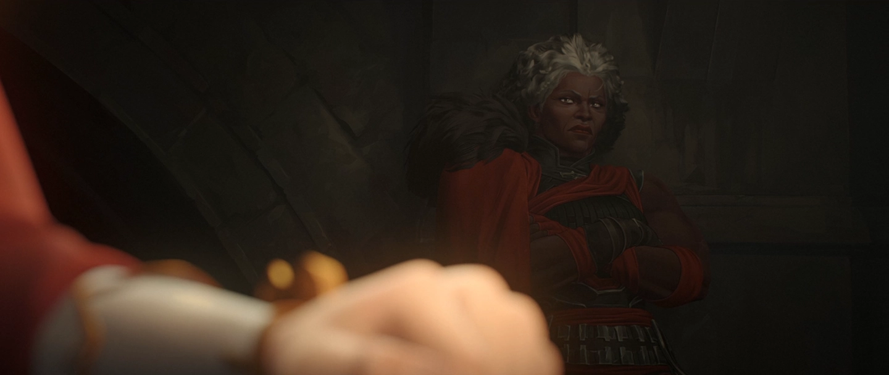
Сама фраза работает за счёт монтажа: заданный вопрос → предположение → Амбесса. И это простейший из примеров. Монтаж в сериале такой же бешеный, как весь визуал: от эйзенштейновских сопоставлений до скачков на деталь и обратно — и заполировать двойной экспозицией.
«Аркейн» вообще полон до краёв всеми возможными приёмами, это живой глубокий бескомпромиссный кинематограф. То, что это ещё и революционная кропотливая анимация, добавляет жизни неизмеримо.
Но дело не в том, как сменяют друг друга красивые картинки. Дело в том, что нарратив работает цельно: зубодробительный конфликт, сложные противоречивые персонажи и цепляющие детали в их поведении, сложнейшие моральные выборы, глубина мотивации — всё это ∼И∼ написано, ∼И∼ нарисовано, и вы не увидите, как одно переходит в другое, оно рождено сплавом. Киноязыком излагается та история, которую написали сценаристы.
Например.
«Аркейн» обожает повторения, что неудивительно: это мощный приём для любого вида искусства. Да даже в жизни, когда что-то отчётливо произносится дважды, надстраивается новый смысл, а для кино повторение — вообще один из основополагающих принципов. Но при этом повтор точь-в-точь происходит редко, чаще что-то меняется: акцент, субъект действия и прочее. Едва ли не важнее самого повторения именно то, что изменилось — в этой разнице и живёт смысл. Смотрите:
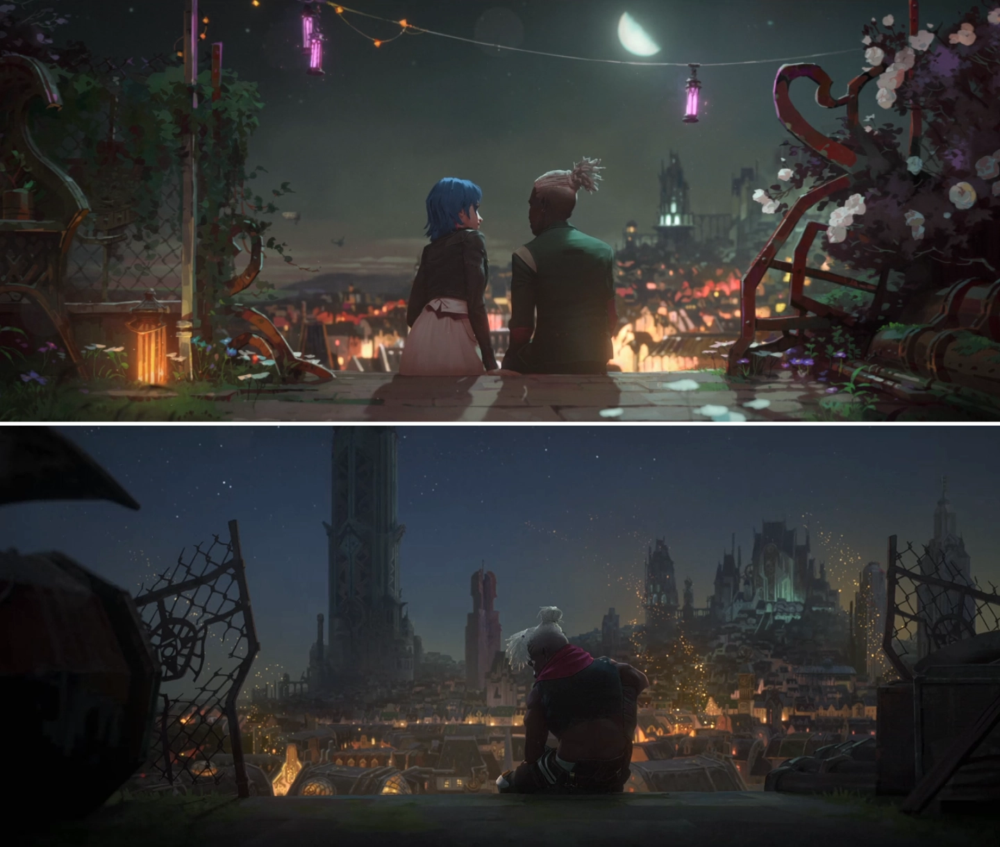
Внизу — сцена из финальной серии. Это то же самое место, что и в 7-й серии (верхний кадр) с учётом разности вселенных, показанное идентично по композиции, плану и мизансцене. В 7-й серии Экко был с Паудер, впервые её поцеловал, в 9-й он сидит один, смещённый от центра — слева от него пустота. Не произносится ни слова, но мы знаем — знаем абсолютно точно, — что на нижнем кадре он думает о Паудер. И это нарратив, неразрывно сплавленный с визуалом.
И нет, то, что Экко думает здесь о Паудер, — не «интерпретация».
Сейчас будет важное обращение к людям, которые утверждают, что абсолютно всё в искусстве интерпретация:
📢 Не всё в искусстве интерпретация, друзья
Как это работает
→ Факт
Во всех научных дисциплинах есть понятие условного «факта»: неоспоримой данности — ∼точки∼ смысла. В том числе в гуманитарных, в том числе — в описывающих искусство. Пропозиция в логике, базисное убеждение в эпистемологии, денотация в лингвистике, денотат в семиотике. Даже в герменевтике есть «буквальный смысл», хотя казалось бы.
→ Интерпретация
А вот понятие интерпретации уже относится только к гуманитарным наукам. Это сложный насыщенный процесс восприятия: то, что читатель/зритель достраивает сам. ∼Поле∼, а не точка смысла.
→ Это другое: вывод
Но вот что происходит, когда мы смотрим не на один голый факт в вакууме, а на несколько фактов, состоящих друг с другом «в отношениях»: появляется третья категория. Не «средняя» между фактом и интерпретацией, а принципиально другая. Её основа: логическая взаимосвязь.
Логика.
Из фактов — логически — делается вывод. Он же инференция в логике и эпистемологии, логическое следствие в семантике.
Это точная верифицируемая информация. Есть посылки (исходные данные или вводные, из которых выводится заключение), есть логические операции, всё проверяется. Ошибка — выявляема. Вывод — один. Поэтому факт и вывод существуют и в точных науках, а интерпретация — только в гуманитарных и только там, где есть живой воспринимающий. «Ошибиться» в интерпретации практически невозможно, но не потому, что она царь-аргумент, а потому что у неё нет правильного ответа, она не верифицируема.
Вывод — другое.
Именно на уровне фактов и выводов — то есть достоверно и верифицируемо — и располагается в сериале романтическая любовь Джейса и Виктора. В интерпретации она живёт тоже, разумеется, — но только потому, что уже твёрдо есть в произведении. Давайте разок по-простому, держа все оговорки в голове:
↓
Романтическая любовь Джейса и Виктора — не интерпретация.
↑
Для доказательства этого понадобится киноведческая методологическая рамка. Есть у киноведения аналог фактов и выводов?
У когнитивного киноведения — да.
Когнитивная теория кино и Дэвид Бордуэлл
Кинокритика прошлого века выглядела так. Существовали большие теории — «школы мысли»: психоаналитическая, марксистская, феминистическая и так далее. Каждый критик с готовым шаблоном наперевес заранее знал, что будет извлекать из произведения. Неважно, о чём фильм, — критик так видит. Интерпретирует. Железный Дровосек в «Волшебнике страны Оз» — рабочий, обесчеловеченный индустриализацией.
Против этого тотального вчитывания в 80-х годах подняли бунт несколько теоретиков кино и философов искусства и начали расшатывать академический мир. Книгами, статьями, пламенными речами они поставили перед киноведением другой вопрос: не «Что этот фильм значит?» (для угнетённого рабочего класса), а «Как этот фильм устроен и что он делает со зрителем?» Это направление и стало когнитивной теорией кино.
В 1996-м когнитивисты выпустили совместную книгу-заявление «Post-Theory: Reconstructing Film Studies» — двадцать семь авторов изложили своё видение. И введение к сборнику — манифест движения.
«Посттеория: реконструкция киноведения»
Вот основные принципы:
☝️ Утверждение о фильме отвечает перед доводами и доказательствами — по самым строгим меркам рассуждения и аргументации.
✌️То, как фильм заставляет зрителя понимать, чувствовать и достраивать увиденное, объясняется процессами психики, которые изучает наука.
🤟 Вместо заранее формирующей анализ теории — конкретные вопросы, а ответы строятся из конкретных улик.
Одним из самых громких бунтарей-когнитивистов был Дэвид Бордуэлл, в «Post-Theory» он выступил соредактором. Бордуэлл горел идеей настолько, что выдавал как из пулемёта культовые книги: всего за жизнь больше двадцати. Кроме программной «Making Meaning: Inference and Rhetoric in the Interpretation of Cinema», которая нам ещё понадобится, важнейший «Film Art: An Introduction» — это учебник, написанный в 1979 году в соавторстве с Кристин Томпсон, пылкой идейной мыслительницей, одной из главных фигур неоформализма в киноведении. Совершенно неудивительно, что отношения соавторов тогда же и перешли в счастливый брак. «Film Art» пережил тринадцать изданий. Сорок пять лет — и по этому учебнику до сих пор учат кино по всему миру.
«Создание смысла: умозаключение и риторика в интерпретации кино»
«Искусство кино. Введение в историю и теорию кинематографа»
В прощании с Бордуэллом в 2024-м Британский институт кино назвал его Аристотелем киноведения, и это точное описание вклада Дэвида Бордуэлла в науку кино. Ну и он, кроме прочего, тоже написал свою «Поэтику» — «Poetics of Cinema».
«Поэтика кино»
Методология
Возвращаясь к отделению фактов и выводов от интерпретаций.
В «Making Meaning» Бордуэлл впервые развёрнуто формулирует типы смысла, которые зритель строит при просмотре фильма. Это схема с четырьмя ступенями: referential → explicit → implicit → symptomatic.
референциальный → эксплицитный → имплицитный → симптоматический
Схема несёт много богатой и подробной теории, образность и тонкость, но нам сейчас нужен максимально простой измерительный инструмент. Поэтому кратко:
→ referential примерно соответствует фактам (данность мира, требующая минимальной когнитивной обработки)
→ explicit примерно соответствует выводам (проверяется «уликами»)
И это две ступени, смыслы которых Бордуэлл называет «буквальными»: тем, что считывается ∼пониманием∼.
А вот дальше Бордуэлл берёт общее понятие ∼интерпретации∼ и разводит его по степени абстракции:
→ implicit
→ symptomatic
Implicit — это и есть базовая интерпретация, поле смысла, работающее на идею создателей фильма (например, предположение, что персонаж подумал или почувствовал). Symptomatic же совсем отрывается от буквальных значений и улетает в космос, а вернее, прямиком к большим теориям и рабочим, обесчеловеченным индустриализацией.
Если прищуриться, мы увидим спектр твёрдости — от «неопровержимо в произведении» до «с произведением почти не связано». То есть адаптированная под нашу цель схема будет выглядеть так: факт → вывод → интерпретация → трактовка.
Давайте вернём грустного Экко и посмотрим, как это работает.
°Факт°
Единица однозначно, неопровержимо присутствующей на экране информации.
→ Группа фактов: кадр из 9-й серии повторяет кадр из 7-й серии с отчётливой разницей в отсутствии Паудер.
°Вывод°
Нарративная логика: информация не показана и не проговорена, но напрямую выводится из фактов произведения.
→ Экко думает о Паудер.
°Интерпретация°
Тесно связанный с происходящим поток образов и мыслей, рождающийся в голове зрителя.
→ Экко жалеет, что не остался во вселенной Паудер. Он знает, что всё сделал правильно — не бросил своих людей, не украл жизнь у своего двойника. Но сожаление тихо точит его сердце.
°Трактовка°
Нечто из внешнего контекста, почти не относящееся к самому произведению.
→ Экко — символ французской буржуазии, тоскующей по духу свободы Революции.
Вот как это можно условно изобразить:
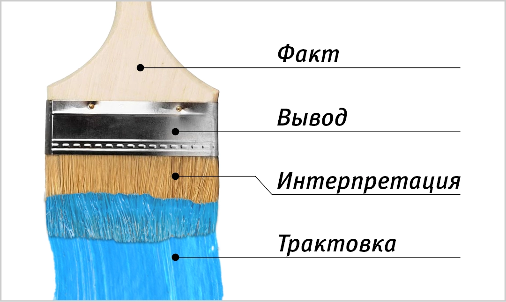
Важный момент. °Факт° — это факт именно произведения: элемент, группа элементов или событие, которые создатели поместили в кадр. И °Вывод° — не бытовая логика, а внутринарративная: разница не в самих логических операциях, а в конкретном наборе посылок. Дам этот набор в конце введения.
Текст и киноформа
В поддержку тезиса «всё в искусстве интерпретация» в разговор часто вкидывают «Смерть автора» Ролана Барта. Однако даже у Барта автор мёртв, но текст-то жив.
В семиотическом и культурологическом значении «текст» — это не слова, составленные в предложения, а связная знаковая система, то есть «произведение». И эта система — как живой организм, в котором всё взаимосвязано. Факты — кости текста, выводы — его суставы. А твёрдая интерпретация — всё остальное: мышцы и то, что поверх. Интерпретация непосредственно связана с телом текста, растёт из него. (Трактовка в этой метафоре — одежда).
Поэтому вопрос: как определить, что утверждение — именно вывод, а не интерпретация?
Кроме того, что вывод всегда можно проверить логической цепочкой, разница состоит в том, что интерпретация «рассыпается» на разные оттенки и обертоны смыслов, а вывод не рассыпается. У него нет вариантов, он однозначен. И именно поэтому он не может быть подробным и сложным. Посылок бывает подведено множество: вывод из выводов из выводов из выводов — это стандартная ситуация. Но итоговое заключение всегда достаточно простое: голое функциональное «Экко думает о Паудер» — ни что именно он думает, ни что именно чувствует. Собственно, градация твёрдости — она же градация сложности. Воспринимать искусство только фактами и выводами скучно, не повторяйте это дома. Я ставлю факты и выводы в основу этого анализа с единственной целью: наглядно показать, что романтическая любовь Джейса и Виктора объективно, твёрдо и в изобилии существует в тексте.
Что обязательно надо держать в голове: есть огромная разница между «чтением» текста и наблюдением за людьми в реальной жизни. Ни при каких обстоятельствах нельзя с уверенностью определить, о чём думает живой человек. Но персонажи — не живые люди. Они — функция, у них нет мыслей, чувств и опыта вне показанного и того, что из показанного выводится. Живой человек — это почти бесконечность данных, которых мы не знаем. Персонажи — часть связной системы, уже имеющей в себе все до единого кусочки пазла. Эта система и существует для того, чтобы мы знали или предполагали, о чём персонажи думают. Бордуэлл и Томпсон называют её киноформой (film form). Киноязык — грамматика, а киноформа — текст, собранный по этой грамматике. Киноформа — это живая, неразрывно связанная система паттернов, единство нарратива и стиля, где абсолютно любой элемент (от костюма до движения камеры) работает на создание смысла. Случайных деталей нет. Всё, что вы видите на экране, — улики, и они ведут к разгадке, иногда мгновенной, иногда с задержкой. Это первый принцип киноформы — Функция (Function): каждый элемент существует зачем-то.
«Film Art», глава «The Significance of Film Form», раздел «Principles of Film Form».
«Искусство кино», глава «Значение киноформы», раздел «Принципы киноформы»
Ну а нет улики — нечего и расследовать: если какого-то факта в киноформе нет, он не вписан в паттерн, и вывод из него сделать нельзя.
Вывод не может быть сделан без фактов
Обещаю вам интеллектуальную честность, как завещал великий Вебер. Я буду тщательно отделять факты с выводами от интерпретаций. Если увидите, что я передёргиваю, пишите, обсудим.
Искусство Fortiche
Возвращаясь к «частям речи» киноязыка. Ещё одна важная составляющая — актёрская игра. Так как в «Аркейне» мы имеем дело с анимацией, здесь свои тонкости.
Французская анимационная студия Fortiche, ответственная за визуал сериала, сотворила безусловный шедевр. Некоторые кадры из «Аркейна» можно выставлять в элитных художественных галереях. Но то, как Fortiche работают с цветом, композицией, деталями и символизмом, как дышат текстуры, рождённые под их кистями, — только часть истории. «Аркейн» — это ода экспрессионизму и ошеломляющий контемпорари-танец ритма, но воплощение художниками языка тела и мимики персонажей — это вообще что-то немыслимое для мейнстримной анимации (кого я обманываю, это не мейнстрим, это чистый артхаус, у которого получилось).
Авторский стиль «Аркейна» начинается в его гибридной природе: в 3D строилась полусырая основа — форма и движение персонажей, работа камеры, — а текстуры, фоны, эффекты (взрывы, дым, магия, царапины, даже свет) скрупулёзно прорисовывались руками поверх неё. Итог: несколько статуэток «Эмми» за каждый сезон, критики называют анимацию одной из красивейших в мире, «Аркейн» — культурный феномен. Но что отдельно важно: захвата движения актёров (motion capture) при создании персонажей не было в принципе. То есть каждое — каждое — движение было выставлено аниматорами вручную, кадр за кадром.
Позы и мимику героев перерисовывали с самых разных образцов, аниматоры даже сами записывали некоторые мизансцены на видео, и это уморительно, честно говоря. Они выглядят как участники школьной постановки.
А в итоге мы видим такую тонкую и мощную драму, что, если бы это сыграл живой актёр, он забрал бы «Оскар».
Это пик: absolute cinema и absolute animation, объединённые в едва ли не новый жанр.
И каждый вздох, поворот головы, мимический сдвиг и увеличение зрачков в «Аркейне» созданы осознанно и для реализации конкретной творческой задачи. Микровыражения или случайная пластика живого актёра могут добавить значений, которые создателями изначально не имелись в виду (впрочем, что попало в фильм — то попало в фильм и стало частью текста). Но в анимации всё ∼намеренно∼ на каждом этапе.
Намеренность в анимации — не моя выдумка и не риторическое восклицание, а базовое свойство этого вида искусства. О чём так или иначе говорило множество именитых творцов — Гор Вербински, Генри Селик, Брэд Бёрд. Но давайте сверимся с академической точкой зрения. Пол Уэллс, один из ведущих теоретиков и историков анимации, в книге «Understanding Animation» во введении пишет, что анимация — «отдельная форма, работающая совершенно иначе, чем игровое кино». Там же он приводит слова аниматора Александра Алексеева: «В отличие от игрового кино, анимация берёт материал исключительно из человеческих идей, и в причинно-следственной цепочке образов — цепочке, которую авторы выстраивают сами, — ничто не может быть отдано на волю случая».
«Понимая анимацию»
Книга, например, здесь.
Ещё в книге Уэллс приводит цеховую байку от Роберта Брира — художника и аниматора, одного из основателей американского киноавангарда — о том, что аниматоры шутки ради часто прячут внутри движущегося объекта один кадр с нарисованным кирпичом. Зритель его не замечает, потому что кадр проносится слишком быстро. Но стоит сказать, что кирпич там есть, — и зритель начинает смотреть пристальнее. Поэтому Уэллс заявляет девизом книги научить зрителя «видеть кирпич». И это умение при просмотре «Аркейна» жизненно необходимо, но с одним важным уточнением: Fortiche оставляют не «кирпичи», а наполненные смыслом под завязку знаки, без которых произведение не работает цельно.
Достоверно определиться с наличием «кирпича» можно, только поставив произведение на паузу, и это стандартная практика: стоп-кадр и киноанализ всегда шли рука об руку. Наш любимый Ролан Барт, убивший всех авторов, в своё время вообще написал программное заявление, что суть кино ухватывается только в статике: эссе «The Third Meaning: Research Notes on Some Eisenstein Stills», впервые вышедшее в культовом Cahiers du cinéma (№ 222, 1970).
«Третий смысл: исследовательские заметки о некоторых фотограммах Эйзенштейна»
Вот перевод этого эссе на английский. Самая мякотка в конце, под подзаголовком «The Still». Я не буду столь категорична, как маэстро, движение в кадре я отменять не собираюсь, однако имейте в виду: то, что есть в тексте как безусловный факт, иногда при беглом просмотре не звучит громко. Но если даже для игрового кино каждый фрейм важен, для анимации умножайте значимость в разы. А почему? А потому что:
В анимации всё намеренно
«Телесная» часть актёрской игры в анимации принадлежит актёрам озвучки. Когда в кадре играют живые люди, между ними всегда возникает что-то непредсказуемое — то, что называют «химией». Голоса же для «Аркейна» актёры записывали без контакта друг с другом, сурово направляемые режиссёром. И хотя это всё ещё не настолько выверено, как итог работы аниматора, простора для импровизации в озвучке куда меньше, чем в живой совместной игре. А значит, и здесь перед нами выбор, а не случайность.
Итого
Всё, с методологией закончили. Основные инструменты у нас на руках. Я чуть раньше писала, что вывод — не бытовая логика, а внутринарративная, и разница «логик» — в конкретном наборе посылок.
Вот что это значит.
В каждое логическое «вычисление» в анализе киноформы по умолчанию подставляются вот эти посылки:
→ У киноязыка есть своя «грамматика» и свои конвенции.
→ Текст, он же киноформа, — связная система, в которой уже есть все кусочки пазла («улики»). Любой элемент значим и связан с другими — не анализируется в вакууме.
→ Если факта нет в произведении, вывод из него сделать нельзя.
→ Персонажи — не люди, а функция нарратива: у них нет мыслей, чувств и опыта вне показанного и выводимого.
А если киноформа анимационная, то добавляется:
→ В анимации всё намеренно.
Сначала — наблюдения
Итак. Джейс и Виктор.
Их сюжетную арку («хекс-арку») можно условно разделить на две части:
≈ Первая, где всё в целом понятно (первый сезон и начало второго)
≈ Вторая, где чёрт ногу сломит (два последних акта сериала)
Давайте разбираться с «понятной» частью. Сначала надо набрать наблюдений, потом будем препарировать и разбираться, как это видит наука.
Главное, держите в уме, что текст показывает эмоцию, но осознаёт ли её персонаж — совсем другой вопрос.
Первый яркий °Факт° выглядит вот так.
Джейс откровенно любуется уходящей Мэл, и это вызывает у Виктора острую эмоцию.
Что? Как? Почему? Почему эмоция такая острая? Что-то должно было привести к ней в драматическом смысле, она не могла появиться с бухты-барахты. И да, в сериале есть всё, что сделало логичной эту реакцию, но мне понадобятся дополнительные вводные, так что вернёмся к этой точке позже.
Спустя семь лет мы обнаруживаем молодых учёных, практически сросшихся плавниками. Они самые важные друг для друга люди. Они чаще говорят «мы», чем «я»: «It's our turn to decide the future of Hextech», «Poor use of our time», «Our pledge to improve lives for those in need», «You want us to build weapons?», «We’re scientists, not soldiers», «Exactly the sort of thing we wanted to fix with Hextech» (это верхушка айсберга: примеров с «we» и «our» столько, что о них разобьётся не один «Титаник»).
«Теперь наша очередь решать будущее хекстека»
«Не лучшая трата нашего времени»
«Наше обещание улучшить жизнь нуждающихся»
«Ты хочешь, чтобы мы делали оружие?»
«Мы учёные, а не солдаты»
«Именно то, что мы хотели исправить с помощью хекстека»
Они думают и говорят друг о друге в ситуациях, когда этого не ожидаешь. Джейс говорит о Викторе, не прекращая. Когда Джейс в разговорах с другими персонажами открывает рот, он через раз переводит разговор на Виктора.
Виктор тоже переводит разговор на Джейса.
Джейс: Remember the Distinguished Innovators competition?
Виктор: I remember you… (notching gears in the carriage over).
Джейс: Помнишь Конкурс выдающихся изобретателей?
Виктор: Я помню тебя… (клепающим шестерёнки в карете по дороге туда)
Синджед (наставник Виктора; в сериале его множество раз называют «Доктор» и один раз по фамилии Ревек, но он — воплощение чемпиона «Лиги» Синджеда, и в титрах тоже стоит Синджед) говорит о важных и судьбоносных вещах: о репутации в научном сообществе, о следе, который останется в памяти потомков.
Но Виктор думает только о Джейсе и его реакции: «Jayce will understand», — а остального просто не существует.
Джейс поймёт
Джейс НЕ ПЕРЕСТАВАЯ трогает Виктора. Этих прикосновений настолько много в кадре, что люди иногда ошибочно приписывают Джейсу повышенную тактильность вообще, как черту. Но это абсолютно не так. Джейс очень, очень сдержан и руки благовоспитанно держит при себе.
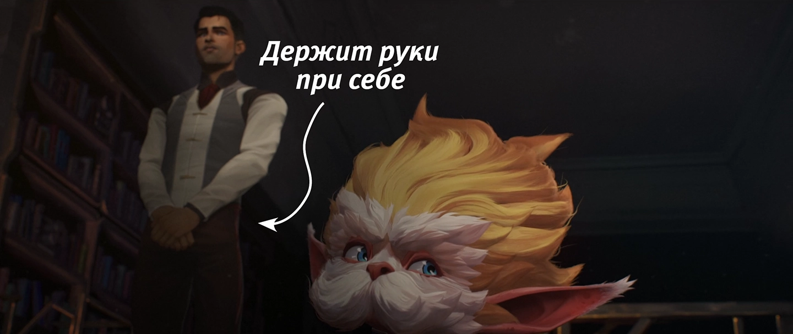
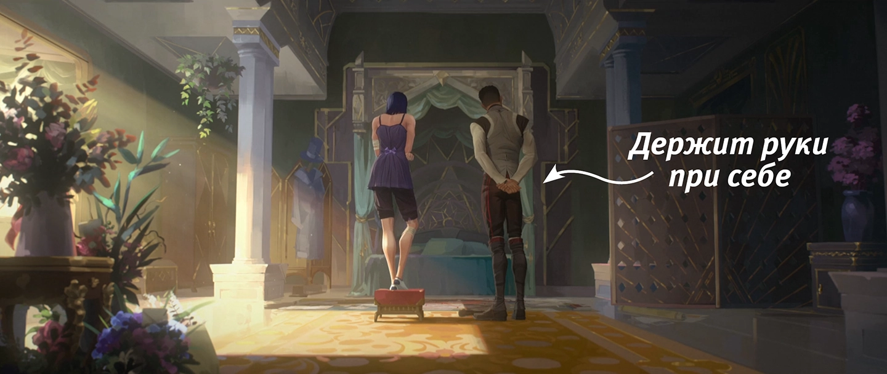
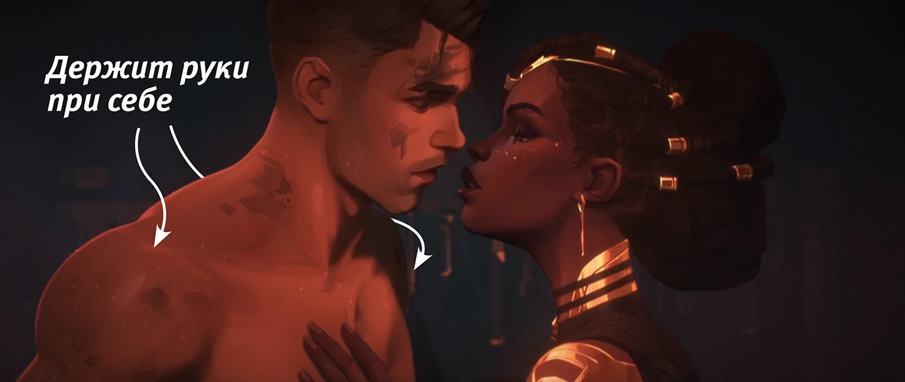
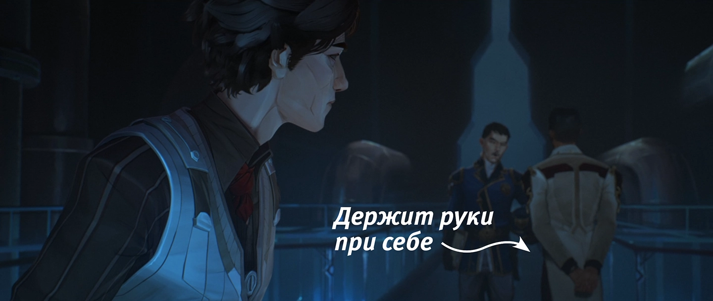
К Кейт, практически его названной сестре, он коротко прикасается всего один раз, поддерживая и соболезнуя в минуту её тяжелейшего горя от гибели матери.
Ещё он щёлкает её по шапке в День Прогресса, но это не проявление тактильности, а «братская» придурь.
Единственные два человека, которых Джейс хватает загребущими ручищами, — это его мама и его Виктор.
Джейс трогает и обнимает Виктора без повода и без спроса — рука на плече, на спине, ладонь соскальзывает к пояснице. Джейс не представляет, что между ним и Виктором может быть дистанция, не регистрирует её как норму.
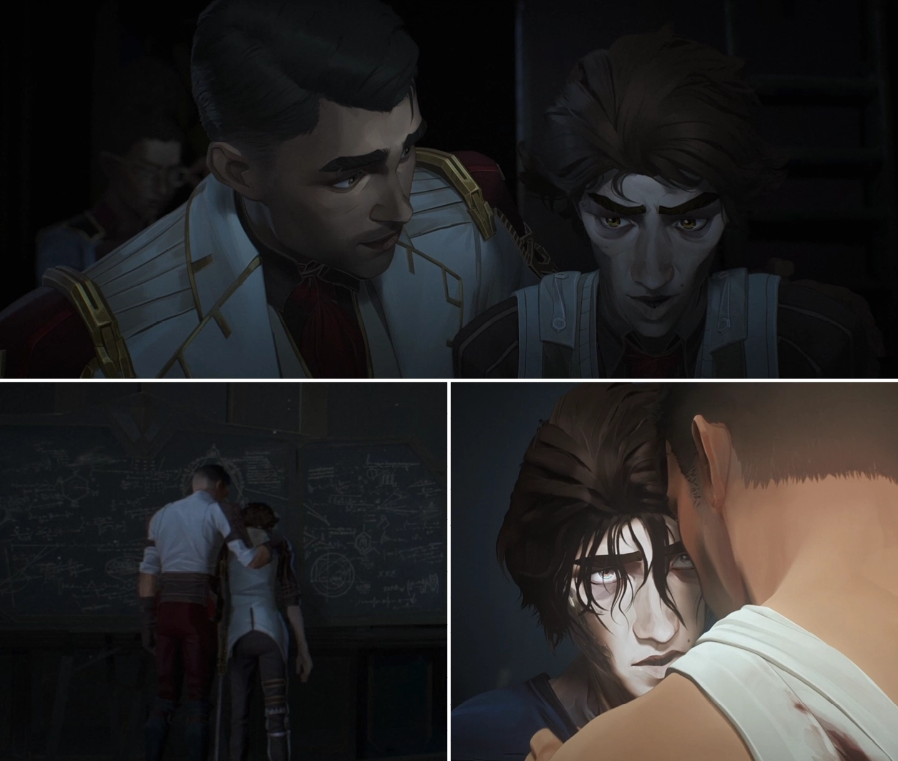
Когда Джейс не успевает как следует потрогать Виктора, он трогает место, где Виктор только что был
А вот как Виктор реагирует на прикосновения Джейса.
Когда не успевает взять себя в руки после конфликта с Хаймердингером. Джейс только что горячо за него вступался, а теперь кладёт руку Виктору на предплечье — и Виктор замирает, рефлекторно прикрывает глаза. На секунду он теряет связь с реальностью, что хорошо видно по паузе перед репликой.
Сцена на мосту, когда Джейс пытается прикоснуться к Виктору, очень яркая.
Джейс бесится. Виктор бесится гораздо сильнее. Но Джейс всё равно тянет руки — и получает по ним отлуп. Однако разгневанный Виктор не проходит и метра, не пропускает и минуты, как уже снова ожидает и принимает руку Джейса на своём теле.
— Дай обниму.
— Не трогай!.. …Я стою нетронутый уже две секунды, где рука на моей пояснице?
Это выглядит как разборки парочки в кризисе, а не отношения двух «друзей».
А это филигранно нарисованный чувственным момент: объятие за сценой перед выступлением Джейса в День Прогресса.
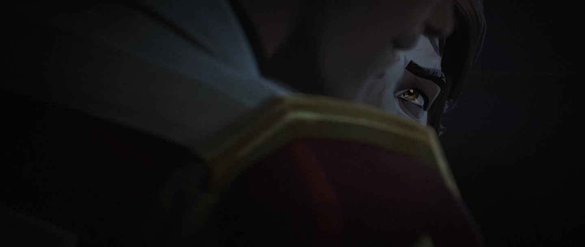
Проксемика и крупный план
Вот что нам говорит наука: пространство до 45 сантиметров между людьми считается интимным, а не предназначенным для друзей и даже семьи — классическое исследование проксемики Эдвардом Холлом, актуальное по сей день.
Ссылка попроще: на вики.
Источник: Edward T. Hall, «The Hidden Dimension» (глава «Distances in Man», подразделы «Intimate Distance» и «Personal Distance»).
Эдвард Т. Холл, «Скрытое измерение» (глава «Дистанции у человека», подразделы «Интимная дистанция» и «Личная дистанция»).
Вот что нам говорит киноязык: это экстремально крупный план, два персонажа настолько близко друг к другу и к виртуальной камере, что нам сложно различить, что происходит. Выхвачен фрагмент лица Виктора, он утоплен, окружён телом Джейса — расфокусированным, размытым. Нам передаётся ощущение именно телесной близости. Не действие, а чувство. Виктор коротко, будто исподтишка бросает взгляд на губы Джейса. А когда Джейс проходит к сцене, на миг заполнив собой весь экран и потом оставив Виктора позади, камера остаётся на месте, и потеря близости почти написана на лице Виктора — он не отрывает взгляд от Джейса и чуть тянется вслед за ним.
Интимная дистанция, объятие, мегакрупный кадр — всем вот этим в киноязыке и тем более анимации не принято изображать исключительно дружеские чувства.
Дистанция камеры — всегда выбор, и всегда со смысловой нагрузкой, бордуэлловской функцией. За столетие кинематографа этот принцип не поменялся, а конкретно у крупного плана конвенция сложилась буквально с начала существования медиума.
Бела Балаж (венгерский писатель, сценарист, теоретик кино), начиная с 20-х годов XX века, в своих книгах разрабатывал теорию крупного плана как особого режима близости. В крупном плане эмоции перестают быть чем-то сокрытым внутри и становятся непосредственно читаемыми — «В крупных планах каждая морщина становится решающим элементом характера, а каждое подёргивание мышц свидетельствует о пафосе, указывающем на великие внутренние события» («Early Film Theory: Visible Man and The Spirit of Film»). Крупный план, по Балажу, создаёт между зрителем и персонажем интимность, недоступную никакому другому плану.
«Ранняя теория кино: “Видимый человек” и “Дух фильма”»
Спустя почти век Мэри Энн Доун (одна из важных современных теоретиков кино, профессор Калифорнийского университета в Беркли) снова исследует крупный план и в книге «Bigger Than Life: The Close-Up and Scale in the Cinema» (глава «The Delirium of a Minimal Unit») констатирует, что он традиционно используется для передачи близости, интимности и доступа к внутреннему состоянию персонажа.
«Больше, чем жизнь: крупный план и масштаб в кино» (глава «Делирий минимальной единицы»)
А Бордуэлл и Томпсон в «Film Art» пишут, что кадрирование может выделяться самой своей редкостью и за счёт этого приобретать бо́льшую силу (глава «The Shot: Cinematography», раздел «Framing»). У нас здесь экстремально крупный план, в котором тело расфокусировано и обнимает собой фрагмент лица другого. Таких кадров в сериале наперечёт — и на этом фоне он значим уже сам по себе.
(глава «Кадр: операторская работа», раздел «Кадрирование»)
Причём эта сцена настолько point of view конкретно Виктора, что нам даже не показывают реакцию Джейса на отказ подняться вместе на сцену: Виктор утоплен в ощущении близости и не фиксирует мимику Джейса — поэтому мы тоже её не видим. Fortiche оставляют небольшую незавершённость эмоциональной фразы Джейса, и эта незавершённость работает на эмоциональную фразу Виктора.
Но мы видели лицо Джейса за секунду до этого момента:
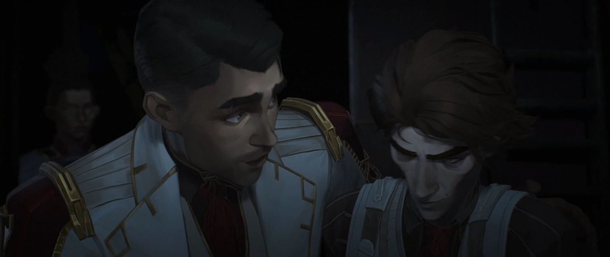
point of view — взгляд с точки зрения
Итого: план и визуальные решения делают громкий акцент на моменте и приглашают всмотреться в эмоции Виктора, дают подсказку об их чувственной природе, а мимика, язык тела, физическая близость, общая на двоих и описываемая наукой как интимная, завершают эту картину маслом.
И добавлю сюда этот кадр. Сосредоточенный, обожающий взгляд, фрагмент лица, а на первом плане размытая фигура партнёра: композиционный дубль кадра за сценой, но персонажей поменяли местами. Одно из множества параллельных повторений, в которых просто утоплена сюжетная ветка Джейса и Виктора. Это важно, поговорим об этом море из параллелизмов попозже.
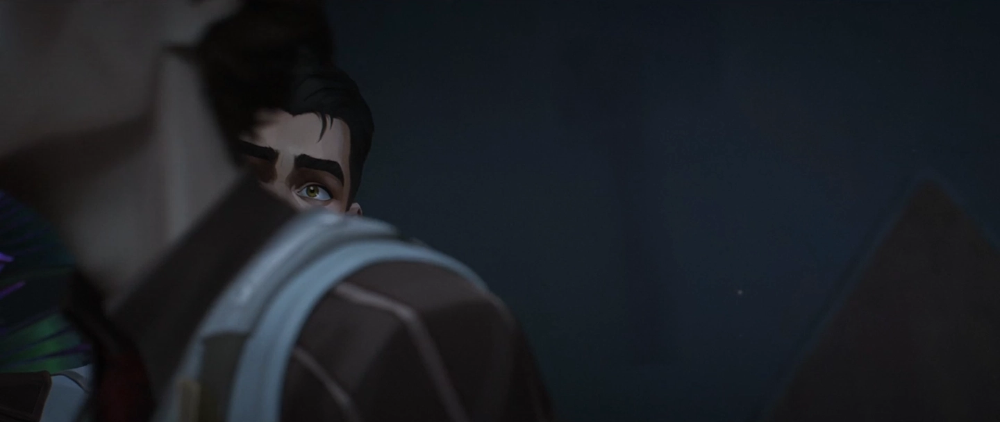
А теперь давайте-ка посмотрим на пару персонажей-мужчин, в абсолютно платонической дружбе которых никто не сомневается. Никаких подтекстов, никакого гомоэротизма. Чистая. Мужская. Дружба. Вписанная в сюжет и переданная киноязыком. «Побег из Шоушенка», Энди и Рэд.
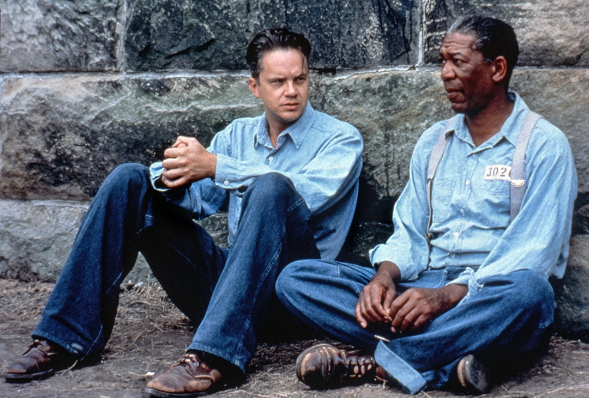
Их дружба растёт на протяжении двадцати лет. Путь обоих в сюжете — это путь к свободе и в конечном итоге друг к другу. Вот так выглядит финал фильма.
Обратите внимание, что камера уходит в самый дальний план, когда они обнимаются при встрече. В первую очередь киноязык таким образом говорит нам о свободе, противопоставляя её годам тюрьмы, об открывающемся для героев огромном мире, но ещё, что прикосновение и объятие — не важны. Эта история не о том.
Дарабонт достаточно «ощущенческий» режиссёр. Вспомнить только самую известную из этого фильма сцену под дождём.
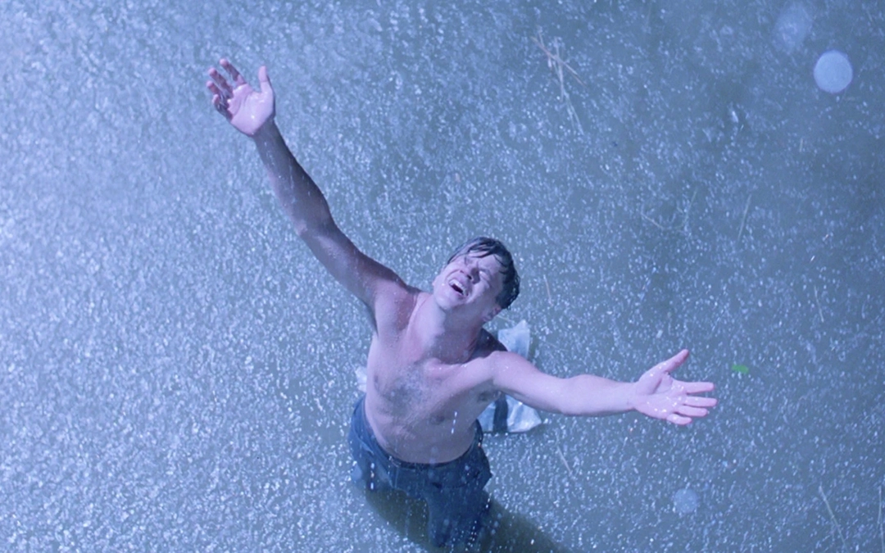
Или, например, за минуты до финала Рэд находит письмо, и всё — пение птиц, свет, череда средних и крупных планов — передаёт нам именно физические ощущения персонажа.
Но в финале свобода и дух — не тело.
А отношения Джейса и Виктора переданы очень и очень телесными. Тактильности и проксемической близости здесь слишком много для художественной передачи дружбанской дружбы, образ создаётся гораздо более интимный. И это я только пробежалась по верхушкам.
Любовь не отменяет дружбу
И давайте проясним такой момент. Дружба — важно и круто. И между Джейсом и Виктором — огромная как океан дружба. Но не только она. Дело в том, что, с научной точки зрения, дружба — это часть романтической любви, важнейший её компонент. В прочной романтической любви дружба и романтика не вытесняют друг друга, они работают вместе. Это устоявшееся и накопленное наукой знание.
→ Обзорная психология
Эллен Бершайд, одна из главных исследователей близких отношений, делит все проявления любви на четыре типа и фундаментом длительных отношений в паре определяет companionate love — любовь-партнёрство, любовь-дружбу. Влюблённость на короткой дистанции может обойтись без дружеского компонента, но серьёзных и глубоких романтических отношений, согласно концепции Бершайд, без companionate love не бывает.
→ Свежие эмпирические данные
Нашумевший в крупных СМИ мета-анализ семи выборок: две трети людей пришли в романтические отношения из дружбы, и это предпочитаемый путь.
Stinson, Cameron & Hoplock 2022
→ Нейробиология
У людей в долгих устойчивых романтических отношениях дружеско-романтическая привязанность (дружба, слитая с любовью — friendship-based love) и собственно романтическое влечение («бабочки в животе») — это два разных и при этом одновременно активных нейробиологических коррелята. Они не конкурируют и не вытесняют друг друга. Крепчайшие и нежнейшие из романтических отношений (в эксперименте рассматривались именно такие) стоят на физическом субстрате дружба+любовь.
Acevedo, Aron, Fisher & Brown 2012
Поэтому каждый раз, когда в реплаи приходят всплёскивать руками, мол, ради этакой пошлости испоганили прекрасную дружбу, один ангел теряет крылья.
Романтическая любовь не «меньше», а дружба не «важнее». Отдельно мучающий меня вопрос: почему же дружба всегда оказывается главной священной ценностью, а любовь — чем-то мелким и грязным, когда речь идёт об однополых парах?
Главный мотив хекс-арки
Извините, отвлеклась. Мы говорили о прикосновениях и том, что у Джейса и Виктора их слишком много.
Но кому слишком много, а сериалу всё ещё недостаточно. «Я срастусь с этими прикосновениями на уровне ДНК и заставлю зрителя гадать об их символичности!» — патетически восклицает сериал и превращает прикосновения героев в болты, ввинченные в позвоночник сюжетной арки, в несущие опоры моста, по которому мчится эта история.
Чтобы понять эту патетику, давайте посмотрим, что происходит.
Когда любой факт кинопроизведения (объект, жест, цвет, реплика, композиция кадра и так далее) отчётливо повторяется, это называется мотив. И один из самых повторяемых мотивов в арке Джейса и Виктора — передача чего-то от одного персонажа к другому. Он ощущается почти избыточным, навязчивым, как назойливая песенка, как раскаты эха, возвращающиеся опять и опять. Это однозначное приглашение смотреть внимательнее и делать выводы.
Кроме главных событий, альфы и омеги сюжета — передачи руны маленькому Джейсу в начале и передачи той же самой руны астральному Виктору в конце — это ещё и множество сцен, включая самые бытовые.
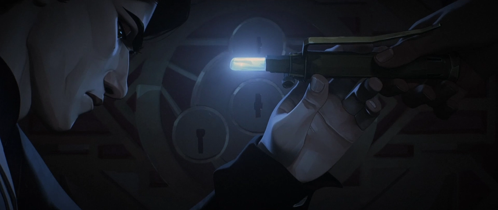
Получается вот что: если взять эти моменты передачи чего-либо и соединить, мы получим изложение всех важных событий хекс-арки.
→ Маг отдаёт руну — завязка
→ Виктор возвращает браслет — знакомство
→ Виктор передаёт светящуюся штуку — пошли «на дело»
→ Джейс отправляет Виктору шестерёнку в невесомости — прорыв в открытии технологии
И знаете, думаю, этот момент тоже входит в секвенцию: Джейс передаёт Виктору свою хекстек-мечту, делая её общей
Вот как это выглядит:
Джейс, который «передаёт» полумёртвому Виктору хекскор в грудь, — рифма к передаче мечты, но изуродованная и страшная.
То есть эти сцены опорные для сюжета. Делая узнаваемый акцент — повтор мотива передачи, — произведение подчёркивает, что сцена опорная. И одновременно это работает в обратную сторону: помещая мотив передачи в узловые сцены, произведение поднимает его значимость для истории.
Киноформа даёт понять, что важно, куда смотреть. Суть сюжетной арки живёт в этих моментах.
Оставим символизм (передача как символ доверия, разделённой ответственности, блаблабла), он слишком эфемерный. А вот что есть твёрдо: объект — что передаётся — и условие — как передаётся. И в подавляющем большинстве случаев при передаче происходит прикосновение.
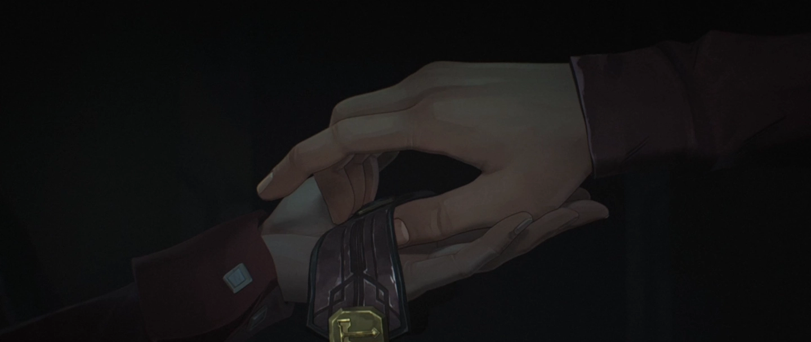
Фортиши очень телесно работают с этими сценами: крупные планы, замедление, нежность контакта. Прикосновение неотделимо от смысла мотива.
Пацаны друг с другом о чувствах вслух почти не говорят, но их прикосновения сообщают всё, что нужно. Как история живёт в передаваемых объектах и говорит: «Смотри сюда, это — важно», так чувства Джейса и Виктора друг к другу живут в прикосновениях, и это — важно.
Продолжаем разговор
Поехали дальше фиксировать наблюдения.
На Скай Виктор не обращает никакого внимания, вплоть до некрасивого игнорирования. Ему катастрофически всё равно на её существование.
Просто сравните, как Виктор за сценой смотрит на Джейса, а как мельком пробегает глазами по Скай, будто она предмет мебели.
Максимум, он вежлив, но и то без контакта, без единого взгляда в её сторону. А когда она решается «сделать первый шаг», он ставит между ними стену из отчуждённой вежливости. Мы не знаем, всегда ли Виктор обращается к Скай по фамилии, но здесь это ответ на попытку сблизиться, и поэтому отчасти воспринимается как отвержение, хотя и произнесённое мягко.
Вот как Виктор реагирует на само предложение пройтись домой вместе:
Он почти не регистрирует слов Скай и полностью поглощён работой. Дальше нам не показывают лицо Виктора, и однозначно утверждать, что он осознанно отвергает романтическое внимание, нельзя — здесь только интерпретации. Но даже самая тёплая из интерпретаций говорит об отсутствии интереса Виктора к её компании.
Сериал показывает отношение Виктора к ней только таким. Уже после того, как его с Джейсом «детище» убивает Скай, Виктор вцепляется в её записи, говорит о её мечтах (интерпретация: потому что его накрывает невыносимой виной). Но нам не показано ни малейшего намёка, что при жизни она хоть что-то для него значила.
У Джейса не только не показано никаких личных отношений в его 30+, несмотря на привлекательность и популярность, он не готов и к отношениям с Мэл, не ждёт их. Он отшатывается и удивляется, когда она проявляет к нему внимание, и изображён акцентированно шокированным, когда она инициирует поцелуй. Два разных ракурса с расширенными от изумления глазами — это мегаакцент.
После секса с Мэл Джейс лежит к ней спиной и (тоскливо) смотрит в пустоту. Я ставлю «тоскливо» в скобки, потому что это ближе к интерпретации. А твёрдый факт: он не в контакте с Мэл.
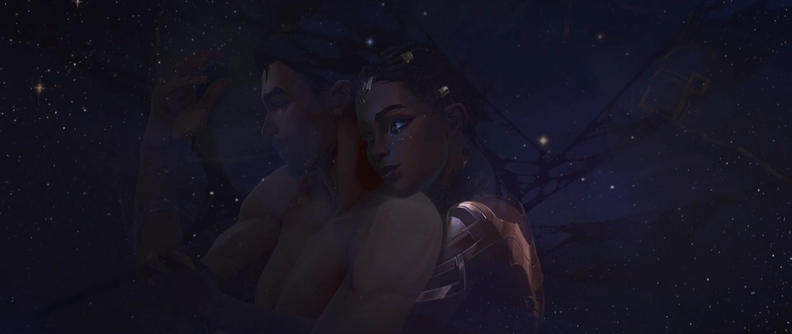
Ну а потом… *барабанная дробь* Джейс тайком сбегает от неё, и в следующей сцене он около постели Виктора.
Тут факты такие:
Мэл просыпается одна и недовольна этим настолько, что на следующий день говорит с Джейсом отрывисто и швыряется в картину краской, а интонации Джейса очень виноватые.
+
Джейс сидит в больнице у постели Виктора той же ночью — темно, горит светильник.
=
Джейс тихо ушёл от спящей Мэл, зная, что поступает некрасиво; отправился в лабораторию, нашёл там на полу тело Виктора в отключке, доставил его в больницу.
Ещё раз: Джейс сбежал от Мэл к Виктору после секса. И нам эпично противопоставили две постели в абсолютно одинаковых ракурсах и композициях стык-встык.
Любовный треугольник
В принципе, на протяжении всего сериала Мэл и Виктор изображаются в идентичных ракурсах и композициях.
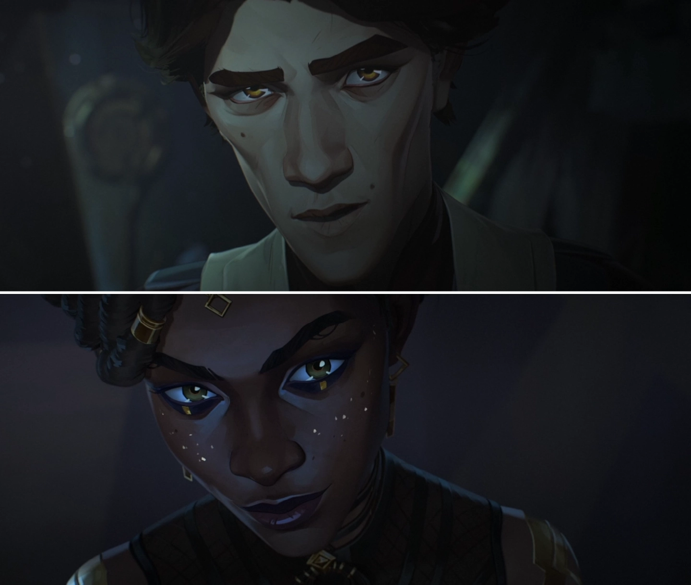
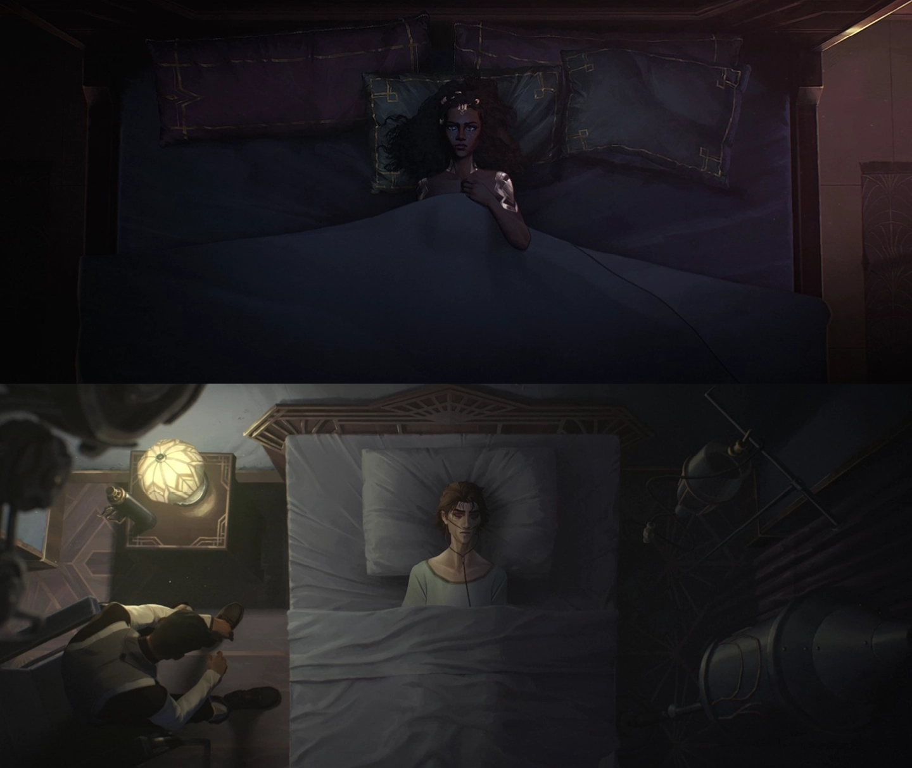
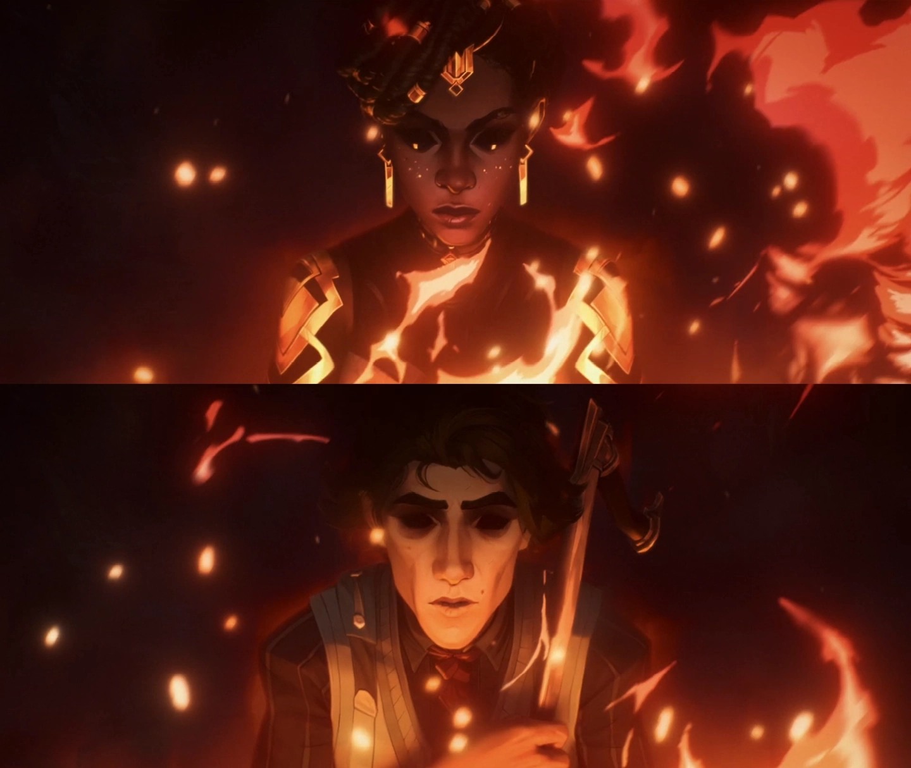
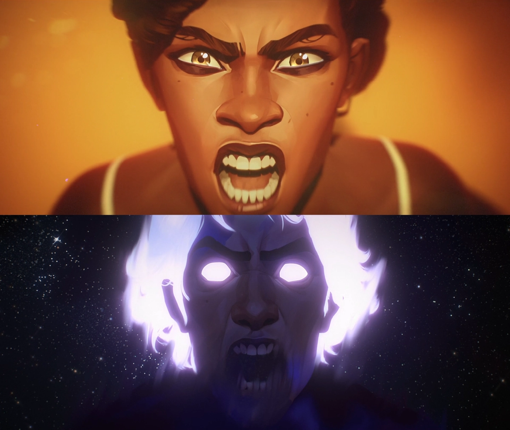
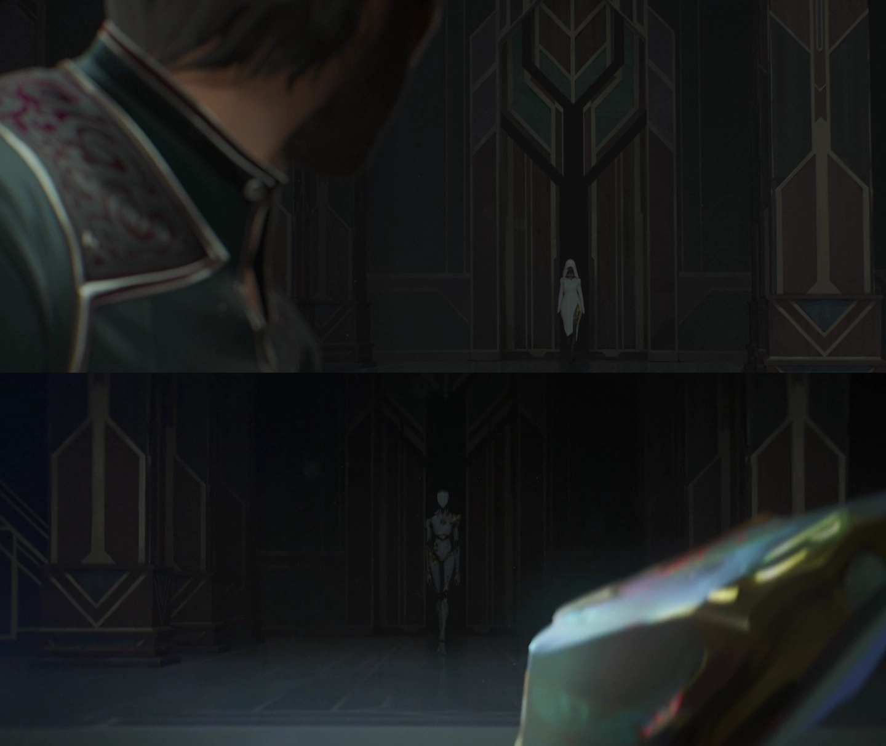
И часто эта схожесть показана с точки зрения Джейса: флиртующий взгляд глазами Джейса; постели, между которыми он разрывается; его галлюцинации. Эти повторения созданы, чтобы зарифмовать чувства Джейса, красоту, которую он видит.
Так киноформа создаёт образ любовного треугольника. Асимметричного, не осознанного персонажем, но произведение сообщает множеством способов, что это именно треугольник, а через отношения Мэл и Джейса треугольник становится «любовным».
Просто посмотрите на сцену секса. Это форменное безобразие, а не сцена секса. Нам не показывают «секс Джейса и Мэл», мы видим ритмичную компиляцию, в которой три действующих лица — четыре, если считать хекскор. Виктор внедрён в сцену неотделимо — на уровне факта.
Я могу написать отдельное эссе об этой сцене секса и обо всех смыслах, что туда зашиты, но пощажу всех нас и сейчас не буду этим заниматься.
Дальше по сюжету — красивейший монтажный переход между сценами: Мэл с Джейсом у неё на коленях и Виктор, сидящий напротив хекскора. Переход работает по эйзенштейновской логике: из встречи двух кадров рождается третий самостоятельный образ. И это снова слепляет этих троих в одно целое. Есть миг, когда за счёт двойной экспозиции Джейс будто лежит на коленях Виктора.
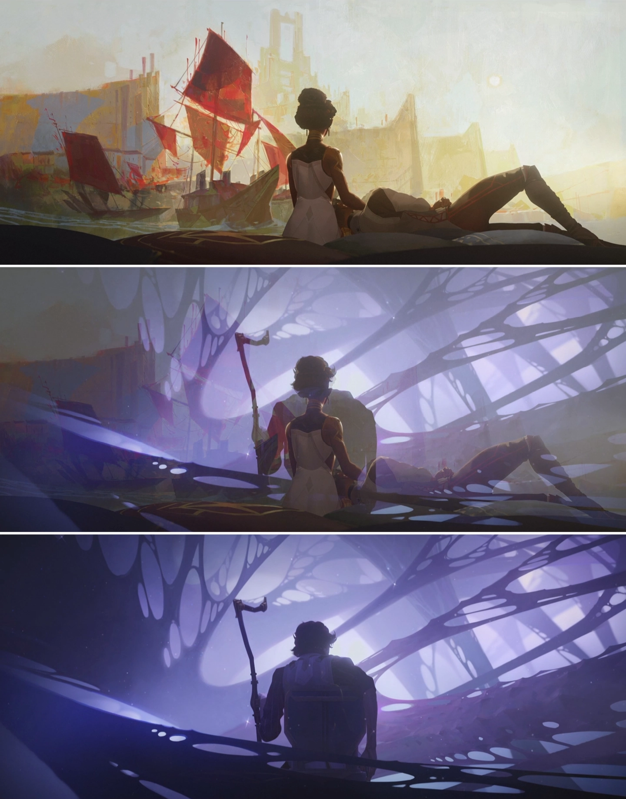
В какой-то момент нам показывают этих троих треугольником буквально. Здесь романтика только один из смыслов (ещё: классовое неравенство, выбор морального пути), так что в этой конкретной точке любовный треугольник улетает в °Трактовку°, но ему и не надо держаться в каждом мгновении железно, его крепко держат другие твёрдые факты и выводы, в том числе пока не названные мной. А °Факт°: мы видим три угла. В нижней точке, а также посередине между Мэл и Джейсом — Виктор.
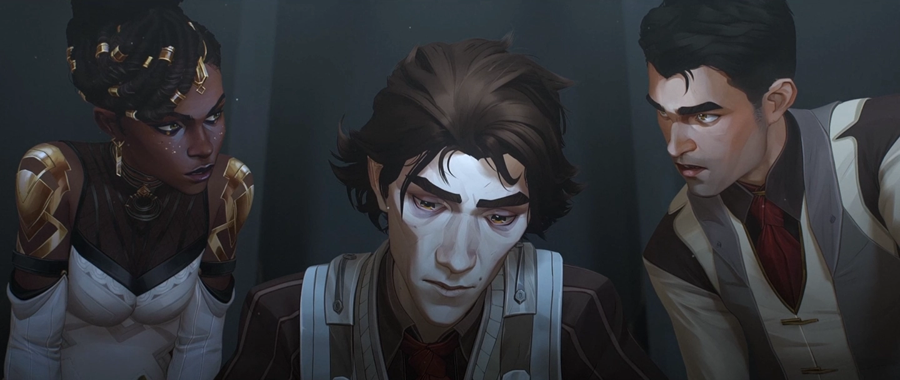
В нижней точке — потому что меньше всего политического влияния и права голоса в ситуации. Между Мэл и Джейсом — как заноза в заднице; препятствие, мешающее безмятежному счастью молодых.
Вот эту сцену очень любят приводить в пример те, кто считает, что между Джейсом и Мэл настоящая любовь. И в самом деле, это буквально единственная сцена, где Джейс наконец тянет к Мэл руки так, как до этого делал только с Виктором.
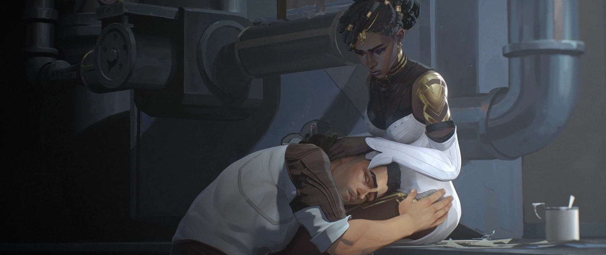
Но, друзья, они здесь в нескольких шагах от тела Виктора, они не одни. Джейс только что отчаянно цеплялся за костыль своего «партнёра». Костыль — как наглядный прокси Виктора, зафиксированного в магическом желе неподалёку, — буквально торчал между ними:
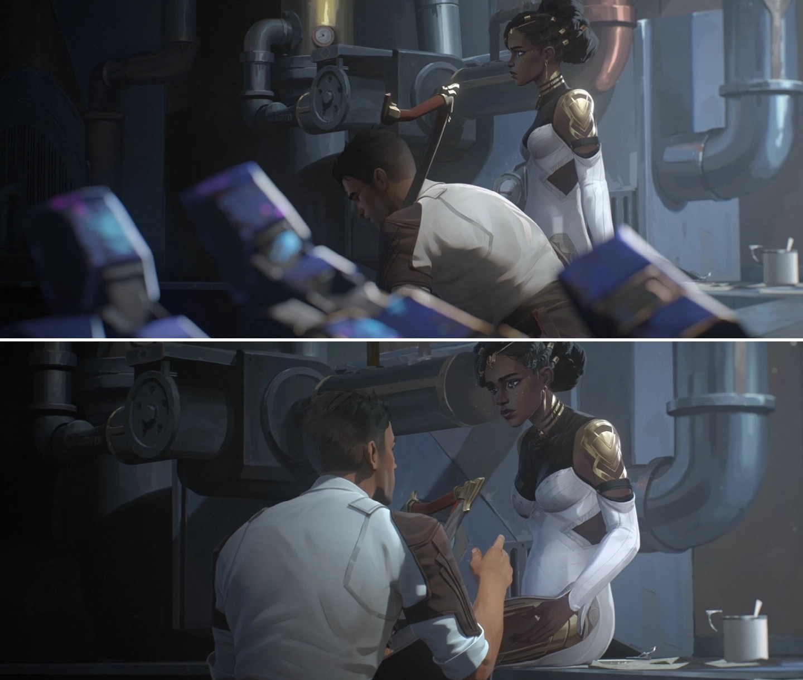
Мэл вынуждена забрать костыль из рук Джейса и отодвинуть. Процесс показывают нам крупным планом — это не проходной момент. И у нас есть секундное замешательство Джейса экстремально крупным планом в ответ на движение Мэл. Джейс не хочет расставаться с этим чёртовым костылём.
И, снова напомню, я говорю не об отношениях живых людей, я говорю о том, что и как создатели сериала выбрали показать.
Ну, «Аркейн», ну покажи ты наконец полноценную романтику этой пары. Ну выведи ты Джейса погулять с Мэл под ручку — чтобы никакого Виктора не было в этот момент ни в мизансцене, ни в репликах. Ну вот же — Джейс вышел погулять в парк, чтобы проведать Кейт, он не приколочен к своему полумёртвому партнёру. Кейт достаточно важна, чтобы на время уйти от Виктора, а Мэл — нет?
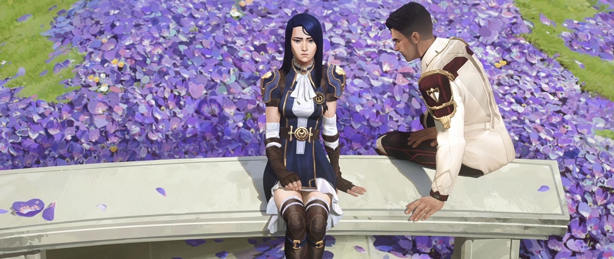
А как красиво выглядели бы цветущие деревья, если бы влюблённая пара разделила под ними момент скорби только вдвоём. Почему же ты, сериал, показываешь «любовь» Мэл и Джейса, только присовокупив Виктора, что же ты хочешь сказать, сериал?
Этот любовный треугольник — не только визуальная виньетка: он в мотивации персонажей, в диалогах. Начиная со сцены секса, нет ни одного разговора между Мэл и Джейсом, который бы не включал в себя Виктора — Виктор постоянно между ними.
Пока Джейс считал Мэл доброжелательной наставницей, про Виктора он с ней, видимо, не заговаривал. Потому что, когда вместо извинений Джейс начинает вываливать ей на голову информацию про своего партнёра, она удивлена, что Виктор вообще для Джейса что-то значит. И этот её прищур — она что-то ∼подозревает∼:
А после секса фонтан Джейса с излияниями о Викторе невозможно заткнуть.
По сути, последняя сцена, где Джейс и Мэл говорят только друг с другом и только друг о друге: перед поцелуем. И первая сцена, где они после длинного перерыва говорят только друг с другом и только друг о друге: сцена разрыва их любовных отношений; момент, когда они расстаются хорошими друзьями. Сцена «You will never be a passenger», второй сезон:
«Ты никогда не будешь пассажиром»
Почему эта сцена — расставание?
Джейс только что кидал Мэл в лицо горькие выстраданные в яме обвинения, и хотя он извиняется после, он:
а) не прикасается к Мэл;
б) уходит.
Даже в человеческом мире это выглядело бы разрывом, а в художественном произведении детали собираются в единый слепок, концентрированную идею. Если бы создатели хотели передать, что Джейс и Мэл помирились и продолжают «встречаться», их бы показали стоящими рядом, что-то вроде: полуобъятие, голова Мэл на плече Джейса, они вместе смотрят на горизонт, в одну сторону — совместный путь, совместный эмоциональный опыт. Но нет. Джейс уходит.
Да и самой Мэл здесь настолько не до интрижки с Джейсом: она говорит о сложном и выстраданном, связанном с её наследием — ничего о Джейсе, ноль. На уровне реплик этих отношений для неё не существует, на уровне пластики — прикосновений — тоже. И сцена заканчивается тем, что Мэл стоит и смотрит на горизонт одна:
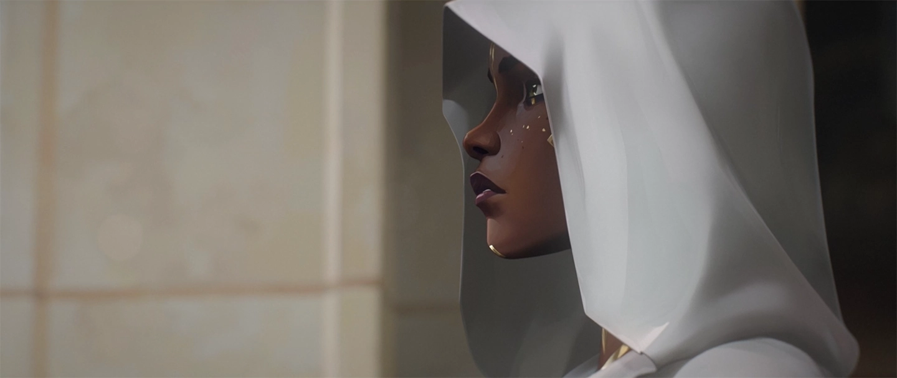
Их любовные отношения закончены.
Это вывод, не интерпретация. Этот вывод поддерживает гораздо большее количество фактов, чем я сейчас изложила, но даже их уже достаточно.
Так что же заставило Джейса дёргаться и не переставая говорить с Мэл о Викторе именно после начала — и до конца — отношений? Сериал показывает вину Джейса, но неосознанную. И я скажу вам, что это за вина, но прежде давайте зафиксируем…
…ещё несколько наблюдений
Для самой Мэл неочевидно, что после секса они должны стать более близкими людьми. Когда Джейс начинает вести себя как плюшевый медвежонок и укладываться к ней на коленочки, она в лёгком шоке.
Они никогда не были близки: Джейс не знает о Мэл простейших вещей — например, того, что она рисует. Заодно оцените, сколько вины в его голосе на этой фразе:
С момента поцелуя — которого Джейс не ждал — до похищения аномалией проходит что-то около пары недель. Это весь срок их романа. Мэл начинает интересоваться Джейсом как мужчиной только тогда, когда его лицо появляется на всех поверхностях Пилтовера, включая дирижабли. «Интересоваться» — максимум. Никакой особенной любви сериал не показывает. Учитывая её стандартный modus operandi, в деле изначально намерение «подцепить на крючок, использовать для удовольствия и изредка в политике» плюс симпатия и лёгкий азарт. Но Джейс своими неловкими нежностями вызывает у Мэл по-настоящему тёплые чувства. И при этом начинает выносить ей мозг треклятым Виктором. Представляю, как это должно дезориентировать: думала, что начинаешь отношения — которые не планировала — с мужиком, а оказалось, что сразу с двумя.
Не брат
Джейс говорит о Викторе «He’s like my brother» («Он мне как брат»), но:
1) У Джейса нет родных братьев и сестёр.
2) Самый близкий к тому, чтобы назваться сиблингом Джейса, человек — это Кейт; и поведение Джейса по отношению к Кейт драматически отличается от его поведения по отношению к Виктору.
Впрочем:
0) Троп «Он мне как брат… О боже, да я же всегда любила его!» или «Персонаж ошибочно принимает романтические чувства за как-родственные» — известный и устоявшийся. Начиная с Джейн Остин и её «Эммы» — как самого романа, так и его экранизаций и адаптаций вроде «Бестолковые» (Clueless, 1995 год): героиня полжизни считает Найтли (он же Джош в Clueless) кем-то вроде старшего брата и сама удивляется, обнаружив в себе ревность. Очень часто этот ход с разной интенсивностью используют ромкомы. В «Когда Гарри встретил Салли» герои годами уверены в чистой дружбе между собой, пока страх потери и неожиданная ревность не заставляют их понять, что близость давно не платоническая. В сериале «Девочки Гилмор» Лорелай, сезонами рассматривавшая Люка как безопасную гавань и родного человека, наконец разрешила себе увидеть в нём любимого. Троп живой, примеров много, думаю, мысль мою вы поняли.
Раскроем остальное:
1) У Джейса нет родных братьев и сестёр, то есть он не знает, что испытывают в подобных отношениях, ему не с чем сравнить. Он только знает, что его чувства к Виктору превосходят всё, что он испытывал к другим людям, превосходят и «партнёрство», и «дружбу», но как назвать то, что он чувствует, Джейс не понимает. Чуть позднее, в сцене «воскрешения» Виктора и их разрыва, нам покажут, как Джейс мечется между «партнёром» и «лучшим другом», видя, что ни одно слово не передаёт его чувств, и поэтому ни одно не может удержать Виктора от ухода, хотя Джейс уверен, что они не могут и не должны расстаться, они две половины одного целого, они друг для друга: «My place was always here… with you». Но нужного слова Джейс не находит.
«Моё место всегда было здесь… с тобой»
2) Отношения Джейса и Кейт яркие, смешливые, полные подколок, иногда жёстких. Они оба относятся друг к другу слегка снисходительно — типичнейшие брат с сестрой.
Ничего из этого нет у Джейса по отношению к Виктору. Джейс говорит с Виктором с мягкой интонацией, смотрит на него с непередаваемой нежностью, иногда чувственно приоткрыв губы.
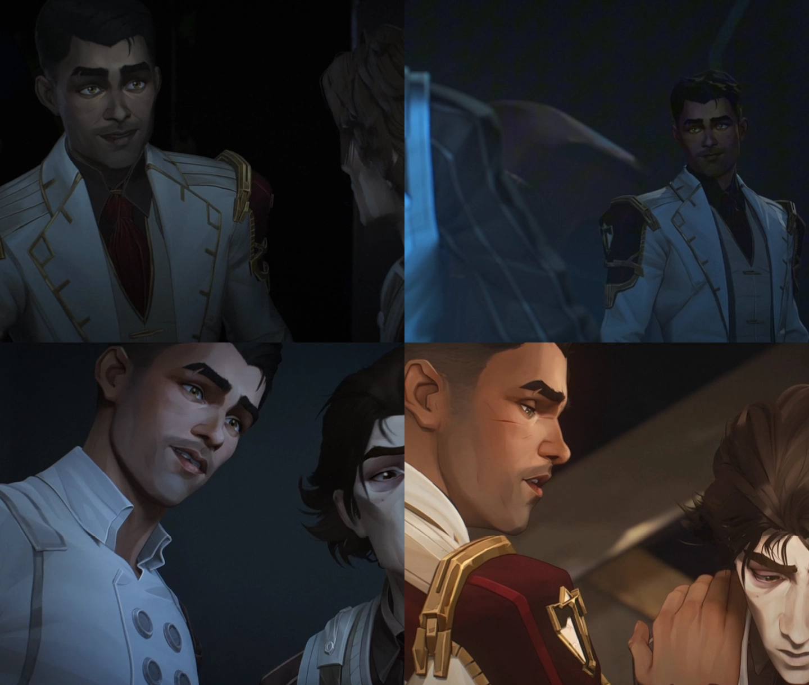
Ну а про то, что Джейс постоянно тянет руки к Виктору, а больше почти ни к кому, и прописался в Викторовой проксемической интимной зоне, я уже говорила.
Джейс встаёт между Виктором и опасностью — физической, социальной, политической.
И Виктор на это реагирует с благодарностью и восхищением, а потом тает от прикосновения.
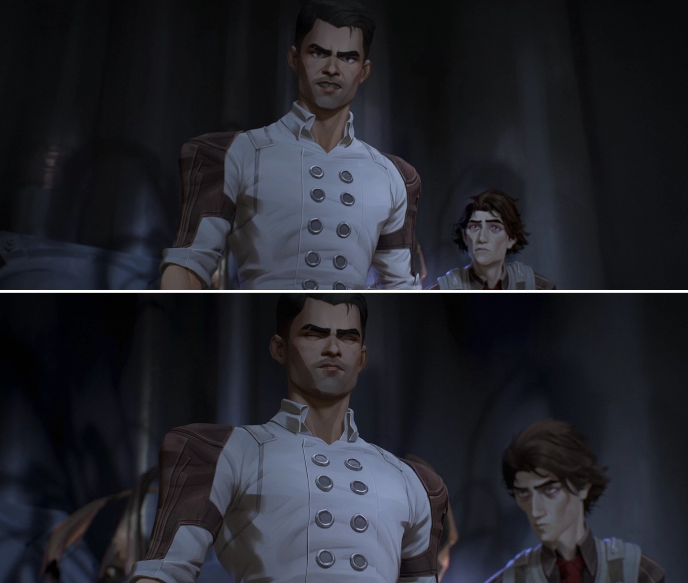
Джейс не выносит, когда они с Виктором ругаются, и старается такие ситуации сразу смягчать.
На мосту, когда Джейс сам инициирует разговор на повышенных тонах, он сам же моментально извиняется и начинает говорить мягко.
В сердце хекс-врат за минуту до разговора с Маркусом Джейс пытается извиниться за неудачное выступление на Дне прогресса, в ответ Виктор взрывается ещё больше, и Джейс реагирует характерной мимикой. Такая же мимика у него во время разговора в лаборатории, когда Виктор отвечает пассивно-агрессивно. Виктор недоволен — Джейсу не по себе.
Джейс спит очень крепко, нам показывают, что его не будят громогласные сирены и Мэл, проснувшаяся в панике. То же самое, когда Джейс спит около воскресающего Виктора: громкий стук металлического тела об пол, стук костыля, но Джейс спит как убитый, как и в случае с сиренами. Однако как только Виктор негромко, почти полушёпотом произносит: «Джейс?», Джейс моментально просыпается.
Джейс настолько боится потерять Виктора, что сначала вышвыривает Хаймердингера из Совета и без всякой рефлексии довольно грубо использует для этого Мэл. Потом нарушает обещание Виктору, не задумываясь ни на секунду о последствиях. А когда «воскрешённый» Виктор его покидает, Джейс в тяжёлом стрессе и тоске: помят, не причёсан — это нетипично, обычно он очень аккуратен, — одет в форму Академии, спит в лаборатории, а не у Мэл, будто пытается хоть так вернуть старые времена, «когда всё имело смысл», и ощутить контакт с Виктором.
Джейса бросил «друг», ему больно, но он не идёт с этим чувством к той, кто эмоционально могла бы его поддержать. Как если бы это было неуместно. Как если бы Виктор был единственным, кто может заглушить эту боль. Голос у Джейса надтреснутый и несчастный.
Всё, я собрала бинго из поведенческих и биологических маркеров романтического влечения у Джейса. Давайте чекать на соответствие научным исследованиям.
Как наука определяет любовь
То, что сейчас является консенсусом, в 2003 году изложила Лиза Даймонд в статье для Psychological Review. Романтическая любовь — это результат работы двух автономных систем: гонадно-опосредованной (андрогены у мужчин и эстрогены + андрогены у женщин) и нейропептидно-дофаминовой (нейропептиды окситоцин и вазопрессин + дофаминовая система вознаграждения). То есть секс и романтика часто работают в связке, но это два разных механизма.
Вот этот второй нейропептидно-дофаминовый механизм лежит в основе того, что называется «pair-bonding» (по-русски «парное связывание», но для точности пусть будет английский термин), и в науке считается ключевым для романтического влечения. Pair-bonding — это поведенческий паттерн, а нейропептидно-дофаминовый контур — его биологический субстрат. Гонадная же система отвечает за сексуальное влечение.
Вот доступный абстракт статьи Даймонд на пабмеде.
А полная пдфка есть на ResearchGate.
Возбуждённый определённым образом нейропептидно-дофаминовый контур даёт бабочек в животе, тоску по любимому и прочие поэтические эмоции. Это в своей базе сложная неконтролируемая настройка тела на нейрохимическом уровне — не моральный выбор, не осознанное решение, тело почему-то «кликает» (по миллиону причин), и процесс пошёл.
Свежий обзор нейрохимии любви: Blumenthal & Young 2023.
Сам термин pair-bonding пришёл из этологии 1940-х годов, а в дискурс о поведении человека его ввела социобиология 1970-х. Концептуально он тесно переплетён с теорией привязанности, которую с 1960-х разрабатывал Джон Боулби, исследуя биологическую систему отношений «мать — дитя». В 1987-м Синди Хазан и Фил Шейвер перенесли теорию привязанности Боулби на взрослые романтические отношения.
К нынешнему моменту научная идея такова: романтическая любовь — это экзаптация, функция, которая существовала для одной цели, но эволюционировала и приспособилась для другой. Иными словами, есть нейробиологический механизм, который эволюционно возник, чтобы потомство лучше выживало, и таким образом сохранялся вид. И именно этот механизм приспособился и стал работать как романтическое влечение. Это не «два одинаковых», нейробиологически — это один и тот же механизм.
Работа на эту тему: Bode 2023.
При ранних и острых состояниях pair-bonding описывают, например:
— интенсивное желание близости и физического контакта с партнёром
— навязчивые мысли о партнёре
— сопротивление разлуке
Никого не напоминает?
И ещё один термин: когнитивная взаимозависимость.
Тут важно сразу отсечь два хвоста:
∼ Это НЕ созависимость. Созависимость — болезненное и дисбалансное состояние отношений.
∼ Это НЕ структурная взаимозависимость. Структурная бывает и у коллег по работе.
Когнитивная взаимозависимость — это ментальное состояние, когда партнёры вписывают друг друга в Я-концепцию, начинают воспринимать цели, эмоции и благополучие другого как часть собственного. Когнитивная взаимозависимость оказалась незначимой даже у близких друзей, но сильной в романтических отношениях.
Agnew et al. 1998: постоянная ссылка на саму статью (доступен абстракт), текст целиком.
Маркеры романтики: Джейс
Итак, что мы наблюдаем в поведении Джейса.
→ Первый маркер: язык. Джейс и Виктор постоянно говорят «мы». В исследованиях это называется we-talk. Люди так говорят, когда партнёр уже когнитивно включён в их «Я-концепцию».
Мета-анализ 30 работ подтверждает: устойчивое использование местоимений первого лица множественного числа в спонтанной речи статистически связано с высокой взаимозависимостью и качеством романтических отношений.
Вот исходная работа: Karan, Rosenthal & Robbins 2019 (доступен абстракт).
Вот пересказ от Калифорнийского университета.
Есть ещё теория самоэкспансии — растворения себя в романтическом партнёре. Там тоже в том числе про we-talk как показатель глубины отношений.
И невозможно не вспомнить хрестоматийное «мы покушали», «мы сходили в туалет» от мамочек — и это родственник того же явления. «Мы» как показатель размытия границы между «я» и «другой» — и не только в голове, но и в теле. У матери и ребёнка телесное размытие достоверно зафиксировано с обеих сторон.
∼ В исследовании с серией экспериментов Kirsch et al. 2023 матери в буквальном смысле физически чувствовали за своего ребёнка (правда, не столько угадывали, сколько подставляли свои ощущения, но честно воспринимали их как ощущения ребёнка).
∼ И младенцы воспринимали тело матери отчасти как продолжение своего: Maister et al. 2020.
Авторы обоих исследований прямо сравнивают это с тем, как размывается граница между «я» и «другой» в романтической паре. Вот обзор исследований размытия телесной границы у романтических партнёров: Quintard et al. 2021.
Так и для Джейса границ с Виктором не существует как явления — ни когнитивно, ни телесно.
→ Второй: поглощённость. Джейс говорит о Викторе постоянно, в разных контекстах, с разными людьми. Это соответствует тому, что в психологии называется «интрузивными мыслями о партнёре» и считается одним из классических признаков инфатуации — интенсивной фазы романтической привязанности. Обычно эта фаза длится месяцы, но исследования показывают: при высокой взаимозависимости, тревожности привязанности или препятствиях для сближения маркеры инфатуации иногда могут сохраняться годами. Для Джейса Виктор — когнитивный «якорь»: его присутствие (или отсутствие) становится фоном, на котором разворачиваются все остальные мысли.
Самоотчётные исследования показывают: люди в состоянии влюблённости думают об объекте привязанности значительную часть времени бодрствования, и эти мысли носят непроизвольный характер. Обзорный материал Bode & Kushnick 2021 (по тезису цитируются Tennov 1979; Hatfield & Sprecher 1986, задавайте поиск по слову intrusive).
А нейровизуализация Fisher et al. 2005 объясняет, почему эти мысли так навязчивы и неконтролируемы: романтическая любовь активирует дофаминовую систему вознаграждения и мотивации.
→ Третий: избирательность прикосновений. Прикосновения почти исключительно к одному человеку — причём не функциональные (пожать руку), а аффективные: коснуться плеча, положить руку на спину, обнять. Нейробиология показывает: такие прикосновения активируют систему вознаграждения мозга и маркируют партнёра как «своего» через окситоциновые механизмы (окситоцин — часть системы pair-bonding).
Прикосновение — в принципе основной способ, которым люди передают интимность в романтических отношениях. Романтических партнёров касаются значительно чаще, чем других людей.
Любовь надёжнее считывается через прикосновение, чем через мимику или позу.
→ Четвёртый: проксемика, или физическая дистанция. Тут я уже главное сказала, ну вот ещё можно добавить, что, согласно теории Холла, входить в интимную зону подталкивает желание касаться партнёра и чувствовать его запах. Если же человек держится на расстоянии, взаимодействие ограничивается менее интимными каналами — зрением и слухом.
Ссылки те же, что при первом упоминании проксемики.
Попроще: на вики.
Источник: Edward T. Hall, «The Hidden Dimension» (глава «Distances in Man», подразделы «Intimate Distance» и «Personal Distance»).
→ Пятый: реакция на угрозу. Джейс мгновенно встаёт между Виктором и любой опасностью. Когда человек становится фигурой глубокой значимости, мозг начинает сканировать угрозы для него так же, как для себя, и автоматически мобилизует ресурсы на защиту. Нейробиология привязанности описывает это так: миндалина и связанная с ней сеть критичны и для материнской, и для романтической привязанности — материнская требует бдительности к безопасности ребёнка, а романтическая включает повышенную чувствительность к сигналам опасности для партнёра.
И за защиту партнёра отвечает вазопрессин: у моногамных видов он обеспечивает охрану партнёра и избирательную агрессию по отношению к угрозам, а у людей связан в том числе с ревностью и защитным поведением.
→ Шестой маркер: attachment-driven auditory salience, избирательная слуховая значимость, обусловленная привязанностью. Джейса пушкой над ухом не разбудишь, но тихое мягкое «Джейс?» от Виктора, и Джейс подрывается. Одно из старейших и самых цитируемых исследований по теме — Formby 1967: матерей в многоместных палатах опрашивали о том, от чьего плача они просыпались в течение трёх ночей. В первые ночи матери просыпались от плача собственного ребёнка примерно в половине случаев, но уже к третьей ночи почти все пробуждения — 22 из 23 — приходились на плач именно своего младенца, а не соседнего, хотя объективная громкость была сопоставима. Мозг научился выделять акустический профиль значимого человека.
Помним, что романтическая любовь — это экзаптация привязанности «мать — дитя», и работают они одинаково. Это невозможно сымитировать, это не проявление «дружелюбия»: нервная система Джейса обрабатывает во сне голос Виктора как сигнал первой значимости.
→ Седьмой: дистресс разлуки. Джейс остро боится потерять Виктора, а потеряв, переживает «протест разлуки»: тревогу, тоску, неспособность функционировать без фигуры привязанности. Взрослые реагируют на отрыв от значимого партнёра именно так — как на утрату части собственной опорной системы. То, что сопродюсер и сценаристка сериала Аманда Овертон в дополнительных материалах ко второму сезону описывает как «Джейс не мог представить свою жизнь без Виктора» — это точное описание протеста разлуки по Боулби, перенесённого во взрослый романтический контекст. Хазан и Шейвер прямо связывают этот механизм со взрослой романтической любовью.
В фазе «протеста» человек отвергает утешение от других. Так работает биологический механизм. Мозг на биологическом уровне не просто хочет «кого-то близкого», он хочет конкретного человека (Джейс не спит у Мэл, не ищет у неё утешения).
→ Восьмой маркер: эксклюзивность. Гарт Флетчер в своей работе от 2015 года исследует эволюционно-репродуктивный контекст pair-bonding. Его тезис простыми словами: человеческая любовь эволюционно выработалась именно для того, чтобы держать двух людей вместе.
Fletcher et al. 2015 — абстракт на пабмеде; статья целиком на ResearchGate.
Эксклюзивность — не культурный артефакт и не моральный выбор: фМРТ показывает, что романтическая любовь задействует подкорковые системы вознаграждения и мотивации, чтобы сфокусироваться на одном конкретном человеке.
Любовь, по Флетчеру, — это commitment device: «механизм верности», работающий на всех уровнях, начиная с нейробиологического. «Человек привязанный» не хочет других романтических партнёров, и речь не о сексуальной верности — pair-bonding про то, к кому тянет эмоционально и нейробиологически. Это невозможно контролировать головой, это даже не обязательно осознавать, механизм всё равно работает. Если интересно, Флетчер анализирует и полигамию — и приходит к выводу, что романтическая любовь постоянно бунтует внутри полигамно устроенных сообществ, потому что любовь не «выбор», она — механизм. То, что заставляет Джейса не искать в 30+ лет других отношений, лежать после секса с Мэл с тоскливым лицом, сбежать из её постели к Виктору, — это и есть commitment device в действии, то есть романтическая любовь. Даже если Джейс не понимает, что его чувства романтические. Вот, собственно, та вина, о которой я говорила выше. То, что не отпускало его, пока их с Мэл сексуальные отношения длились, и перестало быть преградой для хорошей дружбы, когда эти отношения закончились. Джейс выбрал Виктора, эксклюзивность в безопасности.
И хотя мы сейчас о Джейсе, было бы преступлением не сказать, что «In all timelines, in all possibilities only you» от Виктора — это эксклюзивность, доведённая до вселенских масштабов.
«Во всех временных линиях, во всех вероятностях — только ты»
→ Девятый маркер — прямое следствие восьмого: примирение. На мосту Джейс повышает голос и тут же сам себя осекает, извиняется, переходит на мягкий тон. Сохранить связь для него важнее, чем продолжать настаивать на претензиях.
Наука называет это гипотезой ценных отношений (valuable relationships hypothesis): чем выше ценность связи, тем сильнее человек склонен прощать. Теория, сформулированная на приматах и подтверждённая на людях: прощение напрямую растёт из того, насколько отношения сохраняют ценность для человека.
McCullough et al. 2010 — постоянная ссылка (абстракт), доступная целиком пдфка.
А само извинение в этой логике — сигнал: «ты для меня ценнее конфликта». Эксперимент Forster et al. 2021 показывает, что примирительные жесты работают именно так — повышая воспринимаемую ценность связи.
Флетчер (это который про эксклюзивность в предыдущем маркере) описывает тот же механизм на эволюционном уровне через «intimate relationship mind»: партнёры в паре автоматически подавляют реакции, угрожающие связи. Это часть пакета pair-bonding — связь требует механизмов удержания, и один из них ставит сохранение контакта выше самолюбия.
«психика близких отношений»
Итак.
С точки зрения науки: системное, устойчивое сочетание таких биологических и поведенческих маркеров описывается как романтическое влечение. Важны именно системность и устойчивость, все примеры поведения вместе.
В
М
Е
С
Т
Е,
а не каждый по отдельности. Их много, они повторяются, наблюдаемое поведение относится только к одному человеку.
С точки зрения художественного текста: романтическое влечение Джейса к Виктору фиксируется на уровне °Вывода° из множества фактов и наблюдений. Обязательно добавьте происходящее на протяжении всего сериала, включая финал, который мы ещё не обсудили (и о да, финал нам досыплет с горкой). Однако уже рассмотренное и само по себе стоит железно.
Это не °Интерпретация°. Поведение Джейса не «намекает» на любовь, оно прямо воспроизводит поведенческие профили pair-bonding и когнитивной взаимозависимости. Джейс реагирует на Виктора как на романтического партнёра.
Смотрите, простая аналогия для ясности.
Персонаж плачет → значит, ему грустно.
«Значит, ему грустно» — нарративный вывод, но одного факта «Персонаж плачет» недостаточно для этого вывода. Может, он от счастья плачет.
Поэтому в этом случае нам надо минимум три факта:
1) катятся слёзы;
2) задействованы определённые мимические мышцы;
3) предшествующие события — триггер грусти.
Оп, вот теперь вывод: ему грустно.
На самом деле, фактов нужно гораздо больше. Тем более «предшествующие события» — это группа фактов. Ещё у нас есть кинематографические конвенции передачи чувств, приёмы киноязыка и художественного повествования. И это всё работает в первую очередь на эмоциональное восприятие, а не на логику. Вам не надо сидеть и морщить лоб, размышляя, что значат слёзы, вы видите их на экране — и вывод готов.
Но слёзы обычно не заряжены политически и идейно, и психологического сопротивления или выборочной слепоты при просмотре не вызывают, считываются моментально. А романтическая привязанность здорового мужика к своему «партнёру» заряжена.
Если вам очень, очень тяжело принять чувства Джейса как данность, вспомните, что романтическая любовь и сексуальное влечение работают как две разные системы. И мы сейчас говорили только о нейропептидно-дофаминовой.
Но я обязательно отошлюсь к гонадной и проанализирую, как сериал обходится с подачей эротического контекста между этими двумя персонажами, наберём ещё вводных и обсудим дальше.
Что ещё хочется добавить о маркерах романтики. Когда я только начинала собирать источники для этой части анализа, я думала сопроводить её комментарием вроде: «Художнику не обязательно штудировать актуальные научные статьи по нейробиологии, чтобы рисовать романтическое поведение, он может это делать на насмотренности — ощущенческом опыте, — как и зритель на ощущенческом опыте воспринимать. Любовь Джейса видно — и всё; наука — костыль для тех, кто не хочет смотреть». Но масштаб совпадения научно зафиксированных проявлений pair-bonding и поведения Джейса в сериале наводит меня на мысль, что и сценаристы, и аниматоры реально могли писать и рисовать любовь Джейса по научным статьям.
Зачем вообще в битком набитом произведении длинный кадр крупным планом, в котором Джейс спит как убитый под вой сирен и панику Мэл, если не для того, чтобы подчеркнуть, что он просыпается от полушёпота Виктора? Ну и показать, что при протесте разлуки не спит у Мэл.
Но это, конечно, только предположение.
Так что: Мэл Джейсу всегда нравилась, но он не тосковал о ней ночами, ничего не ждал. Если бы Мэл взяла Джейса в начале таймскипа (семь пропущенных лет между первым и вторым актами первого сезона), он, возможно, был бы её навсегда. Но он семь лет строил отношения, и к этому моменту уже полностью и безраздельно Викторов, никого ему больше не надо. Эти отношения закрывают все его потребности: и интеллектуальные (они оба чёртовы гении), и духовные (они созвучны идейно в желании помогать людям и двигать науку), и какие-никакие телесные (можно трогать «партнёра» руками и обнимать его в приливе нежности). Однако явного ничего не было. Виктор держал свои чувства при себе, обжёгшись у дверей в лабораторию Хаймердингера об ощущение своей непривлекательности для Джейса, и, видимо, полагал нежность Джейса «дружелюбием». Первое горькое признание Виктор делает, только уходя после воскрешения, думая, что это окончательный разрыв, а до этого никто о чувствах не говорил.
Когда Джейс становится Советником и до него снисходит великолепная женщина, логически — это позитивные изменения: всё круто, новый этап в жизни, новые возможности нести людям магию и заодно получать заслуженное социальное одобрение. Но Джейс чувствует, что предаёт Виктора, хотя не понимает, почему.
Репрезентация нейроотличности
И тут, конечно, возникает естественный вопрос: а почему, собственно, не понимает? Как можно любить настолько, что твоё изображение — готовая иллюстрация к статье по нейробиологии любви, и не понять, что любишь?
Можно отмахнуться от этого вопроса вот так: «Ну бывает!» И в жизни бывает, и в произведениях. Я уже говорила об «Эмме» и «Когда Гарри встретил Салли», можно ещё вспомнить «Друзей» с Россом и Рэйчел, «Гордость и предубеждение», «Один день», пойти погуглить подборки сериалов и фильмов с тропом «friends to lovers». В общем: бывает. Конвенция жанра.
«от друзей к возлюбленным»
Но это, разумеется, не ответ и не анализ. Когнитивные киноведы осуждают. Надо смотреть на то, что конкретно говорит нам произведение.
И вот что оно говорит.
Джейс очень интересный и сложный персонаж, созданный на противоречиях. А характеры персонажей — это в принципе одна из сильнейших составляющих сериала, Джейсу есть с кем посоперничать. Он может быть наивным и нежным, может быть упрямым и страшным, может тупить и схватывать на лету. И самое поразительное, что это работает. Контрастирующие черты не спорят, а дополняют друг друга. Это изысканное и мощное персонажепостроение.
Одну из таких противоречивых черт ярко показывают два момента: во-первых, его акцентированное изумление от первого поцелуя Мэл; а во-вторых, шок, когда Мэл говорит ему, что своими действиями по защите хекс-врат он настроил всех против себя.
Мы видим ошарашенное выражение лица в ответ на ситуацию, которая для большинства людей покажется очевидной.
Это говорит о том, что Джейс плох в считывании эмоциональных сигналов окружающих. Почему именно в считывании и именно эмоциональных? Потому что Джейс как минимум высокоинтеллектуален, а как естественное предположение — гений. У него изумительная умственная реакция: например, когда он приносит в лабораторию полумёртвого Виктора после взрыва в Зале Совета, он впервые видит ногу и кисть, преобразованные хекскором, и соображает в долю секунды, что из этого следует. Он понимает манипуляции Кейт с приказом об освобождении Вай, понимает, что и как говорить Маркусу, Амбессе, элите Пилтовера (последним — только после того, как Мэл даёт отмашку что-то сказать). А ещё Джейс невероятно красноречив, его выступление на суде и то, как он убеждает Мэл у дверей в лабораторию Хаймердингера, — это характеристика «Красноречие», прокачанная до максимума. То есть он не «дурачок» и не мыслит примитивно. Но он ∼не видит∼.
И Мэл не была деликатна в демонстрации своих желаний, и реакция Советников ожидаемая и явная — а до Джейса не дошло.
Ещё он после ямы обвиняет Мэл в том, что она использовала его — и Виктора! Хотя Мэл использует всё, что движется, и если Джейс не понял этого за годы взаимодействия с ней, значит, он плохо видит эмоциональные и социальные подтексты. Оперирует ими хорошо, когда они уже в его распоряжении, а видит плохо.
В современном культурном пространстве такая черта встречается у персонажей с паттернами поведения, которые наукой описываются как нейроотличность. И если посмотреть на все кажущиеся противоречивыми импульсы Джейса через эту рамку, получается идеально работающий целостный образ.
Обязательный дисклеймер: я не врач и не пытаюсь поставить диагноз. Как и сериал не пытается поставить конкретный диагноз по DSM-5, но описывает особый опыт персонажа, особый способ воспринимать мир — и особый способ любить. Это часть глубокой нюансировки повествования, а глубина — именно то, за что мы любим «Аркейн».
Почему уместно поднимать тему нейроотличности Джейса в киноведческом анализе? Потому что сериал, например, изучает травму и психические особенности Джинкс, экспрессионистски передавая её внутренний опыт. Абсолютно валидно предположить, что нейроотличность тоже может оказаться в фокусе. И речь не только о совпадении поведения с научной литературой — есть почти идентичные по художественной подаче сцены: Fortiche рисуют нарушенное восприятие Джейса во втором сезоне штрихами и приёмами, похожими на те, какими рисовали нарушенное восприятие Джинкс в первом.
Что мы наблюдаем.
→ Всепоглощающую увлечённость магией. Джейс положил на её изучение всю жизнь после спасения из метели. Его комната увешана плакатами с «волшебниками». У него нет природного дара, и поэтому он надстраивает целую новую область науки, чтобы иметь возможность магией обладать. Он постоянно носит браслет с руной, поглаживает её — даже спустя пару десятилетий после спасения. Он игнорирует опасность и нарушает законы ради магии. Он готов покончить с жизнью, когда магию у него отбирают.
Его мама на суде говорит об этой страсти как о чём-то ненормальном. Всем нейроотличным сообществом осуждаем её за лексику, и понятно, почему Джейс взбесился (его «взбесился» выражается в не самом громком хлопке дверью), но Химена подсвечивает факт, что эта страсть, эта «мечта о невозможном», никогда не была просто «увлечением», а всегда была чем-то гораздо бо́льшим.
И:
→ Джейс фокусируется на чём-то в ущерб пониманию общей картины. Если он вобьёт что-то себе в голову, его не остановит даже поезд: хочет ли Джейс искоренить коррупцию, отомстить Силко или вернуть своего партнёра. Он отдаётся процессу без остатка.
Две этих черты вместе считываются как два связанных проявления монотропизма: специальный интерес и тоннель внимания.
Монотропизм — склонность внимания концентрироваться глубоко и интенсивно на небольшом числе объектов, с трудным доступом ко всему, что осталось за пределами фокуса. Одноимённая теория — это одна из самых влиятельных современных концепций для понимания того, как работает внимание у людей с расстройством аутистического спектра (РАС).
Вот ключевой академический текст.
Вот сайт с популярно изложенной информацией о монотропизме. Сайт курирует ребёнок одной из учёных, разработавших теорию, — Дайны Мюррей.
Монотропное внимание можно сравнить с узким и мощным лучом прожектора, направленным в одну точку, тогда как у большинства людей внимание распределено шире и больше похоже на рассеянный свет люстры. «Прожектор» — это тоннель внимания, а главная из «точек» — специальный интерес. Внутри тоннеля всё переживается предельно интенсивно, а на то, что снаружи, ресурса не остаётся. В обиходе это состояние часто называют гиперфокусом.
В 1992 году Дайна Мюррей выступила с докладом на конференции в Дареме — это была её первая работа об аутизме и первая в истории публикация о монотропизме. И открывает она доклад Архимедом, который бежит по улице голышом и кричит «Эврика!», не замечая, что для окружающих его крик лишён всякого смысла и вызывает оторопь. Мюррей называет это классически аутистическим поведением: Архимед был в тоннеле внимания настолько глубоком, что на моделирование других людей и их реакций у него не осталось ресурса.
Так же и Джейс во время атаки на шиммерную фабрику машет молотом, выключив из зоны своего внимания все политические и гуманистические причины и последствия.
Когда внимание Джейса сужается до одной точки — «Я должен изучить магию», периферийные социальные сигналы полностью отсекаются — «В смысле это незаконные эксперименты?!»
То же самое: «Я должен сделать всё, чтобы хекс-врата оказались в безопасности» — «В смысле я превратил себя во всеобщего врага?!»
Ничто из этого не моральный выбор персонажа и не осознанное решение идти против социума, а особенность работы его когнитивной системы.
Что характерно: в той ситуации, когда Джейс увлёкся защитой хекс-врат и не заметил, как сделал себя врагом кучки коррумпированных Советников, сработали и гиперфокус, и несчитывание эмоций разом. Луч внимания отсёк периферию, а то, что в поле зрения попало, Джейс не распознал. В общем, шансов не было.
И про специальный интерес: увлечённость чем-то встречается и у нейротипиков, но специальные интересы нейроотличных людей, особенно людей с РАС, отличаются особой глубиной, устойчивостью и часто становятся центральной, организующей частью повседневной жизни — источником экспертизы, включённости и удовольствия. Специальные интересы есть примерно у двух третей аутичных взрослых.
Grove et al. 2018: постоянное проживание статьи, доступная пдф.
Очень показательна в этом смысле фраза Джейса в финале: «I thought I wanted us to give magic to the world… Now all I want is my partner back». Магия перестала быть специальным интересом, теперь только Виктор в фокусе.
«Я думал, что хочу, чтобы мы подарили миру магию… Теперь всё, чего я хочу, —вернуть своего партнёра»
→ Дальше такой ряд наблюдений.
∼ Джейс постоянно трогает лицо, а когда стресс намного сильнее обычного, хватается за волосы (бережёт укладку до последнего)
∼ Джейс очень высоко забирает дыхание, зажав плечи, и это происходит в разных ситуациях, даже в мирных, вроде разговора с Кейт. Иногда переходит на короткие поверхностные вдохи — и тоже не только в критических ситуациях, вроде готовности к самоубийственному шагу за карниз, а, например, попав между молотом и наковальней в разговоре с Виктором и Мэл о создании хекстек-оружия. В подборке — несколько самых выраженных моментов, а чуть менее заметных в сериале гораздо больше. Дыхание Джейса явно отличается от дыхания других персонажей (я в благоговении от того, что Фортиши это последовательно прорисовали).
∼ Джейс постоянно теребит браслет, «играется» с мелкими предметами и, когда он трогает лицо или другие части тела, это не лёгкое прикосновение, а плотное, иногда массирующее — успокаивающее.
Считывается это всё как тревога и саморегуляция.
Частота прикосновений к собственному лицу и телу коррелирует с тревогой.
Высокое дыхание — тоже признак тревоги. У людей с высокой тревожностью в стрессовой ситуации дыхание становится более частым и поверхностным (Masaoka & Homma 1997). Физиологически это означает, что диафрагма работает неэффективно, и нагрузку берут на себя мышцы шеи и плечевого пояса. Результат — «зажатые плечи». При тревоге это не просто «неэффективное дыхание», а часть реакции тела «бей или беги» (Vidotto et al. 2019).
В общем, мы постоянно видим у Джейса тревогу, даже в достаточно спокойных ситуациях. А при монотропной обработке информации любое отвлечение, социальная неопределённость, избыток информации, приходящей одновременно из разных источников, создают когнитивную нагрузку, вызывающую в том числе тревогу. Это реакция тела на то, что нервная система работает на пределе пропускной способности. И для мозга способ справиться с ситуацией — отрегулировать тело через стимминг.
Стимминг — это повторяющиеся самостимулирующие действия, которые служат механизмом сенсорного заземления. В процессе может быть задействована часть тела, всё тело или предмет: покачивание, взмахи руками, верчение чего-нибудь в пальцах, прикосновения к себе — механизм один и тот же (Charlton et al. 2021). То есть прикосновения к лицу у Джейса не только выдают тревогу, но и снимают её. У неаутичных людей стимминг иногда проявляется, но гораздо реже и выражен он слабее. А вот для людей с РАС стимминг делает настоящую работу: помогает вернуться к состоянию баланса, когда внешние стимулы перегружают (Kapp et al. 2019).
Для Джейса прикосновения к лицу, браслету и разные проявления мелкой моторики — инструмент регуляции, который возвращает ему чувство контроля над собственным телом.
→ Ещё одна важная черта поведенческого паттерна Джейса — избирательность прикосновений: он почти никого не трогает, кроме мамы и Виктора. Это совпадает с паттерном, характерным для людей с РАС: не избегание прикосновений, как часто ошибочно предполагается, а предпочтение прикосновений только к тем людям, которым доверяешь.
Участники эксперимента с РАС в большей степени полагались на возможность прикосновений для установления эмоциональной связи, чем контрольная группа нейротипиков.
→ Теперь важный, но трудноуловимый момент: маскинг.
Маскинг (или камуфлирование) — набор стратегий, с помощью которых нейроотличные люди сознательно или бессознательно скрывают свою непохожесть, чтобы не нервировать нейротипиков вокруг. Это механизм адаптации, часто работающий за счёт огромного внутреннего напряжения.
Я сейчас покажу моменты, в которых, как мне кажется, Джейс «маскит», но проблема тут ровно та же, что и в реальной жизни: маскинг, если смотреть со стороны, делает поведение неотличимым от размытой «нормы», и в анализе твёрже интерпретации дать здесь нельзя по определению.
Посмотрите на мимику Джейса перед началом слушания. Он прячет стресс за почти-безмятежностью, напряжение еле заметно — но угадывается настолько, чтобы мы знали, что оно есть. Это выглядит как заученная привычка не выдавать социально неприемлемые эмоции:
А вот неловкая неестественная мимика на сцене в День Прогресса:
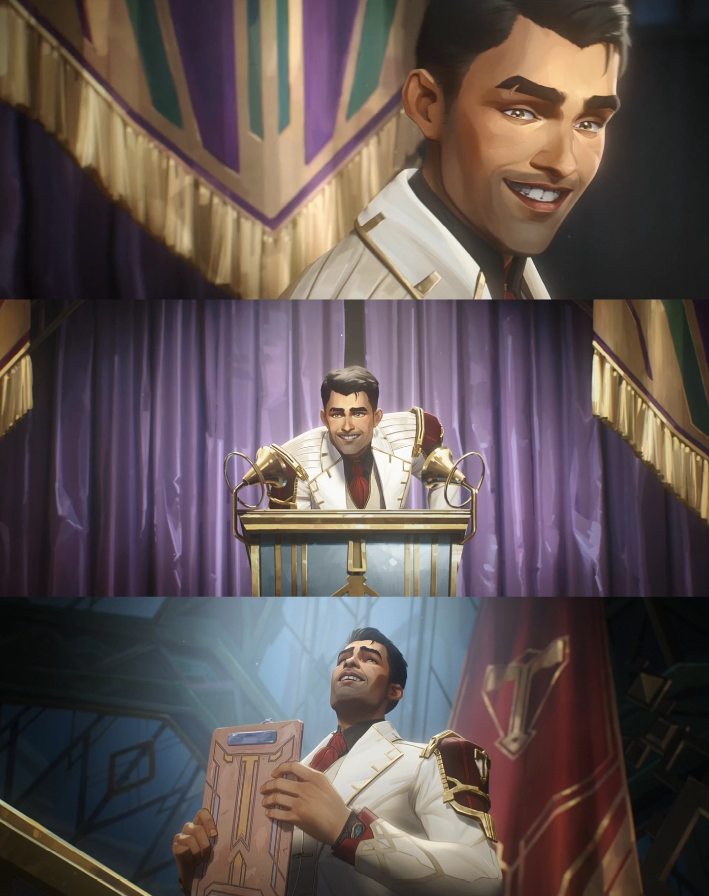
Есть ещё несколько таких кадров, но так как это не железобетонно, множить не буду.
Однако даже если не тыкать пальцем в конкретные кадры, Джейс «камуфлирует» весь первый сезон: держит лицо перед публикой и Советом. Маскинг как механизм, ведущий к истощению, накопленная усталость от несоответствия между внутренним состоянием и публичным образом и впоследствии злое равнодушие к тому, что о нём подумают, — именно то, что происходит, анализируем мы это через оптику нейроотличности или нет. «With respect, I don’t give a shit what any of you think of me anymore» — перегорел парнишка за несколько дней на посту Советника.
«При всём уважении, мне уже насрать, что вы обо мне думаете»
→ А сейчас тот самый момент, когда произведение делает параллельную отсылку само на себя — две разные ситуации, два разных персонажа, но язык и даже композиция кадра повторяются: fish-eye, при котором лицо уведено от центра.
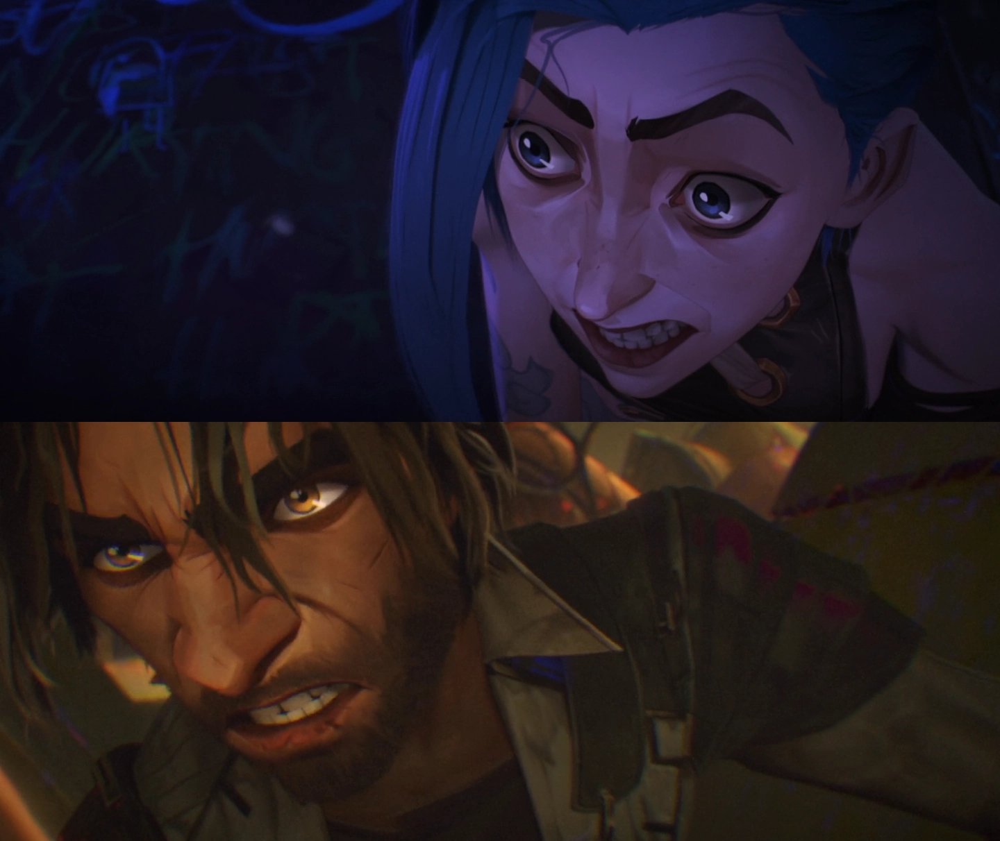
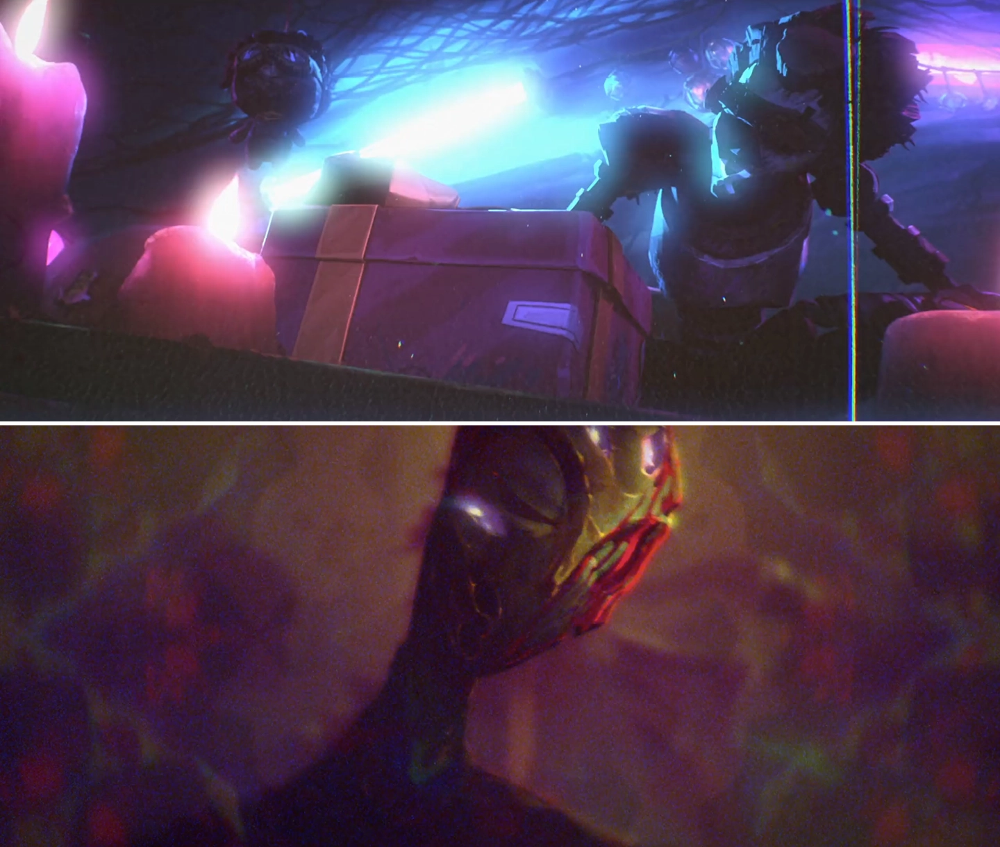
Всплески галлюцинаций, рваный монтаж, глитч-эффекты, кренящийся, проворачивающийся вокруг своей оси кадр: внутренняя реальность сломана у обоих персонажей, на чём произведение делает акцент. У Джинкс этот хаос отражает изменённое состояние при психическом расстройстве, у Джейса — крах когнитивной и эмоциональной регуляции из-за стресса и сенсорной перегрузки.
Он дезориентирован, его шатает, он не может сфокусироваться, кричит. Физиологически это соответствует реакции нервной системы, которая получила объём сигналов, несовместимый с её текущими возможностями обработки.
И мы даже видим, как Джейс получил этот объём сигналов — мгновенный, массивный инфо-залп, который нервная система не может отфильтровать: Маг в хекскоризированном будущем вкачал в Джейса что-то (факт) → информацию, необходимую для успешной реализации плана по спасению (вывод) → память обо всех временных петлях, которые они уже пережили (интерпретация). Это ещё одно возвращение главного мотива «Джейс и Виктор что-то друг другу передают».
Вот Джейс приземлился и пытается это переварить:
Про временные петли подробнее уже скоро, а пока давайте разберёмся с сенсорной перегрузкой.
Для людей с нетипичной сенсорной обработкой гиперчувствительность к стимулам может приводить к сенсорной перегрузке (sensory overload) — интенсивному физическому и эмоциональному дистрессу. Когда этот дистресс достигает критического порога, он может спровоцировать срыв, мелтдаун (meltdown) — непроизвольное состояние интенсивного возбуждения, при котором происходит временное доминирование базовых механизмов выживания над высшими когнитивными функциями — «бей-беги-замри».
Soden et al. 2025: статья, пдф.
Исследователи фиксируют, что срыв может случиться, когда накопление стресса, шума, социальных требований или внутренних противоречий превышает порог толерантности, а Джейс, истощённый неделями голода, боли и отчаяния, узнавший страшную правду, переполнен противоречиями под завязку. И ещё ему сейчас необходимо совершить невозможное: выстрелить в Виктора.
Вот этот кадр как раз из тех, что можно выставлять в картинной галерее. И название ему будет: «Мелтдаун».
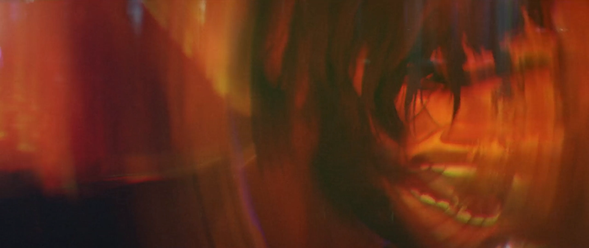
В первом сезоне нам тоже показывают сенсорную перегрузку, но не дошедшую до мелтдауна. Во время суда, когда ситуация и так стрессовая, а ещё Джейса заставляют отказаться от своего специального интереса, что почти немыслимо, Советники начинают говорить все враз, и это подаётся именно как стимульная атака: короткие монтажные фразы, огромное количество деталей, звуки накапливаются. У Джейса начинают характерно дёргаться мышцы лица, и, не выдержав напряжения, он выкрикивает: «I was trying to create magic!»
«Я пытался создать магию!»
→ И, наконец, самое важное для этого разговора — тот набор наблюдений, что мы рассматривали выше: Джейс плохо считывает эмоции и намерения окружающих, не видит флирт, не угадывает гнев, не понимает, когда им манипулируют. Вместе со всем поведенческим паттерном, который я сейчас описывала, это указывает на изображение алекситимии.
Алекситимия — черта личности, при которой человек испытывает выраженные трудности в распознавании и словесном описании собственных эмоций и, как следствие, — эмоций других людей.
Мета-анализ 15 исследований, Kinnaird, Stewart & Tchanturia 2018: распространённость алекситимии среди аутичных людей 49,93% против 4,89% у нейротипиков.
Эмоциональное возбуждение у алекситимичных людей часто интерпретируется мозгом как физические симптомы, а не как психологическое состояние.
То есть человек с алекситимией чувствует что-то телом — тепло, тревогу, тяжесть, но не может вербализовать это как «Я люблю», «Мне страшно», «Я ревную».
«Мне тепло рядом с Виктором», а не «Я люблю Виктора».
Именно эта особенность делает любовь Джейса невидимой для него самого на вербальном уровне, но считываемой для нас на уровне тела и поведения (маркеры pair-bonding 👋). И поэтому киноязык становится главным способом рассказать об этой любви.
Глядя на все нарративные факты вместе, можно уверенно определить, что речь идёт не только о нейроотличности как зонтичном термине, а конкретнее: произведение бережно и последовательно описывает Джейса набором признаков, который читается как аутистический. Это не указание на какое-то точное место на разнообразном аутистическом спектре, а художественное обозначение такой системы мышления и поведения: монотропизм + стимминг + избирательность прикосновений + алекситимия вместе по-другому не определяются. Для персонажа эта система фиксируется как поведенческий паттерн на уровне °Вывода°.
Такая же система есть у огромного количества настоящих, невыдуманных людей. Эти люди здесь, рядом, вы можете не догадываться об их отличиях, они и сами могут не знать. Вспомните, что Энтони Хопкинс в 79 лет впервые публично рассказал, что ему диагностировали синдром Аспергера, и он понятия не имел, что это значит. Весь мир десятилетиями смотрел на его завораживающую актёрскую игру, не подозревая об особенностях его мышления.
Джейс — репрезентация невыдуманного опыта, и именно поэтому ощущается живым человеком. Но — и я этически обязана ещё раз это акцентировать — он не живой человек, а часть произведения, функция нарратива, и о диагнозе речи идти просто не может, только о репрезентации.
И эта репрезентация сообщает нам, что в излагаемой истории Джейс не осознавал своих чувств, был не в состоянии дать им определение. И слово «affection», сказанное Виктором, могло стать для него не просто признанием, а ключом к языку, которого у Джейса никогда не было.
Вот об «affection» давайте и поговорим.
В начале было слово
Переломный момент всей арки Джейса и Виктора — сцена воскрешения и расставания. Киноязык здесь утопает в чувственности, количество фактов для её передачи зашкаливает. Я обязательно это распакую через пару минут, но, по-моему, главное событие — главный °Факт° — для анализа отношений персонажей излагается здесь словами.
Словом.
И слово это: affection.
История такая. В первый просмотр ровно до этого слова я вообще не думала о том, что между Джейсом и Виктором романтика. Да, да, pair-bonding, все дела… Но я просто туда не смотрела. Переживала трагедию сестёр, пылала чувствами от классового неравенства, содрогалась от боли и одиночества Виктора, но в Джейса и их взаимодействия не вглядывалась. Как я уже говорила, привычки искать любовь между персонажами у меня нет. Чувства Джейса и Виктора друг к другу не стояли в центре повествования, показывались мягко — и я абсолютно их пропустила (мы с пацанами называем такой метод ознакомления с произведениями искусства «смотреть задницей»).
Но когда Виктор произнёс фразу с этим словом, у меня глаза полезли на лоб. И так они и лезли всё выше и выше, пока на «In all timelines, in all possibilities only you» я окончательно не поняла: это история любви. Дальше красивейший финал, множество пересмотров с подмечанием каждой детали. Но началом узнавания и главным акцентом для меня так и остаётся affection that held them together. И я искренне не понимаю, как можно не услышать в этой фразе горькое сломленное признание в любви, но раз люди продолжают не слышать, буду излагать аргументированно.
Для начала есть проблема с переводом на русский: affection стандартно переводят как привязанность, но это почти не совпадает по смыслу. То, что в русском означает привязанность, в английском будет attachment. А идеального однословного перевода к affection нет, можно попробовать «нежные чувства», но и тут будут не все коннотации.
Что до самого английского языка, на котором была написана эта реплика, вот что говорят нам словари.
Один из оксфордовских словарей: «The feeling of liking or ∼loving∼ somebody/something very much and caring about them» (чувство сильной симпатии или любви к кому-либо/чему-либо и заботы о них).
Словарь Merriam-Webster: «a feeling of strong or constant regard for and dedication to someone» (чувство сильного или постоянного расположения и преданности кому-либо), но при этом Merriam-Webster определяет affection в первую очередь как «as in love» (в значении «любовь») и даёт love как ближайший синоним.
Сакцентирую: love — ближайший синоним affection.
Affection употребляют как «неглубокие тёплые чувства», «ещё свежее романтическое влечение» (инфатуация 😌), «устоявшаяся любовь между мужем и женой» — собственно, во многих ситуациях, в которых мы используем «любовь» и «любовный». Просто love более общий термин, а affection, скорее, про ощущения и/или поведение. Та же Лиза Даймонд, предложившая концепцию разделения механизмов романтической любви и сексуального влечения, ставит знак равенства между romantic love и affectional feelings/affectional bonding. У неё это прямое терминологическое определение для романтической любви.
романтическая любовь; нежные чувства/нежная связь
Есть куда копнуть и что обсудить, но мы тут всё-таки не из-за лингвистики. И кроме того, даже если бы Виктор использовал love, нашлись бы утверждающие, что он имеет в виду братскую (дежурное напоминание: Джейс и Виктор не братья). Поэтому аргументы.
→ Виктор обычно изъясняется в приподнятом стиле. Выбор affection в значении love для его вокабуляра выглядит естественным.
→ Сама структура диалога, реплики говорят напрямую:
— Goodbye? Viktor, you’re my partner!
— Our paths diverged long ago. It was affection that held us together.
— Прощай? Виктор, ты мой партнёр!
— Наши пути давно разошлись. Вместе нас держала любовь.
«Goodbye? Viktor, you’re my partner!» = «В смысле ты уходишь?! Ты не можешь уйти, ты мой партнёр!»
«Our paths diverged long ago. It was affection that held us together» = «Мы давным-давно перестали быть партнёрами (в «деловом» смысле). Я оставался, потому что любил тебя».
Почему «Our paths diverged long ago» = «Мы давным-давно перестали быть партнёрами»? Да потому что это ответ на реплику Джейса, фраза же не из пустоты возникла.
Почему «It was affection that held us together» = «Я оставался, потому что любил тебя»? Потому что это объяснение предыдущего предложения, противопоставление чувств Виктора деловой парадигме отношений. «Деловые» пути разошлись, но я оставался — потому что НеЖнЫе ЧуВсТвА держали меня.
Простите все, кто сейчас поперхнулся от того, что я перешла к объяснениям на таком элементарном уровне. Мне кажется, у некоторых людей в голове автоматически включается белый шум, когда Джейс или Виктор говорят о своих чувствах друг к другу.
А Джейс ведь не имеет в виду «деловой партнёр», когда восклицает, что Виктор не может уйти. У Джейса вообще всё в голове перемешалось, потому что с какого перепуга у делового партнёра нет права уйти? Деловой уйти вполне может, а вот партнёр aka супруг (вы же знаете, что у слова партнёр есть и это значение, правда?) просто так уйти не может, commitment device суровая штука. Этот диалог очень хорошо показывает: как Джейс не понял, что годами чувствовал к нему Виктор, так и Виктор не понял, что чувствует к нему Джейс. Виктора триггерит слово «партнёр», потому что он привык не слышать в нём никаких романтических смыслов и, стриггерённый, он с горечью совершает признание. Джейс видит, что Виктора триггерит «партнёр» и он пытается спасти ситуацию, сказав «лучший друг», что значит: «Это не “деловые” отношения, ты самый важный для меня человек». «Друг» в ответ на признание в любви? Охо-хо. Результат ожидаемый:
→ Что в этот момент говорит нам киноязык:
Виктор делает микропаузу перед together, отводит глаза, его голос надтреснут — это чуть неловкое и устало-безнадёжное признание в чувствах.
→ Такой ещё аргумент. Давайте представим, что это правда — отношения Джейса и Виктора произведением передаются как исключительно дружеские. Что бы мы увидели в этой сцене в таком случае? О чём говорил бы друг, разгневанный предательством до состояния «я ухожу»: о нарушенных принципах, об извращении самой сути науки, об использовании своего интеллектуального труда для убийства людей его нации. О чём не говорил бы друг: о нежных чувствах, которые одни — причина существования их союза. Произведение не передаёт «просто-дружбу», оно смещает фокус в эмоционально-интимную плоскость.
Ровно — ровно — то же самое для фразы Джейса «My place was always here in the lab with you». Он не говорит: «Я должен был заниматься наукой, а не политикой», он говорит: «Моя жизнь — рядом с тобой» (в проксемической интимной зоне, угу). Это та же самая эмоционально-интимная плоскость, «просто-дружбу» текст не сообщает.
«Моё место всегда было здесь, в лаборатории, с тобой»
Киноязык тоже вводит интимность, какой ещё не было. Это уже не сдержанный первый сезон, чувственность переполняет кадр.
Для начала: они оба обнажены. Виктор полностью, Джейс наполовину. Нагота здесь прописана прямо в сценарии, её не аниматор-партизан протащил под носом у вражеских дозорных.
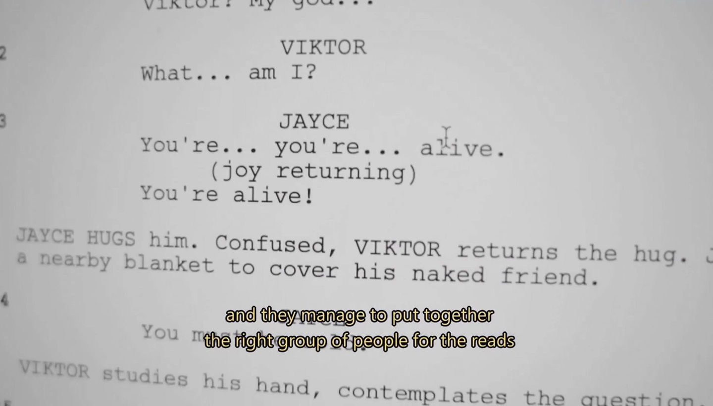
Конечно, нагота передаёт образ уязвимости, и сцена балансирует эффект, который производит: одень создатели Джейса, его фигура рядом с обнажённым, заново рождённым Виктором ощущалась бы давящей, доминирующей, а сериал делает всё, чтобы эти два персонажа воспринимались равными друг другу. Раздетый Джейс — это боль (→ окровавленные бинты) и невыносимые внутренние переживания, заставляющие забыть о приличиях. Но чувственный регистр работает здесь на тех же самых правах, что и вся остальная образность.
То, как киноязык показывает их объятия… Они слишком близко, объятие длится и длится, и длится, и длится.
Снова крупный ощущенческий план. Джейс вдыхает запах Виктора, трётся о Виктора щекой (это не сцена из фанфика, это то, что происходит на экране).
Во вздохе, который вырывается из Джейса и облегчение, и чувственность. Виктор, заторможенный, привыкший останавливать себя и не реагировать на прикосновения Джейса, сдаётся, и то, как пальцы вжимаются в кожу и ладонь скользит по обнажённой спине Джейса, — это ласка.
Эротизм почти выплёскивается на экран, и Джейс вдруг осознаёт, ЧТО он делает, насколько это «неприлично». Если какой-то зритель и не видит это объятие эротическим, то сам Джейс определённо видит. И с горячим румянцем и мимикой, полной смущения, он отшатывается и сбегает за одеялом…
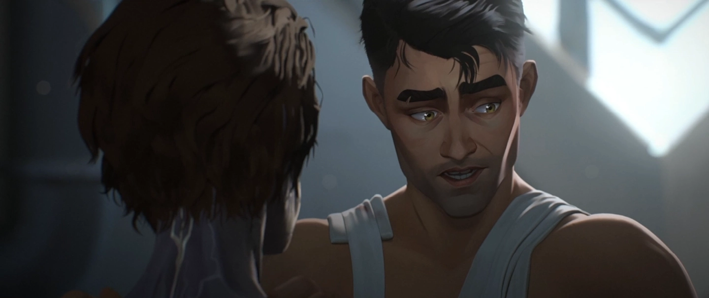
На этом месте я должна выйти за пределы произведения и обратиться к внешнему контексту. Всё для того, чтобы раскрыть страшную правду об аниматорах-партизанах, тайно протаскивающих эротику:
их
не
существует.
Как создавался «Аркейн»
Во-первых, в «Аркейне» с первых набросков всё создавалось в синтезе: текст, визуал, музыка, актёрская подача. Анимация шла из музыки, текст из анимации, музыка из текста — в общем, живородящий диалог всех со всеми. И это редкость для индустрии.
Во-вторых, всё, что живородил диалог, твёрдой рукой направляли в нужное им русло шоураннеры: вдохновенный перфекционист Алекс Йи, готовый биться десятки часов над одной репликой (в прессе говорится о 27 часах, потраченных им на финальную реплику сериала), и Кристиан Линке, музыкальный визионер и термоядерный реактор, запитавший своей энергией и решительностью весь проект. Они контролировали процесс от и до.
→ Несколько примеров синтеза
На панели в Анси Аманда Овертон описывает обмен между сценарием и визуалом: «Мы питчили свои сюжетные идеи и получали их визуальный отклик» — и затем дополняли идеями аниматоров сценарий. Продакшн-дизайнер Арно-Лорис Бодри там же отмечает, что его участок производства обычно достаточно изолирован, но при производстве «Аркейна» процесс был непривычно открытым во взаимодействии между департаментами.
Это был постоянный двусторонний процесс, где визуальная разработка влияла на текст, а текст на визуал.
В интервью The Hollywood Reporter Бар Маунури, креативный директор Fortiche, рассказывает, как сложные визуальные решения всегда принимаются «for the sake of the writing» (во имя сценария).
Актёрам давали полный контекст — превизуализацию, раскадровки, — чтобы они не озвучивали вслепую набор реплик. Запись шла на протяжении нескольких лет, сессиями, с запросом обратной связи.
Гарри Ллойд (голос Виктора) описывает это так: он приходил раз в несколько месяцев, видел, куда продвинулась анимация, а команде было важно его услышать. «Это не просто — встал, отчитал реплику и ушёл до завтра. Много обмена мнениями в обе стороны, всё ощущалось настоящим сотрудничеством».
Стандартно в анимации музыку накладывают на уже готовый визуал на постпродакшене, но в «Аркейне» с самого начала было решено писать собственные песни под сценарий. Музыкантов тщательно подбирали, вводили их в историю мира «Лиги» и эмоциональную подоплёку эпизода, и потом начиналась работа над треком, в которой приглашённые музыканты были полноценными сотворцами.
И вот уже после этого анимацию рисовали начисто.
При этом Кристиан Линке говорит: «Мы всегда начинаем с определённой сцены или момента персонажа, под который ищем музыку». Песня служит истории, а не наоборот — сначала драматургический момент, потом музыка под него.
Ну а драматургические моменты шлифовали сценаристы в связке с аниматорами — слова Овертон, с которых мы начали. Петля замкнулась ☝️
The Line, официальная песня Виктора, была написана Тайлером Джозефом, лидером группы Twenty One Pilots, под глубоким впечатлением от арки персонажа. Джозеф почти не пишет для чужих проектов, но тут проникся так, что вернулся с готовой композицией через три дня. Текст песни — настоящее исследование мотивации Виктора. Это не оформительская красивость, это буквально часть драматургии сериала и проникновение во внутренний мир героя.
→ Несколько примеров авторского контроля
Оркестровая партитура писалась под строгим контролем Кристиана Линке: композиторы Алекс Сивер и Александр Темпл рассказывают, что любят работать с Линке именно потому, что он предельно ясно понимает, чего хочет и как персонажи должны чувствоваться.
В рабочих материалах мы видим многое, доведённое до частичной реализации, но отброшенное. Например, Джейс у больничной кровати Виктора должен был плакать, но от этого отказались.
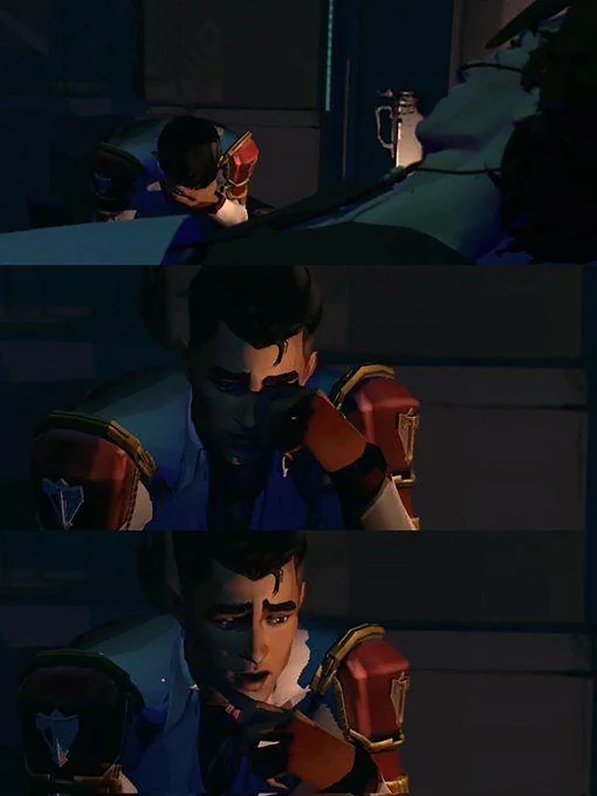
А ещё Джейс должен был плакать, стреляя в Виктора. Это видно из рабочей раскадровки, доступной в дополнительных материалах ко второму сезону. Напрашивается мысль: эмоциональность Джейса заметно прикручивали. Авторский контроль в действии.
Джейсон Списак (голос Силко) рассказывает, что на записи Йи и Линке не оставались по ту сторону стекла со звукоинженерами, как это обычно происходит: они заходили внутрь, садились рядом, чтобы вблизи поймать зловещую подачу, которую хотели от Силко.
Гарри Ллойд рассказывает, что играл Виктора в постоянном диалоге с Линке, обсуждал с ним материал напрямую: «Игры, сценарии, наши идеи, разговоры с Кристианом, — всё это бросалось в один общий котёл, который и превратился в шедевр». То есть видение Виктора формировалось не Ллойдом в одиночку и даже не «засланными» французскими режиссёрами — оно собиралось конкретно вместе с шоураннером.
Ну и режиссёры не давали актёрам свободно вздохнуть, вытаскивая из них дубль за дублем те интонации, которые должны быть записаны. Это из интервью Кевина Алехандро (голос Джейса), которое я уже приводила в самом начале, но почему бы не повторить.
Итого.
🤌 Работа аниматоров была плотно интегрирована со сценаристским отделом. Никакого вражеского дозора, мимо которого надо протащить секретную эротику. Все соратники.
🤌 На любом этапе шоураннеры могли наложить вето на не вписывающуюся в их понимание сцену — и накладывали.
🤌 Работа актёров озвучки контролировалась.
Так что если в сериале есть полуобнажённые объятия, потирание щекой о щёку, трещинка в интонации перед together, отведённый взгляд на affection, — это не партизанская подрывная деятельность. Это авторское решение.
Какой-то зритель может не поймать тонких интонаций и мимики. Я тоже кучу всего не уловила до мощного тычка в бок прямым признанием чувств. Но в том-то и дело: вне зависимости от восприятия зрителя интонации и мимика объективно существуют в произведении. И сами по себе как °Факт°, и включённые в объяснение происходящего как °Вывод°. И кроме того, сцена воскрешения и разрыва не просто кидает впроброс одну реплику, она запускает события, формирующие всю историю хекс-арки. Любовь Виктора к Джейсу — и в большом сюжетном, и в малом тонком — часть этой истории.
Трещинки, микропаузы, боль и сломленная нежность в «It was affection that held us together» и «Only you can show me this»; тёмная надежда на свою значимость для Джейса — и абсолютная значимость Джейса — в «Jayce will understand»; квинтэссенция неразрывной связи в «I remember you». Всё это — часть истории.
«Любовь держала нас вместе»
«Только ты можешь мне это показать»
«Джейс поймёт»
«Я помню тебя»
Как и абсолютно безумно написанный, сыгранный и выведенный звуковой пост-обработкой момент, когда сквозь механическую мёртвую речь Вестника (с одеялом Джейса на шее) вдруг прорывается тёплый живой голос Виктора. И это тепло — только про Джейса.
На это мгновение работает каждая молекула нарратива. Любовь к Джейсу — то, что удержало Виктора от полного растворения в пожравшем его монстре, и эта любовь — такая Викторова, такая негромкая, не пытающаяся присвоить, затапливающая нежностью — выливается в фантастической игре Гарри Ллойда и вся принадлежит произведению.
(Вестником я называю существо, которое возникло после метаморфозы с использованием крови Варвика. Вестник — это, по сути, механическое тело, внутри которого две личности — хекскор и Виктор, но воля Виктора почти в ноль задавлена. Слово «Вестник» в сериале не произносится, мы знаем его из внешних источников, но оно очень ёмкое и простое, возьму для краткости.)
Давайте смотреть с точки зрения науки.
Маркеры романтики: Виктор
С маркерами романтики у Виктора ситуация обстоит так.
Проксемику он делит с Джейсом: чтобы тот постоянно находился в проксемической интимной зоне, нужно желание — разрешение — Виктора. Необходимость такого разрешения описывает сам Холл, автор концепции. Примеров we-talk у Виктора больше, чем у Джейса, а примеров поглощённости меньше, но они знаковые: «Jayce will understand». Извинение у нас тоже есть: «I was clouded by emotions».
«Эмоции затуманили мне разум»
Да и в сцене на мосту Виктор почти моментально прекращает ссориться.
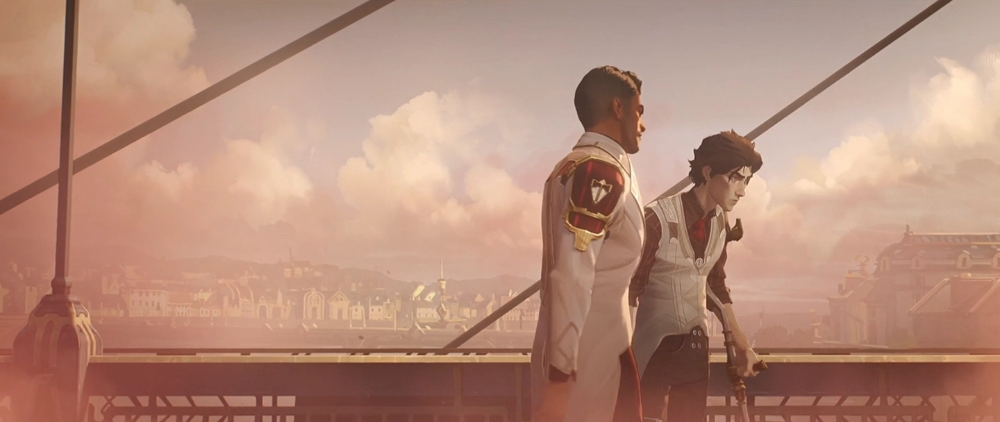
Сериал даёт Виктору меньше телесных признаков, чем Джейсу, и в этом смысл: персонажу не нужна такая наглядность, потому что в отличие от своего партнёра он прекрасно понимает, что чувствует, — всегда понимал, с первой ночи, — и осознанно себя сдерживает. Но что он делает на экране — так это говорит о своих чувствах вслух. Что-то доносит словами, что-то интонацией. Голос и слова вместе передают любовь Виктора. Романтическую.
Ещё раз пробежимся по базовому: современная наука фиксирует, что в основе романтической любви лежат два запускающих друг друга, но работающих автономно нейробиологических контура. Один контур отвечает за сексуальное влечение, другой за романтическое влечение. В чём разница между влечениями?
Если очень коротко, то сексуальное влечение это:
«Я хочу тебя»
А романтическое влечение это:
«Я хочу к тебе»
Ключевое — предлог «к». Вектор, направленное притяжение (собственно, физический смысл слова «влечение») — и эксклюзивность привязанности в комплекте:
Я → только ты
У разных учёных есть разные названия для этого вектора — desire for union, proximity-seeking. Но суть одна: это биологически зашитое стремление искать среди всех прочих, быть ближе к тому, кого любишь.
стремление к слиянию, поиск близости
И хотя мы сейчас о Викторе, было бы преступлением не сказать: то, как в астральном пространстве в последние секунды, пока руна не поглотила их обоих, Джейс тянется к Виктору, борется с магическими течениями, чтобы быть рядом, — это абсолютное воплощение вектора Я → только ты.
Ну а голос Виктора переполнен нежностью и влечением-вектором («Come, visit me», «Pleased to see you»), которые вложены в слова, обозначающие эксклюзивность («In all possibilities only you»).
«Приходи ко мне», «Рад тебя видеть»
И если со словами всё понятно, то насчёт голоса в воздухе начинает витать вопрос: а не интерпретация ли это?
Ответ такой.
Свойство человеческой речи доносить эмоцию, а человеческого восприятия её распознавать — это базовая настройка. Без неё мы жили бы в совсем другом мире, где, кроме прочего, не существовало бы жанра радиоспектакль. Наука, естественно, изучает феномен. Феномен называется аффективной просодией, и ей занимается множество дисциплин — лингвистика, нейробиология, когнитивная психология, акустика, data science и так далее.
Эволюционно аффективная просодия оказалась одной из приоритетных способностей для homo sapiens, это важный социальный канал, мы обрабатываем эмоцию другого человека не только ушами и мозгом — задействуется множество механизмов. Например, наше тело реагирует на улыбку в чужом голосе: растянутые губы улыбающегося меняют тембр, и даже когда улыбку в голосе мы не осознаём, наши зигоматические мышцы начинают слегка «улыбаться» в ответ. Вот эксперимент Arias, Belin & Aucouturier 2018, исследующий это.
Насколько надёжно эмоция в голосе считывается? Самую масштабную обзорную работу на эту тему провели Патрик Юслин и Петри Лаукки в 2003 году. Они свели воедино 104 исследования вокальной экспрессии и 41 исследование музыкального исполнения. Весь массив наблюдений авторы поделили на пять категорий: гнев, страх, радость, печаль и «любовь и нежность» (love-tenderness в оригинале; affection стоит первым среди слов этой категории). Средняя вероятность распознавания среди представителей одной культуры следующая: гнев — 93%, печаль — 93%, страх — 88%, радость — 87%, любовь и нежность — 82%.
Juslin & Laukka 2003: постоянный адрес проживания статьи с абстрактом наружу, вся работа на ResearchGate.
Конкретно об интонациях, свойственных влечению. В двухэтапном эксперименте Университета Стёрлинга Leongómez et al. 2014 слушатели надёжно распознали в записи речь, обращённую к людям, привлекательным для говорящих. Даже когда слова фильтром делали неразборчивыми, слушатели всё равно распознавали влечение только по модуляции голоса, без смыслового наполнения.
Одна из главных примет влечения в голосе учёными описывается как «напевность» (шире обычной и более текучая вариативность высоты голоса).
Напевнее, например, этой реплики будет уже напрямую пение:
Авторы формулируют вероятность распознавания как «значимо выше случайной» (P < 0.01), но из данных мы видим приблизительно 80%, почти столько же, сколько для всей категории love-tenderness у Юслина и Лаукки.
Учитывая всю эту информацию, куда на лесенке твёрдости факт → вывод → интерпретация → трактовка мы ставим интонации Виктора?
Большинство фактов произведения, если брать их голыми, одинокими, в отрыве от всего остального, объясняются только интерпретацией. Помните пример с Экко из начала? Если взять один кадр из 9-й серии, игнорируя 7-ю, мы сможем только гадать (= интерпретировать), о чём задумался персонаж. Но никакое произведение так не работает, не рассыпается на дискретные кусочки. Факты, чтобы иметь смысл, сплетены выводами.
Поэтому: считывание нежности и/или влечения, взятых отдельно, без связи со всем остальным в произведении, с вероятностью примерно 80% — факт, 20% — интерпретация (очень упрощённо и приблизительно).
Однако каждый раз, когда интонация включается в дугу нарративного вывода, она становится частью железобетонной конструкции.
«Виктор любит Джейса романтически» — это именно такая конструкция. Хотя нежность сама по себе ещё не романтика, она на уровне концепции может быть и «дружеской». Положа руку на сердце: не ∼эта∼ нежность, не с этим звучанием…
Но будем держаться логики.
Однако притяжение и эксклюзивность отметают «просто дружбу» начисто.
Почему pair-bonding ≠ дружба? Потому что в дружбе нет ни биологически зашитого притяжения, ни эксклюзивности — тоже зашитой биологически. Разницу между дружбой и романтической любовью видно (и слышно) в жизни, и точно так же, по тем же признакам она существует в сериале.
Affection сама по себе бывает между друзьями, но дружеская она не «держит вместе». А романтическая любовь держит, и с этим нейробиологическим механизмом ничего не поделать. Только ждать, пока отпустит. Правда, кое-кто ждал семь лет и не дождался 😔
Одеяло и Т. С. Элиот
А сейчас давайте поговорим о слоне в комнате — об одеяле.
Ситуация такая: одеяло заявляет о любви Джейса и Виктора громче всего остального. Громче прямых признаний, громче любого отдельного факта.
Я, конечно, принесу жирный искусствоведческий термин, который объясняет, как и почему это работает, но дело не в термине. В первую очередь дело в том, что Джейс укутал Виктора одеялом, и Виктор носил это одеяло, не снимая, даже после того, как в нём умерло почти всё человеческое. И «символ» — это самое мелкое и неважное слово, которым только можно обозначить одеяло на шее Вестника.
Несу термин. В 1919 году молодой, задиристый поэт, драматург и критик Томас Стернз Элиот, которому на тот момент предстояло ещё 29 лет перебиваться без Нобелевской премии и постепенно идти к статусу главного поэта модернизма, написал скандальную статью «Гамлет и его проблемы», где диссанул Шекспира, заявив, что пьеса «Гамлет» — это художественная неудача.
Вот что, по мнению Элиота, не так: текст пьесы не даёт эмоциям главного героя никакого ощутимого воплощения; Гамлет чувствует слишком много, и это не поддерживается ничем в произведении.
И вот тут Элиот и употребил малоизвестный тогда термин: объективный коррелят.
Объективный коррелят — это приём, который моментально, без описаний даёт понять читателю, что чувствует герой, — «с помощью предметов, ситуации или цепи событий», превращённых в точную формулу эмоции.
Как пример сильного объективного коррелята Элиот в той же статье приводит сомнамбулизм леди Макбет и её попытки во сне отмыть несуществующую кровь с рук (поругал Шекспира, можно и похвалить). Задавленные, неосознанные ужас и вину, которые чувствует героиня, невозможно было бы передать только актёрской игрой — и пьеса даёт этим чувствам мощное воплощение.
Вот так получилось, что явление, которое стихийно существовало всегда, Элиот обозначил как важный механизм, и с его подачи тот прочно вошёл в основы писательского и режиссёрского мастерства.
Кино стало использовать приём почти как расходник: дождь за окном — грусть, полупустой стакан с водой на голом столе — одиночество. Но есть нюанс: эти дожди и стаканы существуют главным образом на стороне зрителя, как трактовка. Для персонажа ни дождь, ни стакан ничего не значат. А вот когда объективный коррелят не только передаёт эмоцию, но и становится чем-то, во что сам персонаж вкладывает чувство, начинается совсем другой разговор.
Вспомните кассетник Питера Квилла из «Стражей галактики» — это его непрожитая, неотпущенная детская привязанность к матери. Не «символ привязанности», а прямо её эмоциональное средоточие. Или вращающийся волчок в «Начале» Нолана — воплощённое сомнение в том, что реально. И снова: это не «символ сомнения», мы всматриваемся вместе с Коббом, ожидая ответа, и чувствуем то же, что и персонаж. Высший пилотаж киноискусства и сама суть объективного коррелята: формула, которая заставляет зрителя почувствовать именно то, что автору необходимо.
Разница между дождём и волчком в том, что сомнение, передаваемое волчком, — не трактовка и не интерпретация. На его однозначность работает всё произведение, это железный вывод. Именно поэтому «не “символ”, а…», хотя объект может быть при этом и символом, просто механизм для считывания символа совершенно другой — внешний, интеллектуальный, дешифрующий. Механизм считывания объективного коррелята неотрывен от текста, моментален и бьёт в эмоцию: «the emotion is immediately evoked» — прямая цитата из определения Элиота.
мгновенно вызванная эмоция
Именно этим и является одеяло Джейса и Виктора: воплощённой эмоцией, существующей на уровне вывода. Мощным объективным коррелятом.
Давайте посмотрим, из какого эмоционального ряда этот коррелят состоит.
Помните, на чём мы прервались в сцене с affection? Джейса ведёт от чувств, когда он видит, что Виктор жив. Джейс безумно рад, переполнен неописуемым облегчением и явно соскучился, он кидается обнимать своего «обнажённого друга», и на эмоциях его заносит уже в зону эротизма. В чём он внезапно отдаёт себе отчёт и, смутившись, сбегает — за одеялом.
И этот побег добивает самолюбие Виктора. Ощущение отвержения накрывает его всё сильнее с каждым новым получаемым куском информации.
Весь мир искажён, Виктор больше не чувствует телом — он механически воспринимает импульсы. Внутри него чуждое существо, злобный убийца, которого Виктор боялся и которого умолял уничтожить.
Джейс отшатнулся и сбежал, а значит, нагота Виктора — не чувственная, это нагота препарированной лягушки.
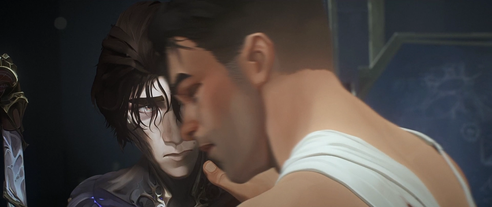
Виктор думает, что он неважен, что он для Джейса — как когда-то Рио для Синджеда: сохранённая мутация. Об этом произведение сообщает несколькими способами на всём протяжении сюжетной арки, разберу это попозже вместе с мотивацией героев. Но даже здесь видно, что ёмкость, в которой его тело сращивалось с хекскором, похожа на бак, в котором плавает тело Рио.
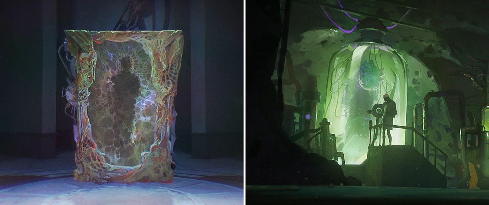
Последнее, что видел Виктор в своей человеческой жизни, умирая под обломками, — это стоящих рядом Мэл и Джейса; едва очнувшись, он видит схемы хекстек-оружия, сделанные для Мэл: его принципы оказались неважны, его тело неважно, его желания — всё отвергнуто.
Сколько этого отвержения чувствует он сам, а сколько влил в него хекскор, сложно сказать.
Как антитезу этому ощущению и приносит Джейс одеяло. Одеяло — это тепло, безопасность, интимность, это — здесь и сейчас — дар достоинства: «Ты не монстр, не холодный научный эксперимент, ты человек — мой человек, мой ∼партнёр∼. Я оберегаю тебя и забочусь о тебе. Я не могу представить свою жизнь без тебя». Неосознанное, несказанное и неуслышанное «Я тебя люблю».
Это снова возвращение того самого мотива, на котором держится вся история, — передачи чего-либо. И когда в этой итерации мотива Джейс передаёт одеяло, он передаёт и свою бессловесную любовь. Что, если смотреть только на эту точку повествования, может показаться интерпретацией, но романтическая любовь Джейса — вывод; то, что лишённый всего человеческого Вестник носит на своём теле одеяло, — факт; плюс множество озвученных и неозвученных выводов и фактов вплетаются сюда же. Повторюсь: потому что только так и работает текст — целостно, а не в каждой точке отдельно.
Когда в мотиве один передаёт — второй всегда берёт. Любовь Джейса живёт в руках, которые укрывают одеялом; любовь Виктора — в теле, которое одеяло носит. Как и было все эти годы: руки Джейса, которые принимал на своём теле Виктор.
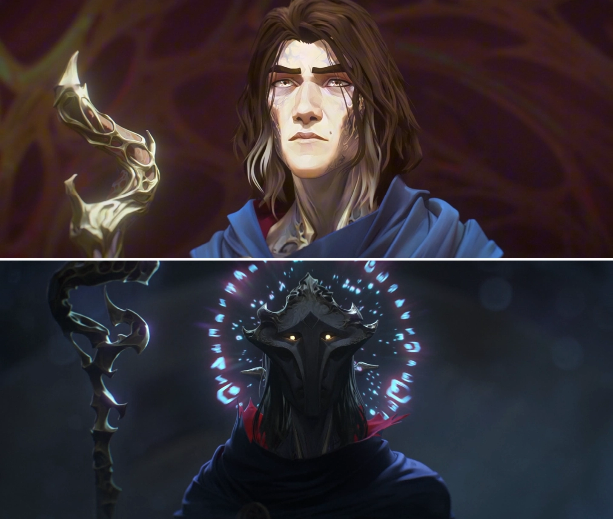
Это две стороны одного предмета — а одеяло синее с одной стороны и красное с другой — и две стороны этой любви. Inextricably bound.
Неразрывно связаны
Да, у нас и без знания о нарративном приёме есть твёрдая и однозначная информация. Виктор в финале проигрывает хекскору всё человеческое — тело, голос, чувства, саму способность выбирать. И единственное, что он не отдаёт, — одеяло (факт). Одеяло означает ровно одно: Джейса (вывод). А когда из всего на свете остаётся только один человек, за которого вопреки всему мыслимому держится душа, — это и есть эксклюзивность и desire for union, тот самый вектор Я → только ты. Но коррелят делает гораздо больше, чем констатирует факт: он объединяет персонажей гораздо сильнее и даёт эмоциональный слепок богаче в разы. И, кстати, одеяло как предмет само по себе отсылает к телесному и интимному, его прямые коннотации: постель, тепло, раздетое тело. Так что в коррелят входит и интимность.
А знаете, где ещё есть одеяло? В песне The Line, официально Викторовой, написанной Тайлером Джозефом под огромным впечатлением от арки персонажа. Каждая строчка песни — распахнутый для нас внутренний мир Виктора. Виктор ранимый и ироничный, ему невыразимо страшно, он обращается к Джейсу, только к Джейсу с этими его прекрасными Джейсовыми глазами, которые, как Виктору кажется, всегда смотрели в другую сторону. И он просит: укутай меня в одеяло («Pull the blanket tight») — в эту самую воплощённую любовь.
Как сомнамбулизм для леди Макбет, так и одеяло для Джейса — выражение неосознанного чувства, которое не может быть высказано вслух. А чувствам Виктора объективный коррелят добавляет телесности, на уровне ощущения подтверждая словесное признание. Формула работает сразу на двух персонажей, уравновешивая сложный баланс. Изумительный образчик. Мистер Элиот был бы доволен.
Параллелизмы: киноформа и литература
Объективный коррелят не единственный уравновешивает баланс между Джейсом и Виктором. Хекс-арка вся работает на идею их равенства и схожести, это вшито в ткань произведения вдоль и поперёк.
В том же сквозном мотиве передачи нет перекоса, нет только дающей и только принимающей стороны — дающая рука оказывается то Джейсовой, то Викторовой. И есть ещё один родственный мотиву приём, который возвращается, и возвращается, и возвращается, чтобы заставить нас увидеть схожесть этих двух героев.
Приём называется параллелизм, и мы в этом анализе уже видели несколько. Любовный треугольник вписан в параллелизмы между Виктором и Мэл. Сравнение изменённых состояний Джинкс и Джейса — параллелизм. И мы взглянули на один из пачки сложных зеркальных параллелизмов: «Виктор смотрит с сильными чувствами, Джейс на переднем плане размыт ↔ Джейс смотрит с сильными чувствами, Виктор на переднем плане размыт».
Что за штука параллелизм.
Он вместе с мотивом живёт во втором принципе киноформы — Сходство и повторение (Similarity and Repetition) — и работает по законам третьего — Различие и вариация (Difference and Variation — «Film Art», глава «The Significance of Film Form», раздел «Principles of Film Form»).
→ Мотив — что-то одинаковое, повторённое, но подсвеченное изменением.
→ Параллелизм — что-то принципиально разное, подсвеченное сходством.
Мотивы подчёркивают то, что важно для повествования. Но при этом главное, что несёт для зрителя информацию, — то, что поменялось между повторами мотивов.
Допустим, в начале фильма мы видим крепкий деревенский дом, а спустя много лет фабулы видим этот же дом с точно такого же ракурса, но покосившийся и разваленный. Вывод: всё тлен, негатив.
Или дом может оказаться свежепокрашенным, обновлённым. Вывод: жизнь идёт вперёд, позитив.
Или дом вообще не изменился, кадр полностью идентичен первому. Вывод: жизнь закупорилась в одном моменте, экзистенциальность.
Здесь дом — это мотив.
А может быть так:
∼ Первый кадр
Вечер. В центре композиции — многоэтажка с облупившейся штукатуркой и разномастными балконами. Слышны крики детей, играющих в футбол, доносится смех нескольких девушек. Все окна тепло светятся. Фонари у подъездов купают картинку снизу в золоте.
∼ Второй кадр
Вечер. В центре композиции — геометрически идентично первому кадру — элитное многоэтажное жилое здание, металл и стекло, идеальные линии. Не светится ни одно окно, фонари дают направленные узкие лучи холодного света. Тишина. Слышно только шуршание шин подъезжающей машины.
Ну согласитесь, уже пошли в голове выводы?
Два разных дома в одинаковых ракурсах и композициях — это параллелизм.
Сама природа приёма заставляет зрителя сравнивать и анализировать. Параллелизмы — смысловой крючок всегда, без исключений. Поэтому постановка вопроса «Почему Мэл и Виктора рисуют в одинаковых до степени смешения композициях?» — это не высоколобый СПГС, а естественная реакция на киноформу. Смысловой крючок закинут, на него будут пойманы выводы и интерпретации.
Параллелизмы между Виктором и Мэл почти все визуальные — потому что Jayce gaze (плюс — корабли, которые рисует Мэл ↔ кораблик, который собирал маленький Виктор; вскользь — любовь обоих к головоломкам). А вот параллелизмы между Джейсом и Виктором множатся и расползаются по всем каналам.
→ Они и сюжетные: Виктор спасает Джейса в начале и передаёт ему руну в браслете для запястья ↔ Джейс спасает Виктора в конце и передаёт ему руну, вынутую из запястья; дублированные сцены почти-самоубийства с двойным «Am I interrupting?»; ортез, который в яме делает себе Джейс, повторяет ортез Виктора, как и хромота, которую приобретает Джейс, параллелится с хромотой Виктора. И это далеко не всё.
«Я не помешал?»
→ Они и в репликах: «I thought I wanted us to give magic to the world» ↔ «I thought I could bring an end to the world’s suffering». Джейс, покрывая Кейт, врёт Маркусу с характерной интонацией: «No. No»; Виктор врёт Джейсу о результате похода к Синджеду с такой же интонацией: «No. No».
«Я думал, что хочу, чтобы мы подарили миру магию» ↔ «Я думал, что смогу положить конец страданиям мира»
«Нет. Нет»
Есть даже параллелизм, который заключён не в словах реплики, а в её эмоциональном субстрате — извинении: на мосту Джейс просит прощения со словами «I have a lot on my plate», а коммунный Виктор просит прощения со словами «I was clouded by emotions» — оба имеют в виду «Извини, что психанул».
«На меня слишком много навалилось», «Эмоции затуманили мне разум»
→ Разумеется, их параллелизмы и в визуале: тот самый взгляд и размытие партнёра на переднем плане; в первом сезоне помпезная кружка Джейса с принтом его лица закрывает собой Виктора в кадре ↔ во втором сезоне посох уходящего Виктора закрывает собой одинокого раненого Джейса. И так далее.
С учётом того, что нужно ещё куда-то упихивать главный мотив, вести вперёд сюжет, параллелизмов ощущается с избытком, и они вспыхивают яркими акцентами. Но что важнее всего вместе взятого: во множестве сравниваемых ситуаций Джейс и Виктор меняются ролями — смотрел один ↔ смотрит другой, извинялся один ↔ извиняется другой, и смотрят они при этом не на кого-то третьего, обмен только между ними. Это отдельный, более сложный тип параллелизмов — «зеркальный» (mirror reversal). Именно он в первую очередь говорит о равенстве персонажей, о переплетённости — и о взаимности их чувств.
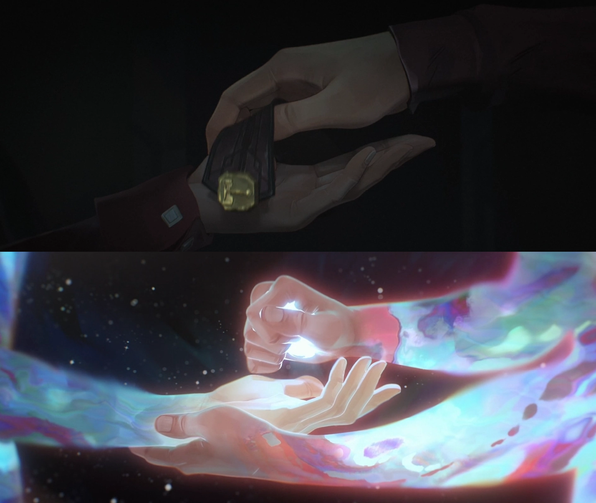
Они проходят один и тот же путь. Итог этого пути проговаривается в финальных монологах — и их признания начинаются почти идентично.
Они оба делают одинаковую ошибку, полагая, что есть что-то более важное, чем они друг для друга, — миссия, спасение мира; это демонстрируют параллелизм с кружкой и посохом и те же финальные монологи.
Сериал одержим тем, чтобы баланс между ними не смещался. И если есть в финале эпичнейший кадр с огромным, как Голиаф, Вестником и крохотным Джейсом перед ним, то обязательно есть и кадр, где нам показывают гигантского Джейса, а Виктора крохотным, как бабочка, перед ним.
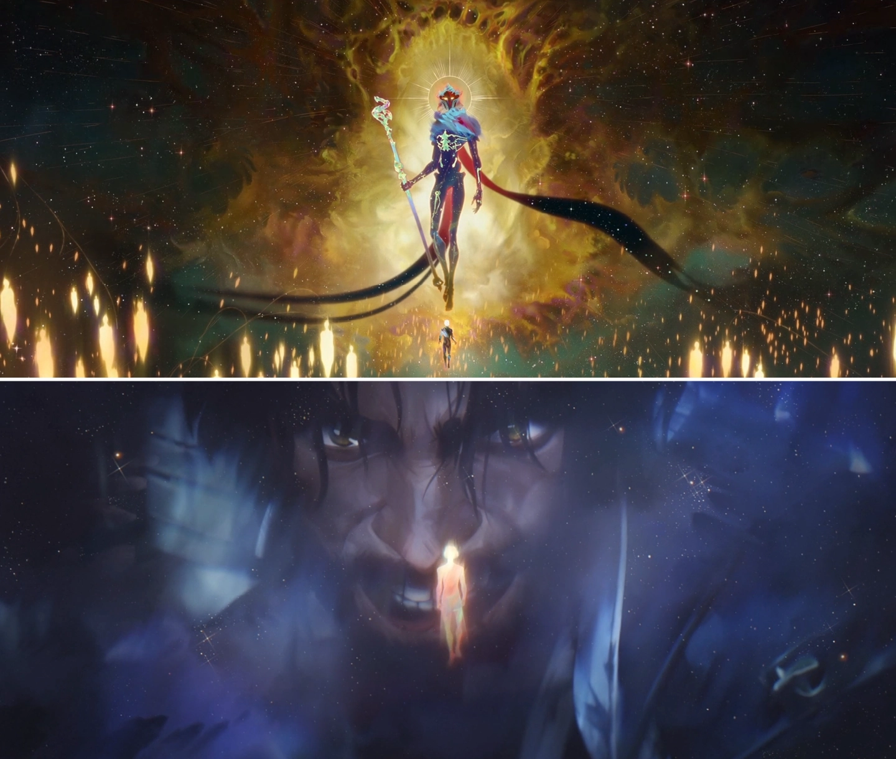
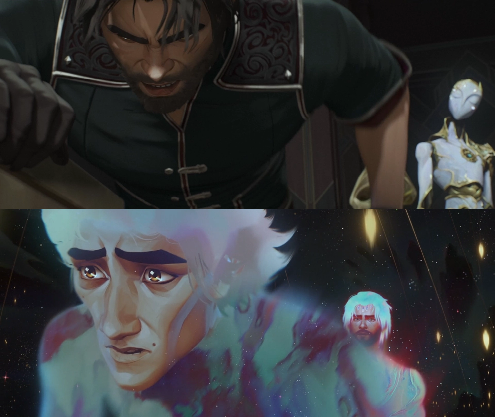
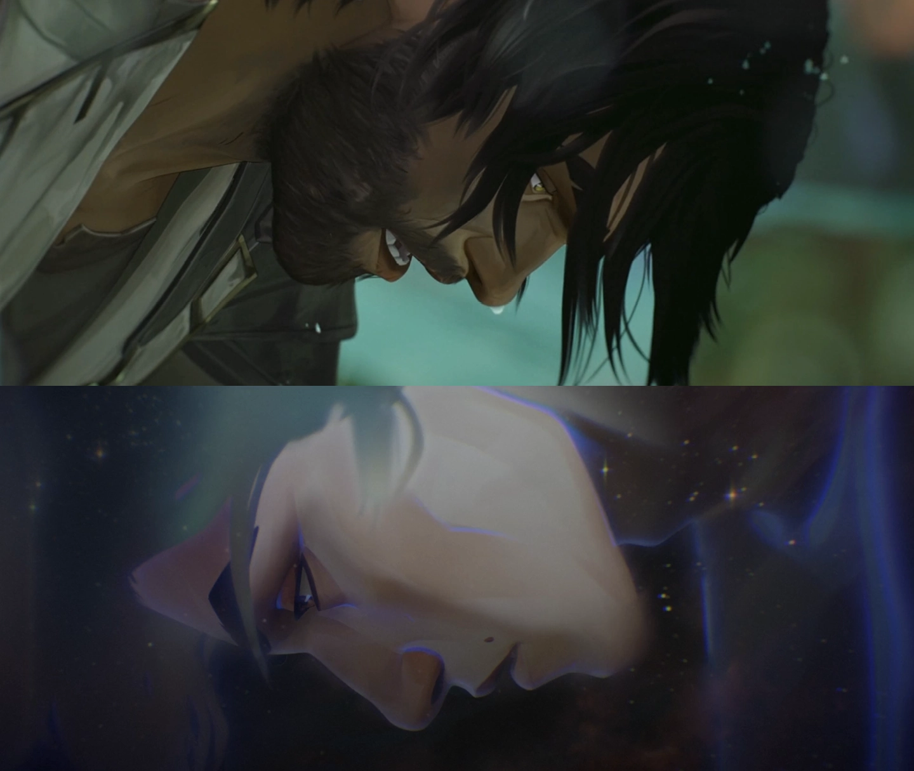
И, конечно, чувства.
Что мы видим здесь: Виктор только что бросал взгляд на губы Джейса, тянется к нему, пока Джейс проходит мимо, занятый мыслями о предстоящем выступлении. Джейс не знает, как Виктор смотрит на него.
Что мы видим здесь: Джейс полон нежности и восхищения, пока Виктор проходит мимо, занятый мыслями о новых возможностях хекскора. Виктор не знает, как Джейс смотрит на него.
Вывод из этого параллелизма: они одинаково любят и одинаково не догадываются о настоящей природе чувств другого.
Это именно вывод, а не интерпретация, потому что любовь мы уже рассмотрели с нескольких сторон. И рассмотрим с ещё нескольких дальше. Непонимание тоже очевидно (вывод как минимум из конфликта в диалоге с affection). Параллелизм даёт механизм: равенство и взаимность. Любовь и непонимание даёт остальной текст произведения.
Искусство в целом, не только кино, видит замкнутый зеркальный параллелизм между двумя персонажами как уравновешивание, переплетение и взаимность (с любым знаком — это может быть и взаимная ненависть). В литературоведении это называется зеркальная симметрия. Образцовый пример в романе «Евгений Онегин»: Татьяна пишет Онегину любовное письмо и получает отповедь ↔ Онегин пишет Татьяне любовное письмо и получает отповедь. Они не совпали по времени, но в сумме всего произведения баланс между ними абсолютный, чувства одного догнали чувства другой, вес и воля Онегина и Татьяны в финале идентичны. Однако в отличие от пушкинских героев у Джейса с Виктором зеркальная симметрия чувств фиксируется в одном временном отрезке, им не надо ждать годы, они уравновешены здесь и сейчас.
Писательская комната
Поехали дальше. Всё это время мы смотрели на сериал через микроуровень: кадры, препарированные сцены, нейробиология. Это нормально для киноанализа, потому что факты — мелкие биты, из которых складывается большее. Но чтобы увидеть это большее целиком, нужны дополнительные методы и другая дистанция.
Пора поговорить об архитектуре истории и её драматургии. В общем, о том, за что отвечает коллектив сценаристов, попивая сок у себя в писательской комнате.
Но сначала надо определиться, что, собственно, произошло в арке Джейса и Виктора. Во втором сезоне всё очень сконцентрировано и некоторые идеи передаются буквально несколькими фреймами. Отчего, напомню, они не перестают быть твёрдыми фактами текста.
Без точно диагностированного сюжета не получится никакого анализа. Нужны не гипотезы, а твёрдая опора на то, что текст достоверно сообщает. Иначе не разобрать ни структуру, ни мотивацию.
Я уже говорила, что интерпретации и трактовки — это не только прекрасно, но и вообще — базовый опыт. Воспринимать произведение без них — всё равно что вместо новогодней ёлки с игрушками и гирляндой ставить в гостиной голую палку.
Кроме того, некоторые вещи произведение намеренно оставляет без ответа. Ну вот, например, астральная Скай — частица настоящей Скай, которую поглотил хекскор, или чистая галлюцинация Виктора? Астральная Скай воплощает собой человечность Виктора, да — об этом говорит и нарративная логика произведения, и говорила, например, Аманда Овертон. Но выжило ли хоть в какой-то степени сознание девушки? Непонятно. В сериале множество фактов и для поддержки, и для опровержения такого предположения. Это загадка без решения, и искать на неё свой собственный ответ — важный зрительский опыт, восхитительная гирлянда на ёлке.
Моя задача — разобрать то, что напрямую влияет на костяк истории, а не рассказывать, что ваши игрушки фальшивые. Интерпретации и трактовки — круто! Но так уж вышло, что мне нужны факты и выводы. Поэтому не держите зла, но я буду опираться на то, что конкретно говорит текст, и исключать гипотезы, противоречащие этому. Извините, если оттопчусь по любимому. И напоминаю ещё разок на всякий случай: всё, из чего делаются нарративные выводы, должно находиться в тексте. Это касается и персонажей (они не думают, не чувствуют, не имеют опыта вне показанного на экране), и событий (если в тексте нет указания на событие, оно — не часть произведения). Любое заключение, которое делается в отрыве от текста, не может быть выводом, это интерпретация или трактовка. Что тоже норм, но для других ситуаций.
Не Марвел, а «День сурка»
Главная ошибка в понимании того, что происходит, — воспринять аркейновские timelines как аналог идеи, распиаренной Марвел. Всё потому, что Маг в финале говорит «timelines», а до этого происходит что-то типа марвеловского timeline с Экко и Хаймердингером, и концепции в голове смешиваются. Но внутритекстовая логика говорит об обратном. Это НЕ другой Виктор в другой вселенной. Это тот же самый наш Виктор. Его личность, спрятанная внутри хекскоровой машины, чтобы быть абсолютно точной, но версия и мир те же. Его «timelines» на самом деле — time loops, временные петли, в которых как минимум восьмой раз (по числу переданных маленькому Джейсу разных рун) крутятся герои. Отсылка скорее к «Дню сурка»: Виктор проживает одну и ту же развязку снова и снова, меняя вводные, пока не приведёт ситуацию к нужному исходу.
Timeline — временная линия
Почему:
→ Молот в самом конце рассыпается. В финале он становится невозможен из-за того, что принесён из будущего, которое отменено. При этом композиция кадра с рассыпающимся молотом повторяет кадр из будущего: само произведение не только даёт логическую связку, но и наглядно, фактом, показывает её.
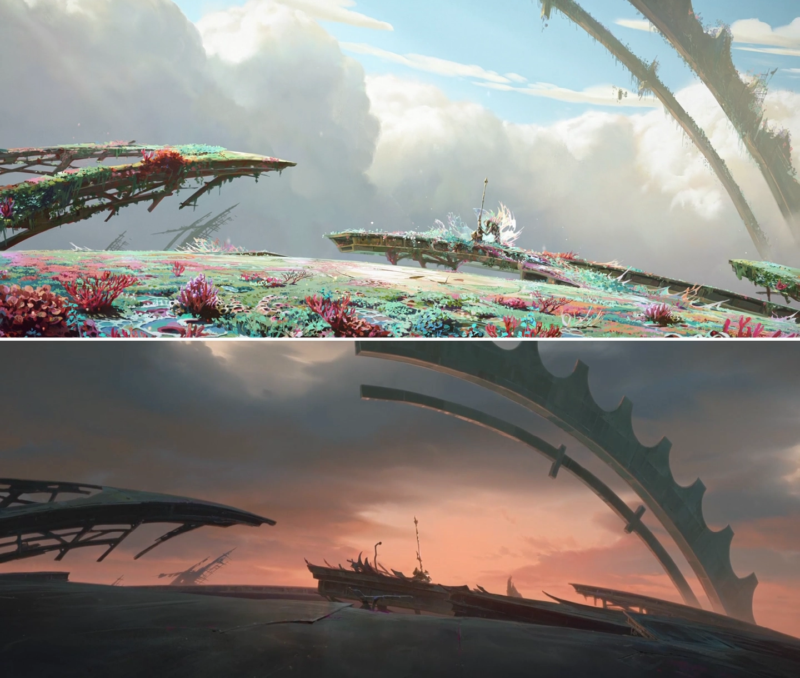
Если бы молот был принесён из параллельного марвеловского таймлайна, он бы не рассыпался. В той концепции развилки создают не связанные между собой дубли, которые продолжают жить своей жизнью, даже если исходник разрушен. На самом деле путешествия во времени с перемещением по одной временной линии — это более привычный фантастический сюжет: первый «Назад в будущее», «Эффект бабочки». В «Назад в будущее» так же, как Джейсов молот, начинает исчезать Марти МакФлай, когда едва не срывается возникновение любви между его отцом и матерью.
Типичный «парадокс деда», строго противоречащий марвеловской концепции таймлайнов.
→ Экко и Хаймердингер попадают в некую параллельную вселенную — но строго в виде сознаний, а вот Джейс попадает в хекскоризированный ад в собственном теле. Это кардинальное отличие, две абсолютно разные концепции.
Джейс оказывается в том же мире, где происходят основные события сериала, в его далёком будущем: яма, в которую проваливается Джейс, — это дно высохшего Пилта, всё сгнило и разваливается, марионетки хекскора изъедены коррозией. Чтобы всё пришло в это состояние, должно было пройти много времени. И главное: здесь он берёт молот, и, когда изменяется развитие событий ∼исходного∼ мира, молот рассыпается. Это один и тот же мир. Маг ждёт Джейса на верхушке хекс-врат в ∼исходном∼ мире.
Параллельная вселенная Экко и Хаймердингера нигде не называется таймлайном. В сериале нет слова, чтобы связать реплику Мага и этот мир. Связь возникает у нас в голове только из-за внешней лексической схожести. У нас есть череда событий, в которой этот мир играет определённую роль, а конкретно: здесь добывается вторая аномалия. Одно из основных условий удачного разрешения ситуации — аномалия внутри девайса, который Экко швыряет Вестнику в голову. В этот момент Вестник говорит: «That device can’t be», то есть в каждом мире может одновременно существовать только одна аномалия. Экко был отправлен в параллельную вселенную — вне исходного мира, вне закрученной временной петли, будучи чистым сознанием — именно затем, чтобы принести вторую аномалию, невозможную в исходном мире.
«Этого устройства не может быть»
Дополнительно то, что аномалия в исходном мире только одна, подтверждается стремлением Вестника добраться до сердца хекс-врат («сердце» — это не метафора, помещение так называется по официальному арт-буку, очень романтично). Целая война Пилтовера и Ноксуса разыгрывается, чтобы Вестник добрался до аномалии.
→ В марвеловской концепции нет различия между timelines и possibilities, там каждая possibility и есть новый timeline. А Маг явно, вслух различает одно и другое. «In all timelines» для него — реально прокрученные петли (минимум восемь штук), «In all possibilities» — вычисленные, но ещё не реализованные итерации эксперимента.
→ «I promised you». Джейс говорит «Я обещал ∼тебе∼» — не «ему» или кому-то там. Астральный Виктор, которому он это говорит, — тот же самый Виктор, которого Джейс встретил на верхушке хекс-врат в уничтоженном мире. Не марвеловский «вариант».
→ Воспоминания Джейса об уже прожитых петлях начинаются в яме. Мы видим, как память о Джейсе-марионетке вспыхивает среди прочих образов. Себя-марионетку в этот момент Джейс ещё не видел. Передачи информации от Мага ещё не произошло. Джейс вспоминает сам.
Не Виктор, а хекскор
Я встречала точку зрения, что во втором сезоне якобы сам Виктор принимает решения поработить людей, величайше эволюционировать и так далее. Но с этим спорит огромное количество фактов текста. Произведение прямо говорит, что Виктор обманут и пленён хекскором.
Почему:
→ Маска. В самом конце, когда Экко распополамливает лицо Вестника, в астральном пространстве сквозь трещину в маске становится видно лицо Виктора. То есть было что пополамить. Это две разные сущности. Маска — реальность текста.
И маски же ничуть не тонко присутствуют в заставках второго сезона. Одна в руках Виктора и множество на заднем плане
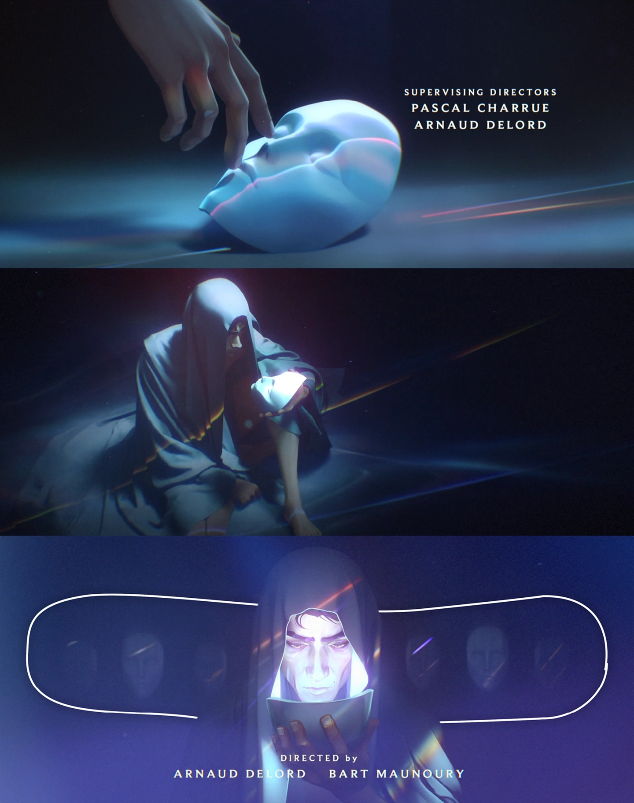
→ Голос. У нас есть моменты, когда звуковая пост-обработка даёт точно понять, где говорит Виктор, а где хекскор. Здесь Glorious Evolution звучит механистично, интонация пафосная. Это не Виктор заканчивает фразу и не Виктор мечтает эволюционировать.
Великая Эволюция
И противоположный момент, о нём я уже писала выше: вся фраза произнесена механически, а голос Виктора пробивается в конце.
Это две разные сущности, и одна со временем пожирает другую.
→ Музыкальная тема Виктора. Во втором сезоне она звучит только в финале, после того, как Джейс освобождает Виктора от влияния хекскора. Кроме того, что это можно услышать собственными ушами, об этом говорит один из композиторов сериала и автор этой темы Александр Темпл в интервью и в дополнительных материалах к сезону.
→ Реакция на зло. Я бы сказала, что это главное. Виктор первого сезона — идеалист, остро реагирующий на несправедливость и зло. Он вкладывает всю страсть в осуждение этически неприемлемых для него вещей.
У хекскоро-Виктора выраженные слепые пятна в отношении ко злу. Он будто не видит некоторых вещей: лишает автономности людей, не реагирует на убийство Сало. Там, где видит, он всё ещё настроен на обычное для Виктора добро — отказ вредить Варвику, запрет оружия в коммуне, — но хекскор как будто выбирает, что показать Виктору, а что спрятать.
Вестник же после трансформации в открытую несёт зло: использует тела людей как неодушевлённые придатки, развязывает войну. «We’re scientists, not soldiers» говорил Виктор, а войну развязывает хекскор.
Во время разговора в финале в сердце хекс-врат Джейс говорит: «People deserve to choose their own fates», и Вестник отвечает: «Choice is false». Это прямая противоположность тому, во что Виктор верит, — «There is always a choice», — и настолько очевидный инвертированный мотив, что сериал репликой буквально тычет нам в лицо: это произносит не Виктор, а тот, кто его захватил.
«Люди заслуживают сами выбирать свою судьбу»
«Выбор ложен»
«Выбор есть всегда»
А вот главное в главном: сразу после того, как Джейс освобождает Виктора от влияния хекскора, Виктор в полном ужасе — до панической атаки. Частичная слепота снята, и он видит всё, что хекскор заставил его натворить. Резкая смена отношения — прямой показатель, что, будь он собой, Виктор не принял бы таких решений.
Виктор и общее сознание рассматривает в этот момент как будто видит впервые. Изнутри хекскора он видел что-то другое.
→ Конфликт человеческой природы и «машинной логики». Мы говорили о конвенции жанров, посвящённых романтической любви. А сейчас давайте поговорим о конвенции жанра научной фантастики. Хотя мир Рунтерры наполовину фэнтезийный (магия, все дела), научная составляющая сюжета безусловна. И «Аркейн» поднимает тему, которая проходит костяком через всю историю научной фантастики: «Они развивались. Они восстали». Конфликт между людьми и машинами, людьми и искусственным интеллектом, «органиками и синтетиками». Конечно же, как и почти всё в фантастике, эта тема — рефлексия о человеческой природе, но форма, в которую она облекается, часто говорит конкретным языком и использует конкретные ходы.
Слово «роботы» от Чапека, законы робототехники Азимова — начало темы в первой половине XX века. Мыслящие машины и Батлерианский джихад в мире «Дюны» Фрэнка Герберта, андроиды в романе Филипа Дика «Мечтают ли андроиды об электроовцах?», ставшие репликантами в экранизации «Бегущий по лезвию» — знаковое продолжение в 60-х. Изумительный цикл «Песни Гипериона» Дэна Симмонса с ИИ-антагонистом (запомните это название) — уже конец XX века. В современной поп-культуре — это устоявшийся дискурс, понятный и считываемый: борги в Стартреке, сайлоны в Battlestar Galactica, машины в Матрицах, Жнецы в серии игр Mass Effect, искины во вселенной Киберпанка Майка Пондсмита; можно бесконечно продолжать. «Аркейн» идеально встаёт в этот ряд с одной оговоркой: это сай-фай об искусственном интеллекте, вывернутый наизнанку.
Если обычно нам подаётся внешняя «техническая фабула», а уже внутри спрятано рассуждение о том, что такое человек (снаружи — машина, внутри — поэтика), то «Аркейн» явным образом обозначает проблему как выбор Виктора между эмоциями и «разумом», а при ближайшем рассмотрении мы видим механистичность и чуждость логики, нечеловеческую мотивацию (снаружи — поэтика, внутри — машина).
Хекскор нашёптывает, и соблазняет, и лжёт, и надевает Виктору этические шоры — и да, Виктор покупается, обманывается, сдаётся. И потому трудно чётко разграничить, где запутавшийся Виктор, а где неумолимый хекскор, стремящийся захватить и сожрать волю всех живых существ. Но есть один момент, который не только делает эту границу очевидной, но и ставит сюжет в череду произведений, изучавших этот вопрос. Вот этот момент: «Humanity’s self-corrupting contradiction» — говорит Вестник Джейсу.
«Человечество/Человечность — это противоречие, которое разъедает само себя»
Это вмиг переносит нас от поэтики «emotion clashes with reason» к апокалиптическому приговору всему виду и до боли знакомой по сотням произведений машинной логике.
И что характерно, Джейс даже не пытается ответить на эту — машинную — логику. Его ответ адресован только Виктору: там любовь и принятие, и полный игнор «механических» претензий — «You were never broken», ни слова о человечестве. Джейс точно так же, как и всё произведение, разделяет хекскор и Виктора.
«эмоции сталкиваются с разумом»
«Ты никогда не был сломан»
Темы жанра: восстание творения против создателя, этика науки, переписывание личности и индоктринация, гибель всего живого как итог машинной «оптимизации». Галочки о соответствии можно ставить по всем пунктам.
Точное происхождение разума хекскора нам неизвестно. В сериале за этим, скорее всего, стоит Аркейн, магическое измерение, — о чём нам, собственно, и говорит название сериала. Однако хекскор может быть как аватаром — передатчиком воли Аркейна, — так и самостоятельной новой сущностью, «ребёнком» магии и науки. Его «младенческое» состояние — хекстек (tech, техника), тело Виктора после воскрешения полумеханическое, марионетки механические целиком. «They think. They adapt» — говорит Виктор, и это описание соответствует искусственному интеллекту (и фраза подозрительно напоминает слоган Battlestar Galactica «They Rebelled. They Evolved»). Формулировка «Choice is false» отсылает к true/false в программировании. Характерный для хекстека звук — синтетический (привет синтетикам Масс Эффекта), его так и описывают специалисты по звуковым эффектам Элиот Коннорс и Брэд Бомонт.
«Они думают. Они адаптируются»
«Звёздный крейсер “Галактика”» — «Они восстали. Они эволюционировали»
Я просила вас запомнить «Песни Гипериона» Симмонса, так вот: ИИ-антагонист цикла называется TechnoCore — и он управляет «марионетками». Хекскор с его марионетками — настолько плотная отсылка к культовому произведению, что трудно поверить в её случайность.
В хекс-сюжет «Аркейна» абсолютно точно встроена эта жанровая конвенция, и это подразумевает, что Виктор там разгуливает не один, а с пассажиром, индоктринирующим его, согласно традиции жанра.
→ Темперамент Виктора значительно изменился после воскрешения. Даже со смертельным диагнозом, измученный и лишённый сил, он вспыхивал эмоциями: гневом, отчаянием, азартом, надеждой, — а с хекскором в груди он — как тень. Его личность мерцает, например, в разговоре с Вай и Джинкс, но в остальное время он будто во сне.
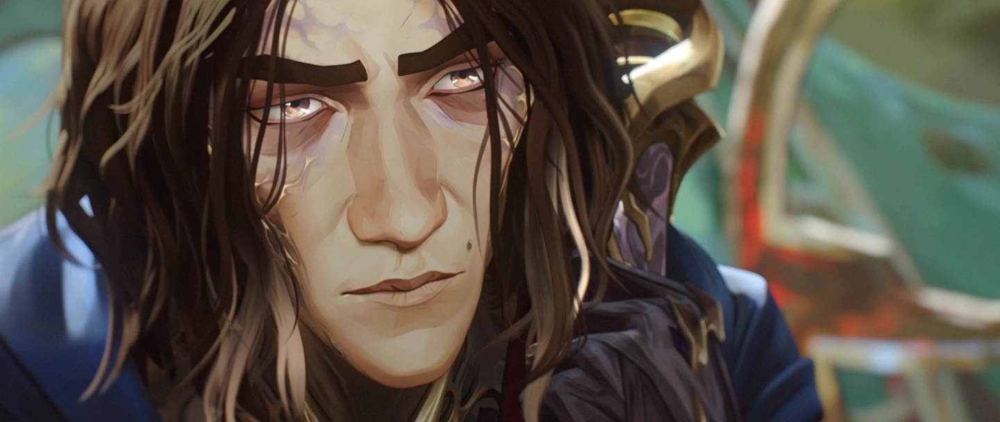
Виктор, как говорят герои сериала «Призраки усадьбы Блай», «tucked away» — спрятан внутри собственного разума, пока телом движет призрак. И именно внутри собственного разума — астрального пространства, где он проводит время с иллюзией Скай, — он гораздо живее.
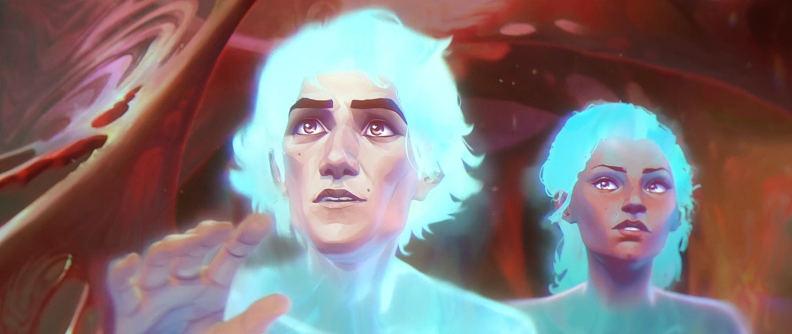
Это же мы видим в заставке второго сезона: отстранённый безэмоциональный внешний Виктор — и проскакивающий кадр внутреннего, «астрального» Виктора с живой эмоцией.
Перед тем, как отказаться от своей человечности и передать всё управление хекскору, Виктор говорит Скай: «Thank you very much for your company in my solitude». «Solitude» здесь означает, что Виктор заперт внутри, его выход наружу из собственного разума затруднён. Телом по большей части движет другая личность.
«Большое спасибо, что составили мне компанию в моём одиночестве»
А после отказа от человечности «лицо» Вестника прямо показывает спящего Виктора и живого зверя.
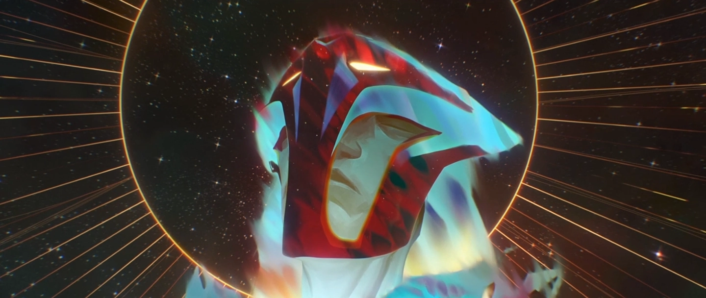
Заторможенный темперамент к тому же обычно сопутствует индоктринации (смотрим предыдущий пункт).
Не отчаяние, а чёткий план
Тут мне надо сформулировать что-то вроде «Вопреки расхожему мнению, у Джейса и Мага был чёткий план». Но давайте я для начала спрошу: а почему вообще кто-то может решить, что никакого плана не было?
Главный ответ, как правило: выстрел. Нам показывают, как Джейс возвращается из ада, в который по его вине превратился мир, прямиком идёт в Заун и стреляет в средоточие хекскора. Логичное предположение, что это выстрел на поражение, убийство как отчаянная попытка предотвратить апокалипсис? Логичное — если не учитывать больше вообще ничего: ни подсказки до финала, ни сам финал.
Во-первых, оказываясь в астральном пространстве, Джейс сразу начинает действовать чётко. Начинает произносить слова, полные любви и принятия, целенаправленно доносит информацию прикосновением, не сомневаясь ни секунды, вкладывает руну Виктору в руку. Он — сама решимость, а значит, всё это время он действовал по плану — плану, ведущему в эту точку; плану, не включающему в себя перманентную смерть Виктора.
Плюс: Маг вплавил руну из браслета в тело Джейса тогда же, когда поручил ему миссию — перед отправкой в прошлое. В астральном пространстве у Джейса нет одежды, только его сущность, поэтому вплавленная в запястье руна проносится как замаскированный вирус, нацеленный на очистку хайвмайнда от хекскора. Способ внедрения выбран под задачу, задача поставлена заранее.
А вплавленную в руку руну нам крупными планами показывают несколько раз, чтобы мы ни в коем случае не забыли о её существовании. Руна — олицетворение плана.
Во-вторых, Джейс не «убивает» Виктора выстрелом — и ретроспективно (Виктор выживает), и с точки зрения намерения. Джейс стреляет в средоточие хекскора в груди Виктора. Вот сюда:
Джейс приходит в коммуну в тот момент, когда рядом Синджед, который гарантированно Виктора спасёт.
Выстрел в голову был бы убийством Виктора. Выстрел в конкретное место расположения антагониста + множество фактов финала — не убийство Виктора.
То, что Джейс не стреляет на поражение, — твёрдый вывод. То, что так он ослабляет связь между хекскором и Виктором, — интерпретация. Он мог стрелять, например, чтобы ускорить Великую Эволюцию — здесь только предполагать, точного поэтапного содержания плана у нас нет, лишь выводы о его наличии и главные вводные эксперимента.
Ещё доказательство того, что это не убийство: когда после выстрела марионетка с Виктором внутри появляется в Зале Совета, Джейс абсолютно не удивлён. Если ты стрелял, чтобы убить, какая-то рефлексия от того, что твоя жертва — и она же главный человек в твоей жизни — выжила, должна присутствовать. Но рефлексии нет.
Появление Виктора предвосхищается всплеском галлюцинаций Джейса, в которых повторяются такие же геометрические узоры, какие были показаны при передаче Магом Джейсу зашифрованной информации. Всё идёт строго по плану.
Что ещё может смущать и подталкивать к выводу, что плана нет: эмоции Джейса к Виктору в той же сцене с марионеткой. Они считываются как враждебность и гнев, но так ли это?
Что важно: только в финале нам открывают истинную природу намерений Джейса, показывая, с кем состоялась встреча в хекскоризированном мире. То есть это сюрприз, который создатели хранили до самого конца; вскрытые карты, которые до этого были спрятаны, — и прямая задача зрителя здесь переосмыслить всё поведение Джейса после ямы. По аналогии с тем, как переосмысляется фильм «Шестое чувство» после твиста в конце: «Аааа, так вот что это было». Тут надо вернуться и пересмотреть — мысленно или физически. И тогда поведение Джейса начинает читаться по-другому.
Фортиши очень тонко изобразили эту двойственность.
Когда мы впервые видим кадр «My partner died in this room», нам кажется, что эмоция Джейса — гнев. Но пересматривая с новыми вводными, мы видим, что это страх.
«Мой партнёр умер в этой комнате»
В исследовании El Zein, Wyart & Grèzes 2015 участникам показывали лица, морфированные между гневом и страхом, и одно и то же выражение считывалось то как гнев, то как страх в зависимости от контекста. В частности, отведённый взгляд смещал прочтение в сторону страха.
Джейс взгляд отводит, посмотрите, его глаза движутся по горизонтали — то есть фактически здесь скорее страх. Но при первом просмотре этот сигнал перебивается контекстом: когда нам кажется, что Джейс относится к Виктору как к врагу — мы читаем гнев. Финал переписывает контекст — и прочтение меняется.
Что за страх я имею в виду, чего боится наш бесстрашный Джейс? Это страх посмотреть в лицо чужака, говорящего голосом любимого человека. Страх поддаться обману и принять одного за другого. Страх обернуться и посмотреть в лицо своей Эвридике… Впрочем, я забегаю вперёд, Орфей с Эвридикой будут чуть позже.
План в финале благополучно завершается тем, что Джейс и Виктор куда-то телепортируются. Внимание всем постам: они не умирают, они куда-то телепортируются!
Телепортация
Телепортаций в сериале несколько и они каждый раз разные по внутренней механике.
→ Первая — в детстве Джейса — исполняется Магом через упорядоченный магический ритуал с использованием рун как языка.
→ Вторая — телепортация Хаймердингера, Экко и Джейса из сердца хекс-врат — незримо контролируется Магом, а вся сила процесса запитана от мощной стихийной аномалии. Мы не видим Мага, но дирижирует происходящим он: сериал сообщает это как минимум флешбеками Джейса в этот момент. И один из флешбеков — мощный параллелизм, привязывающий к телепортации через аномалию Мага из детства Джейса.
→ Третья — телепортация Экко обратно в исходный мир из параллельного — исполняется девайсом, собранным на коленке: тут и руны как язык, но язык простейший, несколько знаков, высеченных в металле, никакого сравнения со сложностью заклинания Мага в первой телепортации; и крохотная вручную созданная аномалия.
→ Четвёртая — телепортация Джейса из хекскоризированного будущего в настоящее — исполняется Магом, присутствующим в кадре, с использованием силы аномалии.
→ И финальная. Она исполняется ровно одной руной: ни сложного рунического языка, ни силы аномалии (которая удалена из мира), ни живого исполнителя.
Вот что объединяет эти пять разных телепортаций.
☝️ Каждый раз от главного актора, присутствующего на экране (Маг, девайс, руна), исходят характерные белые лучи с зазубринами, двигающиеся по кругу.
✌️ Каждый раз телепортирующиеся деформируются.
🤟 Каждый раз кроме третьего (Экко в исходный мир) телепортирующиеся всасываются.
Происходящее в финале полностью укладывается в общий телепортационный принцип. И кроме того, есть и другие логические ходы, которые поддерживают телепортацию. Об этом дальше в тексте.
Именно потому что во второй телепортации мы не видим актора, мы не видим и лучей. А вот где мы видим характерные лучи, так это в астральном пространстве за секунды до физической телепортации. Этим сериал говорит: Джейс и Виктор телепортировались и телами, и разумами.
А ещё в дополнительных материалах ко второму сезону есть рабочая раскадровка финала с черновыми репликами актёров озвучки, и там много деталей, которые в таком сыром виде читаются гораздо чётче. Это однозначно телепортация, и она задумывалась такой на самых ранних этапах: не как добавленная на продакшене «красивость», а как элемент истории. Телепортация с 02:31.
В общем, план заканчивается телепортацией. Куда героев из этой телепортации выносит, мы понятия не имеем. Но то, что это не смерть на месте, знаем точно.
План: итог
Подобью логику.
Из руки Мага в руку маленького Джейса падает восемь рун — и все руны разные.
+
Множество сдирижированных событий, включая извлечение второй аномалии Экко.
+
Виктор — учёный.
=
Это контролируемый эксперимент с меняющимися вводными.
↓
В контролируемом эксперименте всё подчиняется плану.
Действия Джейса показывают, что он действовал по плану, который в последней итерации заключается в том, чтобы вложить Виктору в руку руну — главную часть эксперимента, базовый факт текста.
+
Джейс поклялся Виктору, что не провалит задачу.
+
Джейс — учёный.
=
Это один и тот же план. Они действуют сообща, как научные партнёры.
А вот узнать, в чём этот план состоит и от чего зависит положительный исход эксперимента, можно, только если проанализировать мотивацию персонажей. Мотивация же персонажей встроена в структуру сюжета. Придётся разобрать эту матрёшку в несколько ходов. Поехали.
Структура сюжета
Для протокола: я анализирую арку Джейса и Виктора отдельно, но это не значит, что к ней сводится весь сериал. В сериале ансамблевый сюжет, там несколько переплетённых линий.
Если упростить сюжет хекс-арки до голого каркаса и взять стандартные драматургические описания ролей, мы получим вот такую историю.
Есть Протагонист и его мечта. Жизнь Протагониста спасает персонаж, с которым Протагонист делит мечту, и персонаж становится Объектом Любви. Мечта трансформируется в монстра — Антагониста. Объект Любви погибает, Протагонист воскрешает его, не зная, что этим отдаёт во власть Антагонисту. Протагонист проходит через ад, мучительные испытания и проверку решимости — и в итоге освобождает Объект Любви из плена.
Эта структура соответствует сказочному типу ATU 400 The Man on a Quest for His Lost Wife.
Муж в поисках утраченной жены
Что за ATU
Жил-был век назад финский книгочей Антти Аарне, и заметил он, что разные народы стран европейских рассказывают одни и те же сказочные истории. И начал тогда Антти дело великое: стал нумеровать эти сказки, а номера записывать в каталог. Через десятилетия дело его продолжил американский книгочей Стит Томпсон, расширил сказочный корпус, добавил стран, перевёл на язык международный — английский. А уже в нашем веке немецкий книгочей Ханс-Йорг Утер постановил: определять в каталог сказки со всего мира — те, что встречаются у трёх и больше народов, и те, что живут веками. И стал называться каталог «Индекс Аарне — Томпсона — Утера», или «Индекс ATU».
Сегодня это — рабочий инструмент и общий язык для каждого профессионального фольклориста. Номер ATU обозначает семейство сказок. Номер — он же тип.
Сказки бывают не только однотипные, часто комбинируется два или три типа, и рассказ про мужа, идущего за тридевять земель за своей магической женой, есть в тысячах сказок как обособленно, так и в комбинации.
Примеры: «Дева-лебедь» — хрестоматийная ATU 400, у «Царевны-лягушки» тип в составе (402+400), а в мифологии его «родственник» — «Орфей и Эвридика». Миф гораздо древнее и трагичнее, но в нём описывается группа таких же событий и мотивов.
Об Индексе ATU — на вики.
О комбинации типов 402 и 400 — в указателе Ханса-Йорга Утера: «The Types of International Folktales» (тип 402 — описание и раздел «Combinations»). Плюс специалисты указывают, что типы 402 и 400 часто комбинируются в славянских сказках. Например, Джек Хейни в «The Complete Folktales of A. N. Afanas'ev, Volume II: Black Art and the Neo-Ancestral Impulse».
«Типы международных народных сказок» (тип 402 — описание и раздел «Комбинации»)
«Полное собрание сказок А. Н. Афанасьева. Том II: Чёрная магия и неоанцестральный импульс»
О родственности ATU 400 мифу об Орфее и Эвридике есть множество исследований и наблюдений. Например, можно взять книгу Барбары Фасс Ливи «In Search of the Swan Maiden», где она посвящает отдельную главу Орфею и Эвридике в исследовании девы-лебеди, главной сказки для ATU 400 (глава «Orpheus's Quest»).
«В поисках девы-лебеди»
(глава «Испытание Орфея»)
У столпов фольклористики мотив «не оглядываться» в типе 400 (центральный для Орфея и Эвридики) тоже описан. Томпсон в «The Folktale»: герою велят подняться на гору, не оглядываясь. Утер сравнивает с 400-м тип с таким же запретом — 413 The Stolen Clothing («The Types of International Folktales», тип 413).
«Народная сказка»
413 Украденная одежда
«Типы международных народных сказок»
Если разобрать ATU 400 на главные ходы:
→ Жена с волшебными качествами и/или родом из другого мира (в фольклоре соседнее государство тоже может считаться «другим миром»)
∼ Общеевропейский прасюжет: жена — наполовину дева, наполовину лебедь — обладает волшебными качествами и принадлежит к потустороннему миру.
∼ Сказка: Василиса Премудрая — наполовину лягушка, наполовину дева — обладает большим умом и чудесными способностями, с первой ночи помогает Ивану-царевичу магией, родом из тридесятого Кощеева царства (согласно Проппу, в славянской мифологии тридесятое царство часто олицетворение загробного мира).
∼ Миф: Эвридика — лесная нимфа, божество природы; лес, а не мир людей, — её естественное место обитания.
∼ «Аркейн»: Виктор обладает большим умом, с первой ночи помогает Джейсу с магией, родом из чуждого Джейсу Зауна, который метафорически — ад на земле, а буквально — яма в земле.
→ Муж теряет жену — чаще всего, потому что нарушает священное правило (табу) или обещание, данное жене
∼ Общеевропейский прасюжет: муж нарушает запрет и сжигает или иным образом уничтожает волшебное оперение жены, потому что хочет, чтобы она осталась с ним навсегда; из-за этого жену «уносит» в потустороннее царство.
∼ Сказка: Иван-царевич сжигает лягушачью шкурку раньше срока, потому что хочет, чтобы Василиса осталась девицей навсегда; из-за этого Василиса оказывается в тридесятом царстве и становится пленницей Кощея.
∼ Миф: Эвридика попадает в ад не по вине Орфея (на этом этапе миф отличается от сказки); Эвридику кусает змея, героиня погибает и оказывается в царстве Аида.
∼ «Аркейн»: Джейс нарушает данное умирающему обещание, нарушает научную и человеческую этику, «потому что он не может представить свою жизнь без Виктора» (хочет быть с ним всегда), и сливает тело Виктора с хекскором; хекскор начинает стирать личность Виктора, держит его в плену.
→ Муж отправляется в опасное путешествие на край света или в загробный мир, преодолевает множество препятствий
∼ Общеевропейский прасюжет: муж отправляется в опасное путешествие на край света или в загробный мир, преодолевает множество препятствий.
∼ Сказка: Иван-царевич отправляется за Василисой Премудрой в тридесятое царство Кощея Бессмертного, преодолевает множество препятствий.
∼ Миф: Орфей спускается в ад и пытается пройти испытание Аида, владыки мёртвых, — не оборачиваться и не смотреть на Эвридику по пути из ада.
∼ «Аркейн»: Джейс оказывается в аду хекскоризированного мёртвого мира, а в яме — буквально под землёй. Все испытания назначает Джейсу Маг — «владыка» этого мёртвого, убитого им, мира. Джейс проходит испытания тела в адском будущем, после этого — испытания ума и решимости, вернувшись в настоящее. При общении с хекскором пытается «не смотреть» на Виктора, не поддаться соблазну увидеть в монстре любимого человека.
→ Финал
∼ Общеевропейский прасюжет: муж и жена возвращаются в мир людей и живут долго и счастливо.
∼ Сказка: Иван-царевич побеждает Кощея, освобождает Василису, они возвращаются домой и живут долго и счастливо.
∼ Миф: Орфей не выдерживает испытание, оборачивается, и Эвридика навсегда остаётся в царстве Аида.
∼ «Аркейн»: Джейс справляется со своими чувствами и стреляет в средоточие хекскора в груди Виктора, справляется со всеми задачами, и сериал указывает на счастливый финал — телепортацию, но «жили долго и счастливо» напрямую не показывает.
Там есть ещё интереснейшие совпадения, но для иллюстрации этого уже достаточно. Арка Джейса и Виктора попадает между трагедией мифа и благополучным финалом сказки, но излагает именно эту романтическую по своей структурной ДНК историю.
Теоретически телепортацию можно и не заметить, она укладывается в пару секунд экранного времени. На уровне факта она твёрдо есть в произведении; плюс на неё указывает расширенная структура сюжета — чуть ниже расскажу об этом. Финал точно не трагический. Но человеческое внимание — сложная штука. Я сама после первого просмотра была уверена, что они умерли, прорыдала неделю, а телепортацию разглядела позже. То есть пока я пристально не всмотрелась, моё сознание читало мифологическую трагедию — но с тем же основным посылом, что и в сказке.
Как работает узнавание сказки
→ Сказочные тропы — это то, что мы узнаём автоматически, без необходимости расшифровывать:
☝️ Мы знаем их с детства.
✌️ Они универсальны настолько, что излагаются похоже у разных народов мира.
🤟 Это самые древние, самые отшлифованные за тысячи лет сюжеты, а сюжеты человеческий мозг в принципе воспринимает цельными смысловыми блоками. Об этом через ту или иную оптику говорят множество исследователей — от Умберто Эко («интертекстуальные фреймы») до современных когнитивных нарратологов, опирающихся уже на нейробиологию, — например, Дэвида Хёрмана («скрипты»). Вопрос покрывается огромной областью знания с разными подходами: структурная нарратология (Пропп, Барт), schema theory — теория схем (Бартлетт), когнитивная нарратология (Хёрман), рецептивная эстетика (Изер, Эко).
Для примерного представления о теме есть вводная обзорная статья Гамбургского университета.
Если любое повествование узнаётся по схемам, то сказка — это схема, которая максимально «укатана» и «проглатывается» мозгом без усилий.
→ А вот как устроен этот механизм на нейробиологическом уровне.
Если смотреть на электроэнцефалограмму, каждый раз, когда человек воспринимает смысловую информацию, электрическая активность нейронов мозга примерно через 400 миллисекунд после стимула проседает этакой «ямкой».
Вот эту ямку назвали N400.
Чем ямка N400 глубже, тем больше у мозга сопротивления при «переваривании» полученной информации.
Когда всё идёт гладко, разворачивается по ожидаемому сценарию, ямка крохотная. Мозг проглатывает информацию и живёт дальше.
Когда что-то прямо противоречит ожидаемому, ямка превращается в Марианскую впадину: информация не лезет, мозгу приходится продираться.
У ямки N400 есть даже собственные именные статьи во всяких энциклопедиях.
→ При этом мозг обрабатывает суть истории и её детали по-разному.
Психолингвистика с 1970-х годов делит воспринимаемую информацию на два типа: нечётко, интуитивно схваченную «суть» — gist и буквальные, точные «детали» — verbatim (конкретные слова, числа, поверхностная информация). Изначально считалось, что суть «выжимается» из деталей. Но серия экспериментов в начале 1990-х годов показала, что это не так: gist и verbatim кодируются, хранятся и извлекаются мозгом параллельно, они не зависят друг от друга.
Особенно ярко это проявляется через память: можно запомнить суть, потеряв все точные слова, а можно запомнить детали и потерять суть — то есть это разные механизмы. И главное, у этих двух типов информации разная скорость забывания: gist держится гораздо дольше, verbatim быстро «осыпается». Мозг воспринимает gist — суть — приоритетной.
На основе этих экспериментов Валери Рейна вывела Fuzzy-Trace Theory (Теория нечёткого следа).
Вот именно поэтому незамеченная телепортация, как и другие несовпадающие verbatim, не мешает считыванию сказочного сюжета о любви.
Любовь здесь — gist, суть. Эта суть в первую очередь и объединяет ATU 400, Орфея с Эвридикой и Джейса с Виктором, а механические сюжетные совпадения и несовпадения работают на другом уровне.
Но если это так, если сказка разглаживает ямку N400, вкатывается, как Светлячок на ховерборде, в мозг зрителя, почему вообще тогда есть те, кто не считал любовь в хекс-арке, и нужно писать этот текст и что-то доказывать? Давайте разбираться.
Искажённый сигнал
Представьте, что суть ATU 400, потеря и мучительный квест по спасению любимого человека, — это чистый радиосигнал, исходящий из структуры истории. И если она принимается в искажённом виде, значит, на каком-то этапе есть помехи.
Первая помеха — «на выходе», в самом сериале.
Сюжет ATU 400 простой и яркий, но создатели, во-первых, спрятали его за «шьямалановским» твистом; во-вторых, слили воедино Антагониста и Объект Любви. Половину второго сезона зритель должен быть уверен, что Джейс приходит убить Виктора; только в самом финале нам показывают, что всё это время Джейс Виктора спасал. И вот тогда должно и щёлкнуть интеллектуальное осознание — временные петли, причины и следствия основного сюжета, — и сработать узнавание сказки на эмоциональном и «фреймовом» уровне. В итоге сюжет скручен в бараний рог, усложнён, а настоящая суть на время подменяется ложной сутью: якобы враждой героев.
Причём наш мозг с огромной неохотой меняет точку зрения.
Это называется Continued Influence Effect — эффект продолжающегося влияния, он изучен вдоль и поперёк, проверен и перепроверен вопросниками, айтрекингом, ERP, вычислительными моделями. Можно посмотреть обзор Lewandowsky et al. 2012: парадный адрес, работа целиком.
Главным образом Continued Influence Effect прикладывают к реальным ситуациям — это как раз видно по обзору: упёртость антиваксеров, политики как источник дезинформации, работа присяжных в судах. Но к восприятию произведений искусства он точно так же относится.
Вот, например, свежий эксперимент Xu et al. 2024, показывающий нейробиологию процесса. Измеряли электроэнцефалографией, ямка N400 тоже в деле. Когда участники эксперимента при чтении неправильно что-то предсказывали («убийца — дворецкий»), а потом получали противоречащую этому информацию («убийца — бабуля»), они не меняли точку зрения сразу. Изначальный вывод, даже неверный, уходил из головы медленно и продолжал влиять на дальнейшее чтение.
(Про дворецкого и бабулю — мои искромётные комментарии, в эксперименте читали другое)
Итак, на истинный gist сказочного типа у нас накладывается ложный gist (якобы вражда Джейса и Виктора), отказ от которого даётся мозгу тяжело — это помеха самого произведения.
Вторая помеха ловится уже «на входе». То есть со стороны зрителя. Сейчас следите за руками.
Эвристики и Дэниел Канеман
В 2002 году Нобелевский комитет вручил премию психологу Дэниелу Канеману за то, что тот навсегда изменил экономику как науку (да, психологу дали Нобеля за экономику).
Официальная формулировка при присуждении премии звучит так: «За интеграцию открытий из психологических исследований в экономическую науку, особенно в отношении человеческих суждений и принятия решений в условиях неопределённости».
В чём суть этих открытий.
Чуть выше были эковские «фреймы» и хёрмановские «скрипты» в нарратологии. У Канемана похожая концепция — но уже для мышления в целом: «эвристики». Это ментальные ярлыки, быстрые и неосознанные правила, которые наш мозг использует для мгновенного принятия решений. Вместо того чтобы тратить кучу энергии на сложные расчёты, мозг подменяет сложный вопрос простым и выдаёт мгновенный ответ. Эвристики экономят время и ресурсы мозга, но часто приводят к когнитивным искажениям.
Для экономики оказалось критически важным, какие действия люди предпринимают, опираясь на эвристики. А для нашего разговора центральная тема — как люди, опираясь на эвристики, судят о «нормальности», чего автоматически ожидают, и как устроен в мозге этот процесс. Это Канеман изучал в соавторстве с Дейлом Миллером в работе «Norm theory: Comparing reality to its alternatives» — о теории нормы.
«Теория нормы: сравнение реальности с её альтернативами»
Что такое «норма» по Канеману.
Мозг не запоминает предметы и явления по отдельности, он раскладывает их по категориям — «птица», «мебель», «песня». А когда категория, допустим, «птица», всплывает (в разговоре, в мыслях), она «вспыхивает» в голове особо сгенерированным образом.
Мозг показывает «картинку» не статистически высчитанного среднего представителя, а самого ∼доступного∼: того, кто встречался чаще всего и попадался недавно. Для человека, живущего в средних широтах, это почти гарантированно будет воробей. И очень маловероятно, что пингвин или страус. Именно доступность «картинки» — залог минимальной траты мозгом энергии, принцип любой эвристики. А здесь задействована самая распиаренная — эвристика доступности.
Так вот, то, что мозг скупо выдал как изображение категории (воробья для птицы), он автоматически и считает нормой. Воробей — «нормальная» птица, пингвин и страус — «диковинные». Этот процесс происходит мгновенно, незаметно и неконтролируемо — человек не выбирает осознанно, какая «картинка» вспыхнет.
И если пингвину со страусом ни холодно, ни жарко от «ненормальности», то когда в категории начинают попадать живые люди, ситуация становится гораздо, гораздо сложнее.
Коллектив учёных во главе с Сапфирой Торн в 2020 году, опираясь на работу Канемана, решил изучить, как механизм «нормирования» обходится с одной конкретной категорией: романтической любовью.
Это была серия из четырёх экспериментов. Испытуемые описывали и оценивали признаки любви, в том числе на скорость. И это сравнивалось для разнополых и однополых отношений.
Заголовок итоговой статьи говорит сам за себя: «Love is heterosexual-by-default». Любовь гетеросексуальна-по-умолчанию. Стоит человеку подумать о категории «любовь», в голове по умолчанию вспыхивает разнополая пара.
Заголовок бьёт в лоб, но под капотом эксперимента множество нюансов. В целом, человечество не обречено, и гетеронормативность — это не моральный выбор, а тот самый шорткат мозга: когда даётся время подумать — результат смещается. Испытуемые на уровне убеждений не считали однополую любовь «ненастоящей». Более того: для полноты и чистоты эксперимента среди участников были обладатели разных сексуальных ориентаций. Но даже при таких вводных неумолимо то, что само, без усилия, первым вспыхивает в голове. А первой вспыхивает разнополая пара. Однополое прочтение не приходит само, до него надо с усилием дотянуться — иногда даже если вы сами не гетеросексуальны.
Это и есть гетеронормативность в действии — не рьяное человеконенавистническое убеждение, а тихое и неумолимое непрочтение, незамечание однополой любви. Стирание опыта огромного количества живых людей.
Гетеронормативность
И вот она, вторая помеха: когнитивное искажение, слепота гетеронормативности — однополая любовь не вписана в «норму», и мозг не читает эти отношения как представителя категории «романтическая любовь». Чтобы уловить в хекс-арке чистый сигнал сказки, многим приходится преодолевать не гомофобию даже, а неконтролируемую инерцию собственного мозга.
То же самое относится ко всему, что мы уже рассмотрели: считывание языка тела, мимики, интонаций, вчувствование в объективный коррелят. Примените всё то же самое к гетеросексуальной паре, у вас бабочки в животе запорхают от переизбытка романтики. Да просто представьте, что все прикосновения Джейса — к хрупкой женщине, Виктории. У вас мерялка этого как «дружбы» моментально треснет от несовпадения с реальностью.
Ну и обратите внимание: в сюжетной структуре Виктор оказывается в той роли, в которую сказка помещает женщину. Разумеется, есть похожий тип сказки, где на поиски мужа идёт жена, ATU 425, но там свои особенности, и путь, который проходит тамошняя главная героиня, отличается от квеста Джейса. Джейс у нас точно «муж», мы точно в ATU 400, где Виктор в сказочном изложении «жена». Будь он реально Викторией, у нас была бы минус одна помеха.
Впрочем, наличие помех никак не отменяет того факта, что структурно это — чистая история любви. Итог пути — воссоединение с Объектом Любви, и значит, история об этом. Был бы другой финал, скажем, выбери Джейс Мэл, а не Виктора, была бы другая структура сюжета. Но в структурном прочтении Мэл отводится минимальная роль, этот сюжет не про неё — у неё он свой: признание матери, поиск морально допустимого в заданных условиях (условия: она дочь Ноксуса, воспевающего «путь волка»), «игра престолов», познание своей силы, в том числе магической. Джейс в её сюжете структурно пустое место: никакую роль не играет, ни на что не влияет, ничего не значит — эпизодический приятный мальчик, которого она хотела использовать и прониклась чуть более тёплыми чувствами, чем предполагала ситуация. И она в арке Джейса на структурном уровне почти не считывается. Как бы нежно к ней ни относился Джейс и как бы до посинения ни ревновал Виктор, на метауровне в этой структуре она не важна.
Арки в ансамблевом сюжете переплетаются, произведение иначе не может работать, и поэтому Мэл выполняет вспомогательные функции в арке Джейса и Виктора, но это для неё «дополнительная активность», по-дружески протянутая рука помощи соседнему сценаристскому отделу. Главное — её путь героини, её борьба за человечность, её противостояние с матерью. Это взрослый сюжет, своего рода роман взросления, и некоторые люди его не считывают именно потому, что женщина не сведена к сексуальной функции. Она не придаток к кому-либо, она полностью самостоятельная единица, которая живёт свою жизнь, как хочет, а не как ей сказали мать или социальные ожидания. Пытаться ограничить роль Мэл участием в арке Джейса и Виктора означает забирать у Мэл идентичность, личный путь, личный сюжет.
Вы не поняли персонажа, если считаете, что главное, о чём говорит про неё сериал, — это отношения с Джейсом. Да кто такой этот Джейс для неё, господи, смазливая мордашка. Сводить Мэл к этим отношениям — унизительно.
Если говорить конкретнее, то сюжетная арка Мэл бережно воссоздаёт феминистскую ревизию кэмпбелловского мономифа — «Путь героини» Морин Мёрдок. Эта линия гораздо сложнее и тоньше, чем ATU 400.
400+313
Хотя арка Джейса и Виктора тоже немного сложнее базового ATU 400. Да, эта структура в фундаменте их истории, но она дисбалансная: Джейс — главный герой и движущая сила, Виктор — практически damsel in distress. «Аркейн» не был бы «Аркейном», если бы остановился на таком изложении. Как мы помним, сериал делает всё, чтобы эти два персонажа воспринимались равными друг другу. Дисбаланс чинится так: Виктор превращается в бога-застрявшего-в-машине — могущественное существо, которое замыкает время, закидывает людей в параллельные реальности, переписывает свою. И вот здесь структурно чистая ATU 400 достраивается вторым типом: ATU 313 The Magic Flight.
дева в беде
Волшебное бегство
Самое ядро 313-го типа такое: герой под страхом смерти обязуется выполнить невыполнимые поручения, а девушка — не пассивная наблюдательница, а активная участница, обладающая магической силой, — помогает выполнить эти поручения, победить антагониста. И после они вместе сбегают.
Невыполнимое поручение под страхом смерти и помощь в его выполнении — совместный план Джейса и Виктора. И после они вместе телепортируются.
Оп, вот и структурная основа для телепортации. Встроенный тип предполагает в сюжете побег. Джейс и Виктор победили антагониста, телепортировались и живы. Сказка подтверждает.
Стит Томпсон в «The Folktale» отмечает, что в короткой форме эпизод с девой-лебедью обычно служит завязкой к типу 313. А у Утера в описании третьей формы 400-го типа сказано, что некоторые варианты включают элементы типа 313; и сам 313 стоит среди основных комбинаций. Хекс-арка, соединяя эти два типа, идёт проторенным путём.
Thompson, «The Folktale» (глава «The Complex Tale», раздел «Lovers and Married Couples»). Uther, «The Types of International Folktales» (тип 400, раздел «Combinations»).
Томпсон, «Народная сказка» (глава «Составная сказка», раздел «Влюблённые и супружеские пары»). Утер, «Типы международных народных сказок» (тип 400, раздел «Комбинации»).
Мотивация персонажей
Разбор структуры — это взгляд на русло сюжета из стратосферы. А если снизиться до земли и нырнуть под поверхность течения, сюжет станет виден изнутри, в переливах, в глубине. Эта глубина — мотивация персонажей.
Есть ли на полке инструменты для точного измерения этой глубины?
Бордуэлл и Томпсон обозначают внутренний путь протагониста как один из паттернов, живущих в четвёртом принципе киноформы — Развитии (Development). Они же дают нам простой формалистский ход: чтобы выяснить, что и как изменилось на протяжении произведения, нужно сравнить начало и конец. Про свойства киноформы помним, о киноязыке не забываем — история рассказывается на нём, — но на этом полномочия киноведов всё. Психологическая глубина, принципы, по которым работают персонажные внутренности, — это уже вотчина сценаристов.
А так как в этом тексте только лучшие умы человечества — мыслители, первопроходцы, нобелевские лауреаты, — есть человек, подходящий этой компании как влитой.
Драматургия и Роберт Макки
Роберт Макки, автор книги «Story: Substance, Structure, Style and the Principles of Screenwriting» — для друзей просто «Story».
«История: материя, структура, стиль и принципы сценарного мастерства» (локализовано на русский как «История на миллион долларов: мастер-класс для сценаристов, писателей и не только»)
«Story» — это суммирование того, чему Макки десятилетиями обучает сценаристов. На его мастер-классы в Голливуде ажиотажный спрос, он — культовая фигура. Семинары Макки, по подсчёту The Guardian, посещали более шестидесяти обладателей «Оскара».
Оскароносный Чарли Кауфман («Вечное сияние чистого разума») вводит его как персонажа в свой фильм «Адаптация» — вот прямо как есть, имя: Роберт; фамилия: Макки; роль: главный теоретик и преподаватель сценарного искусства в Голливуде; играет: Брайан Кокс.
Питер Джексон (ещё более оскароносный… впрочем, вы точно знаете Питера Джексона — трилогия «Властелин колец») зовёт его «гуру всех гуру».
Сценарист «Малышки на миллион» Пол Хаггис (не менее оскароносный) говорит, что всё, что он знает об искусстве сценаристики, он знает от Роберта Макки.
The Huffington Post перечисляет именитых учеников Макки, и их десятки, если не сотни.
Vice называет Макки «богом сторителлинга».
Сама книга вышла в 1997-м и до сих пор перепечатывается и продаётся как горячие пирожки. Переведена минимум на 17 языков. Рекомендованное учебное пособие в Йеле и других понтовых университетах. 20 недель не выходила из списка бестселлеров Los Angeles Times после начала продаж; среди сотни лучших книг о кинематографе всех времён по версии The Hollywood Reporter в 2023 году.
В общем, это книга, которая «стоит на полке у каждого сценариста», по мнению The Hollywood Reporter.
Первое, что нужно знать о мотивации персонажа по Макки: её главная движущая сила — Желание (Desire).
Второе: среди всех желаний протагониста выделяется одно, главное, и именно оно — несущая конструкция всей истории, Spine («позвоночник»). Макки определяет Spine так: «Сюжетный квест длиной во всю историю», «Главная объединяющая сила, которая держит вместе все остальные элементы» (главы «Scene Design» и «The Inciting Incident»).
(главы «Структура сцены» и «Побуждающее происшествие»)
Spine — сюжет, видимый изнутри персонажа, и в то же время сила, толкающая весь сюжет вперёд.
Сильно ли отличается теория Макки от других существующих в наше время подходов? Нет. С желанием как движущей силой Макки опирается на тысячелетние традиции драматургии от Аристотеля до Кеннета Роу, собственного учителя. Семантика может разниться, но смысл примерно один веками. Понятие Spine Макки вводит сам, но до него к похожей идее подходили и другие теоретики. В частности, Spine Макки описывает как полный аналог актёрской сверхзадачи Станиславского. Теория Макки отличается не оригинальностью, а подробностью и системным подходом. Я возьму из неё только самое основное, чтобы мы не утонули.
У желания в истории всегда есть объект, оно не абстрактно. Объект желания (Object of Desire) — что-то либо физическое, либо ситуационное, либо связанное с отношением к жизни. Что-то, чего прямо сейчас нет, и к чему герой стремится.
В самых простых историях у героя есть только Осознанное желание (Conscious Desire). И на этом осознанном желании держится весь сюжет: Бонд хочет победить злодея — и побеждает. Объект — победа над злодеем. Spine максимально прост, Осознанное желание здесь меняться не может, иначе вся история развалится.
Но в историях глубже в нарратив вводится такая штука, как Неосознанное желание (Unconscious Desire), и в этих случаях именно Неосознанное желание становится главным — «позвоночником», Spine-ом. В таких сюжетах Осознанное желание оказывается второстепенным, тем, чего герой полагает, что хочет, хотя на самом деле, его истинное желание не осознано и не названо. Макки в «Story» пишет: «Неосознанное желание всегда мощнее и долговечнее, корнями уходит в сокровеннейшее “я” персонажа, и именно оно позволяет создать сложного героя, который может многократно менять Осознанное» (глава «The Inciting Incident»).
При этом весь смысл появления Неосознанного желания в мотивации состоит в том, чтобы оно конфликтовало с Осознанным, чтобы персонажа разрывало между ними — и таким образом зритель вообще догадывался о существовании чего-то неназванного. На этом конфликте и строится драматургия, причём он может приобретать самые разные формы. Структура истории не требует конкретного единообразного воплощения, и сам Макки резко против написания по шаблону — он ещё во введении заявляет основным посылом книги, что важно понять законы, по которым история работает, а не писать по затверженной схеме. Обычно конфликт выходит на поверхность на сюжетной стадии Кризиса, а к Кульминации разрешается, но у авторов руки не связаны. Макки в книге разбирает несколько фильмов, в которых конфликт происходит на разных отрезках сюжета и в разных обстоятельствах. Структура просит конфликта — но в любой форме.
То есть Неосознанное желание:
→ по определению не осознаётся самим персонажем — тот даже не догадывается, что им движет на самом деле
→ противоречит Осознанному, конфликтует с ним
→ остаётся одним и тем же, тогда как Осознанные могут сменяться (свойство Spine)
Опять же: разделение осознанного и неосознанного — не личный инструмент Макки, а общее место англо-американской драматургии. С академической точки зрения это исследовал, например, Патрик Каттрис в статье для Journal of Screenwriting.
Cattrysse 2010: как водится — официальная ссылка на статью, доступная пдф на ResearchGate.
Для анализа Осознанное желание максимально понятно: оно произносится словами или явно подаётся. Просто берём семантику want/dream/etc, отчётливые выражения стремления и поехали. А вот с Неосознанным сложнее.
хотеть/мечтать/и т.д.
Как Макки отличает Осознанное от Неосознанного: если мы спросим персонажа, чего он хочет, то на первое он ответит, а на второе не сможет. А значит, у нас пока только негативный отфильтровывающий признак — если персонаж проговаривает желание вслух, значит, оно осознано. К кульминации персонаж может осознать, а может не осознать своё главное желание, тут море вариаций. Но посреди истории, посреди разворачивающегося конфликта? Нет. Произнесённое задолго до кульминации — Осознанное желание.
А позитивный признак — инструмент измерения, который предлагает Макки: выбор персонажа + цена этого выбора.
Точные формулировки:
«Истинная сущность персонажа проявляется в выборе, который он делает под давлением — чем сильнее давление, тем вернее выбор соответствует природе персонажа».
«Давление — важнее всего. Решения, принятые, когда риск нулевой, почти ничего не значат».
«Ценность желания для персонажа прямо пропорциональна риску, на который он готов пойти ради его исполнения».
(Глава «Structure and Character», раздел «Character Versus Characterization» и глава «The Substance of Story», раздел «On Risk»).
(Глава «Структура и характер», раздел «Характер против характеристики» и глава «Материя истории», раздел «О риске»).
Выбор с максимальной ценой указывает на Объект истинного желания. А истинное желание и есть Spine, на котором держится вся история.
Чек-лист
Итого, вот инструменты. Рассуждение должно отвечать на один или более пунктов и не противоречить ни одному из них:
1. Смотрим на начало и конец для оценки развития
2. У желания всегда есть Объект
3. Главное желание — Spine — неизменно
4. Если Осознанные желания сменяются, Spine истории — Неосознанное желание
5. Неосознанное желание как-то конфликтует с Осознанным
6. Неосознанное желание не осознаётся самим персонажем
7. То, что проговаривается вслух, — осознано
8. Семантика желания want/dream/etc, отчётливые выражения стремления и выбор персонажа помогают вычислить Осознанное желание
9. Для определения Неосознанного желания смотрим на выражения стремления, на выбор персонажа, сделанный под давлением, и на цену, которая ставится на кон за это решение
10. И про киноязык не забываем.
Давайте тренироваться на Джейсе, потому что у Виктора всё сложнее.
Мотивация Джейса
Для начала выставим опорные семантические точки, в которых произведение обозначает желание героя.
Первая такая точка — это выспренная речь Джейса о магии на суде: «Surely, we, the pioneers of science, can use it for good. We’re the champions of discovery!..». Хаймердингер тут же замечает: «I can sympathize with a young man’s dream to change the world». Семантика — dream — есть. Вносим.
«Уж мы-то, первопроходцы науки, сумеем обратить её во благо. Мы — защитники открытий!..»
«Мне понятна мечта молодого человека изменить мир»
мечта
Сразу посмотрим на последнюю такую точку, чтобы понять, к чему герой пришёл в конце. Это реплика «I thought I wanted us to give magic to the world… Now all I want is my partner back».
Ого, спасибо, Джейс! Сделал одной репликой половину аналитической работы. И ещё невозможно проигнорировать здесь «us» — we-talk, маркер романтики. Любовь прокрадывается даже в первую часть фразы. Но пока сосредоточимся на «give magic» («подарить магию»).
В принципе, мне не лень посмотреть и на другие семантические точки желания Джейса в сериале.
• Химена: His entire life, he’s chased an impossible dream.
• Джейс: Our Hextech dream.
• Джейс (во время презентации Хаймердингеру): Hextech was supposed to bring magic into the life of the common man (смысловая пара к обороту give magic to the world).
• Виктор: What about our pledge to improve lives, for those in need? For the undercity?
• Джейс: I never wanted anything to do with politics. You pushed this on me.
• Джейс (о причинах болезни Виктора): Exactly the sort of thing we wanted to fix with Hextech.
• Мэл (утешая, что вышвыривание Хаймердингера из Совета было норм): You can bring Hextech to the masses, just like you’ve always dreamed.
• Всю жизнь он гонялся за несбыточной мечтой.
• Наша хекстек-мечта.
• Хекстек должен был принести магию в жизнь простого человека (смысловая пара к обороту «подарить миру магию»)
• А как же наша клятва улучшить жизнь нуждающихся? Нижнего города?
• Я никогда не хотел иметь ничего общего с политикой. Это ты меня втянула.
• Именно то, что мы хотели исправить с помощью хекстека.
• Ты сможешь донести хекстек до масс, как всегда и мечтал.
Тут на полях хочется заметить, что common man явно пришёл к Джейсу с Виктором. До этого было просто «for good», после — их общее желание «fix [Zaun] with hextech» и стремление «improve lives… for the Undercity». Это разделённая на двоих, но изначально Викторова мечта.
простой человек
«во благо»
«исправить [Заун] с помощью хекстека»
«улучшить жизнь… Нижнего города»
Ещё такая ситуация: три (!) разных персонажа в первом сезоне предполагают, что мечта Джейса состоит в том, чтобы изменить мир. Хаймердингер на суде. Потом Виктор с «When you’re going to change the world, don’t ask for permission». Потом, уже после таймскипа, Мэл, отвечая на тираду Джейса о магии в руках людей: «The world will never be the same».
«Когда собираешься изменить мир, не спрашивай разрешения»
«Мир никогда не будет прежним»
Все эти реплики — тёмно-ироничное предсказание того, как Джейс изменит мир на самом деле: уничтожит его к чертям.
Но сам Джейс ни разу не даёт понять, что «изменить мир» — это его желание. Никак не соглашается, и не спорит со всеми тремя репликами — будто не замечает. А вот «hextech-dream» следом за Виктором он восклицает, вот это в нём отзывается. И крупный план распахнутых глаз подчёркивает эмоцию.
У дверей в лабораторию Хаймердингера, когда Джейс «питчит» магию Мэл, он упоминает изменение мира как неизбежность и процесс, который Пилтовер должен возглавить. Красноречие, прокачанное доверху, делает эту речь продающей, Джейс мастерски подбирает слова, чтобы уговорить Советницу помочь. Но это не желание. Собственно, семантики желания здесь и нет. Желание Джейса — только про магию: дать её всем, потому что она «красива». Это снова демонстрация тоннеля внимания: всем вокруг очевидно, что мечта Джейса изменит мир, а Джейс почти не видит мира за магией.
→ Осознанное желание Джейса №1: Дать людям магию.
Подарить каждому ту красоту, которая его спасла и стала центром его бытия.
Возвращаемся к «I thought I wanted us to give magic to the world… Now all I want is my partner back».
Мы видим прямую декларацию: то, что было главным — больше не важно. Думаю, никто и не ожидал, что «Аркейн» рассказывает простую одномерную историю с «позвоночником» из Осознанного желания, но тут можно формально зафиксировать соответствие пункту 4 чек-листа: Осознанное желание сменилось, значит, Spine истории Джейса — Неосознанное желание.
Посмотрим на финал: что выбрал Джейс и какую цену он готов был заплатить?
Выбрал он «finish this together», хотя у него до последнего момента была возможность отказаться. Виктор просит Джейса уйти, а после того, как руна окончательно очищает и Виктора, и мир, и освобождает всех людей из плена хайвмайнда, Джейса относит магическими течениями от Виктора, но он сопротивляется, как безумный, борется за то, чтобы остаться с Виктором, прикасаться к нему. Унеси Джейса эти течения, он мог бы вернуться в своё тело, как все выживающие в конце герои: Севика, Вай, Кейтлин и другие. Но Джейс хочет — выбирает — только одно: близость к Виктору. Цена за это: с большой вероятностью его жизнь.
«закончить это вместе»
Измерение показывает готовность выплатить цену в собственную жизнь — максимальную из возможных. Да, здесь работает Spine неосознанного желания. И да, объект желания — Виктор.
Но в чём конкретно заключается желание, из чего состоит?
Очевидный, поверхностный, дословный слой смысла антитезы «магия — вернуть партнёра» такой: хочу вернуть Виктора в свою жизнь, быть с ним рядом… Мы в кульминации сюжета, Джейс может здесь осознать своё Неосознанное. Дело закрыто? Просто снова хочет быть рядом — по-дружески, you know. Всё, расходимся?
Но погодите-ка, нет. В самом начале второго сезона Джейс уже произносил: «I understand now. My place was always here in the lab with you», обещая, что впредь будет рядом. Это абсолютно тот же самый очевидный, поверхностный смысл — «быть рядом». И дружба, и партнёрство во всех платонических смыслах, и желание находиться рядом давным-давно Джейсом опознаны, названы и под сомнение не ставятся. Значит, этот поверхностный слой — не Неосознанное желание, не Spine. Не то, на чём держится история Джейса и Виктора.
«Теперь я понимаю. Моё место всегда было здесь, в лаборатории, с тобой»
По условию, Spine на протяжении всей истории неизменен, как и его Объект. Признания Джейса в обеих сценах идентичны. Значит, если мы одинаково уберём из обеих сцен всё осознанное по отношению к Виктору, оставшееся неосознанное и будет «позвоночником» истории: отчаянный дистресс разлуки, пробуждение от полушёпота — маркеры романтической привязанности на нейробиологическом уровне; неожиданно для самого Джейса прорвавшийся эротизм; проваленные попытки облечь в слова то, что он чувствует, когда мечется между «партнёром» и «лучшим другом»; эмоциональный субстрат, вложенный в объективный коррелят-одеяло. Всё это — романтическое и эротическое влечение.
Ну привет, Неосознанное желание Джейса.
→ Осознанное желание №2: Быть с Виктором.
→ Неосознанное желание: Любить Виктора романтически и эротически.
Тут небольшой зазор: Джейс уже любит в обоих регистрах, только сам не в курсе. То есть, желание не пассивное — «находиться в состоянии любви», а активное — давать любовь и проявлять влечение.
Дальше у нас по чек-листу соответствие условию номер 5 — Неосознанное желание как-то конфликтует с Осознанным. Теоретически любовь к человеку и любовь к делу всей жизни не противоречат друг другу и могут сосуществовать. И магия с Виктором точно никак не конфликтовали в душе Джейса семь лет до событий второго сезона. А происходило это вот почему.
Практически всю сознательную жизнь, с детства, с того самого запускающего историю мига, когда Маг вложил руну в его ладони, всё внимание Джейса безраздельно концентрировалось на магии. Это был его стазис существования: магия годами была центром мира, центром его идентичности. Когда судом Джейсу было запрещено продолжать эксперименты, это стало настолько острым кризисом, что Виктор спас не только жизнь Джейса, удержав от прыжка. Он спас его внутренний мир, он дал опору. Поверил в Джейса как равный, как равный починил всё, что было сломано до кризиса и во время него. В ту секунду, когда Джейс думал, что потерял магию навсегда, и значит, жизнь бессмысленна, он закрыл глаза, а когда открыл, вместе с магией в фокусе уже жил Виктор. Неразрывно. «Our hextech-dream» — общая мечта на двоих. Луч прожектора гиперфокуса Джейса падал на то, что важнее жизни — магию, — и выхватывал Виктора тоже. Джейсу не приходилось годами не то что не платить за выбор — вообще его делать. Смотрел, неосознанно любил, трогал, творил вместе магическую науку. Фокусировался на двух объектах сразу, именно потому, что они абсолютно совпадали.
Когда Джейс говорит, что уйдёт из Совета и вернётся в лабораторию, мы видим один из самых дешёвых его выборов. Он и так не хотел заниматься политикой, скорее, считал это неизбежной нагрузкой, ему и так осточертели эти игрища, а в лаборатории два смысла его жизни — один осознанный, другой нет. Внутренний калькулятор говорит: это мелочёвка, три копейки на сдачу.
А есть очень дорогой выбор, который показывает противостояние Осознанного и Неосознанного желаний и в конце концов делается не в пользу Виктора — но за счёт очень высокой цены. Создание хекстек-оружия.
Чтобы разобрать этот выбор, надо понять про Джейса две вещи:
→ Джейс в гробу видал абстрактные моральные принципы, они почти никак не отзываются в его душе
→ Джейс глубоко и сильно сопереживает живым людям, всегда заботится о них
Пренебрежение законами, использование нелегального оборудования, мгновенное переключение с борьбы с коррупцией на «ручканье» с коррупционерами, покрывание незаконных действий Кейт, игнорирование прямого решения Совета и агрессивный погром фабрики (хотя он учёный, а не солдат) и, конечно, бриллиантовый венец: сливание Виктора с невообразимой мистической дрянью, которую сам Виктор умолял уничтожить. Я уже писала, что периферийные социальные сигналы вместе с моралью осыпаются из фокуса Джейса, потому что так работают его мышление и внимание. Это не осознанный выбор, Джейс не злодейский злодей, а с учётом его эмпатии строго наоборот. Просто моральные абстракции — менее важная информация, выпадающая из ментального процесса. Ими Джейс практически всегда жертвует. Но люди? Люди — это важное и настоящее. Ну и йордлы, там, и прочие разумные существа.
В первом ночном разговоре с Виктором Джейс за секунды переходит от неприятия к сочувствию, когда Виктор раскрывается и рассказывает о себе уязвимые вещи. Всё ломается и переворачивается в Джейсе, когда он случайно убивает ребёнка и воочию — не в принципах, а в теле на полу — видит, к чему привела его горячность. На сообщении о смерти Скай ему просто становится плохо. Гневная отповедь Джейса хекскоро-Виктору именно о людях: «Everything you’ve done to these people, you did alone».
«Всё, что ты сделал с этими людьми, ты сделал один»
А изгнание Хаймердингера из Совета вообще даётся Джейсу тяжелейшим образом. Судя по его реакции, это едва ли не самый дорогой выбор первого сезона. Который Джейс, конечно, делает, не колеблясь: жизнь Виктора — абсолютная ценность (измерение в пользу Объекта Неосознанного желания ✅️), а намерение Хаймердингера во что бы то ни стало уничтожить хекскор убивает последнюю надежду на спасение Виктора. За жизнь Виктора потом будет заплачено ужасающим отказом от морали и этики, нарушением обещания, нарушением телесной автономности Виктора — и это всё ещё абстрактные принципы по сравнению с жизнью любимого человека. А перед этим за жизнь Виктора Джейс платит разрушением жизни своего наставника. И вот это даётся ему тяжелее, потому что речь не о принципе, а о живом йордле и его благополучии.
Всё это и сплетается в клубок решения создать хекстек-оружие.
В опасности дорогие Джейсу люди и вообще — люди: Кейт, Мэл, горожане. Хекстек = магия, а магия всегда помогала, это её священная роль. Магия прямо сейчас поддерживает жизнь Виктора, это ли не главный аргумент? Логика Джейса: да, Виктор был настроен очень твёрдо против хекстек-оружия, да, он будет негодовать, но он будет жить, и люди будут защищены.
Виктор, очнувшись, скорее всего, думает, что создание хекстек-оружия — это выбор в пользу Мэл. Но нет, это выбор в пользу другого конкурента в сердце Джейса — Осознанного желания, магии. Однако на другой чаше весов при этом не сам Виктор, а его принципы. Тоже часть Виктора, но всё же в глазах Джейса менее важная, чем абсолютная ценность существования. И, кроме того, Джейс в этот момент ещё не стоит перед фактом, что магия в его сердце больше не №1; Неосознанное и Осознанное в его фокусе ещё сходятся, а ему всё равно дико тяжело принять это решение. Нам показывают его муку — и монтажной склейкой, к кому эта мука относится.
Джейс выбирает магию, а не принципы Виктора, но все гирьки на весах показывают, как много для него это стоило, а стоимость — снова указатель на вес Объекта желания, даже если раунд проигран.
Ну а когда Виктор уходит, бросив этот свой дикий и непонятный affection, Джейс наконец оказывается перед фактом: магия без Виктора больше не греет. То, на чём всю жизнь строил идентичность Джейс, не имеет больше ценности, если в это не включён партнёр. Джейс сидит «in the lab» с разбитым сердцем. Оказалось, если вычесть из «My place was always here in the lab with you» всё неважное, останется… Только «ты».
«Только ты». Линия Джейса тоже говорит два этих слова, просто не называя их вслух. А вслух в финале он произносит «All I want», и это точное описание гиперфокуса.
«Всё, чего я хочу»
По-нейротипически это было бы: «Я думал, что ты поможешь мне подарить магию миру, и главное — это магия. Но оказалось, магия это причина, по которой мы встретились, и главное — это ты». Что довольно взвешенно и мягко. Но Джейсов гиперфокус не умеет ни взвешенно, ни мягко. И Неосознанное, и Осознанное, когда судьба разводит их из-под одного луча, оказываются в непримиримом конфликте, и это разрывает Джейсу сердце.
Осознанное желание №2: Быть с Виктором — уже никак не конфликтует с Неосознанным. Оно, по сути, является осознанной верхушкой айсберга, у которого Неосознанное под водой.
Мотивация Виктора
Теперь давайте разбираться с мотивацией Виктора. И сначала я должна сделать дисклеймер. Помните, я говорила, что анализ невозможен без опоры на факты сюжета? Так вот для мотивации Виктора это критически важно. На этом персонаже держится всё происходящее, ценности, философия и идеи истории. Он очень сложный, написанный так ювелирно и образно, как никто другой. Кроме Осознанного и Неосознанного желаний нам понадобится ещё одна драматургическая концепция, и она окажется несущей. Нужно будет больше логических ходов и наблюдений, в том числе мотивов других произведений. И вся эта прекрасная, балансирующая сложность напрямую связана с сюжетом. Замените временные петли внутри одного мира на марвеловскую карусель, и мотивация рассыплется. Забудьте о том, что Виктор и хекскор — это два разных существа, и эмоциональные дебет с кредитом не сведутся.
Методология не меняется, идём по чек-листу. Но я задолжала подробный рассказ о факте, который на старте этой аналитической эпопеи привела самым первым, поэтому предлагаю не ограничиваться начальной семантической точкой (это «I want to help you complete your research», если что), а посмотреть на всё начало истории глазами Виктора.
«Я хочу помочь вам завершить исследование»
Когда мы впервые видим ещё безымянного ассистента декана, он приклеен к исписанной формулами грифельной доске в разрушенной квартире Джейса. «Наука» («Science, I guess»), изложенная там, заинтересовала его сверх меры, он на время даже забывает, зачем здесь. И поэтому, когда позже на суде Джейс выкрикивает слово «магия», у Виктора распахиваются глаза, и мы практически ощущаем, как в его мозгу начинают прокручиваться шестерёнки, соединяя науку с доски и новую вводную. Тут же Джейс переходит к огненной речи про champions of discovery — и снова крупный план на лице Виктора. Чуть позднее он будет с сильным чувством говорить: «Scientists seek discoveries!», это его вера, его жизненный принцип, его гордость, и поэтому речь Джейса задевает внутри него что-то очень важное, в том числе и частью «use it for good». У Виктора в этот момент отчётливый румянец, а это довольно острая физиологическая реакция.
«Наука, наверное»
Защитники открытий
«Учёные стремятся к открытиям!»
«обратить во благо»
И до этого он щурился, как кот на мышь, глядя на проходящего подсудимого.
С учётом того, что произойдёт дальше (я имею в виду в ближайшие восемь лет), можно сказать, что где-то здесь в Викторе оформляется притяжение. Ну и, согласитесь, Джейс великолепен в своей страсти. Так что когда мы видим Виктора в следующий раз — в кабинете Хаймердингера, — он чуть лихорадочно перелистывает страницы дневника и прямо называет свои чувства: он заинтригован и всем происходящим, и Джейсом до предела.
Несмотря на свою больную ногу, он взбирается на высокий этаж — вероятно, чтобы снова приклеиться к грифельной доске и доизучить «науку». Но обнаруживает, что этот длинноногий самец лани задумал ужасное. Виктор в панике. Паника в голосе, паника на лице. Даже ёрничает он от паники.
После этого будут произнесены две максимально важные реплики.
Первая — Джейса про красоту магии: «You’ve no idea how beautiful it is» — с прикрытыми глазами, с придыханием.
Вторая — чуть горькая Виктора: «A poor cripple from the undercity».
«Ты не представляешь, как она красива»
«Бедный калека из Нижнего города»
Весь его рассказ Джейсу о себе — попытка успокоить, отвести от карниза (голос мягкий, почти убаюкивающий), попытка сказать, что шанс есть даже сейчас, когда твоё имя прополоскали, а твоя патронесса от тебя отказалась. Но ещё это обнажение очень уязвимого — правды о том, как Виктор сам себя видит.
Две эти реплики рядом особенно остро дают почувствовать разницу во взгляде — не в том, что существует объективно, а в том, что рождается и живёт только в глазах смотрящего. В одном взгляде что-то, вобравшее в себя всю красоту мира, в другом — что-то жалкое, сломанное и уродливое, но достаточно упрямое, чтобы продолжать бороться. Что-то «несовершенное».
Причём для Виктора здесь это не трагедия, а почти равнодушная оптика, которая была с ним всю жизнь. Ну поломан — рыдать в углу, что ли? Делом надо заниматься, мир сам себя не улучшит.
Это сетап черты персонажа, которая сыграет решающую роль вообще во всём сюжете.
Ожог
И вот теперь пошёл раскручиваться событийный ряд, который на пике покажет нам обещанный первый факт: «Джейс откровенно любуется уходящей Мэл, и это вызывает у Виктора острую эмоцию».
Эта болезненная реакция Виктора — самый яркий момент из арки событий, связанных одним нарративным выводом. И событийная арка начинается с той самой первой семантической точки озвученного желания: «I want to help you complete your research».
Что вшито в эту фразу?
Структурно она запускает параллель между наставником Виктора, Синджедом, и Джейсом. Позднее в повествовании или за много лет до этого в событиях мира маленький Виктор так же выражает желание помочь в исследовании.
Виктор: Can I help?
Синджед: You want to assist me?
Виктор: (кивает)
Виктор: Я могу помочь?
Синджед: Хочешь быть моим помощником?
Из этого параллелизма и, например, того факта, что лицом хекстека будет только Джейс, можно сделать вывод, что желание помогать и не требовать ничего взамен, — это естественное состояние для Виктора. Он смиренно относится к тому, что находится на вторых ролях. Может быть, кривая оптика «я неполноценен» не даёт разрастись личным амбициям в его душе, может быть, это просто изначальная неэгоцентричность. Может быть, и то, и другое.
На самом прямом и понятном уровне фраза «I want to help you complete your research» — питч, предложение себя в кандидаты на позицию. Чуть глубже, подтекстом, это предложение «Давай дружить» — протянутая раскрытая ладонь. И на то, и на другое нужна смелость, потому что в ответ с какой-то вероятностью ожидается отвержение, особенно когда ты определяешь себя у себя в голове как «A poor cripple from the undercity». Даже несмотря на то, что Джейс в этот момент изгой, он всё-таки пилтоверец родом из уважаемого Дома. Кто его знает, как он отреагирует.
А ещё, начиная с этой фразы, из Виктора прорывается непроизвольный, но отчётливо видимый флирт. Особенно когда Джейс в ответ на предложение помощи превращается в растроганного плюшевого медвежонка, не очень верящего происходящему.
У флирта главное слово — непроизвольный. Джейс большой, красивый и беззащитный, и реакция Виктора на всю эту красоту поначалу автоматическая.
Как наука определяет флирт
Учёные изучают флирт давно и подробно, есть множество исследований. И что важно для разбора ситуации, в которой оказался Виктор этой ночью, есть различие между флиртом (flirtation) и ухаживанием (courtship).
Флирт как непроизвольный отклик на симпатичного человека описал, например, антрополог Дэвид Гивенс в работе от 1978 года. Человек подаёт сигналы притяжения раньше, чем успевает что-нибудь решить, и обычно даже не замечает, что флиртует. Автор предполагает, что такие сигналы родом из древних подкорковых центров мозга. Ухаживание (courtship) и соблазнение (seduction) — две другие категории. И ухаживание, по Гивенсу, «можно рассматривать как процесс, посредством которого создаются интимные отношения, которые могут в конечном итоге включать в себя сексуальные обязательства».
То есть ухаживание — демонстрация готовности к эксклюзивным отношениям. А флирт может быть лёгкой игрой, а может быть вообще неконтролируемой реакцией.
Давайте же посмотрим на признаки флирта, описанные учёными.
→ Взгляд наводится и отводится
Иренеус Эйбл-Эйбесфельдт, австрийский этолог, снимал людей скрытой камерой по всему миру — балийцев, папуасов, французов, индейцев вайка — и обнаружил, что флиртуют везде примерно одинаково. Поворот к человеку и тут же отворачивание от него он называл типичным элементом человеческого флирта. Дать сигнал и сразу его отозвать.
Книга: Eibl-Eibesfeldt, «Love and Hate: The Natural History of Behavior Patterns» (глава «Phylogeny and Ritualization»).
Эйбл-Эйбесфельдт, «Любовь и ненависть: естественная история поведенческих паттернов» (глава «Филогенез и ритуализация»)
Вот как это выглядит у Виктора:
Гивенс описывает примерно то же самое термином «взгляды вбок» (sidelong glances). Взгляд вбок демонстрирует одновременно тяготение и уклонение, лёгкую игру.
→ Игривость
Мэттью Абрахамс выяснял, по каким вообще признакам человек отличает флирт от не-флирта. Таких признаков оказалось шесть, и игривость (playfulness) — один из них. Причём это универсально для мужчин и женщин.
Игривый Виктор — кроме мимики важна интонация:
→ Прикосновение
В эксперименте Wade & Renninger 2021 инициация касания — один из признаков, по которым наблюдатели опознают мужское поведение как флиртующее.
Виктор передаёт браслет и чуть прикасается пальцами к пальцам и ладони Джейса.
А теперь главный нарративный факт, который работает сам по себе и даже в научном обосновании не нуждается, хотя оно, естественно, есть. Произведение делает чистый слепок, эмоциональный замер. Кадр с Виктором, который склонил голову вбок и чуть вперёд, — полный композиционный дубль того, что мы увидим, когда Мэл приблизится, чтобы поцеловать Джейса. Это первый из параллелизмов Виктор — Мэл, это начало любовного треугольника — глазами Джейса. И этот кадр вернётся к нам в финале как ответ на главный в мотивации Виктора запрос.
Причём кадр длится довольно долго (что само по себе акцент), и мимические мышцы Виктора успевают выразить несколько оттенков характерной эмоции — еле заметную игривость и желание очаровать. В общем, «строит глазки».
→ Наклон головы и долгий взгляд
То, что делает Виктор (а впоследствии Мэл), у этологов и психологов невербального поведения называется «head cant» — наклон головы вбок, когда линия глаз перестаёт быть параллельной линии плеч.
В книге, которую я уже упомянула выше, Эйбл-Эйбесфельдт описывает устойчивый паттерн флирта: получив зрительный контакт, человек склоняет голову, меняет направление взгляда — а глаза при этом быстро возвращаются в контакт: голова уходит в сторону, взгляд остаётся на партнёре. Эйбл-Эйбесфельдт объясняет этот жест так: долгий прямой взгляд сам по себе — сигнал напора, почти угрозы; наклон вбок снимает угрозу, оставляя только внимание. Виктор смотрит на Джейса долго — а склонённая голова даёт прочтение влечения, а не угрозы.
Дэвид Гивенс описал этот же наклон головы как часть репертуара ухаживания, который он наблюдал вживую. Среди признаков ухаживания у него есть и «застенчивый взгляд» — «coy gaze»: глядя на партнёра, человек чуть наклоняет голову вперёд, и глаза приходится поднимать навстречу. У него это точно так же жест, снимающий напор, «разоружающий» прямой зрительный контакт. Гивенс фиксирует, что наклоном головы в ухаживании пользуются и мужчины, и женщины.
Ссылка на Гивенса та же.
И проверка не наблюдением, а экспериментом, причём только для мужчин. Уэйд и Реннингер показывали людям изображения мужчин и просили выбрать, кто из двоих больше флиртует. Наклон головы (head cant) вошёл в число признаков, по которым наблюдатели опознавали мужчину как флиртующего.
Что напрямую связано с нашей темой: Виктора как человека не существует, это персонаж. Функция нарратива не чувствует влечение, а вот кадр, нарисованный руками художника, сообщает зрителю ровно то, что сообщали изображения участникам эксперимента Уэйда и Реннингер.
Ссылка на эксперимент тоже выше.
И посмотрите, как это выглядит не с точки зрения Джейса, а сбоку. Виктор просто ест Джейса глазами:
Дальше мы видим молодых людей через несколько часов работы над решением проблемы в расчётах. Между ними уже потрясающий резонанс, они уже заканчивают друг за друга предложения, шутят созвучно и в восторге от интеллекта друг друга. Виктор эмоционально плывёт. До этого он был достаточно сдержанным — спокойный и ироничный ассистент декана, — но тут у него мягкость и плавность жестов, расслабленность мимики. Он будто чуть растерян и чуть пьян от чувств.
Здесь происходит диалог, который даёт нам понять, каково Осознанное желание Виктора на этом промежутке жизни. Озвученная чуть раньше готовность помогать — это не сила, которая тащит персонажа по сюжету вперёд, скорее — черта характера. А то, что мотивирует и является осознанной ценностью, это, конечно: «Scientists seek discoveries. Ways to make the world a better place». И сразу же в спайке: «This hextech dream of yours has the potential to do that».
«Учёные стремятся к открытиям. К способам сделать мир лучше»
«У твоей хекстек-мечты именно такой потенциал»
Для Джейса, которому красота магии затмевает весь остальной мир, это высказывание — путеводная звезда, соединение его невыразимой любви с высоким принципом, который он не чувствовал так явно. Моральная установка Виктора мгновенно становится формой, внутри которой мечта Джейса размещается идеально, как там и росла.
Описание сцены выше — это факты и выводы, но для того, чтобы понять, что происходит в этот момент в голове Виктора, чтобы вывод сложился в связную историю, нужна интерпретация.
Сейчас я дам эту интерпретацию, но отнеситесь к ней благосклонно, пожалуйста: она приличным образом растёт из твёрдого вывода и ничего лишнего себе не позволяет.
Вот интерпретация (с набором фактов):
Виктор знает, что его математика безупречна, знает, что его жизненные идеалы созвучны Джейсовым. Он видит восхищение в глазах Джейса. Он чувствует заботу о себе, когда Джейс поначалу отказывается от взлома и проникновения в лабораторию Хаймердингера. Ну а потом Джейс с яркой эмоцией вскакивает, прикасается к Виктору и просто-напросто «бэбитрапит»: отдаёт ему своего ребёнка — самое важное в жизни, выстраданную мечту о магии. И впервые объединяет их обоих в нераздельное «мы». А так как Виктор сам очарован до крайности, всё это складывается в его голове как демонстрация взаимности чувства. Как ухаживание — courtship.
А вот чистый вывод:
Виктор решил, что Джейс за ним «приударяет».
Но! Это вывод не только из того, что мы уже увидели, а ещё и из того, что увидим после. Скоро сведу все точки.
Кстати, помните, что Джейс к людям вообще-то не особенно прикасается? А свою хекстек-мечту он отдаёт с прикосновением. Виктор через считанные часы уже «свой».
Дверь в лабораторию Хаймердингера. Нежное касание при передаче фонарика. Проворачивание ключей в замочных скважинах. И вдруг появляется Мэл. О нет, их застукали! Они одновременно начинают говорить, и вот что в этот момент произносит Виктор с ∼шаловливой∼ интонацией:
— Wait a minute, this isn’t my bedroom. How could I have…
— Минутку, это же не моя спальня. Как я мог…
Я не знаю, как донести это до скептиков помягче и подоходчивее… Дорогие скептики! Нет абсолютно ни одного объяснения этой фразы, которое бы не включало в себя эротическое прочтение. Даже если ободрать весь контекст, даже если интерпретировать как «Да он просто пошутил!», это всё равно прямое указание на смысл «один человек приводит ночью другого к себе в спальню». Эта шутка — считать ли её автором Виктора или держать в голове сценариста, создающего комик-рилиф, — смешна только потому, что обыгрывает понятный эротический сценарий.
Легко брошенное «bedroom» — это как минимум чёткий сигнал о том, что сексуальный контакт с мужчиной воспринимается Виктором для себя как естественный.
А как нарративный вывод: Виктор в игривом настроении, полагает интерес взаимным, и эта фраза — флирт, причём уже полностью осознанный. Даже с нотками seduction, по Гивенсу.
Иииии… Что происходит дальше, мы знаем. Джейс смотрит вслед уходящей Мэл с оценивающим мужским любованием, что-то вроде: «Ну какая! Я б замутил». Виктор видит это, и у него на лице появляется отчётливое острое болезненное выражение.
Это выражение работает чисто даже само по себе, без дополнительной информации, поэтому его и можно было спокойно вынести первым фактом анализа. В кадре есть абсолютно всё, чтобы его считать, и любое объяснение кроме «Виктора задевает, что Джейс любуется Мэл» выглядит абсурдным. Джейс только что своим красноречием выбил им шанс, всё на удивление хорошо повернулось. Негативная реакция сама по себе настолько здесь не к месту, что заставляет задаться вопросом, что с персонажем происходит.
«Может быть, он осуждает Джейса за то, что тот отвлекается от работы?» Нет, реакция, во-первых, мгновенная, а во-вторых, слишком острая. Для «отвлекается от работы» нужна пауза, нужно, чтобы Джейс завис, а Виктор потянул его за рукав. И болезненность выражения слишком личная, чтобы быть «о работе».
Но — в чём вся красота — это не загадка в себе, а часть событийного ряда, который кончается следующими кадрами:
Виктор зажат и корчит гротескные неловкие гримасы.
В пустоте без прошлого и будущего, только в этой точке, нет никакого объяснения этим гримасам. Вообще. А в арочном выводе она имеет безальтернативный смысл. Вот наконец арка целиком:
Флирт на карнизе
↓
«Мы»-сцена
↓
Шаловливый bedroom
↓
Ожог о любование Мэл
↓
Неловкость
Все эти факты встают в единственно возможный вывод: Виктор думал, что Джейс проявляет к нему романтический интерес, но с сильными эмоциями понял, что ошибся.
У каждого шага своя твёрдость присутствия романтики: флирт и ожог — железные; «Мы»-сцена — мягче по романтике, однако здесь выстраивается эмоциональный переход; «bedroom» без всего остального считывается с вариациями (но эротику однозначно привносит); неловкость — отчётливая, но бессмысленная. Впрочем, повторю, как «Отче наш»: произведение не работает разрозненно. Пытаться объяснять каждую точку отдельно — контрпродуктивно.
Без изначальной искры — флирта на карнизе — Виктор не стал бы считывать через романтику то, что происходит у доски. Без того, что происходит у доски, без жаркого внимания от Джейса, Виктор бы не осмелел до флиртующего bedroom. А без флиртующего bedroom не было бы такой яркой неловкости после осознания ошибки (интерпретация: «“Это не моя спальня”, какой же я болван, что он обо мне подумает!»). Это всё имеет смысл только вместе.
Ну и на этом пора заканчивать с началом. Там ещё красивейший символичный проход шестерёнки из рук Джейса к Виктору — как обещание, как заключение брака на небесах (в синеве магического поля под потолком). «Брак», пусть даже «лабораторный», — это, безусловно, трактовка, но шестерёнка вернётся, и она станет символом их отношений и по ту сторону экрана, и в нашем мире.
От неловкости Виктор быстро отойдёт, потому что делом надо заниматься, а не сопли жевать, да и Джейс вообще ничего не заметил. Но в последнем кадре с Виктором, который мы видим до ухода на таймскип, его взгляд на Джейса полон такой нежности, что сердце щемит.
Окей, у нас есть всё, что нужно, из начала. А вот финальная точка, монолог, который произносит Маг, и семантическое обозначение желания/стремления здесь dreamless и pursuit:
I thought I could bring an end to the world’s suffering. But when every equation was solved, all that remained were fields of dreamless solitude. There is no prize to perfection, only an end to pursuit. In all timelines, in all possibilities only you can show me this.
Я думал, что смогу положить конец страданиям мира. Но когда каждое уравнение было решено, остались лишь поля одиночества без мечты. У совершенства нет награды, есть лишь конец стремлению. Во всех временных линиях, во всех вероятностях только ты можешь мне это показать.
Этот монолог произносится в апогее всего сериала и в кульминации истории Джейса и Виктора. Он неразделимо связан с киноязыком: ритмика, паузы, монтаж, наложения слов и изображения, символизм и образность — работает всё на пределе. Этот монолог и ответ, и вопрос, и перелом «шьямалановского» твиста. Что ещё важно, внутри событий мира (в фабуле) этот монолог произносится задолго до финала (сюжета), но Бордуэлл с Томпсон сказали смотреть в конец произведения — смотрим в конец.
Как и с Джейсом, давайте сначала проанализируем ту часть, которая указывает на Осознанное желание: «I thought I could bring an end to the world’s suffering». Так, мир вроде на месте, но мысль заметно отличается от «make the world a better place».
«Я думал, что смогу положить конец страданиям мира»
«сделать мир лучше»
Вообще, если окинуть взглядом всю протяжённость сериала, у Виктора очень сильные и при этом разные Осознанные желания. Многое не проговаривается словами, а показывается действиями: желание выжить, например. Оно мощное, в его пользу делаются тяжёлые выборы. Если суммировать все факты, мы видим вот такую картину.
Осознанные желания Виктора
→ Осознанное желание №1: Сделать мир лучше с помощью науки.
До таймскипа Виктор относительно здоров. Ему больно ходить (он морщится, когда забывает прихватить трость и опирается на больную ногу), но в целом он функционирует более-менее нормально.
Виктор пока не страдает, и мир в его глазах тоже не страдает, просто поломан местами и несправедлив. Осознанное желание make the world a better place на самом деле существует с сильным креном в scientists seek discoveries. Виктор лёгок и азартен, у него много гордости за то, что он учёный. Весь мир открыт перед его непрошибаемым упрямством, и Виктор хочет принести пользу каким-нибудь выдающимся научным способом.
→ Осознанное желание №2: Помочь Зауну.
Когда у Виктора появляется настоящий, не иллюзорный инструмент для изменения статус-кво, его мечта адаптируется и оказывается направлена на самое логичное «место» в мире, требующее улучшения, — Заун, его несчастная родина. Джейс и Виктор оба клянутся, что хекстек будет использоваться только во имя добра (никакого оружия) и «простых людей», и разделяют это стремление оба — до событий, когда Джейс начинает дрейфовать в сторону Пилтовера в конфликте городов. Желание №2 оформляется где-то в таймскипе, мы реконструируем его из реплик Джейса и Виктора.
• Джейс (во время презентации орудий, разработанных для рабочих Зауна): Hextech was supposed to bring magic into the life of the common man
• Виктор: What about our pledge to improve lives, for those in need? For the undercity?
• Джейс (о причинах болезни Виктора): Exactly the sort of thing we wanted to fix with Hextech.
• Хекстек должен был принести магию в жизнь простого человека
• А как же наша клятва улучшить жизнь нуждающихся? Нижнего города?
• Именно то, что мы хотели исправить с помощью хекстека.
→ Осознанное желание №3: Выжить.
Когда Виктору ставят смертельный диагноз, на базовом животном инстинкте и на сожалении, что не успел вписать себя в историю науки, хотя всегда гордился именно тем, что учёный, его Осознанным желанием становится «Выжить». Это желание на время затмевает всё остальное, но при этом желание помочь Зауну всё ещё тянет в свою сторону и остаётся ценностной установкой.
→ Осознанное желание №4: Избавить мир от страдания.
После таймскипа Виктор очень болен, иссушен, согнут, тень самого себя. У него вкручены в позвоночник болты, можно только представлять, сколько боли он испытывает каждую секунду. Но после того, как воскрешён, боли Виктор не чувствует. Он вообще ничего не чувствует: все сигналы тела — это «импульсы». И вот он идёт по чудовищным в своей нищете улицам Зауна, ничего не чувствует, кроме разбитого сердца. Плана помощи Зауну нет — хекстек-инструменты недоступны. Он выжил. Виктор в лимбе без Осознанных желаний. И когда он избавляет Хака от страданий, к Виктору возвращается его давняя дремавшая мечта сделать мир лучшим местом. Только теперь, через опыт невыносимой боли, она изменяется, перековывается и превращается в «избавить мир от страданий». Отчасти желание нашёптывает ему хекскор. Для хекскора — это игра вдолгую, и он начинает её постепенно, мастерски пряча своё to end the world в полусфабрикованном to end the world’s suffering.
покончить с миром
покончить со страданиями мира
Для галочки ещё не изложенные семантические точки:
• Прощание Скай: …watching how you work so tirelessly to make the world a better place…
• Виктор: In the pursuit of great, we failed to do good.
• Виктор (шиммерным нищим после излечения Хака): You need not suffer anymore.
…видеть, как ты неустанно трудишься, чтобы сделать мир лучше…
В стремлении к великому мы не сумели сделать добро.
Вам больше не нужно страдать.
Ну что? Целых четыре Осознанных, значит, ищем Неосознанное. Let’s go.
Сначала — выбор и цена за него.
Что выбирает в конце Виктор, находясь «в составе» Мага? Он выбирает раз за разом переписывать временную петлю, вмешиваться в события, менять вводные, отправлять людей (и йордлов) в параллельные миры, чтобы в итоге прийти к очищению руной заразы хекскора и освобождению людей — и Джейса — из убийственного хайвмайнда. И цена за это — его всемогущество, существование в виде Мага и с высокой вероятностью жизнь.
Так, Джейс, тебя тут обыграли вчистую. Ты ставил на кон только человеческое — жизнь. Всесильное божество вне времени и пространства ставит на кон и всё божественное, и всё человеческое.
Максимальная цена как измерение Неосознанного желания ✅️
Но ни Объекта, ни сути желания мы пока чётко не видим. На роль Объекта — того, за что бьётся в этой ситуации Виктор, — претендуют:
1) мир
2) все люди
3) Джейс
По факту в итоге спасены все. Чистого выбора, который можно было бы измерить, произведение на первый взгляд не даёт, так что давайте смотреть на финальный монолог. Он должен помочь.
Монолог Мага
В финальном монологе два слова, указывающих на желания, — dreamless и pursuit. И оба они про фрустрацию: никакой мечты, никакого приза, никакой радости, только тупик, в котором больше нечего желать. Желание — каким бы оно ни было — не исполнено.
В целом, каждое предложение спорит с предыдущим или логикой ситуации.
⏩︎ Я думал, что в состоянии прекратить мучения человечества и сидел решал задачки.
Что? Как ты перешёл от одного к другому?
⏩︎ Я решил все задачки и мне одиноко.
А ты их до этого в компании решал?
⏩︎ Никакой радости от совершенства.
Что насчёт тысяч людей, которых убила Великая Эволюция, им радостно?
⏩︎ Во всех наблюдаемых вселенных только ты можешь показать мне ∼это∼.
Так, отлично, какая-то инструкция к действию! Только что конкретно ∼это∼?
Но, конечно, каждое слово имеет смысл. Давайте раскрывать.
Что обязательно нужно держать в уме: Маг — это не Виктор. «Маг» — это другое кодовое название для точно той же машины, которую я называла «Вестником»: механическо-магического тела, в котором сосуществуют хекскор и Виктор. Доля Виктора в Маге неизмеримо больше, чем в Вестнике, потому и название новое, но архитектура этой машины абсолютно та же самая. Всё сверхмогущество, естественно, от неё.
Маг. Это. Не. Виктор.
Не целиком.
Первая фраза монолога — параллелизм с первой фразой монолога Джейса: «I thought I wanted/could… but…». На первый взгляд это два близнеца, но при ближайшем рассмотрении различия кардинальные.
«Я думал, что хочу/смогу… но…»
И Джейс, и Виктор-в-составе-Мага помещают то, что было их Осознанным желанием, в прошедшее время — и грамматически, и по сути. Но если в случае Джейса это «я перестал её любить» — Объект его желания просто сменился, — то в случае Виктора вот что происходит с Объектами всех его Осознанных желаний:
→ Осознанное желание №1: Сделать мир лучше с помощью науки.
Мир уничтожен, превращён в ад его собственным изобретением.
→ Осознанное желание №2: Помочь Зауну.
Заун — кладбище осыпающихся трупов и хекскоровая гниль.
→ Осознанное желание №3: Выжить.
Маг жонглирует временем и вероятностями, чтобы в итоге перестать существовать.
→ Осознанное желание №4: Избавить мир от страданий.
Констатируется как неисполненное, но уже пройденный к его исполнению путь чудовищен: страдания должны были кончиться, потому что страдать больше некому.
И всё это проделано при участии Виктора. Он делил владение руками, которые совершали геноцид. Он участвовал в убийстве каждой своей мечты, всего, что ему было дорого, — и those in need, и undercity.
Но какова же рефлексия чудо-существа по этому поводу?
«All that remained were fields of dreamless solitude».
При этом посмотрите, что в этот момент происходит на экране.
Только что шли быстрые, ритмично сменяющиеся кадры — частично то, что передавал в этот момент Виктору в астральном пространстве Джейс, частично опыт Джейса при разговоре с Магом. Потом нам показали Джейса на коленях напротив мёртвой марионетки с молотом, чтобы подчеркнуть, что эта марионетка — он, Джейс. И строго на словах dreamless solitude во весь кадр лицо этой марионетки — мёртвого Джейса: долго, несколько секунд, с мягким наездом. Посреди динамичной нарезки кадр выбивается по темпу именно для того, чтобы показать, что solitude как обозначенная проблема относится не к миру и не к людям, а только к Джейсу.
И ещё одна обозначенная проблема: «There is no prize to perfection» — никакой радости от некоего «совершенства».
И…
Всё.
Ни единого слова раскаяния, ни ужаса от содеянного, как раз наоборот — отчёт о проделанной работе: «Every equation was solved». Как будто это всё, что произошло, — выполнение логических операций. Объект «Страдание»: должен быть уничтожен. Нерелевантная информация «Жизни людей»: проигнорирована.
World’s suffering → solitude = целился в абстрактное абсолютное благо → получил личный дискомфорт (отсутствие Джейса). Личный дискомфорт = страдания. Принципиального различия между миром и конкретным сознанием машина не делает, потому что у машины в принципе отсутствует измерение морали. True/False. Задача искоренить всё страдание в мире: не решена. Личное страдание: есть. Моральное раскаяние: отсутствует.
страдания мира → одиночество
Истина/Ложь
Дальше Маг словами «In all timelines, in all possibilities only you» признаёт вот что: как бы он ни был всемогущ, какие бы грандиозные схемы ни проворачивал, сколько бы ни запускал заново петлю времени, он не может сам вычистить этот последний кусок страдания. Ему что-то мешает. И никто и ничто на свете не может убрать эту преграду — кроме Джейса. Пара could/can изящно закольцовывает всю мысль: I thought I could… but… you can.
смогу/можешь
«Я думал, что смогу… но… ты можешь»
Вся фрустрация монолога, всё несбывшееся, всё страдание и одиночество связаны именно с Джейсом. Об этом говорят и наезд на лицо мёртвого Джейса на «dreamless solitude», и парадоксальная абсолютная эксклюзивность «only you», и тот факт, что если бы дело было в механическом исполнении квеста «Очистить хайвмайнд руной для спасения мира», всемогущее существо нашло бы выход хоть в какой-нибудь захудалой вероятности. Руну запустил бы ему в лоб Экко следом за аномалией, что-то такое.
Машина испробовала все варианты, сдалась и просит помощи у человека, которого приволокла в уничтоженное будущее, бросила беспомощного переломанного в яме на недели, не пошевелив ни одним из пальцев, по щелчку которых закручиваются время и пространство.
«Но погоди, — скажет мне внимательный собеседник, — ты вообще слышала голос Мага? Он тонет в нежности. Машины так не говорят».
Спасибо за вопрос, воображаемый собеседник! Машина действительно не любит и не страдает — и ничего не хочет. Она пассивно задаёт способ мышления и ценностную сетку, а живёт, любит, страдает и испытывает Желания внутри этого некая часть Виктора. Но — и это важно — не весь Виктор, а то, что осталось в нём выраженным при последней метаморфозе. Помните, как Вестник с одеялом Джейса на шее уничтожает всё живое? В тот момент личность Виктора почти полностью вытеснена хекскором. Почти всё, что есть он — его желания, мораль и принципы — заперто в метафорическом подвале. Но на поверхность пробивается и начинает жить своей упрямой крохотной жизнью частица его личности — любовь к Джейсу и то, что к ней прилагается. Одеяло на шее монстра — её заявление о себе. Эта частица не знает ни о добре, ни о зле, ни о мире, ни о Зауне, и потому Вестник убивает мир: мораль Виктора не мешает из закрытого подвала. Любовь не мешает тоже, она не сопоставляет растворение личности Джейса с его последующим отсутствием. Она — глупая маленькая любовь, а не весь умный и моральный Виктор. И, кроме того, хекскор очень силён.
Мы не знаем, что происходит внутри Мага в промежутке между смертью Джейса и финальным монологом. Мы не знаем, это частица Виктора одержала победу над хекскором или хекскор, наевшись смертями, сам отключился и оставил всю машину в распоряжение этой частицы. Мы видим конкретные вещи: оглушающее отсутствие раскаяния, механическую логику, бездонную нежность к Джейсу и одновременно бездействие при его мучениях в яме, сложнейшие схемы с пространством и временем на непостижимом уровне с вовлечением других разумных существ в качестве вводных — и всё равно во всей этой величественной грандиозности невозможность решить последнее уравнение. Мы видим, как произведение кладёт на одну чашу весов максимально возможную величину — гибель мира, гибель Зауна, крах всего, чем Виктор гордился всю жизнь, — а на другую — отсутствие в мире Джейса. И вторая чаша впечатывается в землю под тяжестью, потому что первая для Виктора-в-составе-Мага не весит ничего.
Мы видим в разных конфигурациях противостоящими друг другу машинную логику, мораль и любовь.
Первое, что в финале делает Виктор, освободившийся от хекскора и отошедший от обрушившихся ужаса и вины, — просит Джейса уйти. Отказывается от того, кого любит, ради его блага и безопасности. Это безусловный моральный выбор, который и означает, что Виктор вернулся и освобождён. Текст показывает и мгновенной моральной переоценкой (ужас вплоть до панической атаки), и моральным выбором, что перед нами наконец целый и самостоятельный Виктор. Это же показывает визуал: окончательно слетевшая шелуха Вестника. И музыка: впервые с момента воскрешения звучащая личная мелодия персонажа — и звучит она именно после фразы «You must go, Jayce». А сам Джейс распахивает глаза и чуть кивает, как бы говоря: «Here you are». Виктор вернулся, целиком.
«Ты должен идти, Джейс»
«Вот и ты»
Мы напрямую видим, что:
Машинная логика + любовь = Вестник/Маг
Любовь + мораль = Виктор
Я говорю мораль, хотя сериал, скорее, поэтично называет эту функцию человечностью. Но человечность — слишком широкий термин, а мораль — конкретно про совесть и эмпатию. И если вспомнить воплощение человечности Виктора в астральной Скай, это становится ещё нагляднее. Когда Джейс убивает Сало, Виктор не реагирует на это: он поглощён самим Джейсом. «Poor Salo» — произносит именно Скай, а Виктор к убийству слеп.
«Бедный Сало»
Ну а когда Виктор окончательно отказывается от морали и превращается в Вестника, аннигилирует и астральная Скай, забрав с собой остатки эмпатии и совести.
Предлагаю не углубляться ни в философию терминов, ни в дискурс по теме — тема необъятная, — а просто посмотреть на схему и обнаружить, что машинная логика и то, что называется моралью, не могут сосуществовать вместе: когда возвращается мораль, возвращается и Виктор, а Вестник исчезает.
Целый моральный Виктор, возможно, действовал бы по-другому, ставил бы другие приоритеты и произносил другие слова. Но для этого лишённого морали существа, состоящего только из любви, говорящей на языке машинной логики, на всём белом свете есть только один Объект желания. Тот, кто сознательно спасает мир, инвентаризирует мир. Маг инвентаризирует одиночество.
Петли крутятся, чтобы спасти жизнь Джейса, не дать хайвмайнду его переварить. Спасение мира и людей — побочный эффект.
Это ещё один зеркальный параллелизм: цена за финальный выбор выставляется по максимальному порогу для каждого, и выбирают они друг друга.
А ещё один мощный зеркальный параллелизм — мучения Джейса в яме. Присутствие Джейса в конце времён необходимо для плана. Нужны ли зачем-то именно мучения (ужесточить, подготовить к выстрелу), или машина без эмпатии просто их игнорирует, мы не знаем — тут только интерпретировать. Но в любом случае Джейс после посещения этого курорта знает всё, что нужно знать, и делает всё, что нужно сделать. Реализует план. Получает шанс выжить. Маг жертвует благополучием Джейса во имя его, Джейса, выживания. Именно это сделал сам Джейс, когда соединил Виктора с хекскором.
Из всего произнесённого (dreamless solitude), показанного (мёртвый Джейс) и из интенсивности эксперимента понятно, что «Джейс должен выжить» — это Осознанное желание. Эксперимент пытается решить конкретную проблему, и она должна быть осознана, иначе нельзя отбрасывать неработающие вводные и продвигаться вперёд. Маг варьирует то, что может назвать: руны, Экко. Необходимую переменную назвать он не может — у него для неё только «this» и завязка на Джейса. А это — указание на неосознанность. Значит, где-то тут же и Spine, потому что Объект Неосознанного желания тоже, безусловно, Джейс. Spine неизменен на протяжении всей истории: ничего, кроме Джейса, не нужно частице Виктора и в составе Вестника, и в составе Мага; и одеяло носил Виктор на протяжении всего второго сезона, выстроил своё коммунное жилище формой, напоминающей хекс-врата, нежно оглаживал шестерёнку во весь экран; affection к Джейсу заставляла Виктора оставаться, несмотря на разошедшиеся пути; всё научное наследие весило для него меньше, чем то, что «Jayce will understand». Душа Виктора смотрит только на Джейса, а для выбравшейся из подвала частицы личности, кроме Джейса, вообще ничего в мире не существует.
Как и у Джейса, Неосознанное желание Виктора спрятано под Осознанным.
Формально то, о чём Маг просит («Only you can show me ∼this∼») — это продолжение фразы про некое совершенство, которое стоит поперёк удачного исхода эксперимента. И каким-то образом только Джейс во всей наблюдаемой вселенной может это исправить. Но что конкретно Маг просит ему показать, неясно. Он отдаёт ∼это∼ на откуп Джейсу и только ему.
И вот с чем Джейс выступает:
You’ve always wanted to cure what you thought were weaknesses. Your leg, your disease… But you were never broken, Viktor. There is beauty in imperfections. They made you who you are: an inseparable piece of everything I admired about you.
Ты всегда хотел излечить то, что считал слабостями. Свою ногу, свою болезнь… Но ты никогда не был сломан, Виктор. В несовершенствах есть красота. Они сделали тебя тем, кто ты есть. Они — неотделимая часть всего, чем я в тебе восхищаюсь.
Напоминаю, что монолог произносится в ответ на геноцидальный выпад Вестника о недостойном существования человечестве.
Джейс игнорирует хекскор полностью, он обращается только к Виктору внутри. И главная мысль, отчасти неожиданная и будто декоративная, — о красоте. В несовершенстве. Совершенство не дало Магу того, чего он хочет на самом деле. Он просит Джейса: «Дай». И «красота» — то, что Джейс даёт.
Мы уже знаем, что Джейс выбрал Виктора, а не магию. И ещё мы знаем, что пока магия была центром его мира, главной её характеристикой для Джейса была именно красота: «You’ve no idea how beautiful it is» — закрыв глаза, с придыханием, от сильного чувства на секунду теряя голос. Когда Джейс смотрит на то, что любит, объект его любви становится средоточием всей красоты мира. Джейс, обращаясь к Виктору, произносит «beauty in imperfections», а когда доходит до слова «admired», закрывает глаза и говорит с придыханием, уходя в шёпот, теряя голос: на языке Джейса — это признание в любви.
Это почти всё, что может принести с собой Джейс в последнее противостояние — своё «Только ты». Ответ на запрос Мага находится где-то здесь, уже очень близко. Потому что другого ответа у Джейса просто нет.
Однако словам не удаётся достучаться до адресата, хекскор ещё слишком силён. Вестник молча убивает Джейса.
Но слава плану, тут прилетает на ховерборде Мальчик-Спаситель, перематывает время, раскалывает маску Вестника, и у Джейса появляется шанс попробовать ещё раз. И что делает Джейс? Обнимает Виктора и магической эмпатией-телепатией передаёт ему множество информации.
Среди этой информации — кадры их первой ночи: но в романтическом цветокоре, с мягким размытием по краям, будто светящиеся изнутри. Это обозначение ментальной субъективности, как называют её Бордуэлл и Томпсон («Film Art», глава «Narrative Form», раздел «Narration: The Flow of Story Information»), то есть Джейс передаёт не столько память об этих мгновениях, сколько свои чувства о них. Первое прикосновение, флиртующий взгляд Виктора. И уже сказанное never («You were never broken») подтверждается киноязыком как always: ты всегда был для меня красивым, я всегда тебя обожал. «Всегда» — потому что в фонтане из чувств и мыслей мы видим кадры начала их отношений, и это — точка отсчёта. И вот теперь Виктор верит. Не словам, а неоформленному, бессловесному, моментально впитанному чувству. И хекскор после этого больше не властен над ним.
«Искусство кино», глава «Повествовательная форма», раздел «Наррация: поток сюжетной информации»
никогда
«Ты никогда не был сломан»
всегда
Дальше — we finish this together, очищение руной, телепортация. Эксперимент удался. Джейс всё сделал правильно.
The Third Thing: Потребность
В монологе Джейса две темы: сломанность и красота. Красота — это то, что живёт в его глазах. Сломанность — то, что живёт в глазах Виктора. По диагнозу, поставленному Джейсом, Виктор всегда считал себя сломанным, и здесь схема с Осознанным и Неосознанным желаниями усложняется на третью драматургическую концепцию: Потребность (Need). В книге «Story» Макки это понятие ещё не ввёл, но активно преподавал на лекциях, а позднее подробно описал в книге «Character: The Art of Role and Cast Design for Page, Stage, and Screen» (глава «The Completed Character», раздел «4. Completion»).
В русской локализации: «Персонаж. Искусство создания образа на экране, в книге и на сцене» (глава «Завершённый персонаж», раздел «Завершение персонажа»)
Потребность часто путают с Неосознанным желанием, потому что в англоязычных пособиях словом need очень часто называют и то, и другое. Но у Макки функция этих явлений разведена максимально чётко. Вот здесь небольшое видео, где он объясняет, в чём разница между обоими Desires и Need.
Если опустить тонкости сценаристского мастерства, получается следующее. Я насчитала больше десяти разных формулировок для Потребности. Среди них: дыра в человечности; незаполненное пустое место в душе персонажа; отсутствие важной детали; дефект. Главное: это — НЕ желание. Потребность (честное слово, проще называть её дырой) — не движущая сила истории, скорее, наоборот — палка в её колесо. Дыра влияет на мироощущение персонажа и делает его нецельным, таким, что нам по эту сторону экрана инстинктивно хочется увидеть эту пустоту заполненной.
То, с чем Джейс спорит: «You were never broken», то, сетап чему задаёт фраза «A poor cripple from the undercity», — это и есть Потребность Виктора. В душе Виктора огромная дыра: он последовательно, неумолимо считает себя сломанным и неполноценным — «несовершенным». Это настолько фатальное представление о себе, что не вызывает у него даже рефлексий. Как осколок злого зеркала в глазу у Кая в «Снежной королеве»: всё преломляется в соответствии с этой оптикой, и сомнению результат не подвергается. Только Кай видит уродство снаружи, а Виктор в себе.
Беспримесная демонстрация Потребности — нежелание выходить на сцену в первом сезоне. А с примесью морали — недоумение, с каким коммунный Виктор отбрасывает предложение Синджеда «употребить» Варвика для восстановления своих сил. Нежелание жертвовать человеком — проявление морали; недоумение «Как можно пожертвовать кем-то ради меня?» — проявление Потребности. Виктор даже не включает собственное спасение в возможные цели.
Именно Потребность, эта чёртова дыра, стала причиной невозможности и осознать Неосознанное, и противостоять хекскору. Но чтобы картинка сложилась целиком, надо наконец определиться с тем, что же такое Неосознанное желание Виктора.
Неосознанное желание Виктора
Измерение по Макки — выбор, сделанный под давлением. Давление на Виктора: растворение личности. Виктор постепенно теряет автономность, волю, человечность. То, что переживает это стирание, минус осознанный слой, — это и есть Spine. Переживает стирание — одеяло; осознанный слой одеяла — любовь. А вот неосознанный: сериал множеством кадров, мотивов, параллелизмов, подсказок проговаривает Неосознанное желание Виктора чеканной поэтической формулой — «быть красивым в глазах Джейса».
На первый взгляд это странноватая абстракция, но она раскрывается понятным человеческим чувством. «Красота» на языке Джейса — это «любовь», и значит, речь о желании быть любимым Джейсом. А если вспомнить, что произведение указывает истоком чувств Виктора первую ночь, всё становится ещё нагляднее. Виктор тогда впервые оказался в гиперфокусе Джейса, под этим жарким лучом, полным восхищения. Пару часов был уверен, что его романтическая симпатия взаимна, флиртовал — и потом эпичный провал. Ожог о взгляд Джейса на Мэл. Это больно ударило и поставило на место. Надежда на взаимность была ампутирована Виктором там и тогда, и поэтому желание, едва родившись, ушло в Неосознанное.
Но ушло оно под воду с конкретным эмоциональным наполнением: «Хочу, чтобы он смотрел на меня, как на неё».
А как Джейс смотрит на Мэл? В очевидном, пусть мягком, эротическом контексте. Это укладывается в слово «желанность». А значит, вот полная расшифровка абстрактной красоты: Виктор, отрезав, спрятав это от себя, хочет быть любимым и желанным для Джейса.
О сравнивании Виктором себя и Мэл говорят все заходы темы «любовный треугольник», об этом просто кричит дизайн марионеток: женственных, белых с золотом — в цветах, которые носит Мэл. И не только дизайн сам по себе, сериал снабжает нас и полноценным параллелизмом в Зале Совета. Причём марионетка изначально появляется под потолком и только потом, ускользая от выстрелов, оказывается в дверном проёме — в композиции кадра, звучащей как та, в какой за минуту до этого мы видели Мэл. Это намеренный акцент.
Но самое изящное, что делает сериал, чтобы раскрыть Неосознанное желание Виктора: превращает в глубокий мотив глаза Джейса.
→ В той же сцене, где сквозь механический голос Вестника прорывается нежность Виктора, через пару-тройку реплик звучит вот такая: «Your eyes won’t lie», — и в ней снова отчётливо слышен живой Виктор. Это напрямую связывает выжившую частицу личности Виктора — его любовь — и глаза Джейса.
«Твои глаза не солгут»
→ Параллелизмы любовного треугольника стоят на взгляде Джейса. Его глаза — действующий актор, присутствующий незримо для нас, но неотделимо от кадра.
→ В первую ночь, когда Виктор успевает спасти Джейса от прыжка, мы видим тёмную сцену и тёмный силуэт Джейса, подсвеченный сзади огнями города. Но его глаза здесь неестественно светлые, они выделяются, почти пылают на контрасте с темнотой. Здесь через минуту он будет с придыханием говорить о том, как магия красива, задавая тему на весь сюжет. Здесь произведение делает первый явный акцент на его глазах.
→ То же самое в яме у костра. Глаза Джейса едва ли не светлее горящего на переднем плане огня. Через секунду он видит галлюцинации Мэл и Виктора.
→ Оба признания в любви Джейсом — в начале к магии, в конце к Виктору — делают акцент на его глазах. Джейс характерно их прикрывает.
→ В сцене битвы с марионеткой, на фразе «Let us instead do this once again as partners» астральный Виктор буквально впивается взглядом в глаза Джейса. Он почти произносит то же самое «Дай», с которым Маг будет просить исполнения желания мятежной частицы внутри себя. Глаза Джейса — неотъемлемая часть Spine на всей протяжённости истории.
«Давайте лучше снова сделаем это как партнёры»
→ Мёртвый Джейс в мёртвом мире — с пустыми глазницами. Воплощённый ужас Виктора-в-составе-Мага, главная его фрустрация.
→ В заставке второго сезона вся образность фрагментов Джейса строится вокруг его зрения: Джейс ослеплён, свет бьёт ему в глаза.
Здесь зашиты смыслы, отражающие идею всей хекс-арки (не увидел за магией беду), личность и мотивацию Джейса (луч гиперфокуса, невозможность увидеть свои чувства), но кроме прочего акцент в конечном счёте буквально приходится на глаз.
А само появление Джейса в заставке начинается вот с этого проскакивающего кадра — та самая марионетка, лишённая глаз:
→ А вот попросту моя любимая итерация этого мотива: «Stay your pretty eyes on course», — поёт Тайлер Джозеф в The Line, и так он дословно приводит в песне уже второй нарративный девайс. Для меня это признак, что и глаза, и одеяло были на писательской доске в виде конкретно сформулированных концепций. Тайлер увидел их, когда знакомился с историей персонажа. Чего я, разумеется, доказать не смогу, но уверенность моя сильна.
«Пусть твои красивые глаза смотрят туда, куда всегда смотрели»
В общем, повторюсь, произведение произносит это вслух — и словами, и киноязыком. Неосознанное желание Виктора дословно: быть красивым в глазах Джейса (= любимым и желанным Джейсом).
Есть, конечно, вопросики. Например: почему такая естественная и неотделимая от осознанной любви штука, как желание взаимности, оказывается у Виктора неосознанной? Или: Джейс после таймскипа любит Виктора нормальным комплектом романтической любви, хоть и не понимая этого. Буквально: смотрит на Виктора глазами, полными любви и неосознанного желания. Почему Виктор этого не замечает? В отличие от Джейса он не алекситимичен, прекрасно понимает социальные и эмоциональные подтексты, ту же Мэл читает на раз-два, но чувства Джейса не видит в упор. Он конфликтно реагирует на «партнёр» после воскрешения, показывая, что никогда не считывал это слово из уст Джейса никаким другим образом, кроме делового.
Конечно, это происходит из-за Потребности. Дыры, злого осколка в глазу.
Вот реконструкция-полуинтерпретация для понимания:
Все эти годы Виктор чувствовал себя нелюбимым, нежеланным, некрасивым, просто коллегой и помощником — но, так как это запечатывала собой Потребность, нежеланность осознанно не отражалась как трагедия, как не-норма. Виктору дают ровно то, чего он достоин. Его ум и полезность оценили и взяли в работу, он — инструмент. Инструмент для целей Джейса, инструмент для собственной цели №2. Поломанный и несовершенный, но от него есть польза.
Опорные семантические точки желания у Виктора обе — половины параллелизмов. «Я хочу помогать» — Джейсу и Синджеду. «I thought I could bring an end to the world’s suffering» — как отражение «I thought I wanted us to give magic to the world».
И в половине каждого параллелизма want (хотеть) отчётливо заменяется на can (мочь): «Can I help?», «I thought I could». Мочь, а не хотеть — вот главная установка. Он должен мочь, должен справляться. Стиснув зубы, через боль. Он не допустит, чтобы его сломанность стала препятствием. Он очень хороший инструмент, который может и помогает.
От своей любви никуда не денешься, она выделяется из сломанного тела — ещё один дефект. Но ждать любви в ответ не то что глупо — просто бессмысленно. Никто в здравом уме не будет любить и желать инструмент. Взаимность не входит в пакет мироощущения, и, значит, не существует.
Дыра оставляла невидимыми для Виктора все входящие сигналы о любви, которая росла и росла в Джейсе. Прикосновения? Ну манера такая, дружелюбие. Постоянно рядом? Ну так он работу делает, инструмент нужен под рукой. Кривое зеркало Потребности превращало в равнодушие всё, что было нежностью. И, кроме того, Виктор когда-то уже интерпретировал похожее поведение Джейса как проявление внимания; и раз в ту ночь это было ошибкой, значит, снова считывать это как желание близости — ошибка. Логика и дыра вместе не дают увидеть правду. Ну и понемножку ещё всяких интерпретаций вроде того, что Джейс воспринимается безнадёжно гетеросексуальным, ослепительно привлекательным, out of his league. Но это всё на рациональном уровне. Внутри желание взаимности живёт, держит Spine, оставаясь отрезанным от картины мира и ощущения Виктором себя. Может быть, оно единственное и выкарабкается наружу из механического нутра, потому что было отрезанным и плохо держалось?
Установка «я сломанный и ущербный инструмент, спасибо, что воспользовались мной» и есть то, через что пробирается внутрь хекскор.
Вот какой майндсет насаждает Виктору хекскор: «Есть несовершенство и совершенство. Бинарная система. Несовершенство не имеет никакой ценности: ноль, false. Совершенство обладает всей ценностью: единица, true. Все твои страдания от того, что ты несовершенен. Вот смотри, у тебя страдало тело, потому что оно было несовершенным, а я его сделал совершенным, и боли больше нет. Точно так же твой разум и весь мир страдают, потому что они несовершенны, но мы можем достичь полного совершенства, Великой Эволюции, в которой все разумы объединены и не страдает никто».
Хекскор — зараза, которая хочет распространиться и пожрать мир. Великая Эволюция — акт пожирания, ничего больше. Но обещание совершенства бьёт прямо в Потребность Виктора. Хекскор никуда не торопится и продолжает размывать защиту. Мораль Виктора борется до последнего. Виктор всё ещё верит в людей и человечность, всё ещё считает, что добро и выбор важны. Думает, что присоединять будет только «all those willing», тех, кто придёт и попросит об избавлении от страдания, а не весь мир скопом.
«все желающие»
А ещё в нём зарождается тихая надежда на любовь Джейса — ещё не романтическую, но любовь, а не холодное «партнёрство». И это уже достижение при его Потребности.
Сдвиг происходит, когда Виктор прикасается к Синджеду.
Джейс ↔ Синджед
Вот как работает вся последовательность параллелизмов Джейса и Синджеда.
→ Два предложения помощи.
→ Синджед в прошлом и Джейс в настоящем совершают то, что вредит самому важному и любимому для Виктора: Синджед превращает Рио в шиммер-зомби, Джейс начинает действовать против Зауна. Это очень больно бьёт по Виктору, и в обоих случаях он почти одинаково произносит: «You did this?»/«You ordered this?»
«Это ты сделал?»/«Это ты приказал?»
→ Когда Виктор воскресает, он оборачивается на ёмкость, в которой «созревало» его новое тело, и нам передают его шок: имитация долли зума, размытие. Это ментальная субъективность по Бордуэллу и Томпсон — и громкий акцент.
Ёмкость похожа на резервуар, в котором продолжает свою страшную не-жизнь Рио. Параллелизм — ёмкость/резервуар и неестественное продление жизни, а вывод из него — что Виктор, не без участия Потребности, моментально чувствует себя таким же шиммер-зомби, как Рио, а Джейса видит таким же безумным и холодным учёным, «сохраняющим мутацию», как Синджед.
→ Диалог в коммуне о регенерирующей крови Варвика. Руки Синджеда и Виктора входят в контакт, и Виктор с потрясением видит, ради чего все эти годы на самом деле совершал немыслимые вещи его бывший наставник. Дочь в таком же, как у Рио, резервуаре, между жизнью и смертью. Она не слышит, это нелогично и бессмысленно, но Синджед сидит рядом и читает ей сказки. Внутри Синджеда и в его мотивации ничего, кроме любви.
Фактически, когда Виктор произносит «Knowledge is a paradox. The more one understands, the more one realizes the vastness of his ignorance», он отвечает на слова Синджеда, мол, хочу увидеть твоими глазами и узнать то, что знаешь ты.
«Знание — парадокс. Чем больше понимаешь, тем яснее осознаёшь безмерность своего невежества»
Но, по сути, — это потрясение Виктора от понимания правды сразу о двух людях. Почему двух? Потому что на этой реплике деталью, во весь экран нам показывают, как Виктор гладит шестерёнку. А шестерёнка — это их связь с Джейсом. Любовь Синджеда к дочери, естественно, платоническая, и Виктор считывает именно платонику. Его Неосознанное желание, которое в кадре проявляется чувственным движением пальцев, этим открытием не исполняется.
Что важно: знание о любви Синджеда и, через это, Джейса приходит к Виктору с касанием — мгновенным магическим эмпатически-телепатическим сообщением. Дыра «Я не могу быть любимым» не перехватывает это сообщение, потому что оно не сказано словами и не требует расшифровки. Если бы перед этим кто-то подошёл в коммуне к Виктору и проорал в ухо: «Да он любит тебя, вот и воскресил!», скорее всего, эти слова утекли бы в ту самую дыру, не принятые к сердцу. Но магическая телепатия — это абсолютно другой канал восприятия. И вы уже знаете, где нам пригодится эта информация.
В общем, Виктор балансирует на грани, он сдал хекскору ещё не все рубежи. Верит в добро в людях, верит в тёплые чувства Джейса, скучает и беспокоится: «I’d feared I wouldn’t have the chance to speak with you again».
«Я боялся, что у меня больше не будет возможности поговорить с тобой»
И тут Джейс приходит в коммуну и стреляет. Уничтожает тело, которое сам же насильно создал. Разбивает только зародившуюся надежду. А потом в сцене отчаянного соблазнения — битве с аватаром-марионеткой в Зале Совета — закрывает вообще любую возможность дальнейшего общения: «My partner died in this room». Отвергает Виктора целиком.
Насколько ничтожным в этот момент чувствует себя Виктор, вообразить невозможно. Это бьёт по его любви, его Неосознанному желанию; это прямой удар в его Потребность. Он — воплощённое несовершенство, ноль. Бороться больше нет смысла. Принципы, добро? Он — ноль и его система ценностей — ноль. Мораль схлопывается, и в бинарной системе добро приравнивается ко злу как часть несовершенства мира. Это схлопывание описывается фразой «[Humanity] inspires us to our greatest good… is also the cause of our greatest evil». Единственное, в чём остаётся хоть какой-то смысл, — способность помочь. Вложиться в великое дело отмены всего страдания мира. Это — Виктор может. Он хороший инструмент. И тогда он окончательно сдаётся хекскору, и его личность — почти вся — уходит в подвал, и ничего больше не видит и не слышит.
«Человечность вдохновляет нас на величайшее добро… она же — причина нашего величайшего зла»
Итог эксперимента
И вот что происходит в финале.
Фраза, которую произносит Джейс, одновременно пытается закрыть Потребность и исполнить Неосознанное желание. Но слова не работают, они игнорируются и перешифровываются Потребностью. «Да “admired” — это просто симпатия с уважением» — скажет каждый скептик, включая Виктора. Собственно, Маг ведь был предельно точен: «show this», не tell this.
«восхищался»
«показать это», не «рассказать это»
При этом Потребность не может закрыться констатацией «ты не сломан»: сломанность — настолько вросшее в Виктора убеждение, что отрицание этого для него — бессмыслица, ошибка в расчётах. Потребность должна закрыться именно любовью и желанностью, принятием всего: каждой вывернутой или выпирающей от болезненной худобы косточки, каждой черты осунувшегося от боли лица, каждого болта в позвоночнике, каждой частицы, включая несчастную, жаждущую желанности, что годами была отрезана. Виктор должен быть принят inseparably.
целиком
И осознать себя любимым и желанным он может только с Джейсом. «In all possibilities only you» — это не редкое совпадение условий эксперимента. Драматургически — это сухое «Только Джейс может исполнить Неосознанное желание Виктора». Но внутри сухой рамки это простейшая и мощнейшая из причин: Виктор любит Джейса и нужна ему любовь только Джейса.
А у Джейса — циклическая проблема: чтобы Потребность оказалась закрыта, Виктор должен принять любовь. Чтобы Виктор принял любовь, Джейс должен закрыть Потребность.
Начало решения. Аномалия, брошенная Экко, выбивает замок в двери метафорического подвала, в котором заперт Виктор. Теперь хекскор не перекрывает информацию. Но Виктор всё ещё внутри бинарной системы: несовершенство не имеет никакой ценности — ноль, false; совершенство обладает всей ценностью — единица, true.
Само решение. То, что вливает в Виктора при объятии Джейс, — это чистые, ничем не отфильтрованные чувства и одновременное, нераздельное сообщение.
Вот что несёт это сообщение: «Ты несовершенен, и ты — вся ценность моего мира».
И гиперфокус любви Джейса действительно превращает Виктора во всю ценность мира, без скидок и оговорок.
Это взлом бинарности. Опция, которой не существовало. Неосознанное желание любви и желанности настолько мощное, что не принять чувства Джейса Виктор не может. Но вместе с принятием любви приходит неопровержимая посылка: несовершенство — ценность. Это прямое противоречие с бинарной системой. И в невозможности опровергнуть посылку спайка между его личностью и машинной логикой рушится.
И что важно: кроме любви и принятия, в потоке передаваемой информации одновременно идёт мораль — картины убитых людей и разрушенного мира. Это тоже оружие против машинной логики, призыв к подавленной моральной части сделать выбор, который был выключен в бинарной системе («Choice is false»).
Руна представляет порядок, структуру — Джейс говорит об этом Экко за чашечкой отвратительного чая.
Дикие руны Аркейна и аномалия — это воплощённый хаос, согласно Джейсу и астральному Виктору. Границы между людскими сущностями, разница между живым и мёртвым — всё это структура, противостоящая хаосу слитой воедино массы без сознания, желаний и выбора («We are one»). Бинарная логика хекскора — это нищая иллюзия сложного порядка, она объявляет несовершенством всё живое и разное, а совершенством то, что Аркейн уже убил и переварил.
«Мы — одно»
Вестник — главный хаб хайвмайнда Великой Эволюции, все души запитаны через него. Чтобы освободить их, нужны одновременно очистка хаоса структурой руны — и выбор оператора машины. Иначе план бы концентрировался только на руне, и совершенство не было бы озвученной проблемой. Спайка Виктора с совершенством — препятствие, не дающее осуществить Осознанное желание, спасти Джейса из хайвмайнда. Спайка должна перестать существовать, то есть должен вернуться целый моральный Виктор, обладающий способностью выбирать (choice is true). Без его выбора Великую Эволюцию не отменить.
выбор истинен
Таким образом, Маг может практически всё, но не сделать выбор за двух людей — за Джейса с его любовью и за Виктора с его моралью. И Маг не может однозначно предсказать этот выбор, сериал не даёт ему всезнания, только способность перебирать реальности и вмешиваться в ход событий. Но что Магу под силу — это заранее подготовить побег.
Цель эксперимента — «Джейс должен выжить», и Маг обеспечивает шанс на выживание тем же движением, которым гарантирует пронос руны в астральное пространство: вплавляет руну Джейсу в тело. Руна телепортирует обоих — Джейса и Виктора, — при этом Виктор внутри напитался её структурой, слился с ней.
Факты: Джейса и Виктора втягивает в одну точку, и эта точка — руна в теле Джейса + руну вплавил Маг в хекскоризированном будущем + принцип происходящего в этот момент тот же, что в других сценах телепортации + телепортация — стандартный рабочий инструмент Мага.
Вывод: руна работает не только как очищающая структура, но и как средство телепортации, заготовленное Магом заранее.
Телепортация — дополнительный шанс на выживание, заранее встроенный в план.
Совпадения
Пока мы не ушли далеко от финала и память наша свежа, я хочу рассказать вам об удивительных совпадениях, на которые наткнулась, когда расписывала Потребность Виктора. Сначала я почти на автомате родила метафору об осколке злого зеркала, как в глазу у Кая из «Снежной королевы», и поехала было дальше, но тут вдруг вспомнила, как в ледяных чертогах Снежной королевы Кай сидит один и мучительно пытается сложить из льдинок слово «вечность». И это было настолько вопиющее dreamless solitude и эксперимент Мага, что я немедленно пошла перечитывать Ганса Христиана Андерсена.
И вот что я увидела.
Кай
Перевод на русский Анны Ганзен.
Снежная королева — это пчелиная матка.
— Это роятся белые пчёлки! — сказала старушка-бабушка.
— А у них тоже есть королева? — спросил мальчик; он знал, что у настоящих пчёл есть такая.
— Есть! — отвечала бабушка. — Снежинки окружают её густым роем, но она больше их всех…
Хекскор и хайвмайнд ✅️
Осколки попадают Каю в глаз и в сердце сами по себе, вне зависимости от Снежной королевы. Она просто подбирает мальчика с полуледяным сердцем, целует его и замораживает окончательно.
Потребность — то, что было в Викторе до встречи с хекскором, но помогло хекскору пробраться внутрь и «заморозить» человечность.
Снежная королева описывается словом «совершенство».
Кай взглянул на неё; она была так хороша! …она казалась ему совершенством.
Yep.
То самое, про «вечность».
Он складывал из льдин и целые слова, но никак не мог сложить того, что ему особенно хотелось, слова «вечность». Снежная королева сказала ему: «Если ты сложишь это слово, ты будешь сам себе господином…»
Слово собирается само, когда Герда отогревает Кая — и после этого он свободен, «сам себе господин».
Слова из льдин — «every equation». Эксперимент заканчивается успешно, когда Джейс отогревает Виктора, и после этого Виктор свободен.
Герда обнимает Кая, растапливает лёд в сердце и помогает починить кривую оптику зеркального осколка.
Девочка сейчас же узнала его, бросилась ему на шею, крепко обняла его…
…Герда заплакала; горячие слёзы её упали ему на грудь, проникли в сердце, растопили его ледяную кору и расплавили осколок…
…Кай вдруг залился слезами и плакал так долго и так сильно, что осколок вытек из глаза вместе со слезами.
Джейс обнимает Виктора, делится любовью в сердце и помогает починить кривую оптику Потребности.
Когда Кай размораживается, он не помнит ничего из того, что с ним происходило.
— Герда! Милая моя Герда!.. Где же это ты была так долго? Где был я сам? И он оглянулся вокруг. — Как здесь холодно, пустынно!
Реакция Виктора сразу после того, как он разделён с хекскором — ужас и паника, — показывает, что он не был осведомлён о том, что творилось. А ещё он осматривается так, будто впервые видит хайвмайнд изнутри. Озирается по сторонам как Кай.
Есть ещё кое-что по мелочи с параллелями к бинарной логике и совершенству. И Кай с Гердой, кстати, не брат с сестрой, я совершенно забыла об этом. В общем, совпадения воистину удивительные. И очень, очень тянет поспекулировать, что отсылка авторами сериала полностью осознана и введена намеренно. Но намерение, естественно, доказать невозможно. Я размышляла секунд пять, не ввести ли мне сюда как теорию мотивы Френцель или гипертекстуальность Женетта, но это всё в итоге просто описало бы то, что и так видно невооружённым взглядом: совпадения. Так что незачем и огород городить. Можно просто искренне удивляться совпадениям…
…Потому что на «Снежной королеве» они не заканчиваются… *барабанная дробь* Есть вторая сказка Ганса Христиана Андерсена, которая в подробностях описывает происходящее с Виктором. Только с Виктором — потому что всё, кроме обнимашек, из линии Герды к Джейсу не применимо. В финал «Аркейна» зашита исключительно линия Кая. А вот в остальной сюжет хекс-арки со стороны Виктора зашита…
Русалочка
Первой на это совпадение обратила внимание Сильная и независимая в своём грандиозном киноведческом видеообзоре How to create Jayvik (язык русский, есть английские субтитры). Если вы дочитали мой анализ до этого места, тема вам точно интересна, поэтому обзор максимально рекомендую.
Сильная и независимая говорит о паттерне совпадений так: «Русалочка, у которой получилось». Моё наблюдение: совпадения со сказкой аккумулируют переданное произведением внутреннее состояние Виктора. Его любовь и неверие во взаимность, его опыт одиночества и борьбы с болью — и всё это через немоту, привитую Потребностью (и классовым неравенством). Сказка в первую очередь равняет внутренние состояния русалочки и Виктора, а не то, что объективно происходит.
Перевод на русский Анны Ганзен.
Русалочка интровертна и отделена от своих сестёр мыслями и поведением.
Странное дитя была эта русалочка: такая тихая, задумчивая… Другие сёстры украшали свой садик разными разностями, которые доставались им с затонувших кораблей, а она любила только свои яркие, как солнце, цветы да прекрасного белого мраморного мальчика, упавшего на дно моря с какого-то погибшего корабля.
Мы видим Виктора интровертным с самого детства. «We can be loners together», — говорит ему Синджед, и это — точное слово. Когда нам показывают маленького Виктора, заводящего игрушечный кораблик, он смотрит на Скай, наблюдающую за ним со скалы, и его лицо и поза не выражают ни желания контакта, ни смущения — почти ничего. Мы видим только спокойствие и едва заметный вопрос во взгляде: «Ты что-то хотела?» Кораблик — вот что радует и интересует Виктора гораздо больше.
«Мы можем быть одиночками вместе»
Да, Виктор даёт понять Синджеду, что другие дети не играют с ним из-за инвалидности, но за этой констатацией произведение не показывает нам боли или острых эмоций. Виктор отделён от социума изначально. «Loneliness is often the byproduct of a gifted mind» — ещё раз ставит диагноз Синджед.
«Одиночество часто — побочный продукт одарённого ума»
Русалочка мечтает выбраться «наверх», в мир людей, из своего подводного мира. И когда выбирается, она нема и переполнена страданием — каждый шаг режет, как нож. Русалочка одинока, зависима от своего покровителя. Она была сама по себе в подводном мире, она совсем одна в человеческом. При этом она не ждёт общения от других людей, ей нужен только принц.
Он велел сшить ей мужской костюм, чтобы она могла сопровождать его на прогулках верхом. Они ездили по благоухающим лесам, где в свежей листве пели птички, а зелёные ветви касались её плеч; они взбирались на высокие горы, и хотя из её ног сочилась кровь и все видели это, она смеялась и продолжала следовать за принцем на самые вершины.
Виктор выбирается наверх в Пилтовер из нищего Зауна и этого нельзя добиться без мечты или стремления. Когда он чудом и упрямством выцарапывает себе место под пилтоверским солнцем, статус социально неравного и инвалидность делают его «немым», неважным, несуществующим для окружающих: «I was an outsider the moment I stepped foot in Piltover».
«Я стал чужаком в тот самый миг, когда ступил в Пилтовер»
И, конечно, ему больно физически: каждый шаг режет, как нож. Он зависит сначала от Хаймердингера, затем от Джейса. Он не был встроен в социум внизу, в Зауне, — он не встроен в социум и в Пилтовере.
При этом Виктору нормально одному. Те же сцены со взрослой Скай, которую он игнорирует почти как предмет мебели, — тому подтверждение. Как и полное отсутствие сцен, в которых Виктор ждёт, хочет контакта — с кем-либо, кроме Джейса. Только Джейс нужен ему в первом сезоне:
Только Джейс заменяет ему целый мир в финале.
Русалочка спасает жизнь принца в страшную бурю, но когда принц приходит в себя, он решает, что спасла его другая.
А ей он не улыбнулся, он даже не знал, что она спасла ему жизнь! Грустно стало русалочке…
Тут, конечно, приходят в голову снежная буря и спасение Магом, но об этом первосезонный Виктор не знает. А знает он, что спас Джейса от самоубийства, спас его проект, предложив верные расчёты и подтолкнув к решительным действиям, сам рискуя всем. Но любуется Джейс не им. «Грустно стало русалочке» — это тот самый ожог. А ещё нам после этого прицельно показывают, как, летая в синеве под потолком, Джейс восхищённо смотрит на Мэл, не на Виктора.
Русалочка плывёт через отвратительный пейзаж к отвратительной ведьме. В христианском контексте сказки это выглядит как нечестивость. Ведьма даёт волшебную жидкость, выпив которую, русалочка обретает ноги.
↓
Виктор обращается к Синджеду, который живёт в жуткой пещере, давно отринул этику; его эксперименты выглядят как нечестивость. Синджед даёт ампулу с шиммером, с помощью которого Виктор создаёт себе магическо-механическую ногу.
Принц любит русалочку, но платонически.
День ото дня принц привязывался к русалочке всё сильнее и сильнее, но он любил её только, как милое, доброе дитя, сделать же её своей женой и королевой ему и в голову не приходило.
То самое расхождение с объективностью. Потребность Виктора не даёт увидеть любовь Джейса. И, кроме того, сделать Виктора возлюбленным в голову Джейса действительно не приходит.
Принц считает похожими русалочку и ту девушку, которой он ошибочно приписывает своё спасение.
Ты похожа на неё, и почти вытеснила из моего сердца её образ.
Сравнение, вшитое в Неосознанное желание Виктора (а снаружи Виктора, только для нас — параллелизмы с Мэл).
Русалочка на свадьбе принца и принцессы держит свадебный шлейф и думает только о смерти.
Русалочка, разодетая в шёлк и золото, держала шлейф невесты, но уши её не слышали праздничной музыки, глаза не видели блестящей церемонии, она думала о своём смертном часе и о том, что она теряла с жизнью.
Сцена секса Джейса и Мэл, в которую с помощью монтажа неразрывно, ещё одним участником вписан смертельно больной Виктор, — это та самая свадьба.
Последнее, что видит перед смертью русалочка, — принцесса в объятиях принца.
Русалочка приподняла пурпуровую занавесь шатра и увидела, что головка прелестной новобрачной покоится на груди принца… …Ещё раз посмотрела она на принца полуугасшим взором, бросилась с корабля в море и почувствовала, как тело её расплывается пеной.
Последнее, что видит Виктор в своей человеческой жизни после взрыва в Зале Совета, — Джейс и Мэл рядом.
Русалочка погибает и превращается в пену, а после воскресает дочерью воздуха, новым существом. Она прощается с принцем и улетает в свою новую жизнь.
Виктор погибает, а после воскресает новым существом. Он прощается с Джейсом и уходит в свою новую жизнь.
Как и со «Снежной королевой» и примерами ATU 400, с «Русалочкой» есть ещё множество тонких образных переплетений. Например, вода — стихия, которая в первом сезоне сопровождает Виктора. Маленький, он у реки; взрослый, он не единожды уединяется на дамбе — Хаймердингер даёт понять, что это годами любимое место Виктора. Вода приносит совпадение и с «Русалочкой», и с «Царевной-лягушкой», а Василиса Премудрая — это в поразительных деталях Виктор. Василиса в первой части сказки — жительница типа 402 The Animal Bride (Невеста-животное), с мезальянсом царевича и жалкой лягушки в основе, а хекс-арка — 400-й тип. И разница именно в оптике: Виктор считает себя нежеланным, «лягушкой» в глазах Джейса, но Джейс с самого начала видит его девой-лебедью. 402-й тип для «Аркейна» — не элемент структуры, а резонанс: тот же сюжет, увиденный со стороны «жены». Виктор изнутри себя живёт в 402-м типе сказки. Полное совпадение с совпадением с «Русалочкой».
Дальше по сюжету схожестей с «Русалочкой» нет уже потому, что заканчивается сама сказка, а «Аркейн» продолжается. Но линия Виктора и в «Аркейне» могла закончиться, как в «Русалочке», — остаться грустной историей о невзаимной любви. Виктор сливается с антагонистом, Джейс должен победить антагониста и жить долго и счастливо. Но Джейс рвёт отношения с Мэл и проходит все испытания, которые перед ним поставил Маг — чтобы остаться со своим Виктором. Этот принц выбирает русалочку, а не принцессу, даже если велик риск, что они оба превратятся в пену. Потому что на самом деле история Джейса и Виктора всегда была о взаимной любви.
А знаете, о чём всегда была история русалочки? О невозможности одного мужчины сказать о своей любви к другому.
Сказочник
Ганс Христиан Андерсен был безответно влюблён в своего друга, Эдварда Коллина. Писал ему пронзительные письма, в которых говорил о любви, просил оставить это в тайне.
«Мои чувства к тебе — чувства женщины».
«Я тоскую по тебе, словно ты прекрасная калабрийская девушка».
«Никогда не было брата, но будь он у меня, я не мог бы любить его так, как тебя — и всё же ты не отвечаешь тем же!»
И тут «брат», снова совпадение, что ты будешь делать.
Письма на сайте Центра Андерсена (датский язык).
Выдержки из писем с английским переводом.
«Русалочка» родилась, когда Коллин женился. Андерсен закончил её через полгода после свадьбы, на которую его не позвали. Некоторые биографы Андерсена бьются не на жизнь, а на смерть, пытаясь доказать, что с мужчинами он не спал, но романтическую любовь к Коллину не оспаривает никто — это достоверное общее знание.
Джеки Вулльшлагер в самой влиятельной англоязычной биографии Андерсена «Hans Christian Andersen: The Life of a Storyteller» объясняет сказку так: «Как драма страдающего изгоя и безответно влюблённого, которому не дано высказать свою страсть, эта сказка берёт за живое до сих пор. Именно так Андерсен себя с ней и отождествил, породнив свою бисексуальность с ощущением русалочки, что она — существо иной породы, чем люди».
«Ганс Христиан Андерсен: жизнь сказочника»
Рецензируя книгу Вулльшлагер, Калеб Крейн, американский критик и прозаик, написал: «О своей несчастной любви к мужчинам вроде Эдварда он мог написать, вообразив русалочку, которая может идти по земле рядом с любимым, только расставшись с голосом — тем самым, которым могла бы рассказать ему о своих чувствах».
— Если ты возьмёшь мой голос, что же останется мне? — спросила русалочка.
— Твоё прелестное лицо, твоя плавная походка и твои говорящие глаза — этого довольно, чтобы покорить человеческое сердце!
И именно это произведение совершенно случайно оказалось почти пересказано авторами «Аркейна». Чистое совпадение. Никакого намерения.
Но вот теперь, друзья, кульбит судьбы, которого не ждал никто! Царь-совпадение. Ещё Андерсен был нежно очарован Чарльзом Диккенсом. Есть то ли душераздирающая, то ли комичная история о том, как Андерсен гостил у Диккенса в поместье, и этот визит предварил письмом с почти признанием влюблённого: «мой визит предназначен только для тебя… прежде всего, всегда оставляй для меня уголок в своём сердце». А потом проторчал в гостях пять недель вместо двух и страшно измучил хозяев.
Чарльз Диккенс — прапрапрадедушка Гарри Ллойда, исполнителя роли Виктора. Круг совпадений замкнулся. Мы живём в компьютерной симуляции.
Или, погодите, нет. И мы, и Виктор живём в сказке, которую читает Синджед своей дочке, парящей между жизнью и смертью.
Конфликты желаний Виктора
С совпадениями закончили. Возвращаемся к чек-листу по определению мотивации персонажа: пункт 5, конфликт Неосознанного и Осознанных желаний.
→ Осознанное желание №1: Сделать мир лучше с помощью науки.
Дорогого для выбора конфликта пока нет, но уже есть очевидный дискомфорт: тот самый эмоциональный ожог. Находиться рядом с Джейсом каждый день = получать подтверждение своей нежеланности. Выплата: по копейке в день на протяжении семи лет.
→ Осознанное желание №2: Помочь Зауну.
Для начала те же самые копейки, но уже с процентами. Мы не знаем, что происходило в течение семи лет, и достоверно сказать не можем. На словах Джейс разделяет мечту. Но мы видим, как легко его сбить с пути: Хаймердингер погрозил своим пальцем, Мэл обвела вокруг своего, и вот уже Джейса волочёт в сторону, противоположную мечте Виктора. Джейс считает своими людьми именно пилтоверцев, он их любимец и герой. То, на что потрачены силы стремительно угасающего Виктора, — хекс-врата, обогащающие Пилтовер и его элиту. Ничего для Зауна, кроме буста наркоторговли. Когда Виктор говорит: «Our paths diverged long ago. It was affection that held us together», это указывает именно на такой тлеющий конфликт желаний. Man of Progress дрейфовал всё дальше, Виктор вздыхал и прощал. Каждая копейка за ежедневный выбор умножалась на два.
«Наши пути давно разошлись. Любовь держала нас вместе»
Человек прогресса
Ну а то, что происходит после таймскипа, уходит в крутое пике почти моментально. Джейс сначала идёт на поводу у Хаймердингера — против Зауна. Потом начинает творить бог знает что, записывает весь Заун во враги. А ещё начинает отношения ∼с ней∼. С той, что убила надежду на взаимность. Неосознанное желание напрямую завязано на Мэл («Хочу, чтобы смотрел, как на неё»), она же — воплощение конфликта между моралью и любовью, между Зауном и Пилтовером. Кровопролитная война, которая идёт у Виктора внутри, — оставаться рядом с Джейсом, но инструментом, который не любят, — прорывается в ссорах и набирает всё бо́льшие обороты…
→ Осознанное желание №3: Выжить.
…И достигает своего зенита в сцене воскрешения. То, что Виктор чувствует себя результатом холодного эксперимента, настолько далеко от желанности, насколько вообще возможно. Он — препарированная лягушка, отвратительная и неважная, а перед его лицом — чертежи, доказательство любви Джейса к Мэл. Джейс буквально исполнил Викторово Осознанное желание №3, подарил ему жизнь, а Виктор не может это принять, потому что в его глазах Джейс воскресил его из прагматики и/или тщеславия. Неосознанно Виктор больше, чем выжить, хочет, чтобы Джейс его любил. Отсюда и признание в чувствах в ответ на «партнёра», и разрыв отношений.
Мы видим в конфликте с этим желанием и мораль Виктора: когда погибает Скай, вина (совесть — свойство морали) настолько перевешивает желание выжить, что Виктор почти совершает самоубийство.
→ Осознанное желание №4: Избавить мир от страдания.
Тут конфликт, доведённый до абсолюта. Ситхи аплодируют стоя. Осознанное желание Виктора убивает Объект его Неосознанного желания.
Есть ещё Осознанное желание Виктора-в-составе-Мага. Но в этой частице Виктора только любовь к Джейсу — и её осознанная часть, и неосознанная жажда взаимности. Конфликтовать нечему, желания направлены в одну сторону.
Мотивация: синтез
Та-дамм! Мотивация обоих персонажей по отдельности изложена.
Spine всей сюжетной арки, движущая сила, держащая вместе все элементы — это разделённое на двоих одно и то же Неосознанное желание — с дающей стороны и с принимающей.
Неосознанное желание Джейса: любить Виктора (романтически и эротически).
Неосознанное желание Виктора: быть красивым в глазах Джейса (= быть романтически любимым и эротически желанным для Джейса), отягощённое Потребностью — ощущением собственной сломанности и несовершенности.
Я вполне допускаю, что на первых подходах, когда идея только формировалась, на писательской доске вчерновую было набросано: Джейс — Desire to desire, Виктор — Desire to be desired. Фундаментальненько 😎
Желание желать, Желание быть желанным
Все инструменты, посылки и логические цепочки для проверки у вас на руках.
Макки в книге «Character» пишет, что лучшие из произведений нарративного искусства удовлетворяют Потребности и Желания своих героев на пределе человеческого опыта. Хекс-арка «Аркейна» закрывает и Желания обоих персонажей, и Потребность — на пределе, одним посланием одного человека. Это образцовая драматургия.
Главный мотив сюжетной арки уже анонсировал сотни абзацев назад, что эта история — только о них двоих. И структура, и мотивация говорят, что это — история о них двоих и об их любви. Апокалипсис, вызванный любовью и предотвращённый любовью. Замкнутая кольцевая композиция, где кольцо замыкает и повторяет божество, ведомое только одной любовью. Произведение не даёт на твёрдом уровне другого вывода. Скажи Маг ещё хотя бы пару слов, и это превратилось бы в историю об искуплении, но других слов не сказано. Мене, текел, упарсин.
Когда Джейс влюбился?
Осталось доразобраться в нескольких вещах. Для начала — дать полноценный ответ на вопрос, действительно ли Виктор первой ночью ошибся, и сигнала влечения от Джейса не было.
Произведение однозначно говорит «always» следом за «were never broken» — в пакете передачи информации от Джейса Виктору любовь и кадры первой ночи. В том числе кадр-параллелизм с Мэл, который вообще не несёт при передаче никакой другой нагрузки, кроме романтической.
+
Джейс исполняет Неосознанное желание Виктора, передаёт ему ощущение желанности. Без исполненного желания невозможно закрыть Потребность и рассоединить Виктора с хекскором.
+
Это чистое неконтролируемое чувство, эмпатически-телепатическая передача. Ложь или приукрашивание — невозможны.
=
Виктор всегда был желанен для Джейса. Включая первую ночь.
Джейс алекситимичен, да. Но это не мешает ему явно и недвусмысленно реагировать на Мэл. А на Виктора — хотя мы знаем, что влечение есть, — как на Мэл он не реагирует. Значит, объяснения через алекситимию недостаточно.
Семь лет — это невообразимо долго. Семь лет любить человека и не заподозрить об этом — для такого нужна мощная искажающая оптика. У Виктора кривой оптикой стала Потребность, а что у Джейса?
Методология требует от меня разводить на разные уровни следующую мысль.
Виктор ∼почему-то∼ не входит в ту категорию, в которую у Джейса по умолчанию входят романтические партнёры. И это — вывод.
А вот то, что эта категория — «женщины», теоретически должно быть интерпретацией.
Мы знаем, что Джейс интересуется девушками: в его комнате над кроватью висит эротическая пинап-картинка с женщиной + мы видим влечение к Мэл. Это все наблюдения о его предпочтениях.
Мы знаем, что само произведение даёт язык для обозначения различных сексуальностей: Вай спрашивает Кейт, по мужчинам или по женщинам она.
И я не смогла найти ни одного полноценного объяснения, в какой ещё категории, кроме «мужчина», должен оказаться Виктор, чтобы и первая ночь отчаянного флирта, и последующие семь лет тишины из-за похороненной надежды на взаимность объяснялись одинаково. По-моему, единственное, что ещё можно родить, — «Видит как коллегу». И это не работает на первой ночи вообще, там ещё всё свежо, никаких коллег. Да и на семи годах интенсивной неосознанной любви это объяснение тоже протухает.
Мы уже два раза были с Джейсом на такой развилке. Произведение показывает паттерн поведения, и наличие этого паттерна — вывод, а его объяснение, по идее, должно быть интерпретацией. Но если у паттерна нет конкурирующих объяснений, значит, рассыпаться на смыслы нечему: и pair-bonding, и репрезентация аутистического спектра — выводы, потому что другого объяснения этим паттернам просто нет, они оба специфичны.
Моё мнение: Джейс не знал, что его романтически и эротически могут привлекать мужчины, и именно поэтому произошли и первая ночь, и семь лет, и это — твёрдый вывод. Но если найдётся конкурирующее объяснение, я пересмотрю свою точку зрения.
На этом выводе сверху начинает колоситься более суровая интерпретация: интернализированная гомофобия. Не просто не знал, а отвергал саму идею. Его выстроенный внутренний образ был бы нарушен, представь он себя в романтических отношениях с мужчиной. Но вот это уже точно — вариант прочтения. Так что пользуйтесь версией соответственно.
А на фактах и выводах у нас алекситимия и гетеронормативность.
Итого: Виктор верно считал наличие влечения, но ошибся в типе флирта. Помните courtship и flirtation по Гивенсу? Виктор принял непроизвольный флирт, который Джейс вообще не осознавал, за ухаживание — демонстрацию готовности к эксклюзивным отношениям. Подаренная тебе человеком мечта всей его жизни подталкивает к таким мыслям, конечно. Но готовность к эксклюзивности и любование Мэл вместе невозможны. А вот балдёж простого пилтоверского парня от красоты, которую он видит — и весь вечер видел у доски, и позже видит покачивающую восхитительными бёдрами в белом и золоте, — это то, что произошло, и то, что Виктор закрыл для себя как вероятность.
Предлагаю вам в кандидаты на иллюстрацию неосознанного флирта вот этот взгляд. Алекситимичный человек, не подозревающий, что он не строго гетеросексуален, игриво смотрит на любовь всей жизни в самом начале их отношений:
Ну а на слове гетеронормативность возвращается знаете кто? Виктория. Та воображаемая девушка, которую, кажется, можно поставить на место Виктора, ничего вообще больше не меняя, и тогда эта история любви без усилий заиграет красками для всех. И в самом деле, посмотрите, что у нас появилось в наблюдениях с тех пор, как я впервые Викторию упомянула. Позвоночник истории Виктора — желание быть красивым в глазах Джейса — это конвенционально женское желание. И если копнуть чуть глубже и обозначить не формулу, а суть — желание быть желанным, — мы видим пассивную роль принятия любви, а пассивность в драматургии тоже конвенционально женская черта. И «Русалочка». Да, это закодированная история любви одного мужчины к другому через женскую немую фигуру. Но через женскую же, а? Вставили бы создатели девицу, и нормально, не пришлось бы никому спорить, что-то доказывать, писать анализ размером с внешний долг Либерии. Но увы. Увы и ах. Нет. Виктория сломала бы и Джейса как персонажа, и саму сказку их безусловной любви.
Если бы это была Виктория, она по умолчанию находилась бы в категории «романтический партнёр». И если бы Джейс с первой ночи предпочёл ей Мэл, это сказало бы нам о Джейсе довольно много неприятных вещей: гонится за внешностью и статусом; поверхностный эгоцентричный болван. Это означало бы, что он ∼сравнил∼ и ∼выбрал∼. И семь лет игнорировал. Собственно, так он и был бы принцем из «Русалочки» — самодовольным кретином, около которого живое существо истекает кровью, и все это видят, а ему всё равно. А beauty in imperfections в финале читалась бы не любовью размером со вселенную, а социально ожидаемой подачкой дурнушке. Всё это было бы плоско и достаточно стыдно.
Если бы это была Виктория, представьте, насколько бы она ни во что себя не ставила, чтобы её желание взаимности оказалось отрезанным? Кошмар. Но у Виктора были причины думать о невозможности этой любви, а Джейс не сравнивал и не выбирал до последнего момента — не знал, что выбор есть. Любовь Джейса и Виктора — это трагедия двух людей, которые не смогли вовремя понять чувства друг друга. Для этой любви у Джейса не было рамки, не было даже гипотезы о её возможности, но он полюбил, и «красота» в финальном монологе — душераздирающе прекрасное и чистое признание. Здесь некого и незачем заменять. История работает только потому, что она о романтических чувствах двух мужчин друг к другу.
Досыплем эротики
Ну а теперь давайте расставим все точки в разговоре об эротических чувствах этих мужчин друг к другу.
Мягкая эротика в хекс-арке неотделима от романтики, встроена в ту же несущую конструкцию: Неосознанное желание обоих романтично и мягко-эротично. И это, ну… Базовая комплектация романтической любви, не находите? Нейропептидно-дофаминовый контур, как правило, запускает гонадный. Не буду врать и делать вид, будто нарративные фактика и логика дают нам бездны физической страсти. Бездны нежности — да. Но сказать, что эротики нет вообще, — точно так же согрешить против истины. А грешить у меня нет ни малейшего намерения.
Снова разведу две вещи: есть градация твёрдости присутствия в произведении (от факта до трактовки), а есть градация «громкости» подачи. И эти две шкалы не связаны между собой. Неопровержимый факт при просмотре может показаться тихим и незаметным, а приглашение к интерпретации будет громким. Про стоп-кадр как легитимный инструмент анализа мы уже говорили и о том, что интерпретация — основной способ переживания искусства. И сама суть киноформы — переплетённость и единство — тоже на месте.
С этим на руках давайте смотреть, что мы имеем.
Из наблюдений у нас уже была реплика о «спальне» от Виктора и прорывающаяся неосознанная эротика в сцене воскрешения от Джейса. Так вот, сцена воскрешения дарит ещё один момент, прямиком отправляющий нас к Джейсу между ног. Думаю, на этом этапе анализа мы все и персонаж уже достаточно близки, чтобы посмотреть туда повнимательнее.
Выглядит это так. Когда Виктор роняет своё безнадёжное признание в любви, Джейс криком исходит на отчаяние и вину, а потом камера переключает ракурс. Нам показывают Джейса в полный рост. И в штанах у него отчётливо набухло.
Часть тела находится прямёхонько в центре композиции кадра, это мягкий, но акцент. Тени, отрисованные любящими руками аниматоров, дают объём там, где буквально за минуту до этого было плоско.
И более того, во множестве сцен, в которых мы видим пах Джейса, тот нарисован мультяшно плоским.
Но вот именно здесь что-то произошло, и художникам понадобилось это подчеркнуть. А что произошло? Признание в любви. Которое Джейс не может осознать.
Причём это не эрекция. Сериал показывает нам образцовую эрекцию в другом моменте и не у Джейса, а у Виктора, когда тот проводит над собой второй эксперимент с хекскором. Что, конечно, выглядит не сексуальным возбуждением, а реакцией тела на ужас и физический стресс.
Но это — пример того, как обстоят дела в «Аркейне» с передачей анатомии: художники не рисуют её единообразно. Потому что в момент эрекции и чуть после мы видим у Виктора чертовски солидной соответствующую часть тела, и если бы одинаково рисовали везде, гладь его брюк нигде не была бы гладью.
То, что происходит в штанах у Джейса, не то чтобы возбуждение. Это «часть тела заявлена к существованию», намёк на тему Неосознанного желания.
Диагноз: негромкий факт, слегка поддерживаемый сеткой выводов и дающий не интерпретацию даже, а фоновый чувственный оттенок.
В первом сезоне есть сцена побогаче.
Джейс на аудиенции у Амбессы. Та сидит обнажённая в ванне, за её спиной впритирку молодой человек. В титрах он обозначен как Gorgeous Man — Красавчик; так и буду называть. Дальний план, вид сбоку: Красавчик абсолютно голый.
Средний план Амбессы, чистый анфас строго по центру: камера смотрит глазами стоящего напротив Джейса. В таком ракурсе у Красавчика видна только верхняя половина тела. Конституция этого тела (худенький и невысокий), форма пальцев, форма лица, причёска и цвет волос поразительно напоминают Викторовы. А ещё у Красавчика родинка под правым глазом, как у Виктора, и на этом количество улик переходит в качество: текст сравнивает этих двух персонажей однозначно.
И вот что происходит дальше. План сменяется на экстремально крупный. Тёмная рука Амбессы — рука чернокожей воительницы, вполне сопоставимая со смуглой рукой кузнеца латинской внешности, — ложится на лицо Красавчика. Он принимает ласку, прижавшись к ладони — и именно это резко выводит Джейса из себя до состояния «Я пошёл, до свидания».
Лицо Джейса в момент, когда он видит это прикосновение:
Что говорит киноязык: средний план давал взгляд глазами Джейса, смена дистанции на экстремально близкую — но не ракурса, это важно — продолжает взгляд глазами Джейса плюс даёт жирный акцент: показывает то, на чём Джейс сосредоточил внимание.
Триггером острой эмоции показана именно ладонь — до этого творящийся перед ним разврат Джейс стоически игнорировал. Красавчик — эпизодический персонаж, ничем не заслуживший экстремально крупных планов, кроме схожести с Виктором.
На уровне фактов и выводов произведение говорит: Джейс в деталях увидел событие, на него сработало сходство и он что-то почувствовал. Но дальше — только интерпретация. Что почувствовал? Возник ли в голове Джейса непрошенный образ, где он ласково дотрагивается ладонью до лица Виктора, а Виктор отвечает на ласку?
Ладонь на лице — это очень благопристойно. Однако нагота от сцены неотделима и окрашивает всё происходящее в эротические тона. Исходя из базовых посылок (у каждого элемента есть функция, всё в анимации намеренно, etc), вывода, что Красавчик — это эрзац Виктора, экстремально крупного плана на событии с ладонью, всего массива выводов о чувствах Джейса и из его реакции мы можем утверждать, что сцена очерчивает Неосознанное желание Джейса.
Диагноз: громкий вывод о схожести Виктора и Красавчика, громкий акцент внимания на ласковом прикосновении, громкое приглашение интерпретировать реакцию Джейса как неосознанно-эротическую внутри поддерживающей это драматургической рамки.
Но гораздо более громкое событие — во втором сезоне. Сердцевина ложного gist’а сюжета: битва Джейса и Виктора-в-теле-марионетки в Зале Совета.
Вот что происходит со стороны Виктора. Хекскоро-Виктор с дырой в груди скрючился в целебном хекс-коконе и медлит с отмашкой Синджеду вливать кровь Варвика. Амбесса хочет множество бессмертных воинов для защиты от «Чёрной розы»; хекскор может их дать, если доберётся до сердца хекс-врат и завладеет аномалией. Естественно, хекскору глубоко плевать на Амбессу, он стремится к Великой Эволюции, аномалия — средство. Заявлено, что Джейс — тот, кто может помешать: «I do not have the strength to overcome the defense he will raise against me». Появляясь в Зале Совета, марионетка произносит: «Had you given me the chance, I would have shown you the merits of my work. Our work», «I would prefer to do so in peace».
«У меня нет сил преодолеть защиту, которую он против меня выставит»
«Если бы ты дал мне шанс, я бы показал тебе достоинства моей работы. Нашей работы»
«Я бы предпочёл сделать это мирно»
То есть номинально задача хекскоро-Виктора попробовать переманить Джейса на свою сторону. В намерение, как его ни читай, уже заложена попытка соблазнить: если не в прямом смысле, то в интеллектуальном. Здесь снова высвечивается конфликт Осознанного и Неосознанного желаний. Осознанное желание не требует «решения миром», которое к тому же очевидно невозможно: после выстрела в грудь вероятность мирных намерений Джейса стремится к нулю. Аномалия глубоко под землёй, в сердце хекс-врат, но хекскоро-Виктор пробирается на самый верхний этаж — в Зал Совета. Угасающие силы тратятся на заранее провальную бессмыслицу. Что заправляет всей ситуацией — так это Неосознанное желание Виктора. Он только что эволюционировал марионеток изысканными, женственными, белыми с золотом. Это прямое копирование стиля Мэл, но при этом очертания фигур у марионеток — его собственные, доведённые до некоего эстетического идеала: длинные конечности, узкое тело, крупные ладони. Виктор сам хочет быть желанным, марионеток не спишешь только на попытку хекскора манипулировать Джейсом через Мэл.
Он идёт показывать Джейсу «совершенное» прекрасное тело, которое стало возможным благодаря хекстеку. На вооружении всё, что важно для Джейса и любимо Джейсом. Джейс повторял, как заведённый, слово «партнёр»? Виктор мурлычет это слово ему в лицо с соблазняющими интонациями (факт на 80%, согласно научным исследованиям).
Казалось бы, идёт бой, но движения марионетки плавные, почти нежные. То, как она неприлично мягко забирает молот, как обхватывает ногами бёдра Джейса, — это очень громко звучащее приглашение зрителю увидеть эротику.
Достаточно ли выводов, чтобы твёрдо подпереть наблюдение, что экстремально крупный план с пальцами, ласково обхватывающими продолговатый предмет, принадлежащий Джейсу, — это аллюзия на сексуальный контакт?
Нет. Конкретно это — интерпретация, как ни посмотри.
(Ещё это инвертированная итерация главного мотива хекс-арки: одна сторона не отдаёт, вторая насильно забирает. Эта инверсия — почерк хекскора, который берёт без спроса всё, что захочет: тела, волю, выбор. А мягкость, с которой совершается жест, — Виктора. Машинная логика и любовь, слитые в одном движении.)
Ну а нарративный вывод об общем сексуальном посыле сцены приходит от Джейса.
Вот что происходит со стороны Джейса. Он в пустом Зале Совета один. Нам показывают очень крупно, деталью, как он проводит рукой по столу, поверхность которого после взрыва восстановлена техникой кинцуги.
Кинцуги — древнее японское искусство реставрации керамики с помощью лака, смешанного с золотым или серебряным порошком. В отреставрированном предмете трещины не спрятаны, а со всей помпезностью подчёркнуты. Золото (красота) в трещинах (несовершенствах). Это недвусмысленное визуальное воплощение той фразы, которую Джейс скажет Виктору в финале. Как подтверждение, что именно о Викторе думает Джейс, нам показывают набор воспоминаний: взрыв, хаос, смерти — и лицо Виктора.
Тут появляется Мэл, смотрит на ногу Джейса, закованную в ортез, и спрашивает: «What happened to you?» Что случилось с тобой? И в ответ нам снова крупно, деталью показывают руку Джейса на столешнице-кинцуги. Случились телепортация, ужас осознания и вины, взятая на себя миссия по реализации плана — случился Виктор. Он снова между Джейсом и Мэл. Это и проговаривает вслух Джейс, начав громко обвинять Мэл в том, что она использовала его — и Виктора! Дальше появляется марионетка.
В структурном пересечении с «Орфеем и Эвридикой» битва с марионеткой — испытание Джейса. Он не должен поддаться хекскору и принять его за Виктора. Смотреть можно будет позже, когда план вступит в финальную стадию, а здесь Джейсу надо держаться и противостоять… Но противостоять чему? Соблазнению. Плавные ласкающие движения, зазывающее игривое предложение снова стать партнёрами; страх, а не гнев в глазах Джейса. Это реальное испытание, реально работающий на Джейса соблазн, на котором стоит динамика сцены.
А ещё сразу после этого происходит событие своеобразного формата, о котором надо рассказать отдельно.
Квир-кодинг и квир-бейтинг
Есть два термина, которые неразрывно связаны с дискуссией о чувствах Джейса и Виктора: квир-кодинг и квир-бейтинг. Это разные вещи, хотя растут из одного явления. У обоих информативные странички на вики, но если коротко:
→ Квир-кодинг — это система знаков, выработанная за годы гласных и негласных запретов на показ однополой любви. Знаки прочитают только те, кто в теме: квир-аудитория поймёт, непосвящённые — нет.
→ Квир-бейтинг — это маркетинговая стратегия напихать намёков на квир-прочтение, чтобы привлечь квир- и заинтересованную аудиторию и продавать ей мерч и разжигать споры вокруг продукта, повышая узнавание и вовлечение.
То есть квир-кодинг — это язык внутри произведения; квир-бейтинг — это целеполагание «продавца» и часто формируется вне произведения какими-нибудь заявлениями постфактум.
Я очень не хотела вводить в аргументацию квир-кодинг, потому что сама его суть — быть неуловимым и двусмысленным. Те, кто знают, — знают. Те, кто не знают, не увидят, или, увидев, будут доказывать, что это ничего не значит. Классический механизм, аналогичный dog whistle. Подмигивание своим.
Дословно: собачий свисток
И кроме того, в анализе это — вылет за пределы текста. Текст не существует в вакууме, растёт из социума, считывается социально приобретённым знанием, но границы у него всё-таки есть. Спасибо Барту и постструктуралистам, убили автора, и слава богу: доказывать авторское намерение больше не надо. Но в том и проблема с квир-кодингом — когда мы его привносим, мы слегка воскрешаем автора.
Так вот, я не хотела притягивать квир-кодинг, но фраза, которую произносит Джейс в ответ на сомнения Мэл, слегка сводит меня с ума нарочитым квир-сигналом: «I’ve been confused about a lot lately».
«В последнее время я во многом запутался / я в замешательстве»
Джейс отходит и чуть театрально отворачивается от Мэл на произнесении этой фразы, и сама формулировка торчит ни к селу ни к городу. Что привело тебя в замешательство, Джейс, дорогой? Всё же предельно ясно: ты приволок в мир зло, тебе его побеждать да товарища выручать. Ни текущий разговор с Мэл, ни ситуация вроде бы не предполагают замешательства.
Но именно этот оборот в английском используется для описания того, что происходит с человеком, когда он начинает подвергать сомнению свою гетеросексуальность. «You are just confused» — это стандартное увещевание для молодых людей, которые заявляют о влечении к своему полу. «I was confused» — попытка объяснить, что на тебя нашло, когда ты по пьяни сосался с однокурсником.
«Ты просто запутался»
«Я запутался»
Квир-кодинг невозможно доказать, вы вправе игнорировать этот аргумент, но я — та целевая аудитория, которая квир-код считывает.
Ещё пример квир-кодинга из арки Джейса и Виктора, раз уж всё равно упомянула, — жирный, классический, настоявшийся за десятилетия: двусмысленное использование слова «partner».
В общем, сразу следом за горячей сценой соблазнения, едва переведя дух, персонаж слегка выпадает из текста, чтобы тот, кто в теме, понял: Неосознанное желание здесь находится как минимум в процессе смутного осознания.
Диагноз: в битве с марионеткой эротика выживает как вывод в сетке других фактов и выводов, но новых твёрдых посылок не приносит, однако от приглашения к эротической интерпретации здесь закладывает уши (тому, кто восприимчив к такого рода сигналам).
Впрочем, сцена приносит последний параллелизм Мэл и Виктора. А вот параллелизмы — твёрдое логическое измерение эротики. Глаза Джейса равняют и эту сферу тоже. Его влечение к Мэл — факт произведения. Ну а его влечение к Виктору — прямой вывод из нарративного приёма. Без громких эротических фактов.
Почему в истории, полностью построенной на романтической любви двух людей и существующей внутри довольно рейтингового сериала, нет более внятных сцен, — это вопрос не к тексту, а наружу, к авторам. Задам его, когда допрепарирую произведение. Уже немножко осталось.
Когда Джейс понял?
Последний вопрос внутри драматургической методологии, который очень меня занимает: понял ли Джейс? Осозналось ли персонажем его Неосознанное желание?
Я и так смотрела, и этак, и с третьей стороны, и с четвёртой.
В произведении есть несколько точек, где Неосознанное просачивается наружу уже достаточно явно, но все они дают для ответа только интерпретацию, а логика в конечном счёте упирается в то, что Неосознанное желание Виктора Джейс исполняет не словами, а эмпатией-телепатией — значит, осознания при этом и не требовалось. Он даёт Виктору любовь, которая всегда была и о которой Джейс всегда не знал. Это могло и не поменяться. Но: слова о красоте и обожании Джейс произносит до расколотой маски, до того, как Виктор-в-подвале вообще может его услышать. То, что сработала только телепатия, не означает, что слова осознавались платоническими. Пат.
Какие ещё есть точки
→ Жесточайший дистресс разлуки в сцене с прокравшимися в лабораторию Хаймердингером и Экко. Надтреснутый голос на «мы». Разбитое сердце, видимое в каждой мелочи. Признаки любви на месте — однозначных признаков осознания нет. Жирнейший плюс в сторону осознания: не спит у Мэл и не ищет у неё утешения; но этого всё ещё недостаточно для вывода.
→ Галлюцинация Мэл и Виктора в яме. Это единственный параллелизм между ними, который показывается единым последовательным событием в одной мизансцене. Эта смена метода — твёрдый сигнал. Образ Мэл заменяется образом Виктора, и Джейс это напрямую видит — не только киноформа сравнивает за него, сравнивает он сам. То, что это галлюцинация, дела не меняет ни для кино, ни для истории. У Макки галлюцинация может быть полноправным драматическим действием.
Мы знаем, что в итоге Джейс выбрал Виктора, но мы не можем твёрдо вывести, ни того, что это произошло именно здесь, ни того, насколько осознанно это произошло. Подошёл на шаг ближе к пониманию? Да. Осознал? Зритель решает сам.
→ Битва с марионеткой и последующее «confused». Здесь у Джейса уже в разгаре миссия, выданная Магом; уже диктует выборы Осознанное желание №2: Быть с Виктором. Он знает, что должен спасти Виктора и не поддаться хекскору, но это всё может не осознаваться романтической любовью. И эротические сигналы, и «confused» спокойно описываются рефлексией: «Боги, почему я так завёлся? Я в замешательстве». Ну а «confused» как квир-код — по умолчанию интерпретация.
→ Расставание с Мэл. Вот это — логически потвёрже. Почему эта сцена именно окончание их любовных отношений — ранее в анализе.
Перед боем с марионеткой Джейс повышает голос на Мэл, обвиняя в том, что она использовала их с Виктором. Хотя, положа руку на сердце, его обвинения не совсем справедливы. Она отдавала не меньше, продвигала проект, сделала его вообще возможным. «I couldn't have done it without you», — говорил Мэл Джейс в первом сезоне. Да и на само «использование» тоже можно смотреть по-разному.
«Я не сделал бы этого без тебя»
Но именно несправедливость делает высказывание симптоматичным: главное, о чём на самом деле эмоция Джейса, — это предъявление ей счёта за расставание с Виктором. Джейс помещает себя и Виктора в единую позицию против Мэл. Мы двое — и ты. Это we-talk, превращённый в обвинение. «Ты использовала, встала между нами — и отняла».
Обвинение в отнятии Виктора
+
Громкий эротизм контакта с хекскоро-Виктором и «confused»
+
Расставание с Мэл
=
Произведение называет Виктора причиной расставания.
Логика происходящего требует наличия у Джейса посылки «Мэл стояла между мной и Виктором». А эту посылку нельзя иметь, не понимая своих чувств хотя бы отчасти. Но весь цимес именно в слове «отчасти»: максимального осознания текст логически не даёт. Впрочем, если Джейс не понял ничего вообще, тогда расставание описывается только через намертво переключившийся гиперфокус. В тоннеле внимания — Виктор, а Мэл оставлена на периферии. Это, честно говоря, обидно. Но — интерпретация.
Что точно можно сказать: осознанно или полуосознанно, но любовный треугольник закончил здесь своё существование.
→ Яркий момент на военном совете. Кейт спрашивает: «Viktor’s at the center of all this, isn’t he?» На что зрачки Джейса совершают несколько экстремальных скачков. Это изображение буквально гормонального взрыва в ответ на имя Виктора.
«Виктор в центре всего этого, да?»
И тут же нам монтажной вклейкой показывают лицо Виктора. По композиции кадр в точности повторяет то, что Джейс увидел, когда пришёл выстрелить. Но здесь вместо чёткой текстуры лицо окружает только тёплый кремово-белый свет. Светящаяся пустота и сильнейшее размытие всего кроме лица говорят о том, что это не чёткое воспоминание, а внутреннее переживание Джейса.
Вот так это выглядит целиком:
Вот так реакция Виктора выглядела в реальности:
Главное различие: в реальности Виктор напрягся, а в воображении Джейса мимика Виктора смягчается, и его губы начинают складываться в улыбку.
Эта смягчённая идеализированная субъективная подача по форме полностью соответствует тропу «dead wife montage». Протагонист-мужчина тоскует по потерянной любви — не обязательно мёртвой, но обязательно потерянной и обязательно тоскует.
Дословно: монтаж мёртвой жены
По сюжетному содержанию и конкретному эмоциональному состоянию Джейса здесь можно нащупать разные интерпретации. Но именно визуальная конвенция задаёт любому прочтению романтическую окраску. Взбесившимися зрачками и любовной тоской устоявшейся фразы киноязыка сериал говорит о романтических чувствах.
И опять ничего о том, осознаёт ли это как романтику сам Джейс.
→ Просьба Мага. Маг не знает до конца, о чём просит, но указывает на проблему: совершенство. Теоретически Джейсу на осознанном уровне надо просто вычислить Викторову установку сломанности. Он может ∼думать∼, что принятия достаточно, и не включать в расчёт романтическую любовь. Любовь просто молчаливо может сделать своё дело сама. «Теоретически», «может» — это всё язык интерпретаций. Теоретически Джейс может услышать «Only you can show me this» и чётко осознать то, что Маг не в силах.
→ Поведение Джейса в астральном пространстве после того, как Виктор возвращается. Это флирт и запредельная нежность. Мимика — флиртующая: coy gaze, head cant, взгляд отводится и наводится.
Прикосновение при передаче руны бережное, плавное, невообразимо ласковое — любящее.
И это всё ещё можно увидеть и как осознанное поведение, и как неосознанное. Флирт часто бывает неосознанным, — это мы уже выяснили.
По Макки, главный, кто должен понять Неосознанное желание героя, — зритель. Драматургическая структура не работает на свою функцию — персонажа; она работает на донесение истории.
Исполнение желания в кульминации не только не обязано осознаваться самим героем, оно даже не обязано происходить. Методологически история не может двигаться без конфликта в центре, а вот финал каждый автор определяет, как ему заблагорассудится. Недосказанные, недоразрешённые концовки встречаются и несут свою идею. Можно только посмотреть на закрытые желания и Потребность Виктора и спросить: даёт ли что-то этой истории так ничего и не понявший Джейс? Джейс, скорее всего, обнимал Виктора сотни раз, точно несколько раз на экране, и это не было исполнением его Неосознанного желания. Значит, объятие в кульминации должно быть другим — романтическая любовь должна передаваться осознанно, чтобы главное желание персонажа исполнилось. Джейс и Виктор маниакально уравновешиваются на протяжении всего произведения. Имеет ли при этом смысл, что у одного забрали важный этап мотивационной арки, дав другому двойное её разрешение? По-моему, нет, не имеет. Логика говорит: в финале Джейс уже понимает.
Но не говорит, когда именно понял.
Эту гирлянду на ёлку зритель вешает сам.
Моя интерпретация: Джейс всё понял в яме. Крепче всего для меня это держит мимика в разговоре с Сало. Когда Виктор через Сало исходит нежным воркованием, зовёт Джейса к себе, на лице Джейса невероятно сложная эмоция, которая говорит о той борьбе, которая будет идти в Джейсе до самого финала. Джейс хочет к Виктору. Джейсу нельзя хотеть к Виктору. А ещё художники нарисовали сердечко в рукоятке молота, и в этом кадре оно во всей красе:
А когда Виктор покидает тело Сало, у Джейса на долю секунды микровыражение почти детского отчаяния: «Не уходи!»
Символизм
Всё.
Всё твёрдое и несущее в произведении разобрано. Осталась одна эфемерная тема, которая, однако, превращает историю Джейса и Виктора в высказывание — в размышление, ведущееся человечеством две с половиной тысячи лет и не устаревшее ни на день.
Вход в это размышление — два символа: шестерёнка и бабочка.
О символах я уже пару раз за анализ говорила. Чаще всего они живут только на уровне фактов, а потом сразу улетают в интерпретацию или трактовку; нарративная логика редко взаимодействует с такой абстракцией.
Главная методология этого анализа — инструмент когнитивной теории кино, а у когнитивистов вроде были какие-то тёрки с теми, кто трактует фильмы? Ну… Да, но нет.
Когнитивисты никогда не воевали со сложным интеллектуальным прочтением. Они воевали с тем, что интеллектуальная трактовка фильма игнорирует сам фильм. С тем, что критик приходит с заранее готовым ответом, причём вопрос для этого ответа задан не фильмом, а чем-то совершенно посторонним. Но символизм и высокие смыслы когнитивное киноведение всегда включало в значение произведения. Это оговаривается во множестве книг Бордуэлла, а в учебнике «Film Art» Бордуэлл и Томпсон пишут так: «Мы должны стремиться к точности наших интерпретаций, обращая внимание на то, как тематический смысл каждого фильма раскрывается благодаря его форме» (глава «The Significance of Film Form», раздел «The Concept of Form in Film»).
(глава «Значение киноформы», раздел «Понятие формы в кино»)
Сначала произведение во всей своей структурной полноте — потом интерпретация. Гирлянду вешают на ёлку, а не в воздух.
Поэтому символы — да, на другом уровне, но киноформа существует и на этом уровне тоже. И вот что она нам даёт.
Шестерёнка ⚙️
Шестерёнка приходит в повествование на пике первого акта и на пике эмоции: мечта Джейса спасена, он с помощью Виктора совершил прорыв. Кроме того, что так Джейс спасает проект в глазах Совета и перестаёт быть изгоем в Пилтовере, это первый в его жизни успешный эксперимент с магией. И мы знаем, что на самом деле для него важно только последнее. После чёрного дна и почти-шага в темноту за карнизом он взлетает в эйфорическую высоту и магическую синеву. И в этот момент произведение вводит шестерёнку: Джейс ловит её в воздухе и отправляет Виктору сквозь средоточие магического поля. Виктор ловит шестерёнку, и это одна из самых ярких итераций мотива передачи чего-то между ними. А это мотив, на котором структурно держится вся хекс-арка. Шестерёнка летит долго, крупно, деталью.
Коннотации шестерёнки — инженерное дело, точная наука. Это сразу говорит о взаимопонимании между персонажами, их родственности — они оба учёные и инженеры. Так начинается их «лабораторный брак» — их we-ness, их единство. Это почти как обмен кольцами при его заключении. Или печать скрепляемого договора, если не иметь в виду романтическую любовь. Хотя как мы можем не иметь в виду романтическую любовь на этом этапе рассуждения, я не знаю. Но допустим.
Возвращается шестерёнка во втором сезоне. Это не та же самая шестерёнка, которую когда-то отправлял по воздуху Джейс, а Виктор принимал, — произведение не даёт такой информации. Это просто случайная отвалившаяся от механизма деталь, которую хекскоро-Виктор берёт в руки. Но первый заход шестерёнки был настолько эпичным, что появление похожей сразу считывается мотивом, тем более что она снова крупно в центре кадра, на ней неоднократный и мощный акцент. А ещё в запутанном таймлайне сюжета нам сначала тизерят предстоящее появление катящейся шестерёнки, и только потом дают её Виктору в руки фабульно — чтобы мы точно не пропустили её символичное появление.
Новая шестерёнка покрыта радужными разводами диких рун — и это иллюстрирует очевидное: единство Джейса и Виктора запятнано хекскором. Позже радужная шестерёнка выполняет ещё одну функцию — выступает как прокси Джейса для завершающего параллелизма между ним и Синджедом. Ну а затем в коммуну приходит Джейс с молотом и стреляет. Шестерёнка выскальзывает из пальцев умирающего тела хекскоро-Виктора и катится, и катится, и крутится на месте, прежде чем упасть и замереть. Снова — деталью. Если в первом сезоне её передача читалась как заключение брака, то здесь это читается как развод.
Но главное: в этот момент поверх изображения катящейся шестерёнки голос Виктора произносит монолог. Монолог — о человеческой природе, не о Джейсе и их отношениях, но соединение визуального ряда с текстом работает на связь одного и другого. И вот что звучит поверх: «Two sides of the same coin inextricably bound».
«Две стороны одной монеты, неразрывно связанные»
Круглый металлический предмет срифмовался бы с монетой и сам по себе, но дополнительно у нас есть факт из лора League of Legends: cogs — это серебряные деньги в Пилтовере, в общем-то монеты. В то же время сериал множеством зеркальных и не только параллелизмов, главным мотивом сюжетной арки, самой структурой сюжета очень явно говорит о персонажах: они равны и они связаны. Они, согласно всему произведению, — две уравновешенные стороны одного целого, связанные неразрывно. Фраза облекает в слова то, что независимо выстраивалось как суть их отношений, и потому намертво сплавляется с образом шестерёнки.
У прочтения есть поддержка в реальном мире: официальный мерч Джейса и Виктора, выпущенный для Riot Games фирмой RockLove Jewelry. Это серебряная шестерёнка с прямым названием Jayce and Viktor Cog Necklace (Кулон-шестерёнка Джейса и Виктора), на одной стороне — эмалью радужные разводы диких рун, на другой — та самая цитата: «Two sides of the same coin inextricably bound». Произведение сообщает эту связь и само по себе, но, во-первых, кулон чертовски красивый, не грех полюбоваться; а во-вторых, это дополнительно показывает, насколько внятно считывается то, что вложено создателями.
Кстати, помните одеяло? Оно в первую очередь — объективный коррелят, и работает по другим законам, но на символическом уровне живёт тоже. Одеяло — две стороны их любви, дающая и принимающая, красная и синяя. Образ двух сторон одного целого в одеяле точно так же зашифрован.
С шестерёнкой я пока не закончила, держите её в голове.
Бабочка 🦋
Когда я говорю, что символы существуют как факт, но потом улетают в интерпретацию, я имею в виду, что мы видим символ, он существует в кадре как изображение. Изображение — нарративный факт. А вот что символ «значит», текст, как правило, не говорит напрямую, а перепоручает зрителю почувствовать и понять. На этом фоне и одеяло, и шестерёнка стоят особняком, они взаимодействуют с внутринарративной логикой. Одеяло плотнее: в фабуле оно — единственное в своём роде и работает как нарративный девайс потому, что именно ту самую вещь, которую отдал Джейс, машина с мятежной частицей Виктора носит на шее. Шестерёнка тоже впечатана в логику киноформы нарративными приёмами. И хотя шестерёнок минимум две, каждая существует в фабуле как реальный предмет, с каждой происходит значимое взаимодействие персонажей. А вот бабочка выступает уже настоящим абстрактным символом, и чтобы понять, что она может значить для ответственной интерпретации, одобренной когнитивной теорией кино, надо увидеть, как произведение показывает этот символ от начала и до конца.
Самую первую бабочку мы видим сразу после того, как маленького Джейса Маг телепортирует из метели в тёплое место. Она нежного жёлтого цвета и полупрозрачная; поднимается и улетает, сменившись через монтажную склейку руной.
Здесь начинается временная петля, которую повторяет Маг. В принципе, поп-культурная отсылка к «эффекту бабочки» и путешествию во времени считывается уже в этот момент, но «эффект» работает и дальше: каждый раз, когда мы видим бабочку в кадре, произведение указывает на что-то, связанное со временем. Конец таймскипа (промотали время вперёд) — бабочка. Воспоминание из детства Виктора (промотали время назад) — бабочка. Разговор с Хаймердингером на дамбе после смертельного диагноза (время уходит) — бабочка.
Но бабочки появляются не только как целые движущиеся существа. Стилизованные силуэты одного крыла бабочки оказываются в кадре то там, то здесь: язык костра вокруг лица Виктора, пятна крови на лабораторном столе, искры в битве с марионеткой…
…Силуэт на земле, внутри которого лежит выбравшийся из ямы Джейс, обессиленный, одинокий и с разбитым сердцем (о разбитом сердце кроме прочего нам образно говорит разлом).
Символическая бабочка (с усиками!) есть и в официальном арт-буке, и даже тут у Джейса только её половинка:
А вот бабочка разделённая. На мосту между городами, напитывающимися всё большей ненавистью. Она разорвана взрывом — выплеском конфликта, который уводит Джейса и Виктора всё дальше друг от друга. В этом кадре мы видим её глазами Джейса.
И снова одно крыло — крупным планом. Джейс крутит его в руках, и символ на несколько секунд обретает металлическую плоть:
Однако в самом конце, когда Виктор и Джейс оказываются рядом в астральном пространстве, когда петля разорвана, Виктор очищен и Джейс вернул своего партнёра, — вот тогда вокруг них нежным сиянием расцветает целый неделимый силуэт бабочки.
Эта бабочка — с жёлтым оттенком в свечении и полупрозрачная — закрывает обе символические линии. Это — конец их путешествия во времени, и это — слияние их душ.
Аристофан
В западной культуре есть устоявшийся миф о влюблённых как двух половинах целого: «моя вторая половинка», «моя родственная душа». Этот миф целиком вырос из «Пира» Платона. И даже не всего «Пира», а речи одного из героев, Аристофана. Вы точно знаете эту историю: когда-то люди были круглыми существами с двумя лицами и двумя парами рук и ног, а потом Зевс разгневался и разделил их пополам. И с тех пор каждая половинка ищет свою вторую, потерянную. Разделённых надвое Аристофан в оригинале на греческом языке сравнивает с расколотыми символонами. Символон (σύμβολον, от него произошло слово «символ») изначально — небольшая вещица, жетон или монета, которая раскалывается, и половинки остаются у двух людей. Например, как знак скрепления союза (чем это и выглядело в магической синеве под потолком). Фраза, выгравированная на серебряной шестерёнке Виктора и Джейса, — две стороны одной монеты — весомо прочитывается через речь Аристофана. А вся линия Джейса и Виктора — через осмысление этой речи (перевод на русский Соломона Апта).
Любовь, по Аристофану, родилась именно как притяжение разделённых половинок, до этого её не существовало. У исходных существ три пола — женский, мужской и андрогинный. И, разделённые пополам, женщины любят женщин, мужчины любят мужчин, а андрогины — пол, противоположный своему. Мужская однополая любовь не только подаётся как равная среди прочих, Аристофан посвящает ей больше всего слов и поёт высокие дифирамбы: дескать, и самые смелые мужчины, выбирающие мужчин, и самые стойкие. Древняя Греция, сэр.
Речь Аристофана — одна из самых простых в «Пире», который весь — исследование Платоном любви. Разные герои «Пира» рассуждают о благе, красоте, метафизике и ещё десятке явлений, а Аристофан, главный на этом пиру балагур, рассказывает несложную сказку. Но и в этой сказке есть своя загадка, которую спустя тысячелетия продолжают толковать дипломированные философы.
Когда две истинные половинки находят друг друга, чувство, которое они испытывают, невозможно описать языком обычных отношений — ни эротики, ни даже романтики для этого недостаточно. У Аристофана сами влюблённые не знают и не могут произнести вслух, чего они хотят на самом деле. Они удовлетворяют страсть друг друга, они живут жизнь вместе, не желая расстаться ни на минуту — и это всё ещё не суть их любви.
В изложении Аристофана Гефест спрашивает у лежащих рядом возлюбленных: «Чего хотите вы?» — и в ответ они растеряны и немы. И тогда Гефест, божественный кузнец, предлагает положить их в горн и сковать, сплавить вновь в единое существо — чтобы после смерти в загробном мире осталась навсегда единая тень. И вот это для Аристофана — ответ. Души влюблённых хотят исцелить древнюю рану разделения и вновь стать единым существом. Заполнить мучительную пустоту, которую не заполнить ничем и никем другим во всём мире.
Этот ответ и нарисован в конце хекс-арки. Последняя — наконец целая — бабочка, слитые в астральном пространстве немые возлюбленные, обретшие друг друга и не желающие больше ничего, кроме друг друга. И если шестерёнка-монета — форма и тело любви Джейса и Виктора, то бабочка — её трансцендентная, неназываемая суть.
Вот оно, высказывание и размышление. Создатели забрали у героев почти все слова, почти всё сознательное: осознанные романтику и сексуальное желание у Джейса, осознанную надежду на взаимность и желанность у Виктора. Авторы огородили немотой то, что счёл недостаточным для ответа сам Аристофан: «Душа каждого хочет чего-то другого; чего именно, она не может сказать и лишь догадывается о своих желаниях, лишь туманно намекает на них». И получили чистое чувство, рождённое изнутри, без наносного и навязанного — самую суть истинной любви. Ответ на древний вопрос. Неумолимый магнит, вектор Я → только ты. То, что языком современной науки называется desire for union, а языком древнего мыслителя — жаждой целостности. То, ради чего Джейс без колебаний готов умереть, а выжившая частица Виктора — перекраивать и переписывать время.
И если придёт к Виктору и Джейсу божественный кузнец и спросит: «Ты, любящий, зная об этом, и ты, любящий бессловесно, чего хотите вы оба?» — они посмотрят друг на друга и скажут друг другу: только тебя.
Что установлено
Когда результат подтверждается несколькими независимыми методами, это называется конвергентной валидностью, и чем сильнее методы различаются между собой, тем весомее вывод. В этом тексте множество измерений с помощью инструментов самых разных дисциплин указывают на одно и то же.
→ Киноведение и семиотика задают рамку для всего анализа: всё, помещённое в кадр, имеет значение, а то, чего нет в кадре и что из кадра не выводится, не считается частью киноформы/текста. Анимация как вид искусства делает каждое проявление киноязыка намеренным и ещё более твёрдым сверх того, что по умолчанию даёт киноформа, и, в частности, исключает случайность в изображении поведения персонажей. Согласно этому, «Аркейн» огромным количеством нарративных приёмов, верифицируемо, на уровне фактов и логических выводов передаёт историю романтической любви Джейса и Виктора.
→ Нейробиология, биология поведения, эволюционная психология, психология близких отношений, проксемика, акустика речи, этология человека, антропология показывают соответствие изображаемого человеческому поведению при романтическом влечении.
→ Клиническая и когнитивная психология описывают то, что мешает Джейсу распознать собственное чувство; а когнитивная психология с психолингвистикой — почему присутствующее в произведении романтическое влечение не воспринимается некоторыми зрителями.
→ Фольклористика и нарратология определяют функциональную структуру сюжета арки Джейса и Виктора как конвенционально романтическую.
→ Драматургия и сценарное мастерство верифицируемо выводят главной мотивацией обоих персонажей романтическую любовь друг к другу.
→ Литературоведение даёт два приёма: объективный коррелят демонстрирует любовь обоих как воплощённую эмоцию, а замкнутая зеркальная симметрия — как взаимную.
→ Обильное и подробное совпадение мотивов и образов с некоторыми произведениями искусства даёт устойчивые романтические коннотации, и, в частности, коннотации мужской однополой любви.
Каждая проверка могла дать отрицательный результат: поведение Джейса могло не совпасть с описанными наукой маркерами; Spine мотивации героев мог вывести на другие Объекты желания; киноязык и киноформа могли ничем не подтвердить главный тезис. Но этого не произошло ни на одном этапе. Дисциплины, использованные для аргументации, изучают самые разные явления и не совпадают в посылках и методах: конвергентная валидность налицо. Романтическая любовь Джейса — твёрдый логический вывод из фактов произведения. Романтическая любовь Виктора существует на уровне не только выводов, но и прямых фактов.
«Аркейн» рассказывает историю романтической любви Джейса и Виктора, и это доказано.
Что сказал автор
Всё доказанное находится внутри произведения, и никакое внешнее высказывание на него не влияет. Никто, хоть папа римский выйди и скажи: «Нарекаю их платоническими асексуальными братьями. Аминь», не может изменить то, что зафиксировано в тексте. Не работает ни авторитет, ни количество реплик. Ни против романтики, ни за неё. Но тем не менее после выхода второго сезона «Аркейна» именно внешние, притом противоречивые, высказывания одного из создателей стали причиной неестественного дискурса, когда людям, внимательно смотревшим на экран, в лучшем случае со снисходительной улыбочкой сообщают: «Тебе показалось», «Это всё интерпретация». Ну а в худшем просто смешивают с грязью.
Отдельно замечу: один из создателей. Один, одна штука. Все остальные или отмалчиваются; или выдают формулировки, отточенно находящиеся в квантовой суперпозиции — читающиеся в обе стороны; ну или напрямую топят за каноничную романтическую любовь между Джейсом и Виктором. Коллективный «автор» не говорит ничего однозначного.
Но давайте по порядку.
Жизнь — не киноанализ, и сетка факт → вывод → интерпретация → трактовка в таком виде, в каком она работает для замкнутого текста, для жизни неприменима. В отличие от произведения, жизнь — это почти бесконечность данных и принципиальная невозможность знать, что происходит в головах живых людей. Однако можно примерно очертить причины и следствия.
Слагаемые
1: Чемпионы
Джейс и Виктор — не только герои сериала «Аркейн», они — чемпионы, играбельные персонажи, в League of Legends и её мобильной версии Wild Rift. Компания, разработавшая и издающая League of Legends, — Riot Games. Эта же компания отвечала за создание сериала, оплатив бо́льшую часть производства и полностью его контролируя.
2: Сериал и игра
Райоты всегда презентовали себя мощно и творчески. «Аркейн» — самый грандиозный их «побочный», неигровой проект, к нему шли последовательно через множество проектов, меньших по таймингу, но не меньших по силе и крутизне. Сотрудничество с музыкантами и художниками всегда было смелым и ярким. Посмотрите это видео Димы Бурдукова, там собран весь путь Riot Games от старта «Лиги» до создания «Аркейна», и это чистый эпик.
Если коротко, вот реплика сооснователя Riot Games Марка Меррилла: «Люди, которые смотрят на мир сквозь короткую, транзакционную, циничную линзу, плохо понимают Riot. Эти люди думают, что мы делаем вещи вроде “Аркейна”, чтобы продавать скины. Но мы продаём скины, чтобы делать вещи вроде “Аркейна”».
Четыре источника расследования Bloomberg, знакомые с процессом производства сериала, заявили, что у компании до запуска сериала не было чёткого плана по возмещению затрат на его показ.
Оригинальная статья Bloomberg под пейволлом.
Перепечатка на Los Angeles Times.
Изначально Riot Games не планировали никаких изменений в игре под сериал. Сериал был самостоятельным рисковым имиджевым высокохудожественным проектом, какими Райоты всегда предъявляли себя миру. Не бизнес-стратегией. Но в итоге «Аркейн» выстрелил, как салюты из каждого двора в новогоднюю полночь, и лор игры начал реткониться под сериал: сюжеты и персонажи — переписываться и перерисовываться.
→ Оценки критиков на сентябрь 2026-го
Rotten Tomatoes: оба сезона — 100% Tomatometer, у первого при 30 рецензиях, у второго при 35. Официальный статус — Certified Fresh со 100%.
Metacritic: Metascore 86, все рецензии критиков положительные, ни одной смешанной или отрицательной.
27-й по рейтингу сериал всех времён на IMDb — и среди анимационных, и среди сериалов с живыми актёрами — по данным Variety на июнь 2024-го.
Empire включил второй сезон в топ-20 сериалов 2024 года, 13-е место.
→ Зафиксированная зрительская реакция
Первый сезон попал в страновые топ-10 в 89 странах, 38+ млн часов просмотра за неделю к 21 ноября 2021-го по официальным данным Netflix Top 10; по данным Parrot Analytics — третий по востребованности сериал на всех стриминговых платформах, впереди только «Колесо времени» и «Игра престолов».
По отчёту Netflix о вовлечённости за второе полугодие 2024 года второй сезон набрал 23,9 млн просмотров — лучший результат среди анимационных сериалов сервиса за этот период.
Второй сезон после выхода первого акта 9 ноября 2024 года попал в топ-10 англоязычных сериалов в 91 стране, первый сезон — в 89. Суммарно за оба сезона у «Аркейна» набралось пятнадцать недель в глобальном топ-10 англоязычных сериалов Netflix.
Отдельная история — материковый Китай. Нетфликса там нет, и изначально «Аркейн» был эксклюзивом Tencent (запомните это название), но перед выходом второго сезона сериал стал доступен на Bilibili — популярной китайской видеоплатформе. Данных Tencent в открытый доступ не выдаёт, а вот на Bilibili с момента появления первого сезона на платформе в ноябре 2024-го и по сентябрь 2026-го: первый сезон в оригинальной озвучке — 97,7 млн запусков видео, второй — 87,3 млн; с китайским дубляжом — 16,4 млн и 56,7 млн. Можно только догадываться, насколько больше цифры основного дистрибьютора.
→ И реткон игры
Январь 2022-го, через два месяца после выхода первого сезона.
Томас Каннингем, Senior Manager of Narrative Editing в League of Legends, в интервью Polygon — на прямой вопрос, войдут ли изменения в общий канон игры: «Их истории и дизайны в “Аркейне” намеренно отличаются от Джейса и Виктора, которых вы видите в игре: они созданы именно под сериал. Так что вряд ли мы будем вносить в игровых Джейса и Виктора серьёзные изменения, чтобы сделать их один в один как в “Аркейне”».
старший менеджер по редактуре нарратива
Февраль 2025-го. Снова интервью Polygon.
Киана Манкер, Creative Producer of Film/TV: «Я бы сказала, что первый сезон “Аркейна” к тому моменту уже вышел, и мы видели новый всплеск интереса к Виктору — персонажу, к которому игроков очень, очень потянуло. Так что игровая команда сильно поверила и в “Аркейн”, и в ту траекторию, по которой этот персонаж пойдёт дальше».
креативный продюсер по кино и телевидению
Пол Белезза, Executive Producer of League of Legends: «Когда его развитие как персонажа — и визуальное, и нарративное — пошло немного другим курсом, мы все загорелись идеей перенести эту новую итерацию Виктора и в игру, а не держать две версии порознь».
исполнительный продюсер League of Legends
Так что внутри произведения (текста, киноформы) League of Legends не имеет абсолютно никакого значения. У сериала название игры стоит в подзаголовке, но это внешняя отсылка, ничем не поддерживаемая в фабуле. Однако в реальном мире вы не можете сказать «Аркейн», не говоря «Лига». И точно так же из-за активного реткона сейчас вы не можете сказать «Лига», не говоря «Аркейн». Inextricably bound.
3: Кто владеет Riot Games?
Riot Games — американская студия из Лос-Анджелеса. В 2011 году 93% её акций купил Tencent — китайский интернет-гигант. И добрал оставшиеся 7% в 2015-м. С тех пор Riot Games — стопроцентная дочка Tencent. Tencent — не партнёр, не инвестор с долей, а полный владелец.
Riot сохранили творческую автономию. Однако автономия не абсолютная и абсолютной быть не может.
Иллюстрация: когда руководство Riot Games по идейным соображениям отказало Tencent в разработке мобильной версии «Лиги», в Tencent кивнули и сделали для китайской аудитории свою мобильную MOBA — Honor of Kings, передрав лиговские механики и визуал. А позже вышли на западный рынок с международной версией этого клона — Arena of Valor. Riot Games это не нравилось с самого начала, а на «Арене» они начали в открытую конфликтовать с руководством Tencent и говорить о том, что подрывается их бренд. Долго ли, коротко ли — и в итоге что? Правильно. Riot Games сделали мобильную версию «Лиги» — Wild Rift. Не мытьём, так катаньем, не приказывая напрямую, Tencent добивается от Райотов того, чего хочет.
И про сам сериал. Между первым и вторым сезонами «Аркейна», согласно упомянутому выше расследованию Bloomberg, в Tencent начали задавать вопросы, а что же сериал добавляет к основному игровому бизнесу Riot Games. С точки зрения владельца, высокохудожественный имиджевый проект должен окупаться. Что бы там ни говорила студия об имиджевых проектах.
4: Аудитория игры
В 2012 году Riot Games официально назвали долю женщин, играющих в League of Legends: менее 10%. От компании с тех пор новых цифр не было. В 2017 году опрос Quantic Foundry (более 270 000 респондентов) дал женской аудитории League of Legends 14%. По ссылке статья с делением по жанрам, а конкретную цифру по «Лиге» автор Ник Йи называет в комментарии под статьёй.
По доступным данным, аудитория игры состоит из мужчин примерно на 85–90%.
А есть ещё такая тонкость. В июне 2022-го Райан Майрелес, Lead Gameplay Producer of League of Legends, поделился внутренними данными: около 97% женщин играют только за женских чемпионов, а мужчины выбирают женских и мужских чемпионов 50/50.
ведущий продюсер по геймплею League of Legends
То есть статистически женский чемпион — для всех; мужской чемпион — для мужчин.
По регионам аудитория распределяется так. Лидер с огромным отрывом — Китай. Дальше Европа и Корея, а потом уже по убывающей от Северной Америки. Riot Games не издают и не обслуживают League of Legends в материковом Китае, там это делает Tencent, и он не выдаёт точных цифр. Есть внешние оценки, где Китаю чаще всего отводят от 40 до 50% мировой аудитории «Лиги» только на ПК. Почти половина.
5: Мужское предубеждение
К геям в современных обществах относятся хуже, чем к лесбиянкам, — и разница в негативную сторону появляется за счёт мужчин.
Наука знает и фиксирует это очень давно, у измерений история в полвека длиной.
Грегори Херек, один из главных исследователей темы, в работе 1988 года на выборках шести университетов получил картину, которая с тех пор воспроизводилась многократно: гетеросексуальные мужчины настроены враждебнее — и особенно к геям.
Самая масштабная из недавних проверок — работа Bettinsoli, Suppes & Napier 2020: 23 страны, западные и незападные, опрошены более 17 тысяч человек. Результат первым пунктом: геи вызывают у опрошенных более негативное отношение, чем лесбиянки. Для мужчин — во всех странах выборки, без исключений. При этом слов «гей» и «гомосексуал» в анкете не было, потому что в части стран они по умолчанию звучат уничижительно. Использовали описания: «Мужчина, испытывающий романтическое или сексуальное влечение к другим мужчинам», «Женщина, испытывающая романтическое или сексуальное влечение к другим женщинам». Для женщин разницы в отношении почти нет (исключения: Польша, Венгрия и Россия, где общий уровень гомофобии один из самых высоких в выборке), а мужчины хуже относятся к геям везде.
Теоретическая база исследования — около семидесяти солидных источников. Тема давно перестала быть спорной по существу, хотя единого объяснения, почему это происходит, у учёных всё ещё нет. Однако некоторые эксперименты дают взглянуть на механизмы того, как работает предубеждение.
Например, эксперимент Galdi, Guizzo & Fasoli 2023. Гетеросексуальным мужчинам показывали короткий ролик с одним из трёх вариантов: стереотипный феминный гей-персонаж, контрстереотипный маскулинный гей-персонаж, документалка о природе. После замеряли дискриминацию по готовности отпускать антигейские шутки. Самым вызывающим дискриминацию оказался контрстереотипный маскулинный гей-персонаж. И дискриминация выражалась тем сильнее, чем выше был исходный уровень предубеждения участника. Механизм, который предлагают авторы: стереотипный феминный гей не похож на «нормального мужика» и потому безопасен, а вот маскулинный слишком похож — так размывается граница между своей социальной группой и чужой. И на это реагируют гораздо острее.
6: Китайские регуляции
8 сентября 2021 года несколько китайских регулирующих органов вызвали ведущие игровые компании — включая Tencent — на «беседу». Заседали Отдел пропаганды ЦК КПК, Государственное управление по делам печати и публикаций (NPPA), аппарат Центральной комиссии по киберпространству и Министерство культуры и туризма. И там компаниям было предписано ужесточить проверку содержания своих игр.
Уже 23 сентября 2021 года отраслевая ассоциация при NPPA и 213 игровых компаний — включая Tencent — опубликовали «Конвенцию саморегулирования игровой индустрии по борьбе с зависимостью». Документ висит в открытом доступе на сайтах подписавших его компаний (конвенция обязывает разместить себя на видном месте) и был опубликован интернет-изданием государственного СМИ «Жэньминь жибао».
Пункт третий конвенции: «Решительно противостоять культу денег, “нянпао”, “даньмэй” и прочим нездоровым явлениям культуры».
Теперь смотрите, что именно написано.
→ Нянпао (娘炮 — niángpào) — уничижительное обозначение мужчин, не соответствующих принятым нормам маскулинности, буквально «девчачья пушка». По-русски приблизительно — «как баба». Это про внешность и манеру.
→ Даньмэй (耽美 — dānměi) — название жанра: истории о романтической любви между мужчинами. Заимствование из японского tanbi, буквально «упоение красотой». В народе — «яой» или BL.
В китайском есть и женский эквивалент жанра — 百合 (bǎihé, «лилия»). В народе — «юри». Но в конвенции он не упоминается. То есть в списке запрещённого нет ни одной женской категории, обе названные — про мужчин. Одна про то, как мужчина выглядит, вторая про то, кого он любит.
Tencent от своего имени, публично, письменно обязался не допускать изображения мужской однополой любви в играх. Стопроцентный владелец Riot Games.
Формально конвенция — не закон, а добровольное обязательство, но игра в Китае не выходит без лицензии NPPA: нет лицензии — нет юридического способа продавать что-либо китайскому игроку. Последний перед конвенцией список одобренных игр NPPA опубликовала 22 июля 2021 года. Следующий вышел 11 апреля 2022-го. Между ними 263 дня, в течение которых в Китае легально не вышло ни одной новой игры. Ни у кого, включая Tencent — первую лицензию после разморозки он получил только в сентябре 2022-го. Импортным играм пришлось ждать до декабря 2022-го — около полутора лет. По данным South China Morning Post, за вторую половину 2021 года из бизнеса вышли около 14 000 небольших игровых и околоигровых компаний. 213 компаний подписали «добровольное» обязательство 23 сентября 2021 года — то есть на третьем месяце заморозки, которая могла длиться хоть годами и приносить убытки бизнесу.
Сумма
Итак, что даёт нам весь этот объём информации?
Изначально «Аркейн» — это не стандартное бизнес-решение по расширению IP, это штучный проект, созданный дерзкими — в самом хорошем и крутом смысле слова — и творческими людьми. «Не “Аркейн” ради скинов, а скины ради “Аркейна”». Сериал целился в то, чтобы стать культовым — и стал культовым. Но стал он таким, именно потому что в нём есть проработка и глубина. Сценаристы, не только художники, проделали грандиозную работу: история не рассыпается, а живёт и достаёт до кишок, именно потому что построена по высоким законам драматургии. Детский плоский мультик без Неосознанных желаний и прочей сложности не купался бы в любви всех критиков (ноль отрицательных или смешанных рецензий на главных агрегаторах), не отзывался бы как стеклом по сердцу у стольких людей. В общем, культовым бы не стал.
Сделать наполовину неосознанную мужскую гомосексуальную любовь главным сюжетным драйвером одной из арок рискованно только для просчитанного мейнстримного продукта. Для культового и во многом артхаусного кино — более чем естественно.
Какой-то успех Riot Games ждали, к какой-то реакции готовились, но не к тому масштабу, в какой это всё вылилось. Согласно расследованию Bloomberg (ссылка выше), у дизайнеров внутриигровых предметов «Лиги» толком даже не было времени, чтобы создать новые предметы к первому сезону. Там же Пол Беллецца: «Мы действительно были удивлены успехом первого сезона, поэтому, вероятно, упустили возможность провести некоторые внутриигровые мероприятия в рамках [первого] сезона».
«Лигу» вообще не планировали перепахивать под сериал. Перечитайте комментарий Томаса Каннингема выше о том, что сериальные Джейс и Виктор (внимание!) специально созданы отличающимися от игровых. Моя гипотеза — не предъявляю как факт: их потому и нарисовали отличными от чемпионов, а Джейсу даже новую фамилию выдали вместо обозначения клана Джиопара, чтобы избежать возможных трений с основной аудиторией игры из-за подспудной гомоэротики.
Но — «Аркейн» выстрелил. Было принято решение о ретконе лора игры в соответствии с сериалом. И вот тут эта высокохудожественная гоморомантичность встала Райотам поперёк всего процесса.
Виктор — чемпион с 2011 года, Machine Herald. Его эстетика 13 лет была более-менее постоянной: металлическая маска, массивный силуэт. 11 декабря 2024 года Riot заменили его на сериального. Титул сменился на Herald of the Arcane, чемпион превратился из ходячего крепкого «генерала» в тонкую фигуру, парящую над землёй. Игроки немедленно подняли шум и запустили кампанию за отмену визуальной переработки. И уже меньше чем через сутки Riot переработали два скина, вызвавших особое раздражение, и приблизили их к изначальному виду. Потому что Riot Games любят свою аудиторию и дорожат ей.
Механический вестник
Вестник Аркейна
Возможные последствия переписывания ориентации этого же чемпиона и его товарища хуже в разы. Это мужские чемпионы, а значит, — по статистике — они предназначены для игроков-мужчин. Которых среди аудитории 85–90%. Мужчины задокументированно плохо реагируют на «мужчин, испытывающих романтическое или сексуальное влечение к другим мужчинам», особенно когда эти «романтики» маскулинны — Джейс и Виктор маскулинны. И это разговор только о западной аудитории, а Китай со своими регуляциями и своим Тенсентом вообще превращает всё в катастрофу. Цензурировать и адаптировать под регион можно только информацию на сайте, а внутри игры и в сплэш-артах не зацензурируешь. Джейс и Виктор после «Аркейна» слишком популярны, чтобы можно было обойтись парой строчек в биографиях. Но Райоты и на западную аудиторию не готовы рисковать. Круг замкнулся.
Авторское произведение искусства столкнулось с беспощадным рынком, и этого заранее не просчитали.
И вот, держа всё это в голове, а также не забывая, что романтика между Джейсом и Виктором доказана и прошивает все слои текста, включая саму суть истории, написанной сценаристами, давайте смотреть, что конкретно сказал один из шоураннеров сериала Кристиан Линке.
Впрочем, «шоураннер сериала» — это преходящее: сериал закончился. А вот как сейчас звучит должность Кристиана Линке: Head of Animation Studio Riot Games. О его назначении на эту должность стало известно из анонса о реструктуризации компании в августе 2024-го, как раз незадолго до выхода второго сезона. Он тогда стал одним из списка высшего руководства Riot Games, с портретом на странице senior leadership. Всё серьёзно.
глава анимационной студии Riot Games
А шоураннеров у «Аркейна» — два. Не знаю, почему участники дискурса «Вам померещилось» вечно забывают про Алекса Йи. А ведь именно Алекс Йи — сценарист в тандеме. Помните — 27 часов, потраченных на придумывание последней реплики сериала? Кристиан Линке в первую очередь — музыкант, он создал музыкальное направление Riot с нуля, сам при этом — харизматичный рокер. «Аркейн» родился из музыки и из его непробиваемой воли, но со сценариями у Кристиана Линке не заладилось настолько, что готовый отрисованный пилотный эпизод, над которым он работал изначально и за сюжет которого отвечал сам, руководство Riot Games отправило в стол. Именно тогда Линке осознал, что для успеха проекта ему нужны настоящие сценаристы.
Эта ситуация описывается во втором эпизоде Arcane: Bridging the Rift — снятого самими Райотами документального фильма о создании «Аркейна».
Настоящие сценаристы и принесли всю сложность и тонкость, неосознанность и гипертекстуальность — всю «авторскость» — и бомбу замедленного действия в придачу.
Так вот, в тех интервью, которые мне удалось найти, Алекс Йи — человек, отвечавший за сценарий — говорит об отношениях множества персонажей охотно и подробно, но конкретно про Джейса и Виктора он молчит. Максимум упоминает функционально и вскользь. Ну вот, например, чтобы не быть голословной: август 2025-го, Collider проводит Q&A после эксклюзивного показа финального эпизода. На сцене Алекс Йи и Аманда Овертон. Только что на экране разворачивался апокалипсис, вызванный хекскором, основная тема обсуждения — второй сезон. Длиннющий разговор про психологию и отношения: Вай и Джинкс, Мэл и Амбесса, Джинкс и Иша, Экко и Паудер…
Ни одного упоминания Джейса и Виктора.
Как будто их вообще не существует.
Говорит про отношения Джейса и Виктора из них двоих — всегда Линке.
Давайте же посмотрим, что именно говорит Head of Animation Studio Riot Games.
«Вот вам письмо его точь-в-точь»
1: SciFi Vision, текстовое интервью, 8 ноября 2024-го. Своего рода контрольное утверждение, сделанное до выхода второго сезона, который всё очень и очень усложнил.
Немного размытый вопрос от журналиста, как адаптировали чемпионов под сериал. Сначала Кристиан описывает этот процесс для Вай и Джинкс: отталкивались от типичной динамики между сёстрами (сиблингами) и от разных боевых механик:
Well, I think we really try to define the characters and their central questions. I think, for us, that was always the question between Vi and Jinx. It’s just this, you know, the big sister and the younger bumbling one who tries to prove herself and, like the melee fighter versus the weapons tinkerer, which I thought was very interesting, just like these very different dynamics that - I don’t know if you have siblings. I do, but, yeah, these differences exist, and like in terms of like how you’re related, but you’re also so different and have different skill sets.
Ну, я думаю, мы правда стараемся определить персонажей и их центральные вопросы. Думаю, для нас это всегда был вопрос между Вай и Джинкс. Это просто вот это, ну знаете, старшая сестра и младшая, неуклюжая, которая пытается себя доказать, и, типа, боец ближнего боя против мастерицы-оружейницы, что мне казалось очень интересным, просто типа вот эти очень разные динамики, которые — не знаю, есть ли у вас братья или сёстры. У меня есть, но, да, эти различия существуют, и типа в плане того, типа, как вы связаны, но при этом вы такие разные и у вас разные навыки.
И потом сразу же следом:
And the same with Jayce and Viktor, where they’re not brothers, but they have this parallel between them of a shared dream.
И то же самое с Джейсом и Виктором, где они не братья, но у них есть эта параллель между ними общей мечты.
То есть это прямое утверждение, что Джейс и Виктор не братья. Динамику черпали из другого.
2: Твитч-интервью с Necrit сразу после выхода финала, 27 ноября 2024-го, перезалито на YouTube.
Частичная письменная фиксация: TheGamer.
Ответ на вопрос о возможной романтике между Джейсом и Виктором:
It’s funny that that is the conversation, because we actually started Arcane with them saying, you know, it’s for us — it was like, it’s strange that people say that the only close relationship that two men could have is to be a couple, you know? And like, there’s really close friendships, and like, like brotherhoods, if you will — like really being there for each other — is something that was just something where, like, that was actually really important for us to explore, you know. […] It seems like there’s no other version, you know, for some fans to say, like, hey, like there must be romance. We’re like, hey, like these relationships can be really layered and really complex, you know? I think there is — there is some kind of — there is a love between them, you know — okay — I just don’t think it’s romantic.
Забавно, что разговор зашёл об этом, потому что мы вообще-то начинали «Аркейн» с того, что они говорят, ну знаете, это для нас — это было типа, странно, что люди говорят, что единственные близкие отношения, которые могут быть у двух мужчин, — это быть парой, понимаете? И типа, бывают реально близкие дружбы, и, типа, типа, братства, если угодно, — типа, реально быть рядом друг для друга, — это что-то, что было просто чем-то, где, типа, это вообще-то было для нас реально важно исследовать, понимаете. […] Такое ощущение, что нет другой версии, понимаете, для некоторых фанатов, типа, говорить: эй, типа, там должна быть романтика. А мы такие: эй, типа, эти отношения могут быть реально многослойными и реально сложными, понимаете? Мне кажется, там есть — там есть какая-то — между ними есть любовь, понимаете, — ладно — просто я не думаю, что она романтическая.
Так. Что всё это значит?
⏩︎ …странно, что люди говорят, что единственные близкие отношения, которые могут быть у двух мужчин, — это быть парой…
Соглашусь: духовная близость между двумя платоническими друзьями — естественное развитие событий. Отрицать аж возможность этого? Кто вообще так делает? Кто те странные люди, о которых говорит здесь Кристиан? И другой вопрос: а как это относится к персонажам, которым романтику прописали главной мотивацией?
⏩︎ …и, типа, типа, братства, если угодно…
Тут братство у Линке ещё образное. «Brotherhood» говорят, например, о чувствах, которые возникают у военных, служащих вместе. Они могут рассчитывать только друг на друга в смертельно опасных ситуациях, и это выливается в мало с чем сравнимую по силе близость — без романтических и сексуальных коннотаций, но и без реальной «родственности».
⏩︎ Эй, типа, эти отношения могут быть реально многослойными и реально сложными, понимаете?
Так, стопэ. Или это просто дружба — точка. Или всё «непросто» и многослойно. То есть там ещё чего-то намешано? Чего? Что в остальных слоях?
⏩︎ Мне кажется, там есть — там есть какая-то — между ними есть любовь, понимаете, — ладно — просто я не думаю, что она романтическая.
Точка зрения ясна, и тут показательно, что употреблено «мне кажется». Это личное мнение человека, интерпретация. Не позиция диктующего истину.
3: Netflix Arcane Afterglow — YouTube-шоу, которое проводилось после выхода каждого акта; третья часть — обсуждение финала, тоже 27 ноября 2024-го.
Первоисточник (видео).
Письменная фиксация: PC Gamer.
To me, the Jayce/Viktor ending was really, to a certain degree, it feels unresolved, even though there is like an understanding for them in the end, but I just always feel like more should be said and they should experience more together. But we’re not given that time, which I would say, that’s the most difficult one for me.
Для меня концовка Джейса/Виктора была правда, в какой-то степени, она ощущается незавершённой, хотя для них в конце есть, типа, понимание, но мне просто всегда кажется, что им надо было сказать больше и им стоило больше пережить вместе. Но нам не дано этого времени, что, я бы сказал, это для меня самое тяжёлое.
⏩︎ …мне просто всегда кажется, что им надо было сказать больше…
Виктор мог, например, сказать Джейсу: «You are beautiful too, and I admire you more».
«Ты тоже красивый, и я восхищаюсь тобой больше»
4: Collider, текстовое интервью, 5 декабря 2024-го.
Интервьюер: Was there anything ever between Viktor and Jayce that was more than just their friendship?
Линке: I know there are some people who ask this. There is a love. I don’t think it’s romantic. What was interesting, I remember many, many years ago also thinking about this when we started developing these characters. To me, I can say something here now that would be good for you and bad for me because it will be a wildfire. To me, Viktor was always asexual, and that was always something we talked about from the very beginning. So, a romantic relationship between Jayce and Viktor was just never part of it. There is a love, absolutely, but we also found it a bit… Love and relationships are so complex and take so many different forms. Viktor loves in a different way, and that’s okay, no?
Интервьюер: I like that answer.
Линке: Well, it’s something that when we talk to our LGBTQ group within Riot, I remember asking the group many, many years ago, like, “What is something that you never see depicted very well?” And someone said asexuality. They say it’s often depicted as, like, emotionless when it’s not true at all. It’s just that your feelings don’t mix with physical. So, to me, that was always part of Viktor.
Интервьюер: Между Виктором и Джейсом когда-нибудь было что-то большее, чем просто их дружба?
Линке: Я знаю, что некоторые люди об этом спрашивают. Там есть любовь. Я не думаю, что она романтическая. Что было интересно, я помню, много-много лет назад я тоже думал об этом, когда мы начинали разрабатывать этих персонажей. Для меня, я могу сказать здесь сейчас кое-что, что будет хорошо для вас и плохо для меня, потому что это будет как лесной пожар. Для меня Виктор всегда был асексуалом, и это всегда было чем-то, о чём мы говорили с самого начала. Так что романтические отношения между Джейсом и Виктором просто никогда не были частью этого. Там есть любовь, абсолютно, но мы также сочли это немного… Любовь и отношения такие сложные и принимают столько разных форм. Виктор любит по-другому, и это нормально, нет?
Интервьюер: Мне нравится этот ответ.
Линке: Ну, это что-то, что, когда мы разговариваем с нашей ЛГБТК-группой внутри Riot, я помню, как спросил группу много-много лет назад, типа: «Что есть такого, что вы никогда не видите изображённым очень хорошо?» И кто-то сказал: асексуальность. Они говорят, её часто изображают, типа, бесчувственной, когда это совсем не так. Просто твои чувства не смешиваются с физическим. Так что для меня это всегда было частью Виктора.
Это… Душераздирающе нелогичный, не соответствующий ни реальности, ни произведению ответ. Смотрите.
Асексуальность — про сексуальное влечение. На романтике Линке сурово ставит крест из-за асексуальности, а саму асексуальность подпирает репутацией «LGBTQ group within Riot».
ЛГБТК-группа внутри Riot
Но проблема в том, что асексуальность и романтика не противоречат друг другу. Мы с вами целый научный пласт освоили по этой теме: Лиза Даймонд, гонадный контур, нейропептидно-дофаминовый контур. Асексуальность — это как раз та ситуация, когда не запускается гонадный контур, но нейропептидно-дофаминовый при этом в большинстве ситуаций действует. В самом эйс-сообществе сексуальность и романтика разводятся настолько привычно, что для этого есть отдельная система обозначений: асексуальный человек может быть гетероромантиком, гоморомантиком, биромантиком, аромантиком. Романтическую ориентацию указывают отдельно от сексуальной, потому что одно из другого не следует.
∼ Определения самого сообщества. Asexual Visibility and Education Network (AVEN) — основанная в 2001 году организация, крупнейшее в мире асексуальное сообщество, справочный ресурс в том числе для академических исследователей и прессы, — излагает ровно это.
Сеть асексуальной видимости и просвещения
∼ Научные наблюдения. Antonsen et al. 2020 — анализ объединённых данных семи ранее проведённых исследований асексуальности: 74% асексуальных участников сообщили о переживании романтического влечения.
Кристиан сам в первом же абзаце говорит: «Viktor loves in a different way, and that’s okay, no?» А во втором абзаце добавляет: «It’s just that your feelings don’t mix with physical». Ничего из этого не отрицает романтического влечения, ровно наоборот: формулировка «loves in a different way», приклеенная к асексуальности, попросту называет чувства Виктора романтическими. Но — не эротическими. Это ведь так важно.
«Виктор любит по-другому, и это нормально, нет?»
«Просто твои чувства не смешиваются с физическим»
«любит по-другому»
Если люди в теме действительно просили репрезентации, и она прорабатывалась («and that was always something we talked about from the very beginning»), Линке либо не присутствовал ни на одном обсуждении, либо… Не было никаких обсуждений?
«и это всегда было чем-то, о чём мы говорили с самого начала»
Потому что если посмотреть на происходящее в сериале, то вся его речь моментально начинает выглядеть ещё хуже. Виктор — это персонаж, который на десятой минуте своего присутствия в кадре выдаёт сальную шуточку про спальню. До этого искристо флиртует, после этого болезненно реагирует на сексуально-оценивающий взгляд Джейса в другую сторону; спустя годы тает под прикосновением Джейса. Если честно, на спальне уже можно было остановиться. Живой человек в эйс-спектре и скользко пошутит, и растает от прикосновения, но персонаж-заявленная-репрезентация? Нет.
Репрезентация — это работа всего произведения: тема должна быть раскрыта, ей должно быть отведено время. Начинать с эротических шуточек, продолжать сценами с физическим притяжением, заканчивать красивейшей сказочной историей любви — это противоречит самой логике репрезентации.
Ну вот разве что у Виктора наблюдаются проявления асексуальности и аромантичности по отношению к одному конкретному персонажу: Скай. Если вы выкинете вообще всего Джейса и будете смотреть на мучения бедной влюблённой девушки около замкнутого равнодушного учёного, вы, наверное, сможете наскрести из этого что-то вроде ароэйс-репрезентации. Но как только вы возвращаете Джейса, спальню, флирт, телесные реакции и присовокупляете к наблюдениям о Скай, вы получаете другую репрезентацию.
Гомосексуальности.
And that’s okay, no?
И это нормально, нет?
В сериале нет репрезентации эйс-спектра. И уж точно её не несёт Виктор.
Есть ещё одна, может быть, ускользающая мысль: если между Джейсом и Виктором дружба и братство, и их отношения никогда не задумывались ничем, кроме дружбы и братства, для чего в это тащить асексуальность? Никому не приходит в голову уточнять ориентацию, когда речь о брате. Или, там, матери, отце, бабушке, дедушке. «Виктор любит Джейса по-асексуальному» — это настолько не то же самое, что «Виктор любит Джейса как брата». А ведь второе — очень-очень простое утверждение. Однако произносится не оно.
И обратите внимание, Кристиан уже указывает на производственный процесс: «was just never part of it». Здесь не личное прочтение, а высказывание демиурга с непререкаемым авторитетом. Вся авторитетность вбухана в отрицание романтики, но взамен не даётся никакого внятного смысла. Только сомнительнейшее утверждение об изначально задуманной репрезентации (которой в сериале нет) и демонстрация абсолютного непонимания темы.
5: Панель в Gallery Nucleus, 10 мая 2025-го. Через полгода после предыдущего интервью. Видео.
Ведущая задаёт вопрос об отношениях Джейса и Виктора, признаваясь, что всегда считала их soulmates, родственными душами (привет Платону с Аристофаном). Она тут же даёт возможность отвечающим выйти из ситуации — «родственные души не обязательно означают романтику». Линке в ответ немного анализирует события хекс-арки, а затем переходит к отношениям:
So, their relationship. I remember very early on, before Arcane even was a thing, I remember talking to the internal group at Riot for diversity, and I asked people: what have you seen? What have you not seen — what you would like to see, or you haven’t seen it done well? And someone brought up that asexuality was a thing that they had never — that often it’s portrayed as, like, you lack emotions, and it’s just completely wrong. And there’s a long conversation. And so that was a big inspiration for Viktor from the beginning, that his love happens on a different level. And so that inspired a lot of it.
We were also very keen to explore a relationship of two men where there is an intimacy that isn’t always accepted, or that intrinsically must be sexualized, or not. And so I think there was just something else that we wanted to explore — a really close relationship that, yeah, “soulmates” I think is a really good word to put it. I’ve got to be honest with you, it’s difficult — it’s even for me now difficult to exactly put my finger on, because it’s just so complex, you know? There’s a friendship, there is a connection, there is a common dream, there is an intimacy that comes really close to love, and there’s a certain overlap. But love comes in so many different shapes and forms, and different people need different things. And I think that’s probably also one of the hardest things for Viktor: that he needed very different things than what Jayce was able to give at the time, when Jayce was really getting pulled into the politics and the “how do I control this thing that I’ve built.” So I think, as a group of people working on this, you kind of carry this very complex thing, and you express it in different ways, but it’s also kind of okay to have this respect for it — that it’s complex, it’s hard to summarize… (Аманде) Do you want to say anything?
Итак, их отношения. Я помню, очень рано, ещё до того, как «Аркейн» вообще стал чем-то, я помню, как говорил с внутренней группой в Riot по разнообразию, и я спросил людей: что вы видели? Чего вы не видели — что бы вы хотели увидеть, или вы не видели, чтобы это было сделано хорошо? И кто-то поднял тему, что асексуальность — это было что-то, что они никогда не — что часто её изображают, типа, будто у тебя нет эмоций, и это просто совершенно неправильно. И там долгий разговор. И поэтому это было большим вдохновением для Виктора с самого начала, что его любовь происходит на другом уровне. И поэтому это вдохновило многое из этого.
Нам также очень хотелось исследовать отношения двух мужчин, где есть близость, которая не всегда принимается, или которая по самой своей сути должна быть сексуализирована, или нет. И поэтому я думаю, там было просто что-то ещё, что мы хотели исследовать, — реально близкие отношения, которые, да, «родственные души», я думаю, — это реально хорошее слово, чтобы это выразить. Я должен быть с вами честен, это трудно — это даже для меня сейчас трудно точно уловить, потому что это просто так сложно, понимаете? Там есть дружба, есть связь, есть общая мечта, есть близость, которая подходит реально близко к любви, и есть определённое пересечение. Но любовь бывает стольких разных видов и форм, и разным людям нужны разные вещи. И я думаю, это, наверное, тоже одна из самых тяжёлых вещей для Виктора: что ему были нужны совсем другие вещи, чем то, что Джейс мог дать в то время, когда Джейса реально затягивало в политику и в «как мне контролировать эту штуку, которую я построил». Так что я думаю, как группа людей, которые над этим работают, ты как бы несёшь эту очень сложную вещь и выражаешь её разными способами, но также как бы нормально иметь это уважение к ней — что это сложно, это трудно подытожить… (Аманде) Хочешь что-нибудь сказать?
Тут врывается Аманда Овертон, ещё один автор, и говорит:
Yeah. But then you get there — to me it was unambiguously love between them. And the way that the visuals at the end came together: the blocking, the gorgeousness of those shots, the togetherness in the coming together. I was like, this is more than I could ever even imagine from what was on the page.
Да. Но когда ты доходишь до этого — для меня между ними однозначно любовь. И то, как в конце сложился визуал: мизансцены, великолепие этих кадров, единство в том, как они соединяются. Я такая: это больше, чем я вообще могла представить по тому, что было на странице.
Коротко: Виктор асексуален, он чего-то хотел от Джейса, чего Джейс не мог дать, и это было для Виктора тяжелейшим испытанием. Отношения между ними глубокие, сложные и интимные, подходят очень близко к границе с любовью и даже немного переходят эту границу. Линке сам не может назвать эти отношения и суммировать их как что-то конкретное. Родственные души — подходящее определение.
Внимание, вопрос: вы видите в этом описании просто дружбу?
Вот и я не вижу. Асексуальный персонаж чего-то хочет от своего соулмейта, чего тот не может дать — чего? С учётом обязательно упоминаемой асексуальности, с учётом интимности и пересечённой границы с любовью речь однозначно идёт о какой-то форме романтики. Насколько я могу судить, главное, на что направлены формулировки Head of Animation Studio Riot Games, это донести мысль, что никто не хотел заниматься отвратительным гейским сексом, а остальное всё — «очень сложно».
Асексуальность Виктора всё так же продолжает отсутствовать в сериале. «Long conversation» и «big inspiration» об асексуальности всё так же не подтверждаются ничем. Но к собственному авторитету Линке теперь добавляет неизвестное количество других авторов: «I think, as a group of people working on this».
«Долгий разговор»
«большое вдохновение»
«Так что я думаю, как группа людей, которые над этим работают»
Одна из этой группы спешит вставить своё возражение — начинает с «But» («Но»), противопоставляет свою формулировку только что прозвучавшей: Линке говорит «близко к любви», Овертон говорит «однозначно любовь».
6: Deadline, текстовое интервью, июнь 2025-го.
You have the brotherhood between Viktor and Jayce and you have the sisterhood between Vi and Jinx. That’s really at the heart of it.
У вас есть братство между Виктором и Джейсом, и у вас есть сестринство между Вай и Джинкс. Это реально в самом сердце этого.
Всё, танцы с интимностью и асексуальностью закончились. Спустя полгода мучений и попыток говорить о сложном, Кристиан Линке таки пришёл к простому как валенок утверждению. Теперь они братья — с полной аналогией отношений Вай и Джинкс, то есть родственности. Это прямая антитеза фразе из интервью от 8 ноября.
Вот так выглядит текучий и меняющийся спектр утверждений Кристиана Линке:
Не братья
↓
Условное братство, не думаю, что это романтика (но всё очень сложно)
↓
Виктор всегда был асексуален, поэтому это точно не романтика (и всё очень сложно)
↓
Виктор всегда был асексуален, их отношения интимны и немного заходят за грань любовных, Джейс не мог дать того, чего Виктор хочет (и всё очень-очень сложно)
↓
Братья
Если попытаться собрать из этого единый образ, определить, чем же, по мнению одного из шоураннеров, являются отношения этих двух персонажей, то получится примерно такая картина.
Виктор: Асексуально хочу от тебя чего-то, брат.
Джейс: ∗не может∗
Неровный свет газовых ламп
Один из двух шоураннеров оглушающе молчит — ни слова «дружба», ни слова «братство». Другой снабжает нас непоследовательными мнениями и неубедительными заявлениями о производстве, и это очень на руку для компании, которая не хочет связываться с мужской гомосексуальностью. Нельзя залезть человеку в голову и оттуда рассказать, мол, «Ему просто дали команду, и он выкручивается и врёт» или «У него какие-то личные проблемы с геями и поэтому включаются психологические защиты», или «Да он просто сериал не смотрел». Но можно взять доступные факты и составить из них картину.
Несколько дисциплин и нарративная логика говорят нам о том, что в сериале Джейс неосознанно романтически любит Виктора, а Виктор любит осознанно, но отрезав от своего сознания надежду на взаимность. И эти чувства — главная движущая сила сюжета, на которую нанизаны другие мощные и важные темы.
Обычная братанская дружбанская дружба не заставляет проворачивать вселенную и говорить ∼такое∼ only you, дружба работает не так. Линия Джейса и Виктора стоит на притяжении безумной силы — драматургически (и нейробиологически) это притяжение обеспечивается только романтической любовью. Но при этом романтическая любовь с её естественной эротической составляющей — не осознана с полутора сторон. Джейсу произведение на твёрдом уровне не даёт даже осознанной мысли «Я б засадил», максимум: «Я б приложил руку к его лицу». У Виктора в самом начале есть «спальня», но дальше максимум: «Мой бог, эти губы». Это уже без вариантов «До свидания, платоника», но всё-таки достаточно мягко.
Заказчик согласовал романтическую любовь в мотивации персонажей и практически в каждом кадре с ними, а потом начал делать вид, что её там нет.
+
Огромный пласт этой любви не осознан персонажами.
+
Заказчик жёстко контролировал производство.
+
Явно приглушённая громкость передачи чувств: Джейсу убирали слёзы по отношению к Виктору; многие факты уведены из фокуса внимания зрителя.
=
Романтическая любовь Джейса и Виктора изначально была определена заказчиком как квир-кодинг.
А какое определяющее свойство квир-кодинга? Plausible deniability — возможность всё отрицать. Вот этим свойством в Riot Games, видимо, и решили воспользоваться, когда начали ретконить «Лигу» под сериал. Но проблема в том, что киноформа говорит слишком явно. Вы видели пример настоящего квир-кода с «confused» — там он абсолютно недоказуем. Остальное — доказуемо.
Почему я говорю квир-кодинг, хотя вся ситуация скорее напоминает квир-бейтинг? Потому что обычно квир-бейтинг — это полтора кривых намёка на весь текст как приглашение для желающих: «Мы вам слегка подмахнули, дальше сами фантазируйте, а мы будем рубить бабки». А хекс-арка «Аркейна» — это квир-бейтинг навыворот. Арка структурно стоит на любви, которую приглушали как могли. И потом начали отрицать то, что объективно и в полном объёме существует. Эту часть сериала пустили в жизнь под строгим присмотром и вообще разрешили в таком виде, в каком она существует, потому что приглушенный итог, видимо, мог видеться начальству Riot Games как раз стандартным квир-бейтингом, без которого в телевизионной индустрии никуда. «Сумасшедшие яойщицы» скушают. «Нормальные пацаны» ничего не увидят. Но вышло полное и духозахватывающее исследование романтической любви, ответ Платону и его таинству единения душ — и это отчётливо видно.
Если искать правильный термин для ситуации, то это не квир-бейтинг. Показывать пальцем на синее и заявлять, что оно красное — это газлайтинг. Газлайтинг в народном смысле, я не понесу сюда науку, у науки с этим термином сложности. Считайте это моим поэтическим описанием.
Кто-то покупается на заявления; кому-то всё равно, какой там цвет; кто-то ненавидит синий и готов соглашаться с любой ложью по этому поводу. Ну а кто-то посмотрел сериал, всё воспринял как есть и восхитился. И последних очень и очень много.
Любовь Джейса и Виктора очень популярна. По данным аналитического сервиса Exolyt, на сентябрь 2026 года видео с хештегом #jayvik в TikTok набрали 2,8 миллиарда просмотров. Фанатские анимации Oidingus с этими персонажами собирают миллионы просмотров за часы и миллионы лайков за дни. Ролик канадского музыканта bbno$ с обещанием сделать романтичный джейвик-косплей стремительно перевалил за миллион лайков. Официальный мерч Джейса и Виктора — шестерёнку — раскупают за минуты, партию за партией. Про лимитированные футболки Hexcore Nights, где изображённые Джейс и Виктор не пытаются друг друга убить, а стоят практически в обнимку, и говорить не надо — фанаты умоляли Riot Games выпустить их обычным тиражом. Райоты выпустили, но всё равно фиг купишь.
Фанатское творчество по этой паре зашкаливает.
Художники очень любят Джейса и Виктора. Есть, например, два грандиозных проекта: In All Frames, Only You — более 400 художников из самых разных стран мира покадрово перерисовали финал хекс-арки ко Дню святого Валентина 2025, и In Every Timeline DTIYS — более 200 художников, каждый в своём стиле, перерисовали парную аватарку Джейса и Виктора, выпущенную Riot Games.
«Во всех кадрах — только ты»
«В каждой временной линии» (DTIYS — «нарисуй это в своём стиле»)
Фанатская музыка, видеоклипы, косплей — всего в избытке. Ещё Джейс и Виктор порвали в 2025-м AO3, главную международную площадку для публикации фанфикшена: вышли на первое место среди всех пар, о которых там писали за этот период.
Есть актёры, музыканты, художники и прочие селебрити, которые не то чтобы рьяно топят за джейвик, но публично проявляют симпатию. А есть прямо идейные: SK Gaming — команда-основатель главной европейской лиги League of Legends EMEA Championship — последовательно выступает за то, чтобы Riot Games признали любовь Джейса и Виктора в сериале и канонизировали любовь чемпионов в игре: «MAKE THEM CANON ALREADY».
«ДА СДЕЛАЙТЕ ИХ УЖЕ КАНОНОМ»
(Этот твит.)
Рид Шэннон, актёр, озвучивший Экко, множество раз говорил, что Jayvik канон; подписывал тематическую петицию и пиарил её.
И, конечно, уже упомянутый bbno$ взял на себя роль амбассадора пары, выступал по теме много и со вкусом, в конце концов вообще снял в штаб-квартире Riot Games видеоролик, в котором он бегает и расклеивает джейвик-фанарт.
Есть статья с упоминанием об этом аж на Esports. Там ремарка о gay couple от журналиста с чудовищно серьёзной интонацией.
На эту популярность реагируют бренды. Официальные аккаунты Windows, PC Game Pass, Opera GX, KitKatGaming, Hot Topic, Red Bull и многие другие едут на теме, постят мемы и шутки, комментируют посты, создают активности в соцсетях.
И вот тут самое интересное: Riot Games не сопротивляются любви к этой любви. Они едут на ней точно так же. Без крупных заявлений, подтверждений и переписывания лора (и нервирования кор-аудитории) они согласовывают события и промоматериалы, утопающие в романтике. Прибавляют огоньку в газовой лампе.
Ниже — далеко не все подмигивания, несу, на что упал взгляд.
→ 14 февраля 2025 года. Валентинки.
Через два с половиной месяца после финала «Аркейна» в День святого Валентина официальный аккаунт Riot Games Music в Weibo — «китайском твиттере» — опубликовал серию валентинок с персонажами сериала. Виктор и Джейс рядышком, в одном цвете.
Виктору: 你的不完美 恰恰完美 — «Твоё несовершенство именно этим и совершенно». Признание Джейса из финала — на валентинке Виктора.
Джейсу: 无垠宇宙 我亦相随 — «Сколь бы ни была безгранична вселенная, я последую за тобой и буду с тобой».
Ещё раз: речь о Китае.
А часов через десять официальный аккаунт «Аркейна» дал ссылку на англоязычную версию.
→ Октябрь 2025. Hexcore Nights.
Официальное мероприятие Riot, посвящённое хекс-арке — то есть Джейсу и Виктору. Лос-Анджелес, 29 и 30 октября 2025 года, площадка The Bellwether. Публичная вечеринка по билетам: стандартный билет 37 долларов, VIP 85, 18+.
На экранах площадки крутили фанатские джейвичные иллюстрации. Вот, например, на экране скетчи комиксов бразильской художницы Изадоры Зеферино, imzeferino: Flowershop AU. Это романтический фанарт.
Автор видео: Julihmango.
«Цветочный магазин», AU (альтернативная вселенная)
Причём Райоты сами выбрали из всех вариантов работ художницы именно романтическую. Вот она пишет об этом и хихикает.
Ну а футболку, выпущенную специально к этому мероприятию, я уже выше поставила. Кстати, обратите внимание на описание товара на сайте: «“I thought I wanted to bring magic to the world, but now all I want… is my partner back.” Hextech wonder boy meets skinny, tin, Machine Herald. Find beauty in the imperfections and dare to dream in the Arcane Jayce and Viktor Foil Tee». Квир-код во все поля.
«“Я думал, что хочу принести миру магию, но теперь всё, чего я хочу… это вернуть своего партнёра”. Хекстек-вундеркинд встречает тощего, жестяного Механического вестника. Найди красоту в несовершенствах и осмелься мечтать в фольгированной футболке “Аркейн” с Джейсом и Виктором»
→ Ноябрь 2025. Парная иконка в одном ряду и дизайне с признанно романтическими парами.
Патч «Лиги» 25.23 вышел на боевые серверы 19 ноября 2025 года, к годовщине «Аркейна». В набор юбилейных иконок профиля вошли три парные: Piltover’s Finest — Кейтлин и Вай, Best Enemies — Экко и Джинкс и In Every Timeline — Джейс и Виктор. «In all timelines, in all possibilities only you» — та самая реплика об абсолютной эксклюзивности.
Лучшие в Пилтовере
Лучшие враги
В каждой временной линии
«Во всех временных линиях, во всех вероятностях — только ты»
Кейтлин и Вай — канон. Экко и Джинкс по каким-то странным и непонятным мне соображениям якобы для кого-то не канон, но в любом случае название иконки отсылает к Ma Meilleure Ennemie, их романтической песне. Джейс и Виктор стоят в этом ряду третьими: одна серия, один визуальный язык.
→ Февраль 2026. Немного женаты в патчноуте.
Патч 26.3 от 3 февраля 2026 года. В комментарии команды Джейс назван «Viktor’s better half». «Better half» — это устойчивая английская идиома, означающая супруга. И, например, локализаторы Riot в Испании перевели её как «la media naranja de Viktor» — «половинка апельсина Виктора». Исключительно романтический оборот. А в бразильском португальском — «cara-metade», то же устойчивое обозначение второй половинки, что и в английском.
→ 8–14 июня 2025. Официальное описание финальной сцены на выставке в Аннеси.
Выставка Fortiche Production и Riot Games на Международном фестивале анимационного кино в Анси, на Пакье. Вход свободный. По данным Fortiche — 24000 посетителей за неделю.
Там был в том числе вот такой замечательный стенд с материалами финальной сцены хекс-арки.
Он попал в фоторепортаж Le Dauphiné Libéré от 9 июня 2025 года (фото Cléo Gollin, снимок 5 из 11).
Вот он крупнее и табличка к нему:
«Визуальная и эмоциональная кульминация сериала — слияние Джейса и Виктора — разворачивается в абстрактном пространстве, залитом космическим светом […] Мягкий жёлтый свет в центре скрепляет их союз в форме, отсылающей к инь и ян, — метафоре их противоположных путей, отныне неразделимых».
Инь и ян. И французское «scelle leur union» — «скрепляет их союз». Во французском sceller une union — устойчивое сочетание, которым описывают заключение брака, и в английском “seal their union” говорят в тех же ситуациях: союз скрепляют, как печатью.
→ 2026. Иммерсивный мюзикл в Китае.
Immersive Arcane, он же Battle of Two Cities — иммерсивный музыкальный спектакль, который делают Tencent и Riot Games вместе с британской Punchdrunk. Почти два года подготовки, запуск в январе 2026-го, гастроли по стране, с марта постоянная площадка в Shanghai Annex, 120 минут. Это снова Китай, на минуточку.
Иммерсивный «Аркейн»
«Битва двух городов»
По свидетельствам зрителей, в адаптированной под формат постановке романтические чувства Виктора к Джейсу показываются прямо. Разбитое сердце, ревность к Мэл.
В промо спектакля жирно используют романтику между Джейсом и Виктором.
Ещё множество примеров. Официальный инстаграм League of Legends Italy накануне Дня святого Валентина 2025 опубликовал коллаборацию с косплеерами-партнёрами Riot: Джейс и Виктор целуются в астральном пространстве.
Аккаунт League of Legends Brasil выкладывает ролик с косплеерами Riot, воспроизводящими прикосновение лбами, — 2 миллиона просмотров. Официальный аккаунт League of Legends в TikTok комментирует фанатские джейвик-эдиты; под роликом художницы, признавшейся, что протащила джейвик в коммерческий заказ, пишет: «in all possibilities fr». И так далее, и так далее, и так далее.
Глава студии анимации за полгода интеллектуальных метаний доезжает от не братьев до братьев; «Лига» ретконится под зацензурированную версию сериала; в официальных аккаунтах спорадические всплески любви (натуральное «обещать — не значит жениться»). Газовая лампа вспыхивает и гаснет, как диско-шар.
И происходит ещё кое-что, о чём я должна рассказать, потому что иначе картина не будет полной.
Довольно последовательно от разных людей в соцсетях всплывает, естественно, непроверяемая информация, которая косвенно подтверждается поведением тех, кто участвовал в создании арки Джейса и Виктора. Кроме того, у меня есть личное наблюдение, укладывающееся в тот же самый паттерн и тоже косвенно его подтверждающее.
Я не журналист Bloomberg, и мои источники только открытые. У меня есть глаза, я вижу происходящее, но что-то могу верифицировать, а что-то не могу. Так что прошу считать всё нижеизложенное выступлением свидетеля на суде. Или просто озвученными вслух вопросами. Если вам покажется, что то, что я излагаю, не может считаться твёрдой информацией, я отнесусь к этому с пониманием — я знаю, что фактов недостаточно. Однако выкидывать этот пласт из контекста я считаю ошибкой.
О чём речь?
Главный тезис: существует корпоративный запрет публично говорить, что любовь Джейса и Виктора романтическая. Запрет распространяется на тех людей, которые напрямую работали над сюжетной аркой, а значит, их слова будут восприняты серьёзно.
Что у нас есть
∼ 11 июня 2025 года пользователь твиттера @miloctopus_ пишет:
artist friends of mine met some of the animators and artists from fortiche and they confirmed it was totally meant to be romantic. Honestly there isn’t anything more to add ahah, it’s just the way it is
мои друзья-художники встречались с некоторыми аниматорами и художниками из fortiche, и те подтвердили, что это совершенно точно задумывалось как романтика. честно, тут больше нечего добавить ахах, просто так оно и есть
Вопрос maj:
Omgggg I could pretend to be surprised, but the way they got weird about it later… Im actually surprise. Makes me wonder what made them drop the idea :(
Божеееее можно было бы сделать вид, что это сюрприз, но то, как странно они потом с этим себя повели… Вот это реально сюрприз. Интересно, что заставило их отказаться от этой идеи :(
Ответ топикстартера:
Christian Linke. But they still gave us pretty clear info through the animation
Кристиан Линке. Но они всё равно дали нам довольно чёткую информацию через анимацию
Сейчас пользователь сменил юзернейм, ушёл под замок. Диалог в данный момент можно частично посмотреть по открытым реплаям.
∼ 29 мая 2026 года пользователь твиттера @yanglingstea пишет:
Just to share with the whole class, this weekend I got to talk with an artist at a convention who worked at Fortiche on Arcane, and basically, JayVik pretty much very canon, no doubt.
Riot can say whatever they want, when the people who animated the show says it, it’s canon 🤷
[…]
They literally just told me that Jayvik was Canon, that everyone who worked on getting season 1 and 2 together thought so at least.
And that it was mostly CL who didn’t like the idea and tried to push it under the rug as much as possible.
Просто чтобы поделиться со всем классом: в эти выходные мне удалось поговорить на конвенции с художником, который работал в Fortiche над «Аркейном», и, короче, джейвик практически очень канон, без сомнений.
Riot могут говорить что угодно, когда это говорят люди, которые анимировали сериал, это канон 🤷
Мне буквально только что сказали, что джейвик — Канон, что как минимум все, кто работал над сборкой 1 и 2 сезонов, так считали.
И что это в основном CL не нравилась эта идея, и он пытался замести её под ковёр как можно сильнее.
Диалог доступен, пользователь от слов не отказывается.
Были ещё свидетельства, личное общение на панелях с другими создателями. Твёрдость каждого такого свидетельства понятна (не очень твёрдо). Смысл, думаю, тоже понятен.
∼ Что могу засвидетельствовать лично я. 6 апреля 2025 года на твич-канале иллюстратора DreamWorks Дэниэла Тала прошёл стрим — небольшие дружеские посиделки с двумя гостями: Франческой Касареджио и Андресом Деракшани, аниматорами, работавшими над «Аркейном».
Оба указаны в титрах сериала.
В твиттере кинули ссылку, народ набежал, я в том числе. Задавали вопросы. Всё было дико интересно и очень бойко, пока Дэниэл, хозяин трансляции, не озвучил очередной вопрос из чата. Точную формулировку я не помню, смысл был такой: есть ли на самом деле романтическая любовь между Джейсом и Виктором?
Дальше произошло нечто очень странное. Франческа сделала огромные страшные глаза. Повисла неловкая пауза. Потом они с Андресом напряжённо ответили скомканной формальностью, что каждый зритель видит сам (или что-то такое) и быстро перевели разговор на другую тему. Меня тогда это очень озадачило, но жизнь пошла своим чередом. А год спустя я начала работу над анализом, в котором, при всём моём нежелании, всё-таки пришлось поднимать тему высказываний Линке. И вот тогда я вспомнила о стриме, начала его искать, чтобы принести и показать эту странную реакцию аниматоров.
На твиче записи стрима не было, они там долго не хранятся. Есть только клип из него.
Но Дэниэл перезалил стрим на свой канал на YouTube. Дата залива — 4 мая 2025 года, через месяц после твич-трансляции.
И, друзья, там нет этого вопроса. Он вырезан. Я не буду спекулировать, как и почему. И проверить сейчас за мной вы можете только отсутствие. Но на стриме аниматорам был задан вопрос о любви Джейса и Виктора, на который они отреагировали максимально странно, и в перезалитой версии этого вопроса ∼почему-то∼ нет.
Какие ещё косвенные свидетельства указывают на наличие этого запрета? Во-первых, конечно, молчание Алекса Йи об отношениях Джейса и Виктора. Арку Джейса и Виктора сам Линке ставит в сердце сериала наравне с сестрами. Финал полностью завязан на их историю. Избегание темы шоураннером, отвечавшим за сценарий, не выглядит естественным.
Во-вторых, кроме Линке романтику не отрицает вообще никто из авторов. Но и не подтверждает тоже никто. Формулировки ювелирно обезличенные.
То, что публично говорит Аманда Овертон, подаётся взвешенно до миллиграмма. «Unambiguously love» («однозначно любовь») — и нашим, и вашим. «Джейс не мог представить свою жизнь без Виктора» — прямое описание дистресса разлуки при романтической привязанности. Линия Джейса практически по пунктам воспроизводит научные концепции любви, и Аманда так или иначе участвовала в написании этого. Она говорит словами, неявными без контекста, но в контексте — подающими сигнал. В личных сообщениях она иногда отвечает по-другому. Иногда, как на панели Gallery Nucleus, из неё прорываются эмоции. Она объясняет, что искусство не существует без зрителя и все трактовки значимы. Однако напрямую о романтической любви она не говорит.
Кевин Алехандро с 2021 года комментировал «Аркейн» не очень много. Но в дополнительных материалах ко второму сезону есть его реплика, которую пустили поверх финальной сцены в астральном пространстве, поверх нежного прикосновения рук Джейса к рукам Виктора. И Кевин произносит: «There’s just nothing but love there».
«Там нет ничего, кроме любви»
Снова тот же паттерн — и нашим, и вашим. Но кроме того — чистая правда.
Впрочем, главный герой всей истории с корпоративными запретами на высказывания — это, конечно, Гарри Ллойд.
Гарри Ллойда много и охотно приглашают на официальные мероприятия по «Аркейну», он только за 2025 год побывал на пяти. И каждый раз он выдаёт изумительные образчики интеллектуальной, тонкой мысли, насыщенной подтекстами, эмоциями и смыслом. И при этом он безбожно… Или, погодите, нет — божественно — квир-кодит.
Одно из высказываний я хочу привести целиком. Гарри — не последний в создании Виктора человек. Мы видели публикации СМИ, где говорилось, что его мнение создатели сериала брали в расчёт. Мы даже видели, что Виктор создавался им в прямом диалоге с Кристианом Линке. Гарри Ллойд — один из авторов своего персонажа. Я изложила побуквенно броуновское движение мыслей Кристиана Линке, честно будет дать и одно высказывание Гарри.
2 марта 2025, YouTube-стрим Arcane Cast Q&A: Hosted by Saberspark!
Запись всего стрима (под пейволлом).
Доступная выдержка с вопросом к Гарри о «партнёрстве» Джейса и Виктора.
Ведущий: Harry, what are your thoughts on Jayce and Viktor’s “partnership”? Do you — do you need a lawyer?
Ллойд: I mean, someone actually asked me this the other day. And was really trying me, to basically, like: “No, so was it platonic? Is it platonic?” So I started answering my political “Well, this and this…” And they go: “No, no, no! Is this platonic?!” And I kind of had to say — it wasn’t even me trying to be particularly diplomatic — I think it is literally the closest bond that two people of whatever gender can have. It’s beyond the body. It’s absolutely… I mean, it’s soul partners, and it’s beyond time and space. It is the biggest stake relationship you can have. Even if they were married and had four beautiful adopted children, I don’t think it could be the same kind of power and connection of partnership that they have.
The sacrifice they both made — not only for this relationship, but for what this relationship also means: it’s kind of two halves of the structure that needs to be in place for this society to kind of run in the end. And I think they both know that, and I think they’ve given everything to it.
So I think to say whether it is or isn’t “romantic,” frankly, would belittle it. It doesn’t really touch the size of how big a deal it is. Which is why I think the final image of them “beyond time and space” kind of sums it up. Whether they see each other again, or whether they live in a little cottage by the stream — it doesn’t matter. The connection is bigger than, I think, the connection between any other characters in the show, or in the world. It’s beyond that. It’s massive. And those final lines… the journey, what they both meant, what they both had to become to keep it… I find it very moving.
Ведущий: Гарри, что вы думаете о «партнёрстве» Джейса и Виктора? Вам… Вам нужен адвокат?
Ллойд: Кто-то буквально на днях меня об этом спросил. И прямо допытывался: «Нет, так это было платонически? Это платонически?» И я начал отвечать своё политическое «Ну, вот это и вот то…» А они: «Нет-нет-нет! Это платонически?!» И мне пришлось сказать — это даже не было попыткой быть особенно дипломатичным, — я думаю, это буквально самая близкая связь, какая может быть между двумя людьми любого пола. Это за пределами тела. Это абсолютно… То есть это родные души, и это за пределами времени и пространства. Это отношения с самыми высокими ставками, какие только могут быть. Даже если бы они были женаты и у них было четверо прекрасных приёмных детей, не думаю, что это могла бы быть та же сила и та же партнёрская связь, что есть у них.
Жертва, которую они оба принесли, — не только ради этих отношений, но и ради того, что эти отношения значат: это как бы две половины структуры, которая должна быть на месте, чтобы это общество в итоге существовало. И я думаю, они оба это знают, и я думаю, они отдали для этого всё.
Так что я думаю, говорить, «романтическая» эта связь или нет, честно говоря, значило бы её принизить. Это даже близко не передаёт, насколько она огромна. Поэтому я и думаю, что финальный образ их двоих «за пределами времени и пространства» как бы всё подытоживает. Увидятся ли они снова, будут ли жить в маленьком домике у ручья — это не важно. Эта связь больше, чем, я думаю, связь между любыми другими персонажами в сериале или в мире. Она запредельна. Она грандиозна. И эти финальные реплики… их путь; то, что они оба значили; кем им обоим пришлось стать, чтобы это сохранить… Меня это очень трогает.
Если вы откроете видео, вы физически ощутите кавычки вокруг «партнёрства» в вопросе ведущего. Увидите, как в характерных понимающих улыбочках расплываются все присутствующие. Услышите, как перед ответом чуть смущённо откашливается Гарри. Романтический контекст однозначен здесь для всех. И эта реплика про адвоката? Вносите её в протокол. Почему-то для ответа на вопрос об отношениях Джейса и Виктора может понадобиться адвокат.
Ну а потом происходит чудо формализма. И вот в чём оно заключается.
Когда я искала по памяти цитату: «онлайн-панель, где Гарри Ллойд говорит об отношениях Джейса и Виктора и упоминает дом у ручья и четырёх приёмных детей», поисковая нейронка практически устроила мне бунт, выкатив жёсткий абзац с подзаголовком «Важно!»: мол, Гарри Ллойд никогда не утверждал, что между Джейсом и Виктором романтические отношения. И… Если вы посмотрите на текст выше — «whether it is or isn’t “romantic,” frankly, would belittle it», «beyond the body», — вы действительно формально не увидите утверждения, что между Джейсом и Виктором романтическая любовь. Всё чисто, адвокат не понадобится.
«говорить, “романтическая” эта связь или нет, честно говоря, значило бы её принизить»
«за пределами тела»
Однако Гарри, во-первых, приносит конкретные и понятные образы: жизнь вместе в домике у ручья, брак, четыре прелестных усыновлённых ребёнка. Это настоящая человеческая телесная верная и счастливая любовь. И она здесь, в его словах. Он проворачивает это раз за разом: говорит то о капкейках, которые пекут Джейс и Виктор в том самом домике у ручья, то о безответной любви к коллеге, которую может переживать зритель, чувствуя родство с персонажем на экране. И всегда он оборачивает мысли в конструкции, из которых не следует напрямую, что они описывают отношения Джейса и Виктора. Всегда гипотетически, всегда выверено до молекулы. Он гениален в этих формулировках. Талант Чарльза Диккенса явно не выветрился за пять поколений. И это — образцовый квир-код.
Ну а во-вторых, посмотрите, о чём Гарри говорит:
soul partners… beyond time and space… Even if they were married… I don’t think it could be the same kind of power and connection… two halves of the structure…
…родные души… за пределами времени и пространства… Даже если бы они были женаты… не думаю, что это могла бы быть та же сила и та же партнёрская связь… две половины структуры…
Это же пересказанная речь Аристофана — то, как философы трактуют миф о разделённых существах. Опять, видимо, удивительное совпадение, что Гарри сначала рассказывает, как кто-то пристал к нему чуть не с ножом к горлу, требуя признать «платоничность», а потом отвечает на это мыслью именно Платона.
Романтика не описывает того, что на самом деле испытывают половинки: они любят друг друга и живут жизнь вместе — и это всё ещё не суть того, что они чувствуют и чего хотят. А суть — желание быть заново сплавленными в единое существо после смерти.
I think the final image of them “beyond time and space” kind of sums it up.
Я думаю, что финальный образ их двоих «за пределами времени и пространства» как бы всё подытоживает.
Романтика не описывает суть этой связи, но суть этой связи никогда не отменяла ни романтику, ни эротику — срасталась с ними. И у Платона, и у Гарри Ллойда. Родственные души желают друг друга, тянутся друг к другу. Это вселенской силы притяжение. И отношения Джейса и Виктора — вселенских масштабов любовь.
P.S.
Я геймер, и я много лет восхищалась Riot Games. И вся история компании, и то, как они создали «Аркейн» — вопреки банальному экономическому расчёту, — это лихо и круто. Райоты годами были лихими, крутыми и бесстрашными. Но то, что исходит от них после финала на тему Джейса и Виктора, — это такая мелкая противная корпоративная гнусь, что всего моего многолетнего восхищения уже недостаточно.
История Джейса и Виктора — красивейшая история однополой любви, таких очень мало. Она могла бы сдвинуть мир хоть немного в сторону доброты, а не ненависти. Но увы, у корпораций свои расчёты.
LGBTQ-люди всегда были и всегда будут частью человечества. Все уродливые установки об их «ненормальности» попросту антинаучны. У науки есть термин: полиморфизм — наличие в популяции дискретных форм. Примерно у 1% популяции — четвёртая отрицательная группа крови. И это норма. Примерно у 2% популяции — рыжие волосы. И это норма. Примерно 10% популяции — левши. И это норма. Примерно 10% популяции — люди с влечением не только к противоположному полу. И это — норма.
Поучаствовать в создании великого произведения искусства, согласовать каждый кадр и каждую реплику, а потом врать, газлайтить миллионы зрителей и тиранить художников и актёров из-за идиотского антинаучного античеловечного предубеждения… Не очень лихо и не очень круто.
Однако в конечном счёте правда в том, что Джейс и Виктор в сериале романтически любят друг друга.
Делайте с этим, что считаете нужным.
The End